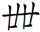
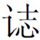
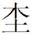
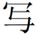
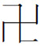
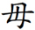

中文
一画
一年 小说。张天翼著。1933年上海良友图书印刷公司出版。——1933⑤5。
一坛酒 小说集。许钦文著。1930年上海北新书局出版。——1930⑦31。
一千一夜（俄译） 见《Книга тысячи и одной ночи》。
一月九日 特写。高尔基（М.Горький）著，曹靖华译。1931年苏联莫斯科中央出版局出版。——1933④21。
一天的工作 见《苏联作家二十人集》。
一切经音义 佛教书籍。二十五卷，四册。唐代玄应撰。——1914⑨26。1915④19。
一乘决疑论 见《华严一乘决疑论》。
一个人的受难 木刻画集。比利时麦绥莱勒（F.Masereel）作，鲁迅编选并作序。1933年上海良友图书印刷公司影印，《木刻连环图画故事》之一。——1933⑩7。
一个青年之[的]梦 日记又作《青年之梦》、《或る青年の夢》。四幕剧。日本武者小路实笃著，鲁迅译。先在《国民公报》和《新青年》上连载，1922年商务印书馆出版。——1919⑧2。（11）26。1920①18。1921（12）20。1922⑧29。
一个平凡的故事 木刻连环画。胡其藻作。1935年广州现代创作版画研究会手印本。——1935（12）3。
一个日本人之[的]中国观 即《生ける支那の姿》中译本。杂文集。日本内山完造著，鲁迅作序，尤炳圻译。1936年上海开明书店出版。——1936⑧20。⑨19。
一九二八年欧洲短篇小说集 见《Short Stories of 1928》。
二画
二月 小说。柔石著，鲁迅作序。1929年上海春潮书局出版。——1929⑧20。⑩5。1930①25，27。
二心集 杂文集。鲁迅著。1932年上海合众书店出版。——1932④26。⑧23。1933①10。③14。1936⑨17。
二十五史 二十五史刊行委员会编。五册，附人名索引一册。字典纸精装本。1935年上海开明书店影印。《二十五史》，即《二十四史》加《新元史》（清末柯劭忞撰）。——1935（12）21。
二十四史（百衲本） 指1930年至1937年间上海商务印书馆集合各史较早刻本影印的《二十四史》。计有：《史记》（一三○卷，汉司马迁撰），《汉书》（一○○卷，东汉班固撰），《后汉书》（一二○卷，南朝宋范晔撰），《三国志》（六五卷，晋陈寿撰），《晋书》（一三○卷，唐房玄龄等撰），《宋书》（一○○卷，梁沈约撰），《南齐书》（五九卷，梁萧子显撰），《梁书》（五六卷，唐姚思廉撰），《陈书》（三六卷，唐姚思廉撰），《魏书》（一一四卷，北齐魏收撰），《北齐书》（五○卷，唐李百药撰），《周书》（五○卷，唐令狐德棻等撰），《隋书》（八五卷，唐魏徵等撰），《南史》（八○卷，唐李延寿撰），《北史》（一○○卷，唐李延寿撰），《旧唐书》（二○○卷，后晋刘昫等撰），《唐书》（二二五卷，宋欧阳修等撰），《旧五代史》（一五○卷，宋薛居正等撰），《五代史记》（七四卷，宋欧阳修等撰），《宋史》（四九六卷，元脱脱等撰），《辽史》（一一六卷，元脱脱等撰），《金史》（一三五卷，元脱脱等撰），《元史》（二一○卷，明宋濂等撰），《明史》（三三二卷，清张廷玉等撰）。——1929（12）26。1930⑧26，31。1931⑧31。1934①9。（12）31。1935（12）30。
二百

孝图 清代胡文炳绘制，光绪间兰石斋刻本。四册。——1927⑥11。二李倡和集 见《二李唱和集》。
二李唱和集 日记又作《二李倡和集》。合集。宋代李昉、李至撰。——1914②1。1915④16。
二十五史补编 二十五史刊行委员会编。四册。字典纸精装本。收宋元以来对《二十五史》进行增补、考释之作二百四十五种。1936至1937年上海开明书店影印。——1935⑥6。
二十四孝图二种 见《前后男女二十四孝悌图说》。
二十世纪之[的]欧洲文学 苏联弗理契（В.М.Фриче）著，楼建南译。1933年上海新生命书局出版。——1933③7。
十月 小说。苏联雅各武莱夫（А.С.Яковлев）著，鲁迅译。1933年上海神州国光社出版，《现代文艺丛书》之一。——1930⑧30。⑨13。1933⑤3。
十月 见《Октябрь》。
十二个 长诗。苏联勃洛克（А.А.Блок）作，胡敩译，鲁迅作后记。1926年北京北新书局出版，《未名丛刊》之一。——1926⑨17。
十七史 明代毛晋辑。计有：《史记》、《汉书》、《后汉书》、《三国志》、《晋书》、《宋书》、《南齐书》、《梁书》、《陈书》、《后魏书》、《北齐书》、《周书》、《隋书》、《南史》、《北史》、《新唐书》、《新五代史》。——1913③26。
十竹斋笺 见《十竹斋笺谱》。
十竹笺谱 见《十竹斋笺谱》。
十竹斋笺谱 日记又作《十竹笺谱》。木刻画集。一卷。明代胡正言选辑，鲁迅、西谛重编。1934年北平版画丛刊会影印明崇祯年间刻彩色套印本，《版画丛刊》之一。——1934③26。⑥21，27。⑦23。⑧7。（11）7。1935④9。⑤12。⑥10。⑧6。
十万卷楼丛书 清代陆心源辑。清光绪年间归安陆氏家刻本，分初、二、三编，共五十种一一二册。——1914②8。
十住毘婆沙论 佛教书籍。十七卷，三册。龙树菩萨造，后秦鸠摩罗什译。——1914⑤15。
十六国春秋辑补 史书。一百卷，十二册。清代汤球辑。光绪二十一年（1895）广雅书局刻。——1927⑥9。
十六国春秋纂录 史书。十卷附校勘记，二册。清代汤球辑。光绪二十年（1894）广雅书局刻。——1927⑥9。
十二门论宗致义记 佛教书籍。二卷或四卷，二册。龙树菩萨造，后秦鸠摩罗什译，唐代法藏记。——1914⑦28。
十三经及群书札记 三十八卷，十册。清代朱亦栋撰。光绪四年（1878）武林竹简斋重刻本。——1927④24。
十二因缘等四经同本 佛教书籍。《十二因缘经》，元魏菩提流支译，明崇祯十六年松江弘法会刻本。与《成唯识宝生论》三种合订一册。——1914⑨6。
十八空百广百论合刻 佛教书籍。一册。即《十八空论》（一卷，龙树菩萨造，南朝陈真谛译）、《百论》（二卷，提婆菩萨造，后秦鸠摩罗什译）和《广百论本》（一卷，圣天菩萨造，唐代玄奘译）的合刻本。宣统三年（1911）常州天宁寺刻。——1914⑨17。
丁玲选集 丁玲著。1933年上海天马书店出版。——1933（12）28。
七年忌 小说集。欧阳山著。1935年上海生活书店出版。——1935⑤28。
七家后汉书补逸 史书。二十六卷，六册。清代姚之骃辑。——1913⑤18。
卜辞通纂 甲骨文考释。正文一卷，考释三卷，索引一卷。四册。郭沫若著。1933年日本东京文求堂影印。——1933⑤12。
八宗纲要 佛教书籍。二卷，一册。明代凝然述。——1914⑤31。
八月之[的]乡村 小说。田军著，鲁迅作序。1935年上海容光书局出版，《奴隶丛书》之一。——1935③28。
八史经籍志 史书。十种，十六册。清代张寿荣辑。光绪九年（1883）镇海张氏刻。——1926⑩25。
八龙山人画谱 木刻画谱。一册。清代沈麟元绘。杭州抱经堂书局刻。——1928⑦16。
八琼室金石补正 金石文字考述集。正文一三○卷，目录三卷，附八琼室金石札记四卷，金石法伪一卷，金石偶存一卷。六十四册。清代陆增祥撰。1925年吴兴刘氏希古楼刻本。——1934⑥2。
人物志 杂说。三卷，一册。三国魏刘劭著，北魏刘昞注。《四部丛刊》初编影印明代正德影宋刻本。——1927⑩11。
人间世 小品文半月刊。林语堂主编，陶亢德、徐 编辑。上海良友图书印刷公司发行。1934年4月创刊。1935年12月出至第四十二期停刊。——1934④7。⑥3。
编辑。上海良友图书印刷公司发行。1934年4月创刊。1935年12月出至第四十二期停刊。——1934④7。⑥3。
人间的生活 小说。日本武者小路实笃著，毛咏棠、李宗武合译，鲁迅校。1922年上海中华书局出版。——1921⑤31。⑦8。
入阿毘〔达〕磨论 佛教书籍。二卷，二册。唐代玄奘译。明刻本。——1914⑨6。
入楞伽心玄义 佛教书籍。一卷。唐代法藏撰。——1921⑥18。
儿童的版画 见《Гравюра Детей》。
儿童艺术展览会纪要 见《全国儿童艺术展览会纪要》。
儿童艺术展览会报告 见《全国儿童艺术展览会纪要》。
九州释名 附录“释予”。地理专志。一册。鲍鼎撰。——1932③4。
九品中正与六朝门阀 史论。杨筠如著。1930年上海商务印书馆出版。——1932⑨24。
又满楼丛书 十六种，八册。赵诒琛辑。1925年昆山赵氏又满楼刻本。——1926⑩5。
三画
三人 小说。苏联高尔基著。石韦（钟潜九）译。1933年在狱中据英译本译出。1934年出狱后托欧阳山转请鲁迅校阅。1935年上海商务印书馆出版。——1934⑦12。1935②26。
三世相（景宋椠） 命相书。不著撰人名氏，日本书

学会编。昭和八年（1933）影印宋刊本。——1933③1。三闲集 杂文集。鲁迅著。1932年上海北新书局出版。——1932④24，26。⑨14，19，21，22。⑩2，15。1933①6，10。
三姊妹 剧本。俄国契诃夫（А.П.Чехов）著，曹靖华译。1925年上海商务印书馆出版，《文学研究会丛书》之一。——1925⑩19。
三国志 见《二十四史》（百衲本）。
三民主义（英译本） 见《San-Min-Chu-I》。
三论玄义 佛教书籍。二卷，一册。隋代吉藏撰。——1914（12）6。
三余札记 杂纂。二卷，二册。刘文典撰。1928年上海商务印书馆出版。——1929①24。
三余偶笔 十六卷，八册。清代左暄著。日本刻本。——1923②7。
三国画象 《三国志》的人物画本。二册。清代潘锦（昼堂）摹写。光绪辛巳（1881）桐荫馆刻本。——1931⑩11。
三垣笔记 杂史。正文三卷，补遗三卷，附识三卷，补遗一卷，四册。清代李清撰。1927年吴兴刘氏刻嘉业堂丛书本。——1934（11）3。
三唐人集 合集。六册。清代冯焌光辑。内收《李文公集》（唐代李翱撰）、《皇甫持正文集》（唐代皇甫湜撰）、《孙可之文集》（唐代孙樵撰）。光绪元年至二年（1875—1876）南海冯氏读有用书斋刻本。——1934③22。
三辅黄图 地理书。汉代佚名撰。日记所记版本有二：一为清乾隆四十九年（1784）灵岩山馆刻本，正文六卷，补遗一卷，二册；一为《四部丛刊》三编影印元本，正文六卷，校勘记一卷，一册。——1913④8。1935（12）30。
三不朽图赞 见《明于越三不朽名贤图赞》。
三国志平话 见《至治新刊全相平话三国志》。
三国志补注 史书。六卷。清代杭世骏撰。——1914⑨12。
三国志演义（残本） 小说。元代罗贯中编撰。——1923⑦7，20。
三宝感通录 见《集神州塔寺三宝感通录》。
三教平心论 二卷，一册。元代刘谧撰。——1914④18。
三十三剑客图 画册。二册。清代任熊绘。咸丰六年（1856）蔡容庄刻本。——1933（12）8。
三国志裴注述 史书。二卷，一册。清代林国赞撰。光绪十六年（1890）学海堂刻本。——1927⑥9。
三教搜神大全 见《三教源流搜神大全》。
三台学韵诗林正宗 日记作《诗林正宗》。类书。十八卷，六册。明代余象斗辑。明万历二十八年（1600）双峰堂余氏刻本。——1933⑩24。
三教源流搜神大全 日记又作《三教搜神大全》。小说。七卷，二册。宋代佚名辑，叶德辉重辑。宣统元年（1909）长沙叶氏影明刻本。——1914⑩10。（11）4。
三山郑菊山先生清隽集 日记作《清隽集》。别集。一卷，一册。宋代郑起撰。附《所南先生文集》（宋代郑思肖撰）。《四部丛刊》续编影印林佶手抄本。——1934（11）24。
干青木刻二集 段干青作。1936年手拓本。——1936④23。
工人绥惠略夫 小说。俄国阿尔志跋绥夫（М.П.Арцыбашев）著，鲁迅译。1922年上海商务印书馆出版。——1920⑩22。1921④18。⑤4。
士敏土 小说。苏联革拉特珂夫（Ф.В.Гладков）著，蔡咏裳、董绍明译。1930年上海启智书局初版，1931年上海新生命书局再版时由鲁迅译序并校订。——1930②12。（12）27。1931⑧14。⑩21，29。（11）18。（12）2。1932⑨3。
士敏土图 见《梅斐尔德木刻士敏土之图》。
士礼居丛书 即《士礼居黄氏丛书》。十七种，附二种，三十册。清代黄丕烈辑。光绪十三年（1887）上海蜚英馆影印清士礼居黄氏刻本。——1923①13，20。
士敏土之图 见《梅斐尔德木刻士敏土之图》。
士敏土之图（翻印本） 德国梅斐尔德（C.Meffert）作，鲁迅序。1934年韩白罗用晒图纸翻印。——1934⑦25。
土饼 小说。沙汀著。1936年上海文化生活出版社出版，《文学丛刊》之一。——1936⑧16。
土俗品图录 指英国伦敦不列颠博物馆所藏中世纪手工艺品和艺术品的英文藏品目录，鲁迅通过日本丸善书店购得一册。——1917④24。
大公报 1902年6月英敛之创办于天津。1926年9月由财阀吴鼎昌和政学系张季鸾等接办。——1934③16。1935⑧31。⑩15。
大荒集 诗文集。二册。林语堂著。1934年上海生活书店铅印本。——1934⑦6。
大乘论 见《大乘起信论》。
大戴礼 见《大戴礼记》。
大历诗略 合集。六卷，四册。清代乔亿选评。乾隆三十七年（1772）宝应乔氏刻本，居安乐玩之堂藏板。——1935（11）20。
大众文艺 文学月刊。郁达夫编，夏莱蒂助编。自第二卷第一期起由陶晶孙接编。上海现代书局发行。1928年9月创刊，1930年6月出至第二卷第六期停刊。——1928⑧26。
大名县志 四十卷，卷首一卷，十二册。清代张维祺等纂修，乾隆五十四年（1789）刻本。——1923③14。
大学日刊 见《北京大学日刊》。
大戴礼记 儒家经典。十三卷。汉代戴德撰，北周卢辩注。——1912（11）12。1927⑦26。
大西洋之滨 散文集。孙福熙著，鲁迅校阅。1925年北京北新书局出版，《文艺小丛书》之一。——1924③7，8。1925（11）30。
大乘起信论 日记又作《大乘论》、《起信论》。佛教书籍。马鸣菩萨造。有两种译本：梁译，即南梁真谛译，一卷；唐译，即唐代实叉难陀译，二卷。——1914⑥3。⑦5，29。1921⑥27。
大唐西域记 地理书。十二卷，四册。唐代玄奘述，辩机编。日记所记版本有二：一为宣统元年常州天守寺刻本；一为《四部丛刊》初编影印宋刊梵夹本。——1913（11）26。1914⑦29。1924⑤14。
大清一统志 日记作《嘉庆重修一统志》。地理总志。五六○卷，二百册，附索引十册。清代穆彰阿等纂。《四部丛刊》续编影印进呈抄本。——1934③31。⑦7。
大广益会玉篇 又作《玉篇》。字书。三十卷，三册。梁代顾野王撰，唐代孙强增字，宋代陈彭年等重修。《四部丛刊》初编影印元本。——1923⑤1。
大方广泥洹经 见《佛说大方广泥洹经》。
大方等泥洹经 见《佛说大方广泥洹经》。
大安般守意经 佛教书籍。二卷，一册。后汉安世高译。——1914⑨26。
大乘中观释论 见《中观释论》。
大唐开元占经 又作《开元占经》。术数书。一二○卷，二十四册。唐代瞿昙悉达等撰。——1912⑨15。1913①17。
大涤子山水册 画册。一册。清代原济（石涛）绘。1912年上海有正书局影印。——1912（11）16。
大乘起信论义记 佛教书籍。七卷，附别记一卷，二册。唐代法藏撰。——1914⑥3。
大乘法苑义林章记 佛教书籍。二十一卷，七册。唐代窥基撰，智周记。——1918⑨7。
大乘起信论海东疏 即《大乘起信论疏记会本》。佛教书籍。六卷，二册。唐代新罗元晓疏记。——1921⑦7。
大唐三藏取经诗话 日记作《唐三藏取经诗话》。话本。三卷，一册。佚名撰。1916年上虞罗氏影印中瓦子张家蓝印本。——1918①4。
大清重刻龙藏汇记 日记作《清重刻龙藏汇记》。佛教书籍。一册。清代工布查等编。——1914⑥3。
大乘法界无差别论疏 日记又作《法界无差别论疏》。佛教书籍。二卷，一册。坚慧菩萨造，唐代提云般若译，法藏撰疏。——1914⑤15。
大萨遮尼乾子受记经 即《大萨遮尼犍子受记经》。佛教书籍。十卷，二册。后魏菩提留支译。——1914⑩25。
大慈恩寺三藏法师传 日记作《玄奘三藏传》、《慈恩寺三藏法师传》。佛教书籍。十卷，三册。唐代慧立撰。——1914⑥3。⑦29。
大方广佛华严著述集要 见《大方广佛华严经著述集要》。
大方广佛新华严经合论 日记作《华严经合论》。佛教书籍。一二○卷，三十册。唐代实叉难陀译，李通玄造论，志宁厘经合论。——1914④19。
大方广佛华严经著述集要 日记又作《大方广佛华严著述集要》。佛教书籍。二十三种，十二册。——1914⑦28。
万仞约 小说集。张天翼著。1936年上海商务印书馆出版，《文学研究会创作丛书》之一。——1936④10。
万宝山 小说。李辉英著。1933年上海湖风书局出版。——1933④8。
万邑西南山石刻记 金石地志。三卷，一册。况周颐撰。光绪二十九年（1903）白岩讲舍刻本。——1915⑨12。⑩7。
万古愁曲、归玄恭年谱合刻 见《校正万古愁》。
才调集 合集。十卷，三册。五代后蜀韦縠辑。《四部丛刊》初编影印清常熟钱氏述古堂影抄宋书棚本。——1926⑨29。
夨彝考释质疑 金石题跋。一卷，一册。鲍鼎撰。1929年石印本。——1932③4。
上海指南 地理书。上海商务印书馆编印。——1916（11）3。
山灵 小说集。胡风编译。1936年上海文化生活出版社出版，《译文丛书》之一。——1936⑤18。
山海经 杂记。十八卷，二册。晋代郭璞传，日记中所记版本，一为清代歙县项氏群书玉渊堂依宋本校刻本；一为《四部丛刊》初编影印明成化六年刊本。——1916（12）8。1926⑩14。
山民牧唱 小说集。西班牙巴罗哈（P.Baroja）著。鲁迅据日译本自1928年至1934年陆续译出，生前未出版。——1933⑨13。
山胡桃集 散文集。傅东华著。1935年上海生活书店出版，《创作文库》之一。——1935④13。
山野掇拾 散文集。孙福熙著，鲁迅校阅。1925年北京新潮社初版，《新潮社文艺丛书》之一。——1923⑧12，13，14。1924①8。1925③11，12，15。④14。⑨9。
山右金石记 金石题跋。十卷，十册。清代张煦撰。为《山西通志》第八十九卷至九十八卷之单行本。光绪十五年（1889）刻本。——1916⑧27。
山右金石录 金石地志。三卷，一册。清代夏宝晋编。石宗建校订。光绪八年（1882）归安石氏刻本。——1923⑧24。
山樵书外纪 金石文字。一卷，一册。清代张开福撰。1921年西泠印社排印，刊入吴隐辑《遯盦金石丛书》。——1935③21。
山右石刻丛编 金石地志。四十卷，二十四册。清代胡聘之辑。光绪二十五年至二十七年（1899—1901）胡氏刻本。——1915（11）6。
山谷外集诗注 别集。十四卷，八册。宋代黄庭坚撰，史容注。《四部丛刊》续编影印元至元二十二年（1285）重刻宋本。——1934②12。
巾箱小品 丛书。十三种，四册。清代金农著。日本文久三年（1863）刻本。——1923②7。
千甓亭专图 见《千甓亭古专图释》。
千甓亭古专图释 日记又作《千甓亭专图》。金石图象。二十卷，四册。清代陆心源辑。光绪十七年（1891）吴兴陆氏影印。——1915⑦2，29。
亿年堂金石记 金石文字。一册。陈邦福著。石印本。——1932③30。
及时行乐 画册。一册。佚名绘。上海艺苑真赏社影印清内府旧藏本。——1933①15。
广均 见《广韵》。
广韵 日记又作《广均》。韵书。五卷，五册。宋代陈彭年等撰。1919年《四部丛刊》初编影印宋刊巾箱本。——1923⑤1。
广陵潮 小说。十集。李涵秋著。上海震亚书局出版。——1917（12）31。
广东通信 广东进步青年编印的刊物。——1936①30。
广仓专录 即《艺术丛编·专门名家》第三集。金石图象。一卷，二册。姬佛陀编。上海仓圣明智大学刊行。——1921（11）15。
广东新语 杂记。二十八卷，十二册。清代屈大均撰。清末刻本。——1927⑥9。
广弘明集 佛教书籍。四十卷，十册。唐代道宣撰。1912年常州天宁寺刻本。——1914⑨17。1915⑥5。1925⑦14。
广阳杂记 杂记。五卷。清代刘献庭撰。光绪年间吴县潘氏《功顺堂丛书》本。——1913①18。
广陵诗事 别集。十卷二册。清代阮元撰。光绪十六年（1890）重刻本。京师扬州老馆藏版。——1925④16。
广雅丛刊 即《广雅书局丛书》。一六一种。清代广州广雅书局辑印，1920年番禺徐绍棨汇编重印。——1927⑨16。
广雅疏证 训诂书。十卷，八册。清代王念孙撰，王引之述。——1915①2。
广经室文钞 别集。一卷，一册。清代刘恭冕撰。光绪十五年（1889）广雅书局刻本。——1927⑨16。
之江日报 在浙江杭州出版的一种报纸。——1914（11）6。
女性美（《妇女的三个时代》中之一部） 法国戛布流夫人著，季志仁译。1926年北京北新书局出版。——1926⑤27。
女人的心 小说集。孙席珍著。1929年上海真美善书店出版。——1929⑧7。
女史箴图 画册。宋代陈居中绘。民国初年有正书局刊本。——1913（11）16。
女史箴图 见《顾恺之画女史箴》。
女子师范风潮闻见记 当时北京女子师范学校学生因反对校长吴鼎昌而闹学潮，此即关于此事的记载。——1912（12）14。
小鬼 小说。俄国梭罗古勃（Ф.К.Солoгуб）著，徐懋庸译。1936年上海生活书店出版。——1936⑩2。
小说 梁得所主编，包可华、丽尼编辑。上海大众出版社发行。1934年5月创刊时为月刊，同年7月第三期起改为半月刊，1935年出至第十九期停刊。——1934⑦4。
小字录 名号录。一卷，一册。宋代陈思撰。《四部丛刊》三编影印明代活字本。——1935（12）30。
小约翰 童话。荷兰望·蔼覃（F.Van Eeden）著，鲁迅译。1928年北京未名社出版，1934年上海生活书店重印。——1926⑧13。1927⑤2，26，29，31。⑥14。⑦15。1928②2。③2，13。⑦18。1929⑥22。1934⑥6。（12）4，10，14。1935③25。⑦20。
小彼得 童话。德国至尔·妙伦（Zur Mühlen）著，鲁迅译。1929年上海春潮书局出版。——1929⑨8。1930①25，27。
小说史 见《中国小说史略》。
小说集 见《短篇小说三篇》。
小小十年 小说。叶永蓁著，鲁迅校并作小引。1929年上海春潮书局出版，二册；1933年上海生活书店重印，一册。——1929⑦7。⑨5，21。1933⑨21，27。
小百梅集 画集。清代改琦绘。1929年上海商务印书馆影印。——1929⑧6。
小学大全 见《尹氏小学大全》。
小学答问 语言文字学。一卷，一册。章炳麟撰。清宣统元年（1909）作者手写刻本。——1913③30。④4，6。1914（11）26。（12）15。1915③1。1919⑤21。
小说二集 见《中国新文学大系·小说二集》。
小说二编 见《中国新文学大系·小说二集》。
小说月报 日记又作《说报》。1910年创刊，商务印书馆出版。曾为“鸳鸯蝴蝶派”的刊物。1921年1月第十二卷起由沈雁冰主编后，改革内容，成为文学研究会的主要阵地。1923年1月第十四卷起，由郑振铎接编，1932年上海一·二八事变后停刊。共出二十二卷。——1917⑥10。1921④28。⑨5，6。1923④10。1924①21。⑨9。（11）19。（12）5。1925①22。②23。③17。④14。⑤16。⑥16。1927⑥30。
小说史略 见《中国小说史略》。
小说史略（日译本） 见《支那小説史》。
小说杂志 见《Роман-газета》。
小说拘沈 见《古小说钩沉》。
小说卷二 见《中国新文学大系·小说二集》。
小哥儿俩 小说集。凌叔华著。1935年上海良友图书印刷公司出版，《良友文学丛书》之一。——1935（11）9。
小说旧闻钞 小说史料。鲁迅辑。1926年北京北新书局出版，1935年上海联华书局重印。——1926⑥12。⑧12，13。1928③4，6。1935①23。⑤26。⑦16，17。
小万卷楼丛书 十七种，十六册。清代钱培名辑。光绪四年（1878）金山钱氏重刻本。——1914③29。
小品文与漫画 《太白》半月刊一卷纪念特刊。1935年上海生活书店出版。——1935③27。
小蓬莱阁金石文字 一册。清代黄易辑。1915年鲁迅由京师图书馆分馆借得，补抄家藏本所缺的一页。——1915④28。
飞燕外传 见《仇文合璧飞燕外传》。
马叔平所藏甲骨文拓本 金石文字。一册。——1919⑤23。
马江香〔女士〕花卉草虫册 画册。一册。马江香绘。上海文明书局影印。——1912（11）17。
马扶曦花鸟草虫册 画册。一册。清代马元驭绘。上海文明书局影印。——1912（11）17。
子夜 小说。茅盾著。1933年上海开明书店出版。——1933②3。⑥19。
乡言解颐 训诂书。五卷，四册。清代瓮斋老人撰。道光三十年（1850）刻本。——1932④4。
乡土教科书 见《江苏江宁乡土教科书》。
四画
王无功集 别集。三卷，补遗二卷，校勘记一卷，一册。唐代王勣撰。光绪三十二年（1906）上虞罗氏唐风楼刻本。——1912（12）14。
王右丞集 见《王右丞集笺注》。
王子安集注 别集。二十卷，卷首一卷，卷末一卷，六册。唐代王勃撰，清代蒋清翊注。光绪九年（1883）吴县蒋氏双唐碑馆刻本。——1932②20。
王荆公年谱 传记。三卷，卷后一卷，遗事一卷，二册。清代顾栋高辑，吴兴刘承干校。1917年吴兴刘氏求恕斋刻本。——1934（11）3。
王觉斯诗册 见《王觉斯诗册真迹》。
王小梅人物册 画册。一册。清代王小梅绘。1912年上海有正书局影印。——1912（11）17。
王子安集佚文 别集。一卷，校记一卷，一册。唐代王勃撰，罗振玉校录。1918年上虞罗氏仿宋铅印本。——1932③17。
王右丞集笺注 别集。二十八卷，卷首一卷，卷末一卷，八册。唐代王维撰，清代赵殿成笺注。乾隆二年（1737）锦斋刻本。——1923⑤15，25。⑥6，7，8，9，10。
王忠悫公遗集 见《海宁王忠慤公遗书》。
王觉斯自书诗 见《王觉斯诗册真迹》。
王良常论书语 见《王良常楷书论书賸语》。
王觉斯诗册真迹 书法。一册。清代王觉斯作并书。上海文明书局石印。——1914（12）30。
王梦楼自书诗稿 见《王梦楼自书快雨堂诗稿》。
王石谷晚[老]年拟古册 日记又作《石谷晚年拟古册》。画册。一册。清代王翚绘。上海有正书局影印。——1912（11）16。
王良常楷书论书賸语 书法。一册。清代王澍撰并书。上海文明书局石印。——1914（12）30。
王梦楼自书快雨堂诗稿 日记又作《王梦楼自书诗稿》。书法。一册。清代王文治作并书。上海文明书局石印。——1914（12）30。
开元占经 见《大唐开元占经》。
开元天宝遗事 笔记。二卷，一册。后周王仁裕撰。1921年西泠印社排印本。——1935③21。
开有益斋读书志 杂纂。六卷，续志一卷，金石文字记一卷，六册。清代朱绪曾撰。——1928⑥10。
开拓了的处女地 小说。苏联萧洛霍夫（М.А.Шолохов）著，李虹霓译。1936年日本东京目黑社出版。——1936⑨8。
天下篇 半月刊。天津天下篇半月刊社编。1934年2月创刊。——1934②24。③5，12，16，28。④4。
天觉报 日记又作《天觉日报》。1912年11月1日创刊于浙江绍兴。宋琳等编。1913年3月停刊。——1912⑩30。（11）7，9，12，13，16，17，19，21，22，24，25，26，27，28，29，30。（12）1，3，4，5，7，8。1913②2。
天觉日报 见《天觉报》。
天游阁集 日记又作《天游阁诗集》。别集。一册。清代顾春撰。——1912⑧14。⑩15。
天人感通录 即《道宣律师天人感通录》。
天发神谶碑 原称《吴天玺纪功碑》。三国吴碑刻。一册。上海有正书局石印。——1914（12）20。
天游阁诗集 见《天游阁集》。
天马山房丛著 丛书。马叙伦撰。六种，七卷，一册。铅印。——1925⑩30。
天籁阁旧臧宋人画册 一册。闽县李氏观槿斋藏。上海商务印书馆影印。——1923①26。1931④28。
元史（洪武本） 见《二十四史》（百衲本）。
元曲选 杂剧。一百卷，六家论曲一卷，四十八册。明代臧懋循辑。——1922⑩15。1928⑦30。
元画考 见《元书画考》。
元书画考 清代高士奇撰。清嘉庆己未（1799）松门戴光曾鸽峰堂手抄本。四册。鲁迅曾托人从浙江图书馆藏本抄出，订为二册。今不见于鲁迅藏书。——1913⑨9，21。
元庆的画 陶元庆绘。——1928⑥1。
元次山集 见《唐元次山文集》。
元和姓纂 类书。十卷，四册。唐代林宝撰，清代孙星衍、洪莹校。——1914①24。
元遗山集 见《元遗山先生全集》。
元九宫词谱 元代曲谱。撰者不明，版本不详。——1913⑥22。⑧9。
元次山文集 见《唐元次山文集》。
元祐党人传 传记。十卷，四册。清代陆心源辑。光绪十五年（1889）刻本。——1926⑩5。
元遗山诗注 全名《元遗山诗集笺注》。十四卷。金元好问撰，清代施国祁笺注。有道光二年（1822）南浔蒋氏瑞松堂刻本和道光十七年（1837）苕溪吴氏醉六堂刻本，均为六册装。鲁迅代宋芷生所购版本不详。——1918②6，7。
元明古德手迹 书法。一册。元明间梵崎、道衍等书。上海有正书局影印。——1913（12）14。
元明散曲小史 梁乙真著。1934年上海商务印书馆出版。——1935④13。
元人选元诗五种 合集。收《河汾诸老诗集》（元房祺辑）、《国朝风雅》（元蒋易辑）、《木雅集》（元赖良辑）、《敦交集》（元魏士达辑）、《伟观集》（元佚名辑）等五种。罗振玉编。1915年连平范氏双鱼室刻本。——1935（11）20。
元城先生尽言集 政书。十三卷，四册。宋代刘安世撰，马永卿编。《四部丛刊》续编影印明隆庆翻宋本。——1934⑦14。
元西域人华化考 史学专著。二册。陈垣著。1923年石印本。——1923（11）8。
元遗山先生全集 别集。四十卷，卷首一卷，十六册。金代元好问撰。光绪七年（1881）读书山房刻本。——1934①1。
元阎仲彬惠山复隐图 画册。一册。元代阎骧绘。宣统三年（1911）上海文明书局影印。——1912（11）17。
元至治本全相平话三国志 日记作《全相三国志平话》。小说。三卷，三册。不著撰人。1929年上海商务印书馆影印。——1929⑥23。
无冤录 法医学。二卷，一册。元代王与撰。1929年永嘉黄氏刻，《敬乡楼丛书》本。——1932④4，6。
无机化学 见《无机质学》（译稿）。
无机质学（译稿） 日记又作《化学》、《无机化学》、《化学讲义》。三册。1911年鲁迅应张协和之请而译。原作者不详。——1913②5。1914⑤7。（11）8。1915⑩15。
无名文艺 月刊。陈企霞、叶紫合编。1933年2月创刊，初为旬刊。上海无名文艺旬刊编辑部发行。同年6月与海燕文艺社合并，改出月刊，仅出两期。——1933⑥5。
无名木刻集 又作《木刻集》。日记作“木刻”。1934年4月无名木刻社手印。收刘岘、黄新波木刻七幅，鲁迅曾为作序。——1934④17。
无邪堂答问 杂学。五卷，五册。清代朱一新撰。光绪二十一年（1895）广雅书局刻本。——1927⑨16。
无量义经观普贤行法经合刻 佛教书籍。二卷，一册。《无量义经》，一卷，南齐昙摩伽陀耶宿译；《佛说观普贤菩萨行法经》，一卷，刘宋昙摩蜜多译。金陵刻经处刻。——1916①29。
韦斋集 别集。十二卷，三册。宋代朱松撰。《四部丛刊》续编影印元本。——1934④9。
韦江州集 别集。十卷，附录一卷，二册。唐代韦应物撰，明代华云校。《四部丛刊》初编影印明本。——1922⑩15。
云议友议 见《云溪友议》。
云仙杂记 笔记。十卷，一册。旧题唐代冯贽撰。《四部丛刊》续编影印明隆庆年间叶氏菉竹堂刊本。——1934③5。
云谷杂记 笔记。一卷。南宋张淏（清源）撰。——1913⑥1。1914③16，22。
云南周刊 云南昆明进步人士办的综合性刊物，梓模曾将该刊寄与鲁迅。——1925④21。
云窗丛刻 丛书。十二种，十二册。罗振玉辑。1914年上虞罗氏日本影印袖珍本。——1915⑩17。（11）2。
云溪友议 日记又误作《云议友议》。笔记。唐代范摅撰。日记所记版本有三：一、吴兴刘氏《嘉业堂丛书》朱印本，三卷，一册；二、《四部丛刊》续编影印明本，三卷，附校勘记三卷，一册；三、吴兴刘氏《嘉业堂丛书》本，三卷，附校勘记三卷，二册。——1923⑧24。1934③5。（11）3。
云溪杂记 未详。——1914⑥30。
专门名家（二集） 金石图象。一册。姬佛陀（觉弥）辑。1920年仓圣明智大学刊行，《艺术丛编》之一。——1921⑩28。
艺术 见《Искусство》。
艺术论 文艺理论。苏联卢那察尔斯基（А.В.Луначарский）著，鲁迅据日译本重译。1929年上海大江书铺出版，为《艺术理论丛书》之一。——1929④22。⑥30。
艺术论 文艺理论。俄国普列汉诺夫（Г.В.Плеханов）著。鲁迅据日译本重译。1930年上海光华书局出版，《科学的艺术论丛书》之一。——1929⑩12，13。1930⑤8。
艺术论 见《マルクス芸術論》。
艺谈录 诗文评论。二卷，二册。清代张维屏撰。粤东富文斋刻本。——1927⑥9。
艺术丛编 金石丛书。姬佛陀（觉弥）编。1916到1920年上海仓圣明智大学刊行，共三十九册（内有《专门名家》一至三集）。——1916（12）5。1917④1。1918③9。1919④22。1921③10。⑩28。（11）15。
艺术讲座 见《文艺讲座》。
艺文类聚 类书。一百卷，十册。唐代欧阳询等辑。明代嘉靖七年（1528）苏州刻本。——1912⑩1。1913（12）17，18。1916④22。
艺坛导报 旬刊。南京艺坛导报社编辑发行。1936年1月10日出版试刊号，20日正式出版。——1936①15。
艺苑朝花[华] 美术丛刊。鲁迅编选。朝花社印行。预定出版十二辑，后仅出五辑：《近代木刻选集（1）》、《蕗谷虹儿画选》、《近代木刻选集（2）》、《比亚兹莱画选》（以上四辑1929年上海朝花社选印），《新俄画选》（1930年上海光华书局出版）。——1929②19，21。④9。⑤12。⑦16，20。1930②26。⑤31。⑥1，17。1935①9。
艺术与批评 见《文艺与批评》。
艺风堂读书记[志] 丛书。七卷，二册。缪荃孙著。江阴缪氏刻本。——1916⑦21。⑨26。
艺风堂考臧金石〔文字〕目 金石目录。十八卷，八册。缪荃孙编。——1915⑧5。
木刻 见《无名木刻集》。
木刻 见《李桦版画集》。
木刻 见《现代版画》。
木版画 木刻集。野穗社编印。1933年5月出版。——1933⑥18。
木刻集（罗清桢） 见《罗清桢木刻集》。
木刻集（王慎思） 疑为1933年冬无名木刻社手印的《○○木刻集》。——1934③25。
木刻集 M K木刻研究社编印。——1934⑤20。
木刻集（张影） 见《张影版画集》。
木刻集（赖少其） 见《赖少麒版画集》。
木刻集（张慧） 见《张慧木刻画》。
木棉集 诗文戏曲集。卢前著。1928年排印本。——1928（11）9。
木刻纪程（一） 木刻集。鲁迅编选并作小引。1934年以“铁木艺术社”名义印行。——1934⑦18。⑧14。⑩3，4，6，8，17，27。（11）7，22。（12）7，24。1935①31。
木刻图说 见《Woodcuts and Some Words》。
木铃木刻 木刻集。1933年春杭州艺术专科学校木铃木刻社第一次作品展览会展品结集。——1933④25。
木版雕刻集 见《Гравюра на дереве》。
木刻创作法 白危（吴渤）编译，鲁迅作序。1937年上海读书生活出版社出版。——1933（11）9。
木刻集之二 即《近代木刻选集（2）》，见《艺苑朝华》。
木刻三人展览会纪念册 木刻集。陈仲纲、赖少其、潘业作。手拓本。——1935（12）17。
五杂组 杂著。十六卷。明代谢肇淛撰。日本宽文元年（1661）刻本。——1923①26，31。
五代史记 见《二十四史》（百衲本）。
五代史平话 小说。残八卷，二册。宋代佚名撰。毘陵董氏（董康）诵芬室影宋本。——1916③12。
五唐人诗集 合集。二十六卷，五册。收孟浩然、孟郊、李绅、韩偓、温庭筠作品。明代毛晋辑。1926年上海商务印书馆影印明汲古阁刻本。——1927①10。
五年计划〔的〕故事 科普读物。苏联伊林（Ильин）著，吴朗西译。1932年上海新生命书局出版。——1932⑧4。
五百石洞天挥麈 杂纂。十二卷，六册。清代邱炜萲撰。光绪二十五年（1898）闽漳邱氏广州刻本。——1927④19。
五馀读书廛随笔 杂著。二卷，一册。顾家相撰，顾燮光等编。1920年仿宋铅印。——1921④22。
五代贯休画罗汉象 日记又作《贯休画罗汉象》、《贯休罗汉象》、《贯休画罗汉》。画册。一册。五代前蜀贯休绘。1926年杭州西泠印社影印清代乾隆拓本。——1928⑦13。1930（11）13。1935③21，23。
五十年来之中国文学 日记作《中国文学》。文学史论。胡适著。《申报》五十周年纪念刊抽印本。1924年出版。——1924⑥2。
五十年来之世界哲学 哲学史论。胡适著。《申报》五十周年纪念刊抽印本。1924年出版。——1924⑥2。
五苦章句经等十经同本 佛教书籍。一册。内有：《五苦章句经》（东晋竺昙无兰等译）、《佛说坚意经》、《佛说净饭王般涅槃经》、《佛说兴起行经》、《长爪梵志请问经》、《佛说譬喻经》、《佛说比丘听施经》、《佛说略教诫经》、《疗痔病经》、《佛说叶报差别经》等十种。——1914⑩9。
支那二月 文学月刊。应修人等编。湖畔诗社出版。1925年2月创刊，同年5月出至第一卷第四期停刊。——1925④1。
支那土偶考 见《Chinese Pottery of the Han Dynasty》。
支那本藏经情字二册 佛教书籍。共四种经：《顺中论》二卷、《摄大乘论本》三卷、《中边分别论》二卷、《大乘起信论》三卷。——1914（12）7。
支那本大小乘论残本七册 见“支那本大小乘论静至逸字共七册”。
支那本大小乘论静至逸字共七册 日记又作“支那本大小乘论残本七册”。指“静”字二册八种经，“情”字二册四种经，“逸”字三册十二种经。——1914（12）5。
不幸的一群 日记作《不幸者的一群》。小说。俄国陀思妥耶夫斯基（Ф.М.Достоевский）著，李霁野译。1929年北平未名社出版部出版。——1929⑤20。
不安定的灵魂 小说集。陈翔鹤著。1927年北京北新书局出版。——1927⑦24。
不幸者的一群 见《不幸的一群》。
不走正路的安得伦 日记又作《安得伦》。小说。苏联聂维洛夫（А.Неверов）著，曹靖华译。1931年先在苏联印制，后经鲁迅编校并作小引，1933年由上海野草书屋出版，《文艺连丛》之一。——1931（12）25。1933⑤11，13，21。⑥3，13，19。⑩6。（11）1。
太白 小品文半月刊。陈望道编。上海生活书店发行。1934年9月20日创刊，1935年9月5日出至第二卷第十二期停刊。——1934⑨23。⑩24。（11）22。1935②22。③15，21，25，27。④5，25。⑤7，23。⑦23。⑧7。⑨8。
太戈尔传 传记。郑振铎编著。1925年上海商务印书馆出版，《文学研究会丛书》之一。——1925⑥4。
太平广记 类书。五百卷，目录十卷。宋代李昉等辑。——1923②9。④2。⑤22。1926⑥17。1935②20。
太平乐府 见《朝野新声太平乐府》。
太平御览 类书。一千卷，目录十五卷。宋代李昉等辑。日记所记版本有二：清代光绪十八年（1892）学海堂南海李氏重刻本，八十册；《四部丛刊》三编影印宋本及日本聚珍本。——1927⑦4。1935（12）30。
太平天国野史 杂史。凌善清编。1923年上海文明书局出版。——1933⑤20。
太史公疑年考 传记。一卷，一册。张惟骧撰。1927年武进张氏小双寂庵刻本。——1935①5。
历书 即《中华民国历书》。教育部中央观象台编印。日记所记有民国四年、五年、六年三册。——1914⑩17。1915（12）21。1916⑨26。
历代诗话 丛书。二十八种，五十七卷，十六册。清代何文焕辑。——1926⑩30。
历代名将图 画册。二卷，二册。清代任阜长绘。光绪十三年（1887）上海点石斋石印本。——1931（11）29。
历代讳字谱 日记作《讳字谱》。政书类。二卷，一册。张惟骧撰。1932年武进张氏小双寂庵刻本。——1935①29。
历代画象传 画册。四卷，四册。清代丁善长绘。——1917①28。
历代名人年谱 传记。十册。清代吴荣光撰，谭锡庆等辑校。咸丰二年（1852）信都万忍堂刻本。——1926⑩14。
历代名人画谱 画册。四册。明代顾炳摹。1927年上海受古书店影印。——1928⑨27。1933（12）3。1934①9。
历代诗话续编 丛书。二十八种，七十六卷，二十四册。丁福保辑。1916年无锡丁氏聚珍版印本。——1926⑩30。
历代符牌后录 见《历代符牌图录后编》。
历代符牌图录 日记又作《符牌图录》。金石图象。二卷，一册。罗振玉辑。1914年上虞罗氏影印本。——1915⑨21。1916⑧6。
历代钞币图录 未详。——1915（12）3。
历代帝王疑年录 传记类。一卷，一册。张惟骧撰。1926年武进张氏小双寂庵刻本。——1935①5。
历代符牌图录后编 金石图象。一卷，一册。罗振玉辑。1916年上虞罗氏影印本。——1917（12）30。
历代钟鼎彝器款识法帖 日记作《薛氏钟鼎款识》。金石文字。二十卷，四册。宋代薛尚功辑。清光绪三十三年（1907）贵池刘氏玉海堂武昌刻本。——1917⑤27。
友中月刊 文学月刊。汕头私立友联中学出版。——1927⑤20。
比亚兹来传 见《Aubrey Beardsley》。
比亚兹莱画选 见《艺苑朝华》。
戈理基像 见《Портреты Максима Горького》。
戈理基文录 高尔基著，柔石等译，鲁迅编。1930年上海光华书局出版。——1930⑧30。
戈理基全集（原文） 未详。——1933⑨4。
戈理基小说集 未详。——1933⑤11。
戈理基短篇小说 见《一月九日》。
互助论 政治。俄国克鲁泡特金（П.А.Кропоткин）著。鲁迅所寄当为英文本《Mutual Aid，a Factor of Evolution》，1902年伦敦出版。——1918③7。
切韵 韵书。五卷，一册。隋代陆法言撰。——1922③17。
切均[韵]指掌图 韵书。一卷，一册。宋代司马光撰。《四部丛刊》续编影印影宋抄本。——1934⑥30。
瓦釜集 诗集。刘半农作。1926年北京北新书局出版。——1926⑤11。
少年先锋 旬刊。中国共产主义青年团广东区委机关刊物。广州国光书店发行。1926年9月1日创刊，1927年“四一五”后停刊。共出十九期。主要撰稿人有恽代英、李求实等。——1927①31。
少年兵团 未详。——1917⑩26。
少室山房集 杂著。六十四卷，十册。明代胡应麟撰。1920年番禺徐绍棨汇编重刻光绪二十二年（1896）广雅书局本。——1926（11）5。
日文要诀 未详。——1921⑨15。
日本文研究 即《日文研究》。在日本出版发行的中日文月刊。东京日文研究社班级出版，代表人赵德清。1935年7月18日创刊。鲁迅曾在该刊发表译自《出了象牙之塔》的厨川白村随笔《自己表现》和《随笔》两篇译文。——1935⑨19。
日本东京及大连图书馆所见中国小说书目提要 日记作《东京及大连所见中国小说书目提要》。目录。孙楷第编。1932年北平图书馆中国大辞典编纂处印。——1932（11）18。
中论 佛教书籍。四卷，二册。龙树菩萨造，亲目菩萨释，后秦鸠摩罗什译。——1914⑦28。
中论 儒家书籍。汉代徐干撰。二卷，一册。《四部丛刊》初编影印明文始堂刻本。——1924⑤14。
中流 文学半月刊。黎烈文编。上海杂志公司发行。1936年9月创刊，1937年8月出至第二卷第十期停刊。——1936⑧23，24。⑨5，10，22，28。⑩8。
中学生 月刊。夏丏尊、叶圣陶等编。上海开明书店发行。1930年1月创刊，1949年出至第二一五期后改名《进步青年》。——1931①20。（11）27。
中观释论 佛教书籍。九卷，二册。安慧菩萨造，宋代惟净等译。——1914⑤15。
中阿含经 佛教书籍。六十卷，十二册。东晋僧伽提婆译。——1914⑨26。
中国文学 见《五十年来之中国文学》。
中国史话 史书。韦休著。1931年上海商务印书馆出版。——1932①19。
中国名画 日记又作《中国名画集》。画册。美术研究会辑。上海有正书局影印。——1912④29。⑤25。⑨1。⑩26。（11）24。1914⑤23。1916⑨2。⑩12。1917②4。1918⑨28。1919④15。
中国论坛 见《China Forum》。
中国画论 见《The Chinese on the Art of Painting》。
中国学报 月刊。中国学报社编。北京商务印书馆印行。1912年11月创刊，1913年7月停刊。1916年1月复刊，期数另起。——1912（11）13，14。（12）28，30。1913②19，21。1917②24。1918⑥16。
中原音韵 曲韵。一卷，二册。元代周德清撰。1922年古里瞿氏铁琴铜剑楼影印元刻本。——1923①5。
中古文学史 一册。刘师培编著。1923年北京大学出版部铅印本，北京大学文科一年级教材。——1924⑤23。
中州金石记 金石目录。五卷，二册。清代毕沅撰。——1915⑤9，18。1916（12）8。
中兴间气集 合集。二卷，一册。唐代高仲武辑。武进费氏影印宋本。——1920③6。
中国小说史 见《中国小说史略》。
中国文学史（插图本） 郑振铎著。1932年至1933年北平朴社出版部出版。共四册。——1932⑩31。1933①15。②3。⑨17。
中国名画集 见《中国名画》。
中国的一日 散文集。茅盾编。1936年上海生活书店出版。——1936⑨27。
中国的运命（俄译） 见《Китайские судьбы》。
中国诗论史 见《支那詩論史》。
中国哲学史 冯友兰著。1934年上海商务印书馆出版。——1935⑥6。
中央日报副刊 日记作《副刊》。孙伏园编。《中央日报》当时在汉口出版。——1927⑥10。
中国大文学史 谢无量著。1926年上海中华书局第十版。——1927④6。
中国小说史料 孔另境编。1936年上海中华书局出版。——1936⑩11。
中国小说史略 日记又作《小说史》、《小说史略》、《中国小说史》、《说史》。鲁迅著。1923年12月至1924年6月由北京新潮社分上、下卷出版。1925年9月，经部分修订后由北京北新书局合印一册，1930年重印时又作修订。——1922②2。1923③28。④19。⑥6。⑩8，23。（11）19。（12）1，11，12，15，20，22，26，30。1924②2，4。③1，4，8。④1，2，11，12，19。⑥20，21，23，24，26，27。⑦3，5，6，20。⑧18，23。1925②23。⑩7，8，9，10，12，16，25，30。（11）28。1926②8。④10。（12）6，13。1927⑥3。1930（11）20，25。1931③16。⑦17。⑨15，17，19。⑩6，28。（11）9。1932⑧16。1934⑤31。1935⑨17。
中国小说史略（日译） 见《支那小説史》。
中国文学史略 见《中国文学史要略》。
中国文学论集 郑振铎著。1934年上海开明书店出版。——1934④25。
中国书店书目 日记中尚记有：“中国书店目录”、中国书店“旧书目”应皆相关。——1926（12）25。1928⑥1。1931⑥13。（11）21，24。1934⑦2。（11）1。1935（12）31。1936①3。
中国学报汇编 见《中国学报》。
中国故事研究 见《民间故事研究》。
中国文学史大纲 谭正璧编著。1925年上海泰东图书局出版，《拈花微笑室丛书》之一。——1925⑩14。
中国文学史纲要 贺凯编著。1933年北平新兴文学研究会出版。——1933⑨23。
中国文学史要略 日记又作《中国文学史略》。朱希祖编著。北京大学出版部铅印本。——1926②3。
中国新文学大系 日记又作《新文学大系》、《新中国文学大系》。赵家璧主编。1935年至1936年上海良友图书印刷公司出版。共十集。第一集为建设理论集，胡适编选；第二集为文学论争集，郑振铎编选；第三集为小说一集，茅盾编选；第四集为小说二集，鲁迅编选；第五集为小说三集，郑伯奇编选；第六集为散文一集，周作人编选；第七集为散文二集，郁达夫编选；第八集为诗集，朱自清编选；第九集为戏剧集，洪深编选；第十集为史料索引附目录，阿英编选。——1935①8，24。②20，26，27，28。③7，28。⑤8，19，24。⑥28，29。⑦2，3，4，13。⑧9，28。⑨6，17，19。⑩17，21。（11）21，28。1936④8。
中国文学珍本丛书 又作《国学珍本丛书》。张静庐编。1935年至1936年上海杂志公司出版。第一辑四十一种。——1936④4。
中国新文学运动史 王哲甫编著。1933年著者自刊本。——1935（12）4。
中心经等十四经同本 佛教书籍。《中心经》，又作《忠心经》。一卷，一册。晋代竺昙无兰译。与《（佛说）见正经》等十三经合刻。——1914⑩9。
中国美术在英展览图录 见《参加伦敦中国艺术国际展览会出品图说》。
中国文字之原始及其构造 文字学。二册。蒋善国著。1930年上海商务印书馆石印本。——1930⑩28。
中国艺术在伦敦展览会出品图说 见《参加伦敦中国艺术国际展览会出品图说》。
见笑集 别集。四卷，四册。清代朱克家撰。光绪十年（1884）刻本。——1935①31。
气象 月刊。教育部中央观象台编印。——1914⑧24。
毛诗稽古编 儒家书籍。三十卷，附考一卷，八册。清代陈启源撰。嘉庆十八年（1613）刻，嘉庆二十年重校正本。——1915②21。
毛诗草木鸟兽虫鱼疏 儒家书籍。二卷，一册。三国吴陆玑撰，罗振玉校。仿宋聚珍本。——1921④5。
长安志 地理书。二十卷，附长安志图三卷，五册。宋代宋敏求撰。——1923②14。
长短经 杂著。九卷。唐代赵蕤撰。——1912⑧15。
长阿含经 佛教书籍。二十二卷，六册。后秦佛陀耶舍、竺佛念译。——1914⑨16。
长安获古编 金石图象。二卷，补一卷，二册。清代刘喜海辑。光绪三十一年（1905）刘鹗补刻本。——1915③6。⑩7。
长恨歌画意 画册。李毅士绘。1932年上海中华书局影印。——1933①4。
化学 见《无机质学》（译稿）。
化学讲义 见《无机质学》（译稿）。
仇文合作[璧]飞燕外传 日记又作《飞燕外传》。书画册。明代仇英（十洲）绘，文徵明书。上海文明书局影印。——1914（11）29。1932⑧2。
仇文合作西厢会真记图 见《仇文合璧西厢会真记全册》。
仇文合璧西厢会真记全册 日记作《仇文合作西厢会真记图》。书画册。明代仇英（十洲）绘，文徵明书。1924年上海文明书局影印。——1932⑧2。
父子之间 小说集。周文著。1935年上海良友图书印刷公司出版，《良友文库》之一。——1935（11）2。
从军日记 小说。谢文翰著。1925年北京北新书局出版。——1925⑤1。
今世说 杂记。八卷，四册。清代王晫撰。康熙二十二年（1683）刻本。——1933①16。
今日欧美小说之动向 文艺评论。英国半月刊评论社编，赵家璧译。1935年上海良友图书印刷公司出版。——1935②28。
公孙龙子 名家书籍。三卷，一册。周代公孙龙子撰。上海中国书店据清代严可均校道藏本铅印。——1926①12。
公孙龙子注 名家书籍。一册。清代陈澧注。1925年刻本。——1926⑤17。
公是先生七经小传 儒家书籍。三卷，一册。宋代刘敬（公是）撰。《四部丛刊》续编影印宋刻本。——1934⑤14。
月夜 散文集。章川岛作。1924年北京大学新潮社出版。——1924⑨1，16。1926（12）25。
月河所闻集 笔记。一卷，一册。宋代莫君陈撰。吴兴刘氏嘉业堂刻本。——1923①5。
月河精舍丛钞 丛书。五种，四十四卷，二十三册。清代丁宝书辑。光绪六年（1880）苕溪丁氏刻本。——1926⑩5。
风狂心理 见《疯狂心理》。
乌青镇志 方志。十二卷，二册。清代董世宁等修纂。1918年据乾隆二十五年（1760）刻本铅印。——1925④16。
六十种曲 戏曲总集。十二集，八十册。明代毛晋辑。——1913⑦13。1921④7。
六艺纲目 儒家书籍。二卷，二册。元代舒天民撰，舒恭注，明代赵宜中附注。光绪七年（1881）汪氏籀书景刻东武刘氏本。——1913③1。
六书解例 文字学。一册。马叙伦撰。1931年上海商务印书馆石印本。——1932⑨24。
六朝文絜 合集。四卷，二册。清代许槤选。光绪三年（1877）读有用书斋刻本。——1935①31。
六臣注文选 日记又作《文选》。合集。六十卷。南朝梁萧统编选，唐代李善、吕延济、刘良、张诜、吕向、李周翰注。《四部丛刊》初编影印宋刊本。——1924⑥13。1931（11）13，16。
六醴斋医书 医书。十种，二十册。清代程永培辑校，光绪十七年（1891）广州藏修堂刻本。——1927⑧2，12，17。
六朝廿一家集（汪刻） 即《汉魏二十一名家集》。合集。明代万历十一年（1583）汪士贤校刻。——1916③12。
六朝人手书左传 应作《六朝人书左氏传》。书法。一册。清代杨守敬辑。宣统年间上海有正书局石印本。——1914①18。
文艺 月刊。现代文艺研究社编。上海华通书局发行。1933年10月创刊，同年12月出至第一卷第三期停刊。——1933（12）9，15。
文史 学术性双月刊。吴承仕编。北平中国学院国学系印行。1934年4月创刊，同年12月终刊。——1934⑤11。
文报 见《Литературная газета》。
文库 见《良友文库》。
文学 半月刊。“左联”机关刊物。以上海出版合作社名义编辑出版。1932年4月创刊，仅出一期。——1932⑦6。
文学 月刊。1933年7月创刊。先后由傅东华、郑振铎、王统照编辑，黄源助编。上海生活书店发行。1937年11月停刊。——1933⑤3。⑥4，17，30。⑦7，29，30。⑧2。1934①18。③12。⑦7，30。⑨6。⑩1，30。（11）22。（12）11，24。1935②13。③4，18。④3，15，28，29。⑤3，6，7。⑥2，6，10，25。⑦4，16，31。⑧9，14，15，31。⑩2，3。
文录 见《吴虞文录》。
文录 未详。——1925⑤30。
文始 文字学。九卷，一册。章炳麟撰。1913年章氏原稿影印本。——1913⑨4，23。1915④18。⑥28。1932⑧11，18。⑩24。
文选 合集。六十卷。南朝梁萧统编选，唐代李善注。——1914⑨6。1923⑦31。1931⑤26。
文选 见《六臣注文选》。
文献 见《文献特刊》。
文士传 传记。一卷。晋代张隐撰。久已失传。鲁迅1911年前后从《说郛》中录出所引文士记事十七则；又从《北堂书钞》、《初学记》、《事类赋》等十余种古书中辑出历代文士记五十九则。现存辑稿六十余页。——1913（11）4。
文学报 见《Литературная газета》。
文艺日记 载有名人语录及作家特撰短文的日记本。黄源编。1935年上海生活书店印行。鲁迅的《拿破仑与隋那》曾刊入。——1935①24，27。
文艺月报 北方“左联”机关刊。陈北鸥、金谷等编。北平文艺月报社发行。1933年6月创刊。——1933⑥11。
文艺丛书 见《良友文学丛书》。
文艺会刊 见《北京女子高等师范文艺会刊》。
文艺旬刊 《文学旬刊》。
文艺讲座 日记又误作《艺术讲座》。冯乃超等编（不署编者名）。上海神州国光社发行。1930年4月出版。仅出一册。——1930②3。③7。⑥23。
文艺季刊 未详。——1923⑦14。
文艺周报 未详。——1936⑩10。
文艺春秋 月刊。章衣萍等编。上海文艺春秋社发行。1933年7月创刊，1934年6月出至第一卷第十期停刊。——1933⑦24。
文艺研究 季刊。署文艺研究社编辑，实由鲁迅主编。上海大江书铺发行。版权页作“1930年2月15日”出版，实际出版于同年5月之后。仅出一期即被禁。——1930②8。④25。⑤3。
文艺新闻 周刊。“左联”领导的刊物之一。上海文艺新闻社编辑并发行，代表人袁殊。1931年3月16日创刊，1932年6月20日出至第六十期停刊。鲁迅的《上海文艺之一瞥》等文曾在该刊发表。——1932①6。
文化月报 上海左翼文化总同盟的机关刊。陈乐夫编。上海文化月报社发行。1932年11月创刊，1933年1月出至第二期改名《世界文化》，后即停刊。鲁迅的《论“第三种人”》等文曾在该刊发表。——1932（12）15。
文心雕龙 诗文评。十卷，一册。南朝梁刘勰撰。《四部丛刊》初编影印明嘉靖刻本。——1924⑤14。
文史通义 史论。八卷，六册。清代章学诚撰。——1914（11）26，29。
文字蒙求 原名《字学蒙求》。文字学。四卷，一册。清代王筠撰，鲍廷爵辑。——1915④11。
文苑英华 总集。一千卷，卷首目录一卷。宋代李昉等辑。——1920（11）12。
文学大纲 文学史。郑振铎编著。1927年上海商务印书馆出版。四册。——1926（12）31。1927⑥16。⑩11。
文学月报 “左联”机关刊物之一。创刊时姚蓬子编。第三期起改由周起应（周扬）编。上海文学月报社发行。1932年6月创刊，同年12月被禁。——1932⑩16。（12）15。1933①10。
文学世界 见《Die Literarishe Welt》。
文学丛刊 1935年起由上海文化生活出版社出版的一套创作丛书。巴金主编。鲁迅的《故事新编》和《夜记》即列入该丛刊。——1935（12）3。1936①29。②7。
文学丛报 月刊。王元亨、马子华编。上海文学丛报社发行。1936年4月创刊，同年9月第六期改名《人民文学》，仅一期即停刊。——1936④5。⑤6。⑦5，6。
文学百题 文学社为纪念《文学》二周年而编印的特辑。傅东华主编，黄源助编。1935年7月上海生活书店出版。原列入关于文学理论、文学批评、文学史等方面的问题一百则，六十余人撰写答案。但刊出答题仅七十四题，余被删。——1935⑤3。⑦31。⑧9。
文学杂志 月刊。北方“左联”机关刊之一。北平文学杂志社编（王志之等负责）。北平西北书局发行。1933年4月创刊，同年7月出至第三、四期合刊后停刊。——1933①9。④28。
文学旬刊 日记误作《文艺旬刊》。即《文学周报》的前身，详见《文学周报》条。——1921⑧12。
文学青年 月刊。周楞伽编。上海当代出版社发行。1936年4月创刊，同年5月出至第二期停刊。——1936④11。
文学季刊 郑振铎、章靳以编。北平立达书局发行，第四期起改由文学季刊社发行，后改由上海生活书店发行。1934年1月创刊，1935年12月出至第二卷第四期停刊。——1933（11）25。1934①14，16，17。④21。⑤31。1935①9。③23。
文学周刊 《京报》附刊之一。绿波社、星星文学社合编（孙席珍负责）。1924年12月13日创刊。——1925①3，6。
文学周报 文学研究会主办。原为《文学旬刊》，1921年5月10日创刊于上海。初附于《时事新报》发行，由郑振铎、谢六逸、徐调孚等编辑。1923年7月30日第八十一期后，改名为《文学》。1925年5月改名《文学周报》，独立发行。自1926年11月第二五一期（即第四卷第一期）起，改由赵景深编辑，开明书店出版，1929年6月出至第九卷第二十二期后停刊。——1927④28。⑦23。1928⑨21。⑩31。
文学家象 见《Русские писатели》。
文学概论 文艺理论。潘梓年著。1925年北京北新书局出版，《北新丛书》之一。——1925（12）7。
文学辞典 见《Литературная энциклопедия》。
文学新闻 未详。——1931（11）19。
文学新辑 月刊。上海文学新辑社编。上海杂志公司发行。1935年2月创刊，仅出一期。——1935④10。
文选补遗 合集。四十卷，十二册。元代陈仁子辑。——1912⑥16。
文津阁书 见《四库全书》。
文章轨范 合集。七卷，二册。宋代谢枋得辑。——1931（11）29。
文献〔特刊〕 1935年北平故宫博物院文献编辑会编印。——1935②20。
文溯阁书 见《四库全书》。
文艺与批评 文艺理论。苏联卢那察尔斯基著，鲁迅编译。1929年上海水沫书店出版，《科学的艺术论丛书》之一。——1929⑩31。1930①25。
文字学音篇 日记作《音篇》。文字学。一册。钱玄同撰。1924年北京大学出版部第四版。——1924⑤23。
文学与革命（英译本） 见《Literature and Revolution》。
文学的遗产 见《Литературное наследство》。
文选六臣注 见《六臣注文选》。
文心雕龙讲疏 诗文评。南朝梁刘勰撰，范文澜疏，1925年天津新懋印书局出版。——1925⑩17。
文心雕龙补注 诗文评。十卷，四册。南朝梁刘勰撰。清代李详补注。1926年中原书局铅印本。——1927③18。
文字学形义篇 文字学。一册。朱宗莱撰。1923年北京大学出版部第四版。——1924⑤23。
文学百科辞典 见《Литературная энциклопедия》。
文馆词林汇刊 合集。二十八卷，五册。唐代许敬宗辑。——1915⑨28。
文征明潇湘八景册 画册。一册。明代文徵明绘。上海文明书局影印。——1912（11）17。
文衡山手书离骚 见《文衡山书离骚真迹》。
文衡山自书诗稿 书法。一册。明代文徵明作。上海文明书局石印。——1914（12）30。
文衡山书离骚真迹 书法。一册。明代文徵明书。上海文明书局石印。——1914（12）30。
文殊所说善恶宿曜经 见《文殊师利菩萨及诸仙所说吉凶时日善恶宿曜经》。
文衡山先生高士传真迹 画册。一册。明代文徵明绘。1925年上海商务印书馆影印。——1931④28。
文殊师利菩萨及诸仙所说吉凶时日善恶宿曜经 日记作《文殊所说善恶宿曜经》、《宿曜经》。佛教书籍。二卷，一册。唐代不空译，杨景风注。——1914⑩9，26。
方言（景宋本） 训诂。十三卷，一册。汉代扬雄撰。福山王氏天壤阁影宋刻本。——1934①1。
方泉诗 见《方泉先生诗集》。
方言疏证 语言学。十三卷，四册。清代戴震疏。——1934①1。
方泉先生诗集（竹垞抄） 书法。三卷，一册。宋代周文璞（方泉）作，清代朱彝尊（竹垞）书。——1914①13。
为什么？ 见《做什么？》。
斗南存稿 别集。一册。日本勿堂中岛著。1932年铅印本。——1932⑩11。
订讹类编 杂纂。六卷，续补二卷，四册。清代杭世骏撰。1918年吴兴刘氏《嘉业堂丛书》本。——1934（11）3。
心的探险 散文及诗集。长虹著，鲁迅编校并作封面。1926年北京北新书局出版，《乌合丛书》之一。——1926⑥13。
心经金刚经注 见《心经金刚经宗泐注》。
心胜宗十句义论 未详。——1921⑦7。
心经直说金刚决疑 佛教书籍。即《般若波罗蜜多心经直说》与《金刚经决疑》的合册。后秦鸠摩罗什译，明代德清注。——1914⑥6。
心经金刚经宗泐注 佛教书籍。即《般若波罗蜜多心经注解》一卷和《金刚般若波罗蜜经注解》一卷的合册。后秦鸠摩罗什译，明代宗泐、如玘注。——1914⑥6。
心经释要金刚破空论 佛教书籍。即《金刚般若波罗蜜观心释》一卷，《般若波罗蜜多心经释要》一卷与《金刚般若波罗蜜经破空论》一卷的合册。后秦鸠摩罗什译，明代智旭论述。——1914⑥6。
心经二种译实相##文殊般若经 佛教书籍。即《实相般若波罗蜜经》一卷与《文殊师利所说摩诃般若波罗蜜经》二卷的合册。前者唐代菩提留支译，后者南朝梁曼陀罗仙译。——1914⑥6。
尹文子 名家书籍。周代尹文撰。日记所记版本有二：上海中国书店据清代严可均校道藏本铅印，二卷，一册；《四部丛刊》初编影印明翻宋刊本，一卷，一册。——1926①12。1927⑦26。
尹氏小学大全 日记作《小学大全》。儒家书籍。十卷，五册。清代尹嘉铨纂。内收《小学》（南宋朱熹辑）六卷，《考证》、《释文》一卷，《或问》一卷，《后编》二卷。1917年苏州张锡恭据贻教堂本重校刻。——1934⑥15。
引玉集 木刻画集。鲁迅编选。1934年以“三闲书屋”名义印行。——1934①24。②7，15。③1。⑤23，24，26，27，28。⑥1，6。⑦14。⑨3。⑩23，27。1935③15，16。⑥22，29。⑦1，2，26。⑧2。1936①31。②18。
巴黎之烦恼 散文诗集。法国波德莱尔（C.Baudelaire）著，石民译。经鲁迅介绍于1935年由上海生活书店出版。——1934⑤17。1935④26。⑦20。
巴金短篇小说集 日记作《短篇小说集》。巴金著。1936年上海开明书店出版。——1936④26。
邓析子 法家书籍。二卷，一册。周代邓析撰。《四部丛刊》初编影印明刻本。——1924⑤14。1927⑦26。
劝发菩提心文 佛教书籍。一卷，一册。唐代裴休述。——1913④7。⑨16。
双梅景闇丛书 九种四册。叶德辉辑。光绪三十三年（1907）长沙叶氏郋园刊行。——1914⑩10。1915⑩7。
以俅画集 画册。梁以俅绘。1933年北平星云堂书店影印。——1934①10。
书林清话 书话。十卷，四册。叶德辉撰。1920年长沙叶氏观古堂刻本。——1922②2。
书信选集 见《鲁迅书信选集》。
书籍插画家传 见《Les Artistes du Livre》。
书籍插画家集 见《Les Artistes du Livre》。
水灾 画册。郑野夫作。木刻手印本。——1934①12。
水经注 地理书。十五卷，八册。旧题汉桑钦撰，后魏郦道元注。1935年上海商务印书馆《续古逸丛书》，影印明永乐大典本。——1936⑦1。
水浒传（百廿回本） 小说。元代施耐庵撰。——1924②16。
水浒图赞 画册。一册。明代杜堇绘。清光绪八年（1882）广州广百宋斋石印本。——1916⑦23。⑧6。
水经注汇校 地理书。十六册。汉代桑钦撰，后魏郦道元注，清代杨希闵汇校。光绪年间刻本。——1913①12。
水前拓本瘗鹤铭 碑帖。一册。南朝梁华阳真逸撰，上皇山樵书。上海有正书局影印。——1914（12）27。
孔乙己 画册。刘岘作。木刻手印本。——1934⑤18。
孔丛子 见《重刊宋本孔丛子》。
孔教论 哲学。陈焕章著。1912年上海尚贤堂出版。——1912（12）4。
孔教大纲 哲学。林文庆著。1914年上海中华书局出版。——1926⑧5。
孔北海年谱 传记。一卷，附录三卷，一册。缪荃孙纂。南陵徐氏刻本。——1927②10。
孔氏祖庭广记 传记。十二卷，三册。金代孔元措撰。《四部丛刊》续编影印蒙古刻本。——1934（11）13。
孔德学校旬刊 见《北京孔德学校旬刊》。
孔德学校国文教材 见《北京孔德学校初中国文选读》。
幻灭 小说。茅盾著。1928年上海商务印书馆出版，《文学研究会丛书》之一。——1928⑨24。
五画
玉历 劝善书。日记所记《玉历钞》、《玉历钞传》、《玉历钞传警世》都是此书的异版。鲁迅先后收到的有北京龙光斋本、鉴光斋本，天津思过斋本、石印局本，南京李光明庄本，杭州玛瑙经房本，绍兴许广记本等。——1927⑥11，29。⑦2，3。
玉篇 见《大广益会玉篇》。
玉历钞传 见《玉历》。
玉台新咏 又作《玉台新咏集》。合集。十卷。南朝陈徐陵辑。日记所记版本有二：《四部丛刊》初编影印明五云溪馆活字本，三册；1922年南陵徐乃昌影刻明吴郡寒山赵均小宛堂本，内附札记一卷，二册。——1926⑨29。1935①20。
玉谿生诗 见《李义山诗文集笺注》。
玉台新咏集 见《玉台新咏》。
玉历钞传警世 见《玉历》。
玉溪生年谱会笺 传记。四卷，卷首一卷，四册。张采田纂。1917年南林刘氏求恕斋刻本。——1927②10。
未名 文学半月刊，日记又误作“月刊”。由《莽原》改名。李霁野等编（不署编者名）。北京未名社出版部发行。1928年1月10日创刊，第二卷起用《未名半月刊》名。1930年4月30日出至第二卷第九——第十二期合刊后停刊。——1928③2。⑨6。1929①8。②12。1930⑤12。
未明 文学月刊。未明社编（金溟若负责）。上海时代书店发行。1928年9月创刊，仅出一期。——1928⑨25。
未明集 诗集。田间作。1935年上海每月文库社出版。——1935（12）12。
未名木刻集[选] 1934年10月未名木刻社手印。收刘岘、黄新波、李雾城等所作木刻十三幅。——1934（12）30。
示朴斋骈〔体〕文 别集。六卷，一册。清代钱振伦撰。同治六年（1867）袁浦崇实书院刻本。——1918⑥19。
巧克力 小说。苏联罗蒂洛夫（A.И.Родинов）著，林淡秋译。1934年上海熔炉书店出版。——1934②3。
功顺堂丛书 十八种，二十四册。清代潘祖荫辑。光绪年间吴县潘氏刻本。——1913①18。1914（11）5。
世说逸 小说。一卷，一册。南朝宋刘义庆撰，日本冈井孝先、大冢孝绰校辑。日本宽延二年（1749）京都崇文堂刻本。——1923②11。
世界日报 1925年2月成舍我创办于北京。1926年7月起增出《副刊》，刘半农编。——1926⑥28。⑦1，2，14。⑧4。
世界月刊 综合性月刊。上海世界月刊社编，上海世界学会发行。1929年7月创刊，1930年8月出至第二卷第二期停刊。——1930②10。
世界文化 综合性月刊。“左联”机关刊物之一。上海世界文化社编。上海泰东图书局发行。1930年9月出版，仅出一期即被禁。鲁迅曾参与该刊的筹办与编务。——1930③17。
世界文库 月刊。郑振铎编。1935年至1936年上海生活书店出版。共出十二册。刊载中外文学名著。——1935⑤20，23，24。⑥25。⑦1，27。⑧1，30。⑨2，4。⑩19。（11）9，12。1936①31。
世界文学（英文） 未详。——1927（11）12。
世界画报 周刊。原为北京《世界日报》附刊。1925年10月1日独立出版，世界画报社编。1937年7月11日出至第六〇六期停刊。——1934④28。
世说新语 古小说集。原本八卷，今本三卷。南朝宋刘义庆撰，梁刘孝标注。——1912⑦3。1922②2。1926⑨29。
世界小说集 见《近代世界短篇小说集》。
世界文学谈 见《The Story of the World’s Literature》。
世界语周刊 北京互助学社世界语部编，国风日报社世界语周刊部发行。1924年11月20日创刊。——1924（12）10。
世界文学大纲 见《文学大纲》。
古今注 杂考。三卷，一册。西晋崔豹撰。——1920③6。
古文苑 合集。九卷，三册。唐代佚名辑。清光绪五年（1879）飞青阁重刻宋淳熙本。——1936①3。
古史辨（第一册） 历史。顾颉刚编著。1926年北京朴社出版。——1926⑥15。
古镜存 见《遯盦古镜存》。
古今泉[钱]略 金石图象。三十二卷，卷首一卷，卷末一卷，十六册。清代倪模撰。光绪三年（1877）望江倪氏两强勉斋刻本。——1913⑧18。
古今杂剧 总集。三十种，五册。元代佚名辑。1924年影印日本京都帝国大学影元刻本。——1924⑩17。
古列女传 见《列女传》。
古志石华 金石题跋。三十卷，八册。清代黄本骥辑。道光二十七年（1847）三长物斋刻本。——1916①4。
古学汇刊 丛刊。邓实编，1912年至1915年上海国粹学报社铅印。——1912⑧23。（11）24。（12）8。1913③11。④9。⑤12，21。⑧9。⑩26，27。1914①11。④4。⑦4。（11）7，10。1915④3。⑥13。⑦9，11，28。
古泉丛话 金石图象。四卷，一册。清代戴熙辑。——1916⑦21。⑨26。
古竟[镜]图录 金石图象。一册。罗振玉辑。1916年上虞罗氏影印。——1917④1。
古籀余论 文字学。三卷，二册。清代孙诒让撰，张扬校订。光绪二十九年（1903）籀经楼校刻本。——1932③8。
古小说拘[钩]沈 古小说集。鲁迅辑校。三十六卷。鲁迅生前未能出版。——1912⑩12。（11）23。
古明器图录 金石图象。四卷，一册。罗振玉辑。1916年上虞罗氏影印本。——1917（12）30。1918④10。
古金待访[问]录 金石图象。清代朱枫撰。——1913⑧18。
古普林说选 小说集。古普林（库普林，А.И.Куприн，1870—1938），俄国作家。据周作人日记，为《クープリン小説集》，柯台利扬斯基译。——1917⑩16。
古骸底埋葬 小说。盈昂著。1929年上海文化书局出版。——1929（12）15。
古代铭刻汇考 金石题跋。四卷，三册。郭沫若著。昭和八年（1933）东京文求堂影印。——1933（12）20。
古泉精选拓本 金石图象。二册。清代江标辑。上海神州国光社影印。——1918⑥22。
古本三国志〔通俗〕演义 小说。元代罗贯中撰。日本大正十五年（1926）田中庆太郎影印明万历间周曰校刊本，十二页。——1926⑩21。（11）3。
古兵符考略残稿 金石题跋。一卷，一册。清代翁大年撰。1916年罗振玉影印。——1918⑨10。
古代铭刻汇考续编 金石题跋集。郭沫若著。昭和九年（1934）东京文求堂影印本。——1934⑤28。
本草衍义 医书。二十卷，二册。宋代寇宗奭辑撰。清宣统二年（1910）武昌医馆影元刻本。——1923②2。
札朴 杂说。十卷，八册。清代桂馥撰。光绪九年（1883）长洲蒋氏心矩斋校刻本。——1923⑥26。
左向 见《Die Linkskurve》。
左曲 见《Die Linkskurve》。
石屏集 又作《石屏诗集》。别集。十卷。宋代戴复古作。日记所记版本有二：《台州丛书》本；《四部丛刊》续编影印明弘治本。——1913⑧27。⑨5，16，24。⑩1，9，11，20，28，31。（11）1，7，15，16。1934③5。
石林遗书 丛书。十二种。宋代叶梦得撰。清宣统三年（1911）长沙叶氏观古堂校刻本。——1923②3。⑤15。
石屏诗集 见《石屏集》。
石涛山水册 画册。一册。清代原济（石涛）绘。1930年上海文明书局影印。——1932⑧2。
石鼓文释存 见《金石契附石鼓文释存》。
石涛山水精品 画册。一册。清代原济（石涛）绘。1929年上海商务印书馆影印。——1931⑤15。
石涛纪游图咏 画册，一册。清代原济（石涛）绘。1929年上海商务印书馆影印。——1931④28。
石谷晚年拟古册 见《王石谷老年拟古册》。
石印景宋本陶渊明集 见《陶渊明诗》。
石涛画东坡时序诗册 日记作《释石涛东坡时序诗意》。画册。一册。清代原济（石涛）绘。1925年上海文明书局影印。——1932⑧2。
石涛和尚八大山人山水合册 画册。一册。清代原济（石涛）、朱耷（八大山人）绘。1930年上海文明书局影印。——1932⑧2。
右文说在训诂学上之沿革及其推阐 文字学。沈兼士著。1933年中央研究院历史语言研究所集刊外编。——1934③26。
龙龛手鉴 辞书。四卷，三册。辽代行均撰。《四部丛刊》续编影印宋刻本。——1934（12）8。
龙舒净土文 佛教书籍。十卷，一册。宋代王日休撰。——1914⑨16。⑩26。
平报 北京的一种日报，1912年创刊。——1912（11）3，4。
平斋文集 别集。三十二卷，十册。宋代洪咨夔撰。《四部丛刊》续编影印宋钞本及宋刊本。——1934②3。
平津馆丛书 十集，四十三种，四十八册。清代孙星衍辑，朱记荣校勘。光绪十一年（1885）吴县朱氏槐庐家塾刻本。——1914②1。
平静的顿河 见《Тихий Дон》。
打杂集 杂文集。徐懋庸著，鲁迅作序。1935年上海生活书店出版。——1935③26，31。④1。⑦19。
东方杂志 综合性刊物。创刊于1904年3月（光绪三十年正月），商务印书馆出版。初为月刊，1920年第十七卷起改为半月刊。1948年底停刊。——1921⑧13。（12）27。1923④28。1924③17。④4。（11）26。（12）4。1925①23，31。②20。③17。④1，14，21。⑥22。1927⑦31。1929②6。1930②17。（11）26。1933⑤21。⑩22。
东亚日报 朝鲜报纸，1920年4月创刊于汉城。——1933⑤16，17，18，19。
东轩笔录 杂史。十五卷，二册。宋代魏泰撰。1923年沔阳卢氏慎始基斋影印明嘉靖间刻本，《湖北先正遗书》之一。——1925（11）21。
东庙堂碑 见《初拓虞世南东庙堂碑》。
东皋子集 别集。三卷，附校勘记一卷，一册。唐代王绩撰。《四部丛刊》续编影印明钞本。——1934③13。
东游日记 汤尔和著。汤时任北京艺术学校校长，奉命往日本、朝鲜考察。归国后即将考察日记（1917年4月12日至5月12日）整理发表。——1917⑥9。
东塾遗书 杂著。九卷，二册。清代陈澧撰。《广雅书局丛书》本。——1927⑨16。
东亚墨画集 见《Die ostasiatische Tuschmalerei》。
东海庙残碑 碑帖。一册。上海有正书局影印抱残守缺斋藏本。——1914（12）20。
东塾读书记 杂著。十六卷，五册。清代陈澧撰。广州广雅堂刻本。——1927⑦3。
东莱先生诗集 别集。二十卷，四册。宋代吕本中作。《四部丛刊》续编影印宋刻本。——1934②3。
东洲草堂金石跋 金石题跋。五卷，四册。清代何绍基撰。1916年西泠印社木活字印本。——1916⑧31。
东京及大连所见中国小说书目提要 见《日本东京及大连图书馆所见中国小说书目提要》。
北斗 文学月刊。“左联”机关刊物之一。丁玲编。上海湖风书局发行。1931年9月创刊，1932年7月出至第二卷第四期被禁。——1932①16。⑤9，30。⑥1。
北史（大德本） 见《二十四史》（百衲本）。
北史 史书。一百卷。唐代李延寿撰。——1915⑥19，27。
北新 综合性刊物。先后由孙福熙、潘梓年、石民等编。上海北新书局发行。1926年8月创刊时为周刊，1927年11月第二卷起改半月刊（日记曾误作“月刊”），1930年12月出至第四卷第二十四期停刊。——1926（11）21。（12）30。1927④28。⑧9。⑨5，18。（11）29。（12）18。1928①3。③4。⑥1，22。⑦22。⑧9，23。⑨18，26。⑩27。（12）7。1929①5，29。②20。③26。（12）10。
北齐书 见《二十四史》（百衲本）。
北辰报 北平的一种日报，曾铁忱主持。——1934⑦1。
北山小集 别集。四十卷，十册。宋代程俱撰。《四部丛刊》续编影印影宋钞本。——1934⑥16。
北平笺谱 画册。六册。鲁迅、西谛编。1933年北平荣宝斋印。——1933⑩1，3，4，19，28，31。（11）3。（12）2，4，13。1934①16，22。②9，15，23，26。③1，5，8，14，26，27。④1。⑤16。⑦1，3。⑧17，19。⑩8，26。（12）7。1935⑨1。
北曲拾遗 曲合集。一册。明代景世珍等撰，卢前、任讷编校。1935年上海商务印书馆铅印。——1935⑨5。
北梦琐言 杂史。二十卷，二册。宋代孙光宪著。——1912⑩20。
北堂书钞 类书。一六〇卷。唐代虞世南辑。——1912⑩16。（11）24。
北新月刊 见《北新》。
北京之终日 见《Die Letzten Tage von Peking》。
北游〔及其他〕 诗集。冯至作。1929年北平沉钟社出版。——1930②10。
北京大学日刊 日记作《大学日刊》。1917年11月16日创刊，1932年9月17日后改为周刊，1937年7月3日停刊。——1918⑧5。
北京孔德学校旬刊 日记作《孔德学校旬刊》。北京孔德学校旬刊社编印。1925年4月1日创刊，同年12月31日停刊，共出二十一期。——1925⑩9。
北京女子高等师范文艺会刊 原为季刊，后改为不定期刊。北京女子高等师范文艺研究会编辑。该校学生自治会出版股发行。——1923（12）26。
北京孔德学校初中国文选读 日记作《孔德学校国文教材》。教科书。北京孔德学校编。1926年8月该校出版部铅印。共十一册。其中第七册收鲁迅小说、杂文六篇，第九册收鲁迅译作六篇。——1926⑧19。
北京高等师范学校校友会杂志 日记作《校友会杂志》。北京高等师范学校校友会编印。第二辑1916年12月出版。——1917②18。
北平图书馆舆图版画展览会目录 见《国立北平图书馆舆图版画展览会目录》。
卢那画传 见《Auguste Renoir》。
旧唐书 史书。二百卷，三十二册。晋代刘昫等撰。——1913④5。
旧五代史 史书。一五〇卷，十六册。宋代薛居正等撰。——1913④5。
旧都文物略 文物考古资料。1935年北平市政府秘书处编印。——1936③6。
目连救母戏文 杂剧。明代郑之珍撰。此书版本甚多，鲁迅藏书中有《新刻出相音注劝善目莲救母行孝戏文》，三卷，六册。——1928④13。
目前中国革命问题 政治评论。施存统著。1928年上海复旦书店出版。——1928⑨15。
申报 日报。1872年4月30日英国商人创办于上海，1909年为席裕福接办，1912年转让给史量才。1927年后支持国民党统治。九一八事变后，在全国民众救亡运动影响下一度反映民众的抗日要求。1934年史量才被暗杀后重趋保守。1949年5月26日上海解放时停刊。该报曾有《自由谈》、《申报图画周刊》等多种副刊。《自由谈》原为鸳鸯蝴蝶派文人把持，1932年底改由黎烈文编辑，刷新内容，偏重杂文、短评。1934年5月由张梓生接编。——1931⑤7。1933①25。②3，8，10，15，25。③3，7，8，11，18，22，24，31。④3，7，10，15，18，23。⑤4，5，6，7，12，18，20，21。⑥8，11，15，17，27。⑦4，5，6，8，14，17，22，25，29。⑧4，7，11，14，18，24，29。⑨6，7，8，11，15，21，27，29。⑩1，7，12，13，18，19，20，23，25，28。（11）3，5，6，7，20。（12）11，12。1934①9，18，25，28，30。②1，4，7，12，15，16，19，24。③5，8，12，13，20，22，23，26。④2，4，5，7，14，16，17，18，20，22，23，26，27，30。⑤9，10，12，15，16，18，20，22，23，24，26。⑥3，7，10，12，13，14，16，20，21，23，24。⑦5，7，9，16，18，19，20，22。⑧4，6，9，13，15，20，22，24，25，30。⑨2，5，6，8，14，15。⑩7。1936③5。
申鉴 儒家书籍。五卷，一册。汉代荀悦撰，明代黄省曾注。《四部丛刊》初编影印明文始堂刻本。——1924⑤14。
申报月刊 综合性月刊。俞颂华等编。上海申报馆发行。1932年7月创刊，1935年12月出至第四卷第十二期休刊。——1933④6。⑤21。⑦13，17。⑧13，20。⑨17，28。⑩15，22。（11）16。（12）18，23。1934①17。
申报年鉴 申报年鉴社编。上海申报馆特种发行部发行。1933年起印行。——1933④29。1934⑤12。
申报图画附刊 见《申报》。
甲申朝事小纪 杂史。四十卷，四十册。原题清抱阳生辑。——1923⑨4。
甲骨文字研究 金石文字。二册。郭沫若著。昭和五年东京文求堂影印。——1931⑤14。
甲骨契文拓本 金石图象。四册。不著辑者名氏。手拓本。——1919①21。
电 小说。巴金著。1935年上海良友图书印刷公司出版。——1935④8。
田氏丛书 十九种，一〇七卷，二十八册。佚名辑。乾隆年间刻本。——1912（11）2。
田园交响乐 小说。法国纪德（A.Gide）著，丽尼译。1935年上海文化生活出版社出版，《文化生活丛刊》之一。——1935⑦6。
史记 史书。一三〇卷，十六册。汉代司马迁撰，南朝宋裴骃集解，唐代司马贞索隐。1914年贵池刘氏玉海堂影刻黄冈陶氏百衲本。——1935（11）25。
史略 史书。六卷，二册。宋代高似孙撰。湖北黄冈陶氏影宋刻本。——1912⑤30。⑩12，13。
史目表 一卷，一册。钱恂撰。1912年归安钱氏杭州刻本。——1913⑧9。
史记探原 史籍考证。八卷，二册。崔适撰。1924年北京大学出版部铅印本。——1926⑤17。
史通通释 史评。二十卷。清代浦起龙撰。日记所记版本有二：光绪二十五年（1899）上海宝文书局石印本，八册；翰墨园刻汪氏重校本，六册。——1926②20。1927⑦1。
四十一 见《第四十一》。
四十年（原文） 《四十年》，即《克里姆·萨姆金的一生》的副题。小说。高尔基著。——1933（11）6。1934⑤2。
四六丛话 诗文评。三十三卷，选诗丛话一卷，十二册。清代孙梅辑。光绪七年（1881）苏州重刻本。——1935②20。
四库丛编 见《四部丛刊》。
四库全书 日记又作“文津阁书”、“文溯阁书”。丛书。三五〇三种，七九三三七卷。分经、史、子、集四部，故称四库。清乾隆三十七年（1772）开馆，命馆臣选择缮录，经十年辑成。共写七部，分藏文津、文溯、文渊等七阁。——1914①6。1915⑨1。1925⑦27，29，31。⑧1。
四明六志 见《宋元四明六志》。
四洪年谱 传记。四卷，四册。清代钱大昕、洪汝奎编宋代洪浩父子四人年谱。宣统三年（1911）阳湖汪氏晦木斋刻本。——1932③8。
四部丛刊 日记又误作《四部汇刊》、《四库丛编》。丛书。张元济辑。共三编，初编收三五〇种，续编收八十一种，三编收七十三种。先后于1919年、1934年、1935年由上海商务印书馆影印出版。1936年又出版初编缩印本。——1926⑩2。1927⑦26。1928⑦30。1931⑤30。1934②3，6，12，19，26。③5，13，19，26，31。④9，14，23，29。⑤7，14，21，26。⑥2，11，16，23，30。⑦7，14，21，30。⑧4，11，20，25。⑨1，8，15，22。⑩1，7，13，20，27。（11）13，17，24。（12）1，8，15，22，29。1935⑩14。（12）30。1936④4。⑤2。⑨8。
四部汇刊 见《四部丛刊》。
四谛等七经 佛教书籍。内有《四谛经》（一卷，后汉安世高译），《恒水经》（一卷，西晋法炬译），《瞻婆比丘经》（一卷，西晋法炬译），《缘本致经》（一卷，佚名译），《文陀竭王经》（一卷，北凉昙无谶译），《本相倚致经》（一卷，后汉安世高译），《顶生王故事经》（一卷，西晋法炬译）。——1914⑦11。
四印斋校[所]刻词 丛书。二十二种，六十一卷。清代王鹏运辑。光绪七年（1881）都门刻本。——1912⑥9。
四阿含暮抄解 佛教书籍。二卷。阿罗汉婆素跋陀造，后秦鸠摩罗佛提等译。——1921④27。
四朝宝钞图录 应作《四朝钞币图录》。金石图象。二卷，一册。罗振玉辑。1914年上虞罗氏影印。《永慕园丛书》本。——1915⑨12。
四十二章经等三种 佛教书籍。一册。内有：《四十二章经》（后汉迦叶摩腾、竺法兰同译），《佛遗教经》（后秦鸠摩罗什译）和《八大人觉经》（汉代安世高译）。——1914⑦4。
生计（英译） 未详。——1914①27。
生存线 周刊。陈楚云编。生存线社发行。1935年冬创刊于上海，1936年1月被禁。——1935（12）17。
生死场 小说。萧红著，鲁迅校订并作序。1935年上海容光书局出版，《奴隶丛书》之一。——1935（11）15。
生物学 见《亨达氏生物学》。
生活知识 综合性半月刊。沙千里、徐步编。1935年10月10日创刊，1936年10月出至第二卷第十一期停刊。——1935（11）27。
生命底微痕 诗集。柳倩作。1934年上海生活书店发行。——1934（11）17。
失业 木刻连环画集。赖少其作。手印本。——1935⑦24。
付法藏因缘经 佛教书籍。六卷，六册。鲁迅藏本存五卷，五册。后魏吉迦夜、昙曜合译。明刻本。——1914⑨7。
仪礼疏 儒家书籍。五十卷（原阙卷三十二至三十七），八册。汉代郑玄注，唐代贾公彦等疏。《四部丛刊》续编影印宋刻本。——1934（11）17。
白氏讽谏 别集。一卷，一册。唐代白居易作。光绪十九年（1893）苏州徐氏影宋刻本。——1920③6。
白纸黑字 科普读物。苏联伊林著，顾均正译。1933年上海良友图书印刷公司出版。——1933⑥19。
白岳凝烟 画册。一册，清代汪次侯绘。日本文求堂据清康熙刻本影印。——1934⑤23。
白门新柳〔词〕记 词合集。二册。清代许豫辑。光绪九年（1883）广州爱目山房重刻本。内附杂词谱。——1927④24。
白龙山人墨妙 画册。一册。王震（字一亭）绘。1927年上海西泠印社石印。——1930⑨14，23。
白田草堂存稿 别集。八卷，二册。清代王懋竑撰。光绪二十年（1894）广州广雅书局刻本。二册。——1927⑨16。
白华绛跗阁诗集 别集。十卷，二册。清代李慈铭作。光绪十六年（1890）刻，《越缦堂集》单行本。——1913③8。⑤21。
白阳山人花鸟画册 日记又作《陈白阳花鸟真迹》。画册。一册。明代陈淳绘。——1913②24。④28。
他的子民们 小说。马子华著。1935年上海春光书店出版。——1935（12）11。
丛书举要 目录。六十卷，校误一卷，首末各一卷，四十四册。清代杨守敬原纂。李之鼎增订。1914年南城李氏宜秋馆铅印本。——1915⑤6。
印典 金石图象。八卷，二册。宋代朱象贤辑。清雍正十一年（1733）江苏朱声刻本。——1913②8。
印人传 见《读画录印人传合刻》。
印象画派述 见《Die Maler des Impressionismus》。
句溪杂著 杂著。六卷，一册。清代陈文撰。光绪十四年（1888）广州广雅书局刻本。——1927⑨16。
句余土音补注 别集。六卷，五册。清代全祖望撰，陈铭海补注。1922年吴兴刘氏《嘉业堂丛书》本。——1935①31。
外套 小说。俄国果戈理（Н.В.Гоголь）著，韦漱园（素园）译。1926年9月北京未名社出版部出版，1929年再版。——1929⑧3。
外国人名地名表 一册。王云五主编。1924年上海商务印书馆出版。——1926（12）10。
鸟的故事 民间故事。林兰编著。1925年北京北新书局出版。——1925（11）18。
乐府诗集 总集。一百卷。宋代郭茂倩辑。鲁迅1926年所购为《四部丛刊》初编影印汲古阁刻本。十六册。——1926⑩2。
尔雅疏 训诂。十卷。南朝宋邢昺疏。——1934⑤21。
尔雅翼 训诂。三十二卷，六册。宋代罗愿撰。明天启六年（1626）刻本。——1913②2。③13。
尔雅正义 训诂。二十卷，十册。晋代郭璞注，清代邵晋涵正义。——1914（12）20。
尔雅补郭 训诂。二卷。清代翟灏著。鲁迅补写的墨迹不存。——1916①4。
尔雅音图 训诂。三卷，三册。后晋毌昭裔注音，清代姚之麟绘图。——1916⑦13。
立世阿毘昙论 佛教书籍。十卷。南朝陈真谛译。清宣统二年（1910）常州天宁寺刻本。三册。——1921⑥22。
立达学园美术院西画系第二届绘画展览会——陶元庆的出品 日记作《陶元庆的出品》。画册。陶元庆绘。1928年上海北新书局影印出版。书中收有鲁迅作《当陶元庆君的绘画展览时》。——1928⑤7。
玄奘三藏传 见《大慈恩寺三藏法师传》。
闪光 诗集。长虹作。1925年北京狂飙社出版，《狂飙小丛书》之一。——1925⑨26。
兰言述略 日记又误作《兰言略述》。农书。四卷，一册。清代袁世俊辑。——1915⑩15。（12）3。
兰言略述 见《兰言述略》。
汇刻书目 目录。二十卷，二十册。清代顾修原纂，朱学勤增补。——1915②6。③29。
汉书 见《二十四史》（百衲本）。
汉画（第一辑） 画册。二卷，二册。上海有正书局编辑并影印。——1927（11）30。
汉律考 政书。七卷，四册。程树德撰。1919年北京刻本。——1923④13。1926③16。
汉上易传 儒家书籍。十一卷，卦图三卷，丛说一卷，八册。宋代朱震撰。《四部丛刊》续编影印宋刻本。——1934⑩27。
汉刘熊碑 日记又作《刘熊碑》。碑帖。一册。上海有正书局影印。——1914（12）27。
汉宋奇书 小说。即元代施耐庵撰《忠义水浒传》一百十五回本与罗贯中撰《三国志演义》一百二十回本的合刻本。清代金人瑞批。清坊刻本。二十册。——1921②14。
汉隶字原 文字学。六卷，六册。宋代娄机辑。——1916⑦13。
汉碑征经 金石通考。一卷，一册。清代朱百度撰。光绪十五年（1889）《广雅书局丛书》本。——1927⑨16。
汉碑篆额 金石图象。三册。山阴何澂辑。——1915⑤30。⑥5，20。⑦8，29。
汉魏丛书 三十八种，四十册。明代何镗辑，程荣重辑。1925年上海商务印书馆影印明程氏本。——1926⑥20。
汉文渊书目——1934⑥13。
汉石经残字 碑帖。一册。上海有正书局石印本。——1914（12）20。
汉代圹砖集录 金石图象。一册。王振铎辑。1935年北平考古学社影印。——1935⑧31。
汉南阳画象集 见《南阳汉画象集》。
汉晋石刻墨景[影] 金石图象。一册。罗振玉辑。1915年影印。——1916⑦21。⑧6。
汉魏六朝专文 金石图象。二册。王树辑。1935年上海商务印书馆影印。——1935⑤23。
汉书艺文志举例 目录学。一卷，一册。孙德谦著。1918年四益宦刻本。——1921④5。
汉书西域传补注 地理书。二卷，一册。清代徐松撰。——1916（12）8。
汉武梁祠画象考 日记作《武梁祠画象考》。金石题跋。六卷，图一卷，前石室画象考一卷，二册。清代瞿中溶撰，刘承干校。吴兴刘氏希古楼刻本。——1934（11）3。
汉魏六朝名家集 总集。初集四十种，三十册。丁福保辑。宣统三年（1911）上海文明书局铅印本。——1926⑩5。
汉丞相诸葛〔忠〕武侯传 日记又作《诸葛武侯传》。传记。一卷，一册。宋代张栻撰。《四部丛刊》续编影印宋本。——1934⑦7。
写礼庼遗著 别集。四种，二册。清代王颂蔚撰。1915年溪王氏刻本。——1918②17，18。
礼记正义（残本） 儒家书籍。残存九卷，三册。唐代孔颖达等撰。《四部丛刊》三编影印日本古钞本及宋本。——1935（12）30。
礼记要义 儒家书籍。三十三卷，十册。宋代魏了翁撰。《四部丛刊》续编影印宋刻本。——1934（12）15。
礼部韵略 见《附释文互注礼部韵略》。
记丁玲 传记。沈从文著。1934年上海良友图书印刷公司出版。——1934⑨1。
永乐大典 类书。明代解缙、姚广孝等奉永乐谕旨纂辑。二二八七七卷，目录、凡例六十卷。已佚散。残存者有影印本。——1936⑦1。
永嘉郡记（辑本） 地理书。一卷，一册。南朝宋郑缉之撰，清代孙诒让辑。光绪四年（1878）瑞安孙氏刻本。——1921④5。
永慕园丛书 六种，含《流沙坠简》、《秦金石刻辞》、《秦汉瓦当文字》、《权衡度量实施考》、《蒿里遗珍》、《四朝钞币图录》，共二十一卷，九册。罗振玉辑。1914年上虞罗氏影印。——1915⑨12，23，30。
司马迁年谱 传记。郑鹤声著。1931年上海商务印书馆出版。——1932①19。
司马温公年谱 传记。八卷，卷后一卷，遗事一卷，四册。清代顾栋高纂。1917年南林刘氏求恕斋刻本。——1934②10。
司法例规续编 法律。1915年司法部参事厅编印。——1916⑦19。
尼采自传 传记。德国尼采（F.Nietzsche）著，梵澄（徐诗荃）译，鲁迅选定、校字。1935年上海良友图书印刷公司出版，《良友文库》之一。——1933⑦14。1934（12）12。1935③3，13，14，16。⑤10。⑥1。
民报 冯玉祥国民军系统与国民党在北京合办的日报。1925年7月创刊。鲁迅曾转托徐旭生介绍韦素园任该报副刊编辑，同年8月5日创刊，仅半月即因报馆被张作霖查封而停刊。——1925⑦13。
民报（台湾） 见《台湾民报》。
民报 见《民兴日报》。
民兴报 见《民兴日报》。
民兴日报 日记又作《民兴报》、《民报》。《越铎日报》内部分裂后，宋琳、马可兴、李霞卿等于1912年4月20日在绍兴创办，同年11月停刊。——1912⑥3，7，8，9，10，12，13，14，15，17，19，20，21，22，23，26，27，28，29，30。⑦1，2，4，6，7，9，11，12，14，15，16，18，19，20，21，23，24，26，27，28，30，31。⑧2，4，5，6，7，28，29，31。⑨1，3，5，6，8，9，10，11，12，13，15，16，17，18，19，20，22，23，24，25，26，27，29，30。⑩24，25，26，28，29，31。（11）2，3，7，9。
民间故事研究 日记误作《中国故事研究》。文艺理论。赵景深著。1928年上海复旦书店出版。——1928（12）25。
弗兰孚德报 见《Frankfurter Zeitung und Handelsblatt》。
弗兰孚德日报 见《Frankfurter Zeitung und Handelsblatt》。
弘明集 又作《宏明集》。佛教书籍。十四卷。南朝齐梁释僧祐撰。鲁迅所购为光绪二十二年（1896）金陵刻经处刻本。四册。——1914⑧7。⑨6。1925⑦14。
出师颂 书法。一册。晋代索靖书。1925年上海商务印书馆影印。——1931⑤15。
出曜经 佛教书籍。二十卷，六册。后秦大达磨多罗撰，竺佛念译。——1921④12。
出三藏记集 佛教书籍，十五卷。南朝齐梁时僧祐编纂。鲁迅于1914年9月从友人处借得残本，抄录其第二至第五卷。同年10月又得周作人从绍兴寄来的明奥残本，1915年7月又据日本翻高丽本抄录第一卷，共一百五十六页，现存。——1914⑨13，27。⑩6。1915⑦25。
出了象牙之塔 文艺理论。日本厨川白村著，鲁迅译。1925年北京未名社出版，《未名丛刊》之一。——1924⑩27。1925①24，25，26，28。②11，17，18。（12）3。1926①4，5，26。②15。1927③17。⑥3。1930⑨24。
皮子文薮 别集。十卷。唐代皮日休撰。日记1927年所记为《四部丛刊》初编本。二册。——1927①15。1936①21。
边雪鸿泥记 小说稿本，刘锡纯（1873—1953）撰，共六十四回，十二册。李秉中携来请鲁迅介绍发表，鲁迅先后通过胡适、孙伏园做过介绍，均未果。——1924①21。⑨4。
发掘 小说集。圣旦著。1934年上海天马书店出版。——1935①17。
发须爪 民俗学。江绍原著。1928年上海开明书店出版。——1928③27。
发菩提心论 佛教书籍。二卷，一册。天亲菩萨造，后秦鸠摩罗什译。——1914⑥3。
圣迹图 画册。一册。元代王振鹏绘。1908年上海神州国光社影印。——1912⑤8。（11）24。
圣谕象解 政书。二十卷，十册。清代梁延年纂。光绪二十九年（1903）北洋官报局石印本。——1923④27。
台尼画集 见《Политические рисунки》。
台州丛书 七种。二十册。清代宋世荦辑。道光十四年（1834）临海宋氏重刻本。鲁迅藏本二至四册系由鲁迅自行抄配。——1913⑤25。⑥2，4，5。⑧27。
台湾文艺 月刊。张星建编。台中台湾文艺联盟发行。1934年创刊。中日文合刊。——1935④19。
台湾民报 综合性刊物。东京台湾杂志社发行。1923年4月15日创刊，初为半月刊，后改为旬刊、周刊。1930年3月并入《台湾新民报》（日报）。该刊曾发表鲁迅的《写在〈劳动问题〉之前》，并转载《阿Q正传》等作品。——1926⑧11。
母亲 小说。丁玲著。1933年上海良友图书印刷公司出版，《良友文学丛书》之一。鲁迅藏本为著者签名本第五六号。——1933⑥27。
母与子 小说。日本武者小路实笃著，崔万秋译。1928年上海真美善书店出版。——1928⑦10。
《母亲》插画 见《〈母亲〉木刻十四幅》。
《母亲》木刻十四幅 画册。苏联亚历克舍夫（Н.В.Алексеев）作，鲁迅作序。1934年韩白罗以蓝图纸翻印。——1934⑦27。⑩10。
辽史 见《二十四史》（百衲本）。
幼学堂文稿 别集。一卷，一册。清代沈钦韩撰。《广雅书局丛书》本。——1927⑨16。
六画
式训堂丛书 三集，三十九种。清代章寿康辑。光绪四年（1878）会稽章氏重刻本。鲁迅购两集：第一集十四种，十七册；第二集十二种，十五册。——1912⑨8。1913（12）7。
动向 《中华日报》副刊之一。聂绀弩编。1934年4月11日创刊，同年12月18日停刊。该刊曾发表鲁迅的《古人并不纯厚》等文。——1934④23。⑤1，7，10，15，18，30。⑥6，26。⑦23。⑧15，21，23。⑨21，26。⑩1，2，22。（11）2，19，25。
动物学（英文） 见《Zoology》。
动物学（教科书） 周建人编。1934年上海开明书店出版。二册。——1934⑦12。
耳食录 杂记。初编十二卷，二编八卷，共八册。清代乐钧撰。同治七年（1868）重刻本。——1923（11）20。
吉诃德 见《解放了的董吉诃德》。
吉金所见录 金石图象。十六卷，首末各一卷，四册。清代初尚龄辑撰。嘉庆二十四年（1819）古香书屋刻本。——1915②6。
考古学论丛（一） 日本东亚考古学会、东方考古学协会编印。昭和三年（1928）出版。——1932（11）26。
老子（严复评点） 见《道德经》。
老子注（憨山） 见《老子道德经解》。
老子翼 道家书籍。二卷，考异一卷，附录一卷，四册。明代焦竑撰。——1914⑧23。⑨12。
老残游记（二集） 小说。六回。清代刘铁云（刘鹗）著，林语堂序，刘大钧、刘铁孙跋。1935年上海良友图书印刷公司出版，《良友文库》之一。——1935④8。
老子道德经 道家书籍。二卷，一册。署周代李耳撰，汉代河上公注。《四部丛刊》初编影印宋刊本。——1927③16。
老学庵笔记 杂记。十卷，二册。宋代陆游撰。——1912⑦20。
老子道德经解 日记作憨山《老子注》、憨山《道德经注》。道家书籍。二卷，二册。明代德清撰。——1914⑨12。（11）12。
芒种 文学半月刊。徐懋庸、曹聚仁编。上海群众杂志公司发行。第一卷第九期起由北新书局发行。1935年3月创刊，同年10月出至第二卷第一期停刊。——1935③5，23。④1。⑧17。（11）8。
亚历舍夫木刻集 未详。——1936⑦2。
芝兰与茉莉 小说。顾一樵著。1923年上海商务印书馆出版，《文学研究会丛书》之一。——1924②3。
朴学斋笔记 杂纂。八卷，二册。清代盛大士撰。1920年吴兴刘氏《嘉业堂丛书》本。——1934（11）3。
权斋笔记（附文存） 见《权斋老人笔记》。
权斋老人笔记 日记作《权斋笔记》（附文存）。杂纂。四卷，附《权斋文稿》一卷，二册。清代沈炳巽撰。1916年吴兴刘氏《吴兴丛书》本。——1934（11）3。
权衡度量实验考 金石题跋。一册。清代吴大澂撰。1915年上虞罗氏刻本。——1915⑨12，30。
再续寰宇访碑录 金石目录。二卷，二册。罗振玉撰。——1915⑦27。
西江上 未详。——1933④1。
西洋记 小说。一百回，二十卷，十册。明代二南里人（罗懋登）编次。上海申报馆仿聚珍版铅印本。——1926⑧19。
西游记（传奇） 见《杂剧西游记》。
西游记（杂剧） 见《杂剧西游记》。
西游补 小说。十六回，二册。明末董说撰。——1924①5。
西青散记 杂记。八卷。清代史震林撰。——1914①15。
西厢〔记〕十则 暖红室主人辑。宣统二年（1910）梦凤楼、暖红室校刊本。内收《西厢记》并附录：《元人围棋闯局》、《即空主人五本解证》、《闵遇五五剧笺疑》、《会真记诗歌赋说跋》、《赵德麐商调蝶恋花词》、《李日华南西厢记》、《陆天池南西厢记》、《园林午梦》等。——1913⑦5。
西清笔记 杂史。二卷。清代沈初撰。收入《功顺堂丛书》。——1913①18。
西湖二集 小说。三十四卷，附《西湖秋色一百韵》，六册。明代周楫撰。明版。——1925④9。
西游日记 见《徐旭生西游日记》。
西游记考证 小说考证。胡适著。1923年印。——1923④17。
西泠印社书目 ——1915⑦4。⑧11。1916⑥17。1917⑤28。1921（11）12。1926⑨19。1935③15，20。
西夏国书略说 一卷，一册。罗福苌撰。1914年东山学社石印本。——1917④1。
西洋教育思想史 教育史。蒋径三编著。1934年上海商务印书馆出版。二册。——1935①7。
西夏译莲华经考释 佛教书籍。一册。罗福成撰。1914年东山学社石印本。——1917④1。
百专考 金石文字。一卷，一册。清代吕佺孙撰。鲁迅手抄光绪四年（1878）滂喜斋刊本二十四页。——1915⑦19。⑧10。
百孝图 劝善书。四卷，二册。清代俞葆真撰，郑绩绘。——1914①18。②1。④28。
百孝图 见《男女百孝图全传》。
百梅集 画册。二册。陈叔通辑。1927年上海商务印书馆影印。——1928④23。
百喻经 又作《百喻法句经》。佛教书籍。竺僧伽斯那辑，南齐求那毘地译。鲁迅为祝母亲六十生寿，于1914年7月托金陵刻经处刻印一百本。二卷一册。1915年曾以高丽本校金陵刻本，1929年又购入日本正保二年本《百喻经》。——1914⑦29。⑩7。1915①11，12，13，15，17，19，21。③23，29。⑦20。1916⑤10。1925⑧2。1929④5。
百三家集 即《汉魏六朝百三名家集》。总集。明代张溥辑。——1932④3。
百汉研碑 金石图象。一册。清代万廉山辑，王应绶摹。——1915⑥7，10。
百美新咏 画册。四册。清代颜希源等作。嘉庆十年（1805）刻本。——1928⑦16。
百华诗笺谱 画册。二册。清代张龢庵绘。宣统三年（1911）天津文美斋彩色套印本。——1912④29。1931⑦23。
百家唐诗选 见《唐百家诗选》。
百喻法句经 见《百喻经》。
百回本水浒〖传〗 小说。元代施耐庵撰。1925年李玄伯据明嘉靖本重印。五册。——1925（12）21。
有不为斋随笔 杂说。十卷，二册。清代光聪谐撰。光绪十四年（1888）苏州藩署刻本。——1926（12）17。
有形美术要义 见《Elementargesetze der bildenden Kunst》。
有万熹斋石刻跋 金石题跋。一卷，一册。清代傅以礼撰，吴隐辑。1921年西泠印社木活字排印本，《遯盦金石丛书》之一。——1932（12）30。
而已集 杂文集。鲁迅著。1928年上海北新书局出版。——1928（11）26，29。（12）25。1929①10。1931②15。
存复斋文集 别集。十卷，附录一卷，二册。元代朱德润撰。《四部丛刊》续编影印明刊本。——1934③19。
灰色马 小说。俄国路卜洵（С.Ропщин）著，郑振铎译。1924年商务印书馆出版，《文学研究会丛书》之一。——1924②3。
达夫代表作 小说集。郁达夫著。1930年上海现代书局改版。——1930①26。
达夫自选集 日记作《自选集》。郁达夫著。1933年上海天马书店出版。——1933④3。
列女传 又作《古列女传》、《顾虎头画列女传》、《刘向古列女传》。传记。汉代刘向撰，晋代顾恺之绘图。日记所记版本有：明代黄嘉育刻本，八卷，八册；清代扬州阮刻本，八卷，四册等。——1912⑥16。1923⑦20。1928④13。1933（12）3。1934①9。⑥15。
列仙酒牌 画册。清代任熊绘。鲁迅1933年所购为咸丰六年（1856）蔡容庄刻本，二册；另一种版本不详。——1915③11。④28。1933（12）8。
列宁格勒风景画集 见《Ленинград.Новые пейзажи，1917—1932》。
死魂灵 小说。俄国果戈理著，鲁迅译。1936年上海文化生活出版社出版，《译文丛书》之一。第二部于1936年初开译，鲁迅生前未能出版。——1934⑥24。1935②15。③12。④5。⑤8，23。⑥11，24。⑦4，27。⑧5，28。⑨16，28，29。⑩6，17，20，24，31。（11）16。1936②25。③25。⑤8。⑨26。
死魂灵图 见《Сто четыре рисунка к поэме Н.В.Гоголя 〈Мëртвые Души〉》。
死魂百图 见《死魂灵百图》。
死魂灵百图 应作《死魂灵一百图》，日记又作《死魂百图》。俄国阿庚（А.Агин）等作，鲁迅作小引。1936年以“三闲书屋”名义印行。——1935④5。（11）8。（12）10，24。1936①18。②4。⑤1，7，8。
夷坚志 笔记。宋代洪迈撰。日记所记版本有二：宣统三年（1911）上海藜光社石印本，五十卷，十六册；1927年上海商务印书馆据宋、明抄本及明刻本铅印，二〇六卷，二十册。——1923③23。1927⑩11。
托尔斯泰传 传记。法国罗曼·罗兰（Romain Rolland）著，徐懋庸译。1933年上海华通书局出版。——1933（11）15。
托尔斯泰小说 见《Рассказы о животных》。
托尔斯泰寓言 指《儿童的智慧》。小说集。俄国列夫·托尔斯泰（Л.Н.Толстой）著，常惠译。1926年北京北新书局出版。——1926⑧19。
托尔斯泰致中国人书（德译本） 书信。列夫·托尔斯泰著，徐诗荃译成德文，手抄本。——1933（12）24。
扬鞭集 诗集。二卷，二册。刘复作。1926年北京北新书局铅印。——1926⑦21，27。
扬子法言 日记又作《法言》。儒家书籍。十三卷，附音义一卷，一册。汉代扬雄撰，晋代李轨注。《四部丛刊》初编影印影宋本。——1923⑤1。
至治新刊全相平话三国志 日记作《全相平话三国志》、《三国志平话》。小说。三卷。元代佚名撰。1926年日本盐谷温影印元至治建安虞氏刻本。——1926⑧17。1928②23。
过岭记 小说。保加利亚伐佐夫（I.Vazov）著，孙用译。1931年上海中华书局出版。——1931⑩11。
过去现在因果经 佛教书籍。四卷，一册。南朝宋求那跋陀罗译。——1914⑦11。⑨12。
贞观政要 杂史。十卷，四册。唐代吴兢撰。《四部丛刊》续编影印明成化刻本。——1934⑧25。
师曾遗墨 见《陈师曾先生遗墨》。
当代文学 月刊。天津当代文学社编，大公报馆印刷，天津书局发行。1934年7月创刊，同年11月出至第一卷第五号停刊。——1934⑧10。
当来变经 见《迦丁比丘说当来变经》。
当代文人尺牍钞 见《现代作家书简》。
虫蚀 小说集。靳以著。1934年上海良友图书印刷公司出版，《良友文学丛书》之一。——1934（12）16。
曲成图谱 杂技。其形制类似民间“七巧板”而更复杂，由十三块多边形组成。一册。钱塘夏鸾翔创制，鲁迅据其印本影写一册。——1918①15。
曲阜碑碣考 金石题跋。一册。孔祥霖编。1915年上海广智书局铅印本。——1915⑧23。
吕超墓志 见《吕超墓志拓片专集》。
吕洞宾故事 民间故事。林兰编。1925年北京北新书局出版，《北新小丛书》之一。——1925⑦11。
吕氏春秋点勘 杂家书籍。二十六卷，三册。署秦代吕不韦撰，清代吴汝纶点勘。莲池书社1921年出版，桐城吴先生群书点勘子部之八。——1921⑨13。
吕氏家塾读诗记 儒家书籍。三十二卷，十二册。宋代吕祖谦撰。《四部丛刊》续编影印宋刻本。——1934⑤26。
吕超墓志拓片专集 日记作《吕超墓志》。金石题跋。顾鼎梅编。1919年刊行。鲁迅《南齐〈吕超墓志〉跋》收入该书。——1919⑥11。1919⑧31。
同仁医学 医学月刊（中日文对照）。日本小野得一郎编。东京同仁会发行。1906年创刊。——1932⑤7。（12）15。
吊伐录 杂史。二卷，二册。金代佚名撰。《四部丛刊》三编影印清钱曾抄本。——1935（12）30。
因明论疏 见《因明入正理论疏》。
因明入正理论疏 日记作《因明论疏》。佛教书籍。八卷，二册。唐代窥基撰。——1915①10。
朱庆余诗集 别集。一卷，附校勘记一卷，一册。唐代朱庆余作，张元济撰校勘记。《四部丛刊》续编影印宋刊书棚本。——1934④14。
先天集 别集。十卷，附录二卷，二册。宋代许月卿撰。《四部丛刊》续编影印明嘉靖刊本。——1934⑨22。
竹林〔的〕故事 小说。冯文炳著。1925年北京北新书局出版，《新潮社文艺丛书》之一。——1925（11）20。（12）6。
竹谱详录 画谱。元代李衍撰。二卷，二册。日本刻本。——1921⑤17。
传奇集 见《唐宋传奇集》。
传经堂书目 ——1935①26。
华严经 即《大方广佛华严经》。佛教书籍。通行的有晋译六十卷本和唐译八十卷本。——1914⑩4。
华盖续 见《华盖集续编》。
华盖集 杂文集。鲁迅著。1926年北京北新书局出版。——1926⑥3，30。
华阳国志 杂史。十二卷，附录一卷，四册。晋代常璩撰。清嘉庆十九年（1814）邻水廖氏刻本。——1913④12。
华严三种 见《华严眷属三种》。
华光天王传 见《全象五显灵官大帝华光天王传》。
华严决疑论 日记又作《决疑论》。佛教书籍。四卷，二册。唐代李通玄撰。——1914④19。
华严经合论 见《大方广佛新华严经合论》。
华盖集续编 日记又作《华盖续》。杂文集。鲁迅著。1927年北京北新书局出版。——1926⑩15，19。1927③4。⑤13，23。⑥25。
华北日报附[副]刊 杨晦编。北平华北日报社出版。每月出合订本一册。第一册于1929年1月出版。——1929（12）24。
华严眷属三种 佛教书籍。《华严经》十类之第九类称《眷属经》。鲁迅所购三种未详。——1914⑤23。
华严一乘决疑论 日记作《一乘决疑论》。佛教书籍。一卷，一册。清代彭际清述。——1914⑥3。
华盖集续编之[的]续编 收鲁迅在厦门四个月所作的六篇杂文。附在《华盖集续编》之后。——1927③4。
仰视鹤斋丛书 见《仰视千七百二十九鹤斋丛书》。
仰视千七百二十九鹤斋丛书 日记又作《仰视鹤斋丛书》。六集，四十种，八十三卷，三十六册。清代赵之谦辑。光绪六年（1880）刻本。——1934⑤14。⑩6。
伪自由书 杂文集。鲁迅著。1933年上海北新书局以“青光书局”名义出版。——1933⑦20，28，30。⑧17。⑨24，26。⑩16，19，26。（11）3。（12）26。1935②14。
自由谈 见《申报》。
自选集 见《达夫自选集》。
自选集 见《鲁迅自选集》。
自祭曲 木刻诗画集。赖少其作。收诗十首，木刻十幅。1935年木刻手印本。为《现代版画丛刊》之十一。——1935⑤6。
自然史 未详。——1918③30。
自然界 月刊。周建人编。商务印书馆出版。1926年创刊，1932年1月出至第七卷第一期停刊。——1926③2。⑨15。1927⑤23。⑧1。1930⑩7。（11）21。1931①25。
自己的园地 散文集。周作人著。1923年9月出版。——1927⑥6。
伊孛生 指《新青年》第四卷第六号。
伊勃生号 指《新青年》第四卷第六号。
伊索寓言（画本） 见《Aesop's Fables》。
伊特拉[勒]共和图 小说。苏联拉甫列涅夫（Б.А.Лавренёв）著，徐懋庸译。1935年上海生活书店出版。——1935⑨3。
血痕 日记又作《阿尔志跋绥夫小说集》。小说集。俄国阿尔志跋绥夫著，鲁迅、郑振铎等译。1927年上海开明书店出版，《文学周报社丛书》之一。——1927⑥30。⑦2。
血泪之花 诗集。林仙亭著。1925年上海启智印务公司出版。——1926⑩5。
后甲集 一名《跃雷馆日记》，别集。二卷，二册。清代章大来撰。——1913⑥29。1915①4。
后汉书 见《二十四史》（百衲本）。
后知不足斋丛书 全书五十六种，初编二十五种，三十五册。清代鲍廷爵辑。光绪年间常熟鲍氏知不足斋刻本。——1913④12。
全唐诗 总集。九百卷，总目一卷，一二〇册。清代彭定求等辑。——1912⑨22。
全三国文 总集。七十五卷，为《全上古三代秦汉三国晋南北朝文》第二十六册至三十七册。清代严可均校辑。清光绪二十年（1894）黄冈王氏刻本。——1913⑩15。
全唐诗话 诗文评。六卷，六册。宋代尤袤撰。——1913①4。
全国总书目 日记又作《图书目录》、《图书总目录》。平心编。1935年上海生活书店出版。——1935（12）3，6。
全唐诗话续编 诗文评。二卷，二册。清代孙涛辑。——1913①4。
全相三国志平话 见《元至治本全相平话三国志》。
全相平话三国志 见《至治新刊全相平话三国志》。
全汉三国晋南北朝诗 总集。十一集，五十四卷，二十册。丁福保辑。1916年无锡丁氏铅印本。——1926⑩30。
全国木刻〔联合〕展览会专辑 木刻画册。唐诃等为第一回全国木刻联合展览会编。未出版。仅存鲁迅所作序文。——1935⑥5。
全国中学所在地名表 即《全国中等学校校名地址一览表》。1924年教育部普通教育司编印。——1924⑤5。
全国儿童艺术展览会纪要 日记作《儿童艺术展览会纪要》、《儿童艺术展览会报告》。第一届全国儿童艺术展览会的纪念专刊。1915年教育部社会教育司编印，1915年3月出版。其中刊有鲁迅所译《儿童观念界之研究》一文。——1915④16。⑥25。
全象五显灵官大帝华光天王传 又名《南游华光传》，日记作《华光天王传》。小说。四卷，一册。明代余象斗撰。清经元堂刘氏刻本。——1931（11）29。
会稽记 地理书。一卷。南朝宋孔晔撰。原书佚。此系周作人从《嘉泰会稽志》中辑出供鲁迅辑校《会稽郡故书杂集》用。——1914⑥30。
会稽书集 见《会稽郡故书杂集》。
会稽旧记 原名《会稽记》。地理书。一卷。晋代贺循撰。原书佚。此系周作人从《嘉泰会稽志》中辑出供鲁迅辑校《会稽郡故书杂集》用。——1914⑦10。
会稽典录 日记作《典录》。传记。一卷。晋代虞预撰。原书佚。此系鲁迅从各种典籍中辑出，后收入《会稽郡故书杂集》。——1914⑩10。
会稽故书 见《会稽郡故书杂集》。
会稽先贤传 传记。三国吴谢承撰。原书已佚。鲁迅从有关典籍中辑录一卷，收入《会稽郡故书杂集》。——1914⑦15。
会稽掇英集 见《会稽掇英总集》。
会海对类大全 见《南阳会海对类》。
会稽故书杂集 见《会稽郡故书杂集》。
会稽掇英总集 日记又作《会稽掇英集》。合集。二十卷，四册。宋代孔延之辑。清道光元年（1821）山阴杜氏浣花宗塾刻本。——1914①13。1915④8。⑥27。1920（11）20。
会稽王孝子遗诗 见《听桐庐残草》。
会稽王氏银管录 传记。一册。清代王继香辑。——1913④20。⑩23。
会稽郡故书杂集 日记又作《会稽故书》、《会稽故书杂集》、《会稽书集》、《杂集》。丛书。八种，一册。鲁迅辑。1915年以周作人名义刊行。——1914（11）10，12。1915②12，15。④8，9，10。⑥19，20，21，24，26。⑦31。⑨19。⑩21，22。（11）20。（12）26。1916①29。1917①24。③4。1923①7。
企鹅岛 小说。法国法朗士（A.France）著，黎烈文译。1935年上海商务印书馆出版，《世界文学名著》之一。——1936①31。
众家文章记录 日记作《诸家文章记录》。杂集。鲁迅辑录于1911年前后。共收《荀朂文章叙录》、《挚虞文章志》、《傅亮续文章志》、《顾恺之晋文章记》、《宋明帝晋江左文章志》、《丘渊之文章叙》、《丘渊之文章录》、《丘渊之新集录》、《失名文章传》等九种古籍。从《魏志》、《北堂书钞》、《世说新语》等书中辑出会稽人物传四十余则，手稿四十余页，现存。——1913（11）4。
创造 文学季刊。创造社早期刊物。郁达夫、郭沫若、成仿吾等编。上海泰东图书局出版。1922年创刊，1924年2月出至第二卷第二期停刊。——1923③16。1924③18。
创造月刊 文学刊物。创造社文学部编。上海创造社出版部发行。1926年2月创刊，1929年1月出至第二卷第六期停刊。——1927⑨24。
创造周报 文学刊物。创造社编。上海泰东图书局出版。1923年5月13日创刊，1924年5月终刊。出至第二十六期时曾合订汇刊发行。——1923（12）26。
创作的经验 文艺理论。鲁迅等著。1933年上海天马书店出版。——1933⑥18，19。
杂文 文学月刊。东京“左联”刊物。先后由杜宣、勃生（邢桐华）等编。日本东京杂文杂志社发行。1935年5月创刊，同年10月第四期改名《质文》，由东京质文杂志社发行，第二卷改由上海质文社编印，1936年11月出至第二卷第二期停刊。——1935⑤17。
杂集 见《会稽郡故书杂集》。
杂感集 见《鲁迅杂感选集》。
杂感选集 见《鲁迅杂感选集》。
杂纂四种 一册。章川岛辑。在编辑过程中曾得到鲁迅的帮助。1926年北京北新书局铅印。——1926（12）25。
杂譬喻经 即《旧杂譬喻经》。佛教书籍。二卷，一册。三国吴康僧会译。1919年常州天宁寺刻本。——1925⑦14。
杂剧西游记 日记又作《西游记》（杂剧）、《西游记》（传奇）。六卷，一册。原题元代吴昌龄撰，实为明代杨景贤撰。昭和三年（1928）东京斯文会据明万历刻本重印。——1928②23。③6，9。
名原 文字学。二卷，一册。清代孙诒让撰。——1918③9。
名义考 杂学。十二卷，三册。明代周祈撰。1923年沔阳卢氏慎始基斋影印明万历间刻本，《湖北先正遗书》本。——1925（12）26。
名人生日表 传记类。一卷，一册。孙雄纂，张惟骧补。《小双寂庵丛书》本。——1935②20。
多产集 小说集。周文著。1936年上海文化生活出版社出版，《文学丛刊》之一。——1936⑨11。
争自由的波浪 小说、散文集。高尔基等著，董秋芳译，鲁迅编订并作小引。1926年北京北新书局出版，《未名丛刊》之一。——1926⑩6。（11）17。
庄子集解 道家书籍。八卷，三册。清代王先谦集解。宣统元年（1909）思贤书局刻本。——1923⑨8。
庄氏史案 杂史。一卷，一册。清代佚名撰。宣统三年（1911）上海商务印书馆排印《痛史》本。——1912⑨8。
庄子内篇注 道家书籍。四卷，二册。明代德清注。——1914⑨12。（11）12。
庆祝蔡元培先生六十五岁论文集（上册） 日记作《祝蔡先生六十五岁论文集》（上）。陈寅恪等著。1933年中央研究院历史语言研究所印。——1934⑤21。
齐物论释 道家书籍。一册。章炳麟撰。1912年频伽精舍铅印本。——1912④28。⑩15。1915⑥17。
齐鲁封泥集存 金石图象。一卷，一册。罗振玉辑。1913年上虞罗氏影印本。——1917（12）30。
刘熊碑 见《汉刘熊碑》。
刘氏遗书 丛书。八种，八卷，二册。清代刘台拱撰。光绪十五年（1889）《广雅书局丛书》本。——1927⑨16。
羊 小说集。萧军著。1936年上海文化生活出版社出版，《文学丛刊》之一。——1936①31。
关中金石记 金石题跋。八卷，附札记一卷，四册。清代毕沅撰。——1915⑤9，18。
关中李二曲先生全集 日记作《李二曲集》。别集。四十六卷，十六册。清代李颙撰。光绪三年（1877）信述堂重刻本。——1924⑧3。
冲虚至德真经 道家书籍。八卷，一册。周代列御寇撰，晋代张湛注。《四部丛刊》初编影印北宋刊本。——1927③16。
汗简 文字学。三卷，一册。宋代郭忠恕撰。《四部丛刊》续编影印冯舒手抄本。——1934②6。
汗简笺正 文字学。八卷，四册。宋代郭忠恕撰，清代郑珍笺正。——1912⑩20。
江上 小说集。萧军著。1936年上海文化生活出版社出版，《文学丛刊》之一。——1936⑩14。
江苏清议 当时江苏的一种小报。——1923⑥14。
江宁金石记 金石题跋。八卷，待访目二卷，二册。清代严观辑。宣统二年（1910）江楚编译书局刻本。——1918②17。
江南官书局书目——1930⑦30。
江苏江宁乡土教科书 刘师培编著。光绪三十二年（1906）上海国学保存会出版。——1914①18，19。
池上草堂笔记 杂记。八卷，八册。清代梁恭辰撰。同治十二年（1873）金陵刻本。——1923（11）20。
汤注陶诗 见《陶靖节诗集汤注》。
宇宙之歌 诗集。陈子鹄著。1935年日本东京东流文艺社、文艺刊行社出版。——1935⑧6。
决[结]算 小说集。征农著。1934年生活书店出版。——1935⑥7。
决疑论 见《华严决疑论》。
安得伦 见《不走正路的安得伦》。
安龙逸史 杂史。二卷，一册。清代屈大均撰。1916年吴兴刘氏《嘉业堂丛书》本。——1934（11）3。
安徽丛书 安徽丛书编审会辑。第三期收《字诂》等六种，附录三种，十八册。1934年安徽丛书编印处影印。——1934⑩4。
安阳发掘报告 考古。1929年至1931年中央研究院历史语言研究所编印。——1932②26。⑩19。1934（11）20。
安璧摩夫漫画集 见《Карикатура на службе обороныС.С.С.Р.》。
冰岛渔夫 小说。法国洛蒂（P.Loti）著，黎烈文译。1936年上海生活书店出版，《世界文库》本。——1936④30。
字图 见《益智图》。
字说 文字学。一卷，一册。清代吴大澂撰。光绪十九年（1893）思贤讲舍重刻本。——1918③9。
字义类例 文字学。陈独秀著。1925年上海亚东图书馆石印本。一册。——1926②3。
讳字谱 见《历代讳字谱》。
许白云〔先生〕文集 别集。四卷，一册。元代许谦撰。《四部丛刊》续编影印明刊本。——1934③19。
许钦文小说 见《短篇小说三篇》。
论语 小品文半月刊。先后由林语堂、郁达夫、陶亢德、邵洵美编辑。上海时代图书公司发行。1932年9月创刊，1937年8月出至第一一七期停刊。——1933②21。③5。④8。⑥6，9，22。⑧24。⑩24。（11）22。1934①13，18。
论衡举正 杂家书籍。二册。孙人和撰。1924年铅印本。——1924⑤6。
论语〔注疏〕解经 儒家书籍。十卷，札记一卷，二册。三国魏何晏集解，宋代邢昺疏。——1935（12）30。
农书 二十二卷，十册。元代王祯撰。清乾隆三十九年（1774）内聚珍本。——1913⑦13。
导报 见《文学导报》。
阮步兵集 别集。一卷，一册。三国魏阮籍撰，明代张溥评。光绪十八年（1892）刻，《汉魏六朝百三名家集》本。——1932④3。
阮嗣宗集 别集。二卷。三国魏阮籍撰。日记所记版本有三：复刻汪士贤本，一册；明万历中新安程氏《汉魏丛书》本，二册；明嘉靖二十二年（1543）汪士贤校本，二册。——1932②16。③1，4。
阮盦笔记〔五种〕 杂记。八卷，二册。况周颐撰。光绪三十三年（1907）南京刻本。——1915⑧5。⑩7。
阴符等四经发隐 见《阴符、道德、冲虚、南华四经发隐》。
阴符、道德、冲虚、南华四经发隐 道家书籍。各一卷，合一册。清代杨文会注。——1914⑧23。
妇人论（倍倍尔） 即《妇女与社会》。德国倍倍尔（A.Bebel）著，沈端先译。1927年上海开明书店出版。——1928③10。
妇女必携 附中华民国十四年日历。一册。北京霁云楼编。编者自刊。——1924（12）14。
妇女杂志 月刊。商务印书馆出版。1915年1月创刊，1931年停刊。1921年第七卷起开始革新内容，由章锡琛主编。——1924②8。（12）5，23。1925②16，25。③17。④4。⑥16。
妇女周刊 《京报》副刊之一。——1925（11）26。
妇女问题十讲 日本本间久雄著，章锡琛译。1924年上海商务印书馆出版。——1924⑨14。
她的觉醒 日记误作《觉醒的她》。木刻连环画册。温涛作。手印本。——1936③18。
好逑传 见《第二才子好逑传》。
戏 周刊。《中华日报》副刊之一。袁牧之等编。1934年8月19日创刊。——1934（11）15，19。（12）13，16。
戏 月刊。袁牧之编。上海中外书店发行。1933年9月创刊，同年10月停刊。——1933⑨28。
观光纪游 游记。十卷，三册。日本冈千仞撰，濯万里校订。日本明治十九年（1885）著者自刊铅印本。——1929⑦22。
观堂遗书 见《海宁王忠慤公遗书》。
观堂遗集 见《海宁王忠慤公遗书》。
观古堂丛书 见《观古堂汇刻书并所著书》。
观无量寿佛经〔图赞〕 佛教书籍。一卷，校勘记一卷，一册。南朝宋畺良邪舍译。——1912⑤25。
观自得斋丛书 二十四种，别集六种，二十四册。清代徐士恺辑。光绪年间石埭徐氏观自得斋刻本。——1915①17。
观古堂书目丛刊 日记作《观古堂汇刻书目》。丛书。十五种，十六册。叶德辉辑。光绪二十九年（1903）叶氏观古堂刊。——1926⑥17。
观古堂汇刻书目 见《观古堂书目丛刊》。
观沧阁〖所〗藏魏齐造象记 金石图象。一册。王潜刚辑。1935年上海商务印书馆影印。——1935④20。
观古堂汇刻书并所著书 丛书。其中“汇刻书”二集，十五种，十六册，叶德辉辑；“所著书”二集。二十种，十六册，叶德辉撰。清光绪年间湘潭叶氏观古堂刻本。——1913④19。（12）5。
叒社 文艺年刊。第二期起改名《叒社丛刊》。绍兴叒社编辑并出版。1913年12月创刊。——1914①2。⑧31。1915①13。1916⑥19。
红楼梦（王刻） 小说。一百二十回，二十四册。清代曹雪芹撰。王希廉评。道光十二年（1832）刻本。——1928⑦16。
红萝卜须 小说。法国赖纳（列那尔，J.Renard）著，黎烈文译。1934年上海生活书店出版。——1934（12）1。
红楼梦图咏 诗画册。四册。清代改琦绘，王希廉等题诗。光绪五年（1879）上海淮浦居士刻本。——1934（11）20。
红雪山房画品 画评。一册。清代潘曾莹撰。——1913⑥7。
红楼梦本事考[辨]证 小说研究。寿鹏飞著。1927年上海商务印书馆出版，《文艺丛刻》乙集之一。——1928⑧22。
纪元编 年表。三卷，韵补一卷，一册。清代李兆洛纂，六承如订。同治十年（1871）合肥李氏重刻本。——1914①3。
纫斋画賸 画册。四册。清代陈元叔绘。光绪二年（1876）甬上陈氏得古欢室刻本。——1915②21。1934（11）20。
七画
进化和退化 生物学。周建人编译，鲁迅校订并作小引。1930年上海光华书局出版。——1930（12）5，6，7。
远方（原书） 见《Дальние страны》。
坏孩子 见《坏孩子和别的奇闻》。
坏孩子和别的奇闻 日记又作《坏孩子》。小说集。俄国契诃夫著，鲁迅选译。1936年上海联华书局出版。——1935⑨15。1936⑩17。
贡献 综合性旬刊。国民党改组派刊物。贡献社编（孙福熙等负责）。上海嘤嘤书屋发行。1927年12月创刊，1929年1月第五卷起改为月刊，同年3月出至第五卷第三期停刊。——1927（12）3。
孝图 见《男女百孝图全传》。
孝行录 即《前后孝行录》。劝善书。二卷，二册。清代吕晋昭辑，道光二十四年（1844）京江柳氏书谏堂重刻本。——1927⑧12。
坟 杂文集。鲁迅著。1927年北京未名社出版。——1926（11）4。1927③17。④2，11，27。1928⑦11。1929④15。（12）29。1930⑨24。1933③14。⑤15。
志林 又作《志林新书》。杂录。一卷。晋代虞喜撰。鲁迅曾辑录此书。——1914⑧18。
花间集 词合集。十二卷，补二卷，三册。五代后蜀赵崇祚辑，温博补。《四部丛刊》初编影印明玄览斋刊巾箱本。——1927①11。
花果册 见《吴昌硕花果册》。
花甲闲谈 传记。十六卷，四册。清代张维屏撰。清末广州广雅书局重印本。——1927⑥9。
花边文学 杂文集。鲁迅著。1936年上海联华书局出版。——1936①6。④14。⑦10，28。
花庵词选 合集。二十卷。前十卷为《唐宋诸贤绝妙词选》，后十卷为《中兴以来绝妙词选》。宋代黄升（花庵）辑。鲁迅所购三册为前十卷，1922年上虞罗氏影印宋抄本。——1933①16。
芥子园画传 又称《芥子园画谱》。画谱。四集。清代王概等编绘。——1934②3。③31。④20。⑥1。
严陵集 合集。九卷，二册。宋代董棻辑。——1915⑩17。
严州图经 地理书。三卷二册。宋代陈公亮等撰。——1915⑩17。
克诃第传 即《堂·吉诃德》。长篇小说。西班牙塞万提斯（M. Cervantes Saavedra）著。此处所记版本、语种未详。——1927（11）28。
苏斋题跋 金石题跋。三册。清代翁方纲撰。1921年西泠印社木活字排印，《遯盦金石丛书》本。——1932（12）30。
苏俄之表里 见《The Mind and Face of Bolshevism》。
苏俄印象记 见《莫斯科印象记》。
苏联版画集 画册。鲁迅选定并作序。1936年上海良友图书印刷公司影印。——1936④7。⑤28。⑦4，6。
苏联闻见录 报告文学。林克多著，鲁迅校阅并作序。1932年上海光华书局出版。——1932④7，16，20，22。
苏联童话集 适夷译。1933年上海良友图书印刷公司出版。——1933①14。
苏联演剧史 未详。——1933⑩19。
苏俄文艺论战 见《苏俄的文艺论战》。
苏俄美术大观 见《ソウエートロシヤ美術大観》。
苏俄文艺丛书 见《ソヰエエト·ロシヤ文芸叢書》。
苏俄之文艺论战 见《苏俄的文艺论战》。
苏俄的文艺论战 日记又作《俄文艺论战》、《苏俄文艺论战》、《苏俄之文艺论战》。文艺理论。俄国阿卫巴赫（Л.Л.Авербах）等著，任国桢编译，鲁迅作《前记》。1925年北京北新书局出版，《未名丛刊》之一。——1925④16。⑨18，29。⑩7，9，16，25。
苏曼殊年谱及其他 日记作《曼殊年谱》。传记。柳亚子、柳无忌编。1927年上海北新书局出版。——1928①31。
苏联作家二十人集 日记又作《新俄小说集》、《新俄小说二十人集》。选集。为《竖琴》和《一天的工作》的合刊本。两书各收苏联作家十人的短篇小说十篇，鲁迅、柔石、曹靖华、文尹译。原拟总题《新俄小说家二十人集》，分两册：上册《竖琴》（曾拟题《星花》）、下册《一天的工作》，于1933年1月和3月先后由上海良友图书印刷公司出版，收入《良友文学丛书》。1936年7月合订一册，改题《苏联作家二十人集》。——1932⑧2。⑨13，19。⑩3。（11）4，7。1933①6，7，9，16，17，18，19，24。②3，13。③9，28，30。④1。⑤5。⑥20，27。⑦10。1934①15。③22，28。（12）10。1935③28。④9。⑧16。（11）18。1936⑤12，14，29。⑧6。
苏联版画展览会目录 ——1936②1。
杜樊川集 即《樊川文集》。别集。二十卷，外集一卷，别集一卷，四册。唐代杜牧撰。——1935（12）30。
杨守进自订年谱 疑即《邻苏老人年谱》。传记。一册。杨守敬自述。——1915⑩7。
李二曲集 见《关中李二曲先生全集》。
李太白集 别集。三十卷，四册。唐代李白撰。鲁迅藏书现存光绪元年（1875）湖北崇文书局刻本一部。——1912⑤25。1933②2。
李长吉集 别集。四卷，外集一卷，二册。唐代李贺撰。清代黄淳耀评，黎简批点。光绪十八年（1892）广州叶氏刻本。——1936①21。
李商隐诗 别集。二册。唐代李商隐作。——1914①13。
李涪[氏]刊误 杂考。二卷，一册。唐代李涪撰，明代胡文焕校。明刻本。——1928⑥10。
李翰林集 别集。三十卷，六册。唐代李白撰。清光绪三十二年（1906）吴隐影宋刻本。——1913⑥22。
李长吉歌诗 别集。三册。唐代李贺作。——1921⑤17。
李桦版画集 日记又作“木刻”。画册。李桦作。广州现代创作版画研究会印，《现代版画丛刊》之一。——1935⑨9。
李龙眠九歌图 见《宋李龙眠白描九歌图》。
李龙眠九歌图册 见《李龙眠九歌人物册》。
李卫公会昌一品集 别集。二十卷，六册。唐代李德裕撰。光绪五年（1879）定州王氏谦德堂刊，《畿辅丛书》本。——1912⑥9。
李龙眠九歌人物册 日记作《李龙眠九歌图册》。画册。一册。宋代李公麟绘。1928年上海文明书局影印。——1932⑧2。
李怀琳书绝交书 见《唐李怀琳草书绝交书油素钩本》。
李义山诗文集笺注 日记作《玉谿生诗》及《樊南文集笺注》、《冯浩注玉谿生诗文集》。别集。十一卷，卷首一卷，十二册。唐代李商隐撰，清代冯浩注。乾隆四十五年（1780）刻本。——1932④4。
李龙眠白描九歌图 见《宋李龙眠白描九歌图》。
两地书 书信集。鲁迅、许广平著。1933年上海北新书局以“青光书局”名义出版。——1932⑩31。1933①13，14。③16，31。④3，5，6，7，18，19，20。⑤3，9，11，15，27。⑥24，25，27。⑦5，12。⑧2，31。⑨4。⑩26。（11）1。（12）2。1934⑥6，15。
两条腿 童话。丹麦爱华尔特（C.Ewald）著，李小峰译，鲁迅校阅。1925年北京北新书局出版，《新潮社文艺丛书》之一。——1925②4，5。⑥4。
两山墨谈 杂著。十八卷，四册。明代陈霆撰。1919年吴兴刘氏嘉业堂刻《吴兴丛书》本。——1923①5。
两条裙子 小说集。许钦文著。1934年上海北新书局出版。——1934⑩11。
两汉书辨疑 史籍考证。四十二卷，七册。清代钱大昭撰。——1914⑨12。
两汉金石记 金石文字。二十二卷，六册。清代翁方纲撰。乾隆五十四年（1789）南昌使院刻本。——1915⑤6。
两浙金石志 金石地志。十八卷，十二册。清代阮元纂。光绪十六年（1890）浙江书局重刻本。——1914④4。
两周金文辞大系 金石文字。郭沫若著。昭和七年（1932）东京文求堂书店影印。——1932①22。
两周金文辞大系考释 金石题跋。郭沫若著。昭和十年（1935）东京文求堂影印。——1935⑧28。
两周金文辞大系图录 金石图象。郭沫若编。昭和十年东京文求堂影印。——1935③23。
丽楼丛书 九种，七册。叶德辉辑。光绪三十三年（1907）长沙叶氏观古堂刻本。——1914⑩10。（11）4。
还魂记 戏曲。二卷，四册。明代汤显祖撰。石印明刻本。——1928⑦16。
来青阁书目——1929⑧3。1932①2。1934⑤30。1935⑤8。（11）18。
来鹭草堂随笔 杂著。一卷，一册。清代吴滔撰。1921年西泠印社木活字排印本。——1935③21。
医学周刊集 北京《世界日报》附刊《医学周刊》前五十期（1926年8月至1927年7月）的合集。北京丙寅医学社编。——1928⑦27。
医学的胜利 剧本。法国洛曼（J.Romains）著，黎烈文译。1933年上海商务印书馆出版。——1933（12）24。
折疑论 佛教书籍。二册。元代子成撰。——1913（11）22。1914⑥3。
投辖录 杂记。一卷，一册。宋代王明清撰。1920年上海商务印书馆据璜川吴氏钞本铅印，《宋元人说部丛书》本。——1921④16。
投笔集笺注 别集。二卷，一册。清代钱谦益撰，钱曾笺注。——1913（12）28。
护法论 佛教书籍。一卷，一册。宋代张商英述。——1914⑥3。
求古精舍金石图 金石图象。初集四卷，四册。清代陈经辑。嘉庆二十二年（1817）说剑楼刻本。——1915⑥7，28。
吴氏遗著 杂纂。五卷，附录一卷，二册。清代吴凌云撰。光绪十七年（1891）《广雅书局丛书》本。——1927⑨16。
吴越备史 杂史。四卷，二册。旧题宋代范炯、林禹撰。《四部丛刊》续编影印吴翌凤抄本。——1934⑨8。
吴骚合编 曲合集。四卷，四册。明代张楚叔辑，张旭初删订。《四部丛刊》续编影印明崇祯刻本。——1934⑩7。
吴虞文录 论文集。吴虞著。1921年上海亚东图书馆出版。——1921（11）2。
吴越三子集 合集。清代潘祖荫编。——1915④11。⑩30。
吴仓石[昌硕]书画册 一册。吴昌硕作。1929年上海西泠印社影印。——1930⑨14。
吴昌硕花果册 日记作《花果册》。画册。一册。吴昌硕绘。西泠印社影印。——1930⑨14。
吴谷人手书诗稿 见《吴谷人手书有正味斋续集之九》。
吴稚晖学术论著 论文集。吴稚晖著，梁冰弦编。1925年上海出版合作社出版。——1926②9。
吴谷人手书有正味斋续集之九 日记作《吴谷人手书诗稿》。书法。一册。清代吴锡麟作。上海有正书局影印。——1914①18。
时事新报 前身为1907年创刊于上海的《时事报》，后与《舆论报》合并，名为《舆论时事报》，1911年5月改名《时事新报》。1949年5月停刊。——1920⑨19，29。
男女百孝图全传 日记作《孝图》、《百孝图》。劝善书。五册。清代俞葆真撰，何云梯绘。1920年上海碧梧山庄石印本。——1927⑥11。
困学纪闻 杂考。二十卷，六册。宋代王应麟撰。《四部丛刊》三编影印元刊本。——1935⑩14。
呐喊 小说集。鲁迅著。1923年北京新潮社出版，《新潮社文艺丛书》之一。1924年5月第三次印刷，改由北新书局出版，为《乌合丛书》之一。1930年第十三次印刷时，抽去《不周山》一篇。——1923⑤20。⑧22，23，24。⑨1，11。⑩13，15，22。（12）7，12，22。1924①8。⑧22，23，25。1925②23。⑦8，11，13，16，19，20。⑩7。1926⑦10。1929（12）15，17。1930⑦7。1933③2。1934③12。
听桐庐残草 一名《会稽王孝子遗诗》。别集。一卷，一册。清代王继殼撰。光绪六年（1880）刻本。——1914①3，12。
吹网录、鸥陂渔话 杂考。各六卷，共四册。清代叶廷琯撰。同治九年（1870）陈氏刻本。——1932④3。
别下斋丛书 二十六种，附录二种，二十册。清代蒋光煦辑。1923年上海商务印书馆影印海宁蒋氏重刻本。——1925③1。⑤28。
我的忏悔 画册。比利时麦绥莱勒作，郁达夫选。1933年上海良友图书印刷公司影印，《木刻连环图画故事》之一。——1933⑩7。
我的家庭 小说。俄国阿克萨柯夫（С.Т.Аксаков）著，李霁野译。1936年上海商务印书馆出版，《世界文学名著》之一。——1936⑩4。
每周评论 日记作《周评》、《周平》。周刊。陈独秀、李大钊编。1918年12月22日创刊，出至1919年8月30日第三十七号被禁。——1919②25。④14，28。⑦9，15，22，29。⑧4，20。
何典 小说。清代过路人编，缠夹二先生评，刘复校点，鲁迅作题记。1926年北京北新书局排印本。——1926⑥7。
但丁神曲画集 见《ダンテ神曲畫集》。
作品 文学月刊。上海作品社编辑委员会编，上海思潮出版社发行。1934年6月创刊，仅出一期。——1934⑦6。
作家 文学月刊。孟十还编。上海作家社出版发行。1936年4月创刊，同年11月出至第二卷第二期停刊。——1936③31。④7，14。⑤21。⑦24。⑧21。⑨17。
作邑自箴 政书。十卷，一册。宋代李元弼撰。《四部丛刊》续编影印宋淳熙刻本。——1934②19。
佚存丛书 十七种，三十册。日本天瀑山人（林衡）辑。1924年上海商务印书馆据日本宽政至文化间刻本影印。——1925③1。⑤28。
伴侣 文艺月刊。香港伴侣杂志社编辑出版。——1928⑩14。
佛本行经 佛教书籍。七卷，二册。南朝宋宝云译。——1921④2。
佛学丛报 月刊。佛学丛报编辑部编。上海有正书局发行。1912年10月创刊，1914年6月终刊。——1912⑩19。
佛般泥洹经 日记作《般涅槃经》、《佛说般泥洹经》。佛教书籍。二卷，二册。晋代白法祖译。——1914⑨6。
佛教会报告 指《中国佛教会第一次报告书》、《中国佛教会第二次报告书》。——1912⑤24。
佛说般泥洹经 见《佛般泥洹经》。
佛教初学课本 一卷，注一卷，一册。清代杨文会述。光绪三十二年（1906）金陵刻经处刻本。——1914⑥6，9。
佛道论衡实录 见《集古今佛道论衡实录》。
佛说大方广泥洹经 日记又作《大方广泥洹经》、《大方等泥洹经》。佛教书籍。二卷，二册。晋代法护译。——1914⑨6，8。
近世地理 未详。——1912⑦4。
近世画人传 见《Moderne Illustratoren》。
近世造形美术 见《Die bildende Kunst der Gegenwart》。
近代八大思想家 未详。——1923⑤19。
近代美术史潮论 日记又作《美术史潮论》。日本板垣鹰穗著，鲁迅译。1929年上海北新书局出版。——1928②11。1930②8。④16。1932③22。
近代文艺批评断片 文艺理论。李霁野辑译。1929年北平未名社出版部出版。——1929⑧16。
近代世界短篇小说集 日记作《世界小说集》。鲁迅等编译，共出《奇剑及其他》和《在沙漠上》两集。先后于1929年4月、9月由朝花社出版。——1929⑥13。
彷徨 小说集。鲁迅著。1926年北京北新书局出版，《乌合丛书》之一。——1926⑨17。（12）6。1927③27。1928（11）15。1929（12）15，17。1931③1。1933②16。③2。
余话 见《剪灯余话》。
余哀录 未详。——1922③6。
希望 世界语月刊。汉口世界语学会会刊。傅平、焦风等编。汉口世界语学会发行。1930年1月创刊，1932年8月出至第三卷第八期停刊。——1930④12。
希腊文学研究 见《Greek Studies》。
谷风 文学半月刊。北京大学谷风社编辑并发行。1928年7月1日创刊，同年8月出至第四期停刊。——1928⑦25。
豸华堂书目——1936⑨6。
龟山语录 儒家书籍。四卷，后录二卷，二册。宋代陈渊等纂辑。《四部丛刊》续编影印宋本。龟山，即北宋理学家杨时。——1934③13。
龟甲兽骨文字 文字学。二卷，二册。日本林泰辅辑。大正六年（1917）商周遗文会影印。——1932④4。
奂卿传 传记。王以刚著。版本未详。奂卿，即陶成章。——1927⑨16。
狂飙 周刊。北京平民艺术团编辑（高长虹负责）。附于北京《国风日报》发行。1924年11月9日创刊，出至第十七期停刊。撰稿人有高长虹、黄鹏基、尚钺、向培良等二十人。——1924（12）10。
狂飙（不定期刊） 狂飙社编（高长虹负责）。1925年12月出版，仅一期。——1925（12）21。
饮膳正要 烹调书。三卷，三册。元代和斯辉撰。《四部丛刊》续编影印明景泰年间刻本。——1934②3。1935①10，11。
饮流斋说瓷 工艺书。二卷，二册。许之衡撰。北京中华书局铅印本。——1916①19。1917⑩26。
系统矿物学 日记又作《矿物学》、《统系矿物学》。未详。——1917②13，14，19，21。
言语学论丛 见《语言学论丛》。
亨达氏生物学 英国亨达生著，周建人从英文译出，分订三册。鲁迅阅后拟介绍出版，后未果。——1915⑥28。
庐山复教案 未详。——1922①27。
忘川之水 诗集。采石作，鲁迅编校，日本宇留川作封面。1929年上海北新书局出版。——1928（11）15。1929⑥27。
快心编 小说。三集，十册。清代天花才子辑。《申报馆丛书》正集之一。——1924②10。
闲渔闲闲录 杂著。九卷，一册。清代蔡显撰。1915年吴兴刘氏《嘉业堂丛书》本。——1918⑨10。1934（11）3。
汪龙庄遗书 丛书。八种，十卷，六册。清代汪辉祖撰。——1914⑧27。
泛梗集 诗集。八卷，二册。清代吴之章撰，章太炎等序。1913年排印本。——1914⑨1。
沉钟 文艺周刊。沉钟社编。1925年10月创刊，第十期后休刊。1926年8月复刊，改为半月刊。——1926⑤5。⑧12。1927⑨24。1933⑩23。
沈集 见《沈下贤文集》。
沈下贤集 见《沈下贤文集》。
沈下贤文集 日记又作《沈集》、《沈下贤集》。别集。十二卷。唐代沈亚之撰。1912年3月鲁迅在南京以八千卷楼抄本校录，1914年4月至5月抄正。1912年所购为光绪二十一年（1895）善化童氏刻本，一部二册。——1912⑥9。1913③30。1914④6，7，9，11，12，16，17，19，23，27。⑤17，24。
沈石田移竹图 画册。一册。明代沈周绘。清宣统三年（1911）上海文明书局影印。——1914（12）30。
沈忠敏〔公〕龟溪集 日记作《沈忠敏龟溪集》。别集。十二卷，四册。宋代沈与求撰，张元济撰校勘记。《四部丛刊》续编影印明本。——1934（11）13。
沈石田灵隐山图 画册。一册。明代沈周绘。上海文明书局影印。——1912（11）17。
沈石田灵隐山图卷 画册。一册。明代沈周绘。1928年上海文明书局影印。——1932⑧2。
宋书 见《二十四史》（百衲本）。
宋之问集 别集。二卷，附张元济校勘记一卷，一册。唐代宋之问撰。《四部丛刊》续编影印明崦西精舍刻本。——1934②3。
宋高僧传 传记。三十卷，八册。宋代赞宁撰。现存清光绪十三年（1887）江北刻经处刻本。——1914⑧8。
宋人小说五种 见《宋元人说部丛书》。
宋人轶事汇编 传记。丁传靖编。1935年上海商务印书馆出版。二册。——1935⑨5。
宋元四明六志 日记作《四明六志》。地志。六种附二种，四十册。清代徐时栋辑。——1914⑥17，18。（12）13。
宋元名人墨宝 包括《宋人书简》和《元名贤真迹》两部分，上海有正书局据谢氏契兰堂藏本影印。——1914③15。
宋人小说十五种 见《宋元人说部丛书》。
宋人说部书四种 见《宋元人说部丛书》。
宋元旧〔本〕书经眼录 目录。三卷，一册。清代莫友芝撰，莫绳孙辑。同治十二年（1873）刻本。——1926⑧31。
宋元人说部丛书 又作《宋人小说》、《宋人小说二十八种》。日记作“宋人小说五种”、“宋人小说十五种”、“宋人说部书四种”。二十八种，四十一册。上海商务印书馆辑印。其中《涑水记闻》、《投辖录》、《青箱杂记》、《渑水燕谈录》四种五册零本购买。——1921②5，6，14。③10。④16。⑩28。
宋李龙眠白描九歌图 日记作《李龙眠白描九歌图》。画册。宋代李公麟绘，霍丘裴氏藏。上海文明书局影印。——1912⑤30。1913⑤2。
宋明通俗小说流传表 小说史研究。日本盐谷温编。1928年出版。——1929⑥3。
宋拓魏黄初修孔子庙碑 日记作《黄初修孔子庙碑》。碑帖。一册。三国魏稚圭撰，梁鹄书。上海有正书局影印。——1914（12）27。
宋张樗寮手书华严经墨迹 日记作《张樗寮手书华严经墨迹》。书法。一册。宋代张樗寮书。1914年上海有正书局影印。——1914（12）30。
宏明集 见《弘明集》。
穷人 小说。俄国陀思妥耶夫斯基著，韦丛芜译，鲁迅校订并作小引。1926年北京未名社出版，《未名丛刊》之一。——1926⑥3，21。
良友 图画月刊。先后由伍联德、梁得所、马国亮等编。上海良友图书印刷公司发行。1926年2月创刊，至第九十期改为半月刊，1945年10月出至第一七二期停刊。——1928③16。
良友文库 日记作《文库》。上海良友图书印刷公司出版的一套小丛书。——1936⑧30。
良夜与恶梦 诗集。石民作。1929年上海北新书局出版。——1929②26。
良友文学丛书 日记作《文艺丛书》。1933年起由上海良友图书印刷公司出版的一套文学丛书。鲁迅等所译《苏联作家二十人集》即收入该丛书。其第十二种为《革命的前一幕》，第十四种为《欧行日记》。——1934（11）3。
社会科学季刊 北京大学社会科学季刊编委会编，该校出版部印行。1922年11月创刊。——1924⑩28。1925③18。⑥13。
社会意识学大纲（二版） 苏联波格达诺夫（А.А.Богданов）著，陈望道、施存统合译。1929年上海大江书铺再版。——1930①31。
补遗 见《流沙坠简》。
补艺文志 见“补诸史艺文志”。
补图承华事略 见《钦定元承华事略补图》。
补诸史艺文志 据现存鲁迅藏书有：《补三史艺文志》、《补后汉书艺文志》、《补续汉书艺文志》、《补三国艺文志》、《补晋书艺文志》、《补五代史艺文志》、《宋史艺文志补》、《补辽金元艺文志》、《补元史艺文志》等。此条及1926年11月5日的“补艺文志等九种九本”可能是这些书。——1926（11）5。1927⑥9。
补寰宇访碑录 金石目录。五卷四册。清代赵之谦辑。——1915④20。
初学记 类书。三十卷。唐代徐坚等辑。1913年所购为清光绪十四年（1888）蕴石斋刻本。十六册。——1913③1。1914①13。
初期白话诗稿 合集。刘复辑。收鲁迅等人白话诗手稿。1933年北平星云堂书店彩色影印。——1933③1，5，9。⑥4。
初拓虞世南东庙堂碑 碑帖。一册。唐代虞世南书。上海有正书局影印。——1913（12）14。
词余讲义 曲类。一册。吴梅撰。1923年北京大学出版部再版。——1924⑤23。
词学丛书 六种，十册。清代秦恩复辑。嘉庆十五年（1810）江都秦氏享帚精舍刻本。——1912⑦3。1926①12。
词学季刊 龙沐勋编。第一卷为上海民智书局发行，第二卷起改由上海开明书店发行。1933年4月创刊，1936年9月出至第三卷第三期停刊。——1934①14。
译文 文学月刊。鲁迅、茅盾、黎烈文发起，前三期鲁迅主编，后由黄源接编。上海生活书店发行。1934年9月16日创刊，1935年9月16日出至第十三期停刊。1936年3月16日复刊，改由上海杂志公司发行，至1937年6月出至新三卷第四期停刊。——1934⑧9。⑨14，17，18。⑩15，19，21。（11）16，22。（12）14，18，31。1935①15。②21。③18，23。④17。⑤21。⑥3。⑧8，22。⑨6，8。⑩8，21。（12）22。1936③8，16，24，31。⑤3，19。⑨18。
译丛 见《壁下译丛》。
张子语录 儒家书籍。三卷，后录二卷，一册。宋代佚名辑。《四部丛刊》续编影印宋刻本。张子，指北宋理学家张载。——1934③13。
张慧诗集 指张慧所著旧体诗词《颓唐集》和散文集《东海归来》。自刊本。——1934③9。
张光弼诗集 别集。七卷，二册。明代张昱作。《四部丛刊》续编影印明抄本。——1934②6。
张蜕庵诗集 日记又作《蜕庵诗集》。别集。四卷，一册。元代张翥作。《四部丛刊》续编影印明洪武年间刻本。——1934⑦21。
张慧木刻画 日记作《木刻集》。画册。张慧作，鲁迅曾为之题签。共七集，其中第二集为机印本，第三集为手印本。——1935⑨15。
张影版画集 日记作《木刻集》。画册。张影作。广州现代创作版画研究会印，《现代版画丛刊》之一。——1934（12）25。
张樗寮手书华严经墨迹 见《宋张樗寮手书华严经墨迹》。
陆士龙集 别集。十卷，四册。晋代陆云撰。明天启六年（1626）汪士贤校刻本。——1915⑨5。
陆放翁全集 别集。包括文集、诗集《剑南诗稿》及《南唐书》。一五七卷，三十六册。宋代陆游撰。明代毛氏汲古阁刻本。——1914①3。1915①3，6。
阿Q正传（日译） 见《阿Q正伝》。
阿Q正传（英译） 见《The True Story of Ah Q》。
阿育王经 佛教书籍。十卷。南朝梁僧伽婆罗译。明刻本。鲁迅藏本存八卷。——1914⑨7。
阿Q正传图 木刻连环画。刘岘作。——1935⑧9。
阿毘达磨杂集论 佛教书籍。十六卷，三册。安慧造，唐代玄奘译。宣统三年（1911）常州天宁寺刻本。——1914⑨26。
阿含部经典十一种 见《过去现在因果经》、《楼炭经》、“四谛等七经”、“阿难问事佛等二经”。
阿难问事佛等二经 佛教书籍。即《阿难问事佛吉凶经》（二卷，后汉安世高译）、《十二缘生祥瑞经》（二卷，宋代施护译）。——1914⑦11。
阿尔志跋绥夫短篇小说集 见《血痕》。
陈书 见《二十四史》（百衲本）。
陈氏香谱 见《香谱》。
陈司业遗书 杂著。三卷，二册。清代陈祖范撰。光绪十七年（1891）《广雅书局丛书》本。——1927⑨16。
陈老莲画册 一册。清代陈洪绶绘。1926年上海商务印书馆影印。——1931④28。
陈烟桥木刻集 陈烟桥作。1935年10月广州现代创作版画研究会印，《现代版画丛刊》之一。——1935（12）14。
陈章侯人物册 画册。一册。清代陈洪绶绘。宣统元年（1909）上海神州国光社影印。——1912④29。（11）24。
陈白阳花鸟真迹 见《白阳山人花鸟画册》。
陈师曾先生遗墨 日记作《师曾遗墨》。画册。十二集，附姚华菉漪室京俗词二集，十四册。陈师曾绘。1924年至1928年北京京华印书局影印。——1924⑤3。⑧16。1925②10。⑦15。1926⑤28。
陈章侯会真记图 日记作《陈章侯绘西厢记图》。画册。一册。清代陈洪绶绘。1925年影印诵芬室藏本。——1928④8。
陈章侯绘西厢记图 见《陈章侯会真记图》。
附释文互注礼部韵略 日记作《礼部韵略》。韵书。五卷。为《唐韵》五卷附录。宋代丁度等纂。《四部丛刊》续编本。——1934（11）17。
陀螺 诗歌散文集。周作人辑译。1925年北京大学新潮社出版，《新潮社文艺丛书》之一。——1925⑩7，8，9，10。
妙法莲华经 佛教书籍。七卷，三册。后秦鸠摩罗什译。——1916①28。
妒误 日记误作《嫉妒》。剧本。法国贝尔纳（J.J.Bernard）著，黎烈文译。1933年上海商务印书馆出版，《世界文学名著》之一。——1934①16。
劲草 小说。俄国阿·托尔斯泰（A.K.Толстой）著，周作人译，鲁迅序。未发表。——1913⑨10。1914①12，25，27。⑤21。
鸡窗丛话 杂记。一卷，一册。清代蔡澄撰。——1913⑥22。
纺轮〔的〕故事 童话。法国孟代（C.Mendés）著，C.F.女士译。1924年北京大学新潮社出版，《新潮社文艺丛书》之一。——1924①8。⑤13，19，25。1926⑤27。
驴背集 杂史。四卷，二册。胡思敬撰。——1914⑧27。（11）4。
八画
武梁祠画象考 见《汉武梁祠画象考》。
青年界 综合性月刊。先后由石民、赵景深、袁嘉华、李小峰编。上海北新书局发行。1931年1月创刊，1937年6月出至第十二卷第一期停刊。——1935（12）23。1936②5。
青空集 画册。唐英伟作。1935年广州现代创作版画研究会印，《现代版画丛刊》之一。手印本。——1935⑥24。
青年之梦 见《一个青年的梦》。
青年杂志 见《新青年》。
青年男女 小说。欧阳山著。1936年上海文学出版社出版，《小型文库》之一。——1936⑤13。
青阳〔先生〕文集 别集。九卷，一册。元代余阙撰。《四部丛刊》续编影印明正统十年刊本。——1934⑤7。
青琐高议 杂录。宋代刘斧撰，明代张梦锡校刊。鲁迅据明抄本录出。又曾以张梦锡刊本及旧抄本校士礼居本。——1921②28。③14。⑩5。1923④9，17。⑦30。1926⑦22。
青箱杂记 杂记。十卷，一册。宋代吴处厚撰。1920年上海商务印书馆据《四库全书》本铅印，《宋元人说部丛书》本。——1921④16。
青在堂梅谱 日记又作《梅谱》。《芥子园画传》之一册。——1931（11）4。1934①9。
现代 文学月刊。施蛰存等编。上海现代书局发行。每半年为一卷。第六卷第二期起改为综合性刊物，由汪馥泉接编。1932年5月创刊，1935年5月出至第六卷第四期停刊。——1932（12）15。1933②3。⑥1。⑧3，28。⑨11，12。（11）12。
现代木刻 见《现代版画》。
现代中国 见《China Today》。
现代史料（第一集） 1933年上海海天出版社编辑并出版。——1933②9。
现代妇女 月刊。欧查编。上海光华书局发行。1933年4月创刊。——1933④23。
现代评论 综合性周刊。胡适、陈源、王世杰、徐志摩等主办，1924年12月创刊于北京，1927年7月移至上海出版，1928年12月停刊。——1925②15。
现代板画 见《现代版画》。
现代版画 日记又作《现代木刻》、《现代板画》、“木刻”。丛刊。广州现代创作版画研究会会刊。1934年11月创刊时为机印，第二集起改为手印。1936年5月出至第十八集停刊。——1934（12）29。1935②16。③9。④9。⑤3，31。⑦12。⑨9。⑩12。（11）11。（12）17。1936①14。③10。④8。⑤21。
现代文艺丛书 鲁迅应上海神州国光社之请编辑的一套翻译新俄作品的丛书。拟编十种：《浮士德与城》（卢那察尔斯基著，柔石译）；《被解放的堂·吉诃德》（卢那察尔斯基著，鲁迅译，后由瞿秋白译）；《十月》（雅各武莱夫著，鲁迅译）；《精光的年头》（毕力涅克著，蓬子译）；《铁甲列车》（伊凡诺夫著，侍桁译）；《叛乱》（富曼诺夫著，成文英译）；《火马》（革拉特珂夫著，侍桁译）；《铁流》（绥拉菲摩维支著，曹靖华译）；《毁灭》（法捷耶夫著，鲁迅译）；《静静的顿河》（萧洛霍夫著，贺非译）。后因神州国光社毁约，仅出《浮士德与城》、《十月》、《铁甲列车》、《静静的顿河》（第一册）等四种。——1930④11。
现代作家书简 日记作《当代文人尺牍钞》。孔另境编，鲁迅序。1936年上海生活书店出版。——1935（11）26。
现代理想主义 哲学。日本金子筑水著，蒋径三译。1926年上海商务印书馆出版，《哲学丛书》之一。——1927③15。
现今欧洲作家传 见《Contemporary European Writers》。
现代八大思想家 未详。——1921（12）30。
现代日本小说译丛 黄源编译。1936年上海商务印书馆出版，《世界文学名著》之一。——1936④7。
现代散文家批评 见《现代散文家批评集》。
现代散文家批评集 日记又作《现代散文家批评》。未详。——1932⑩24。
表 日记又作《金表》。小说。苏联班台莱耶夫（Л.Пантелеев）著，鲁迅译。1935年上海生活书店出版，《译文丛书》之一。——1935①1，12。④10。⑤28，29。⑧15，30。⑨17。⑩17。
其藻版画集 日记又作《版画集》。画册。胡其藻作。1935年广州现代创作版画研究会印，《现代版画丛刊》之一。——1935⑥10。⑧13。
其三人 见《三人》。
取火者的逮捕 小说。郭源新（郑振铎）著。1934年上海生活书店出版，《创作文库》之一。——1934（11）9。
坦白集 评论集。韬奋著。1936年上海生活星期刊社出版。——1936⑨15。
坡门酬唱集 总集。二十三卷，六册。宋代邵浩辑。——1915①6。
苦征 见《苦闷的象征》。
苦竹杂记 散文集。周作人著。1936年上海良友图书印刷公司出版，《良友文学丛书》之一。——1936④2。
苦闷的象征 文艺理论。日本厨川白村著，鲁迅译。1924年北京新潮社出版。1931年上海北新书局重印。——1924⑨22。⑩2，8，10，16，25。（12）4，9，10，12，13，15，30，31。1925①6，7，12，14，15，28。③7，8，9，10，12，22，23，24，28。④5，10。⑤28。1926①26。③19。④3。1928④25。1931⑦13。
若草 散文集。梁得所著。1927年上海良友图书印刷公司出版。——1928②25。
英国随笔集 未详。——1927（12）31。
英勇的约翰（世界语本） 见《Johano la Brava》。
英国文学——拜伦时代 日记作《拜轮时代之英文学》。英国葛斯（E.Gosse）等著，韦丛芜译。1930年北平未名社出版部出版。——1930⑤12。
茑萝集 小说集。郁达夫著。1923年上海泰东图书局出版。——1923（11）22。
范声山杂著 丛书。八种，九卷，四册。清代范锴辑。1931年北平富晋书社据清范氏本影印。——1934④20。
范香溪〔先生〕文集 别集。二十二卷，五册。宋代范浚撰。《四部丛刊》续编影印明万历刊本。——1934（11）17。
直斋书录解题 目录。二十二卷，六册。宋代陈振孙撰。清光绪九年（1883）江苏书局刻本。——1928⑥10。
茅亭客话 杂纂。十卷，一册。宋代黄休复撰。1923年沔阳卢氏慎始基斋影印《对雨楼丛书》本，《湖北先正遗书》之一。——1925（11）21。
茅盾自选集 茅盾著。1933年上海天马书店出版。——1933⑤6。
茅盾短篇小说集 日记作《短篇小说集》。茅盾著。1934年上海开明书店出版。——1934⑩2。
林间录 佛教书籍。二卷，附后集一卷，二册。宋代惠洪撰。光绪二十七年（1901）扬州藏经院刻本。——1914⑨6，12。
林和靖诗集 日记又作《林和靖集》。别集。四卷，附录二卷，二册。宋代林逋作，日本近藤元粹评订。明治三十年（1897）青木嵩山堂铅印本。——1913⑤18。
林和靖手书诗稿 见《林和靖书诗稿墨迹》。
林和靖书诗稿墨迹 日记作《林和靖手书诗稿》。书法。一册。宋代林逋作并书。上海有正书局影印。——1914①18。
板桥道情墨迹 书法。清代郑燮作。——1931④19。
松隐〔文〕集 日记作《松隐集》。别集。四十卷，四册。宋代曹勋撰。1920年吴兴刘氏《嘉业堂丛书》本。——1935②1。
松心文钞 别集。十卷，二册。清代张维屏撰。咸丰七年（1857）广东刻本。——1927⑦3。
松中木刻 画册。广东省梅县松口镇松口中学师生所作，鲁迅为之题签。——1935（11）11。
述林 见《海上述林》。
述学 杂说。六卷，二册。清代汪中撰。同治八年（1869）扬州书局重刻本。——1912⑨24。⑩26。
枕经堂金石跋 三卷，四册。清代方朔撰，吴隐辑。1921年西泠印社木活字排印，《遯盦金石丛书》本。——1922②2。
或外小说 见《域外小说集》。
或外小说集 见《域外小说集》。
画征录 又作《国朝画征录》。画史。三卷，续录二卷，二册。清代张庚撰。——1913②12。
画梅歌 别集。三册。清代童钰（字二如）作。清刻本。——1913⑦1。
画图醉芙蓉 日记作《图画醉芙蓉》。画册。清代陈洪绶绘。日本文化六年（1809）江户青藜阁刻本。——1929④5。
事类赋 类书。三十卷，四册。宋代吴淑撰注。明嘉靖十一年（1532）苏州华氏刻本。——1913①4。
卖盐 木刻连环画集。郑野夫作。1935年手印本。——1935（12）14。
雨 小说。巴金著。1933年上海良友图书印刷公司出版，《良友文学丛书》之一。——1933⑤5。
雨天之书 见《雨天的书》。
雨天的书 日记又作《雨天之书》。散文集。周作人著。1925年北京大学新潮社出版。——1926①18。②15。
雨窗欹枕集 小说集。十二篇，二册。明代洪楩辑。1934年鄞县马氏影印明清平山堂刻本。——1934（11）10。
矿物学 见《系统矿物学》。
奔波 小说。徐蔚南著。1928年上海北新书局出版。——1928（12）31。
奔流 文学月刊。鲁迅、郁达夫编。上海北新书局发行。1928年6月创刊，1929年12月出至第二卷第五期停刊。——1928⑥22。⑦19，23。⑧23，24。⑨26。⑩17，19。（11）5。（12）19，25。1929①17，18，22。②21。③5，15，26，27。⑤10。⑥26。⑦30。⑧12。⑨10。⑩25，26。（11）6，11，22，30。
奇缘记 小说。六卷二十回。佚名撰。——1927⑩20。
奇觚室吉金文述 金石文字。二十卷，十册。清代刘心源撰。光绪二十八年（1902）石印。——1928⑧19。
轰天雷 小说。十四回，一册。原题籐谷古香撰。光绪年间铅印。——1925①22。
拓荒 文艺月刊。山西太原拓荒月刊社编印发行。1936年2月创刊。——1936②20。
抱扑子校补 道家书籍。一册。孙人和撰。1925年铅印本。——1925⑦7。
抱经堂书目——1929⑥6。1930⑦30。1931⑩29。1932①5。
瓯钵罗室书画过目考 日记又作《欧钵罗室书画过目考》。书画录。四卷，首一卷，附一卷，四册。清代李玉棻纂。——1913②20。
欧罗巴 见《La Europe》。
欧行日记 郑振铎著。1934年上海良友图书印刷公司出版，《良友文学丛书》之一。——1934（11）3。
欧洲文学史 周作人编著。1919年上海商务印书馆出版，《北京大学丛书》之一。——1919⑦9。1921⑦7，8，30。
欧钵罗室书画过目考 见《瓯钵罗室书画过目考》。
贤愚因缘经 佛教书籍。三卷，四册。北魏慧觉等译。——1914⑦4，29。
贤首国师别传 见《唐大荐福寺故寺主翻经大德法藏和尚传》。
尚书正义 儒家书籍。二十卷，八册。唐代孔颖达等撰。《四部丛刊》三编影印日本翻宋刻本。——1935⑩14。
果戈理全集 见《Gogols Sämtliche Werke in fünf Bänden》。
果戈理画传 见《Н.В.Гоголь в портретах и иллюстрациях》。
国乐谱 徐世昌编。1915年政事堂礼制馆刊行。——1920①5。
国乐谱 指《卿云歌》乐谱。1919年11月，北洋政府设立国歌研究会，聘鲁迅、萧友梅等文学家、音乐家多人，共同创作国歌。该会于1920年制定《卿云歌》为国歌，经演唱、审听并由国会批准。此曲由萧友梅谱曲。鲁迅寄赠故乡音乐教师以供教习。——1921①25。
国秀集 合集。三卷，一册。唐代芮挺章辑。《四部丛刊》初编影印明初刻本。——1928⑦30。
国文选本 北京师范大学编印。——1926⑧1。
国文读本 北京师范大学编印。——1926⑥30。
国民新报 北京国民党左派主持的日报。邓飞黄主编。1925年底创刊。鲁迅曾应该报之请与张凤举逐月轮流值编该报《副刊》乙刊。——1925（12）2。1926①5，10，15，29。②7，8。③9，10，17。⑤5。
国际文学 见《Internationale Literatur》。
国学丛刊 罗振玉辑。上海国学丛刊社铅印本。——1915⑩24。1917①5。
国学汇刊 见《古学汇刊》。
国学季刊 北京大学国学季刊编辑委员会编。1923年1月创刊。——1923①25。④24。1924④19。（12）5。1925②18。1926⑤19。
国语文法 黎锦熙编著。1924年商务印书馆出版。——1925③23。
国民新报副刊 见《国民新报》。
国学珍本丛书 见《中国文学珍本丛书》。
国亮抒情画集 马国亮绘。1932年上海良友图书印刷公司影印。——1933③18。
国朝诗人征略 日记作《诗人征略》、《清诗人征略》。传记。六十卷，十四册。清代张维屏撰。道光十年（1830）广东刻《张南山全集》本。——1926⑥23。1927⑦3。
国立剧场一百年 即俄罗斯莫斯科大剧院建成一百周年纪念册，俄文本。萧三寄赠。——1934①29。
国际的门塞维克主义之面貌 见《Лицо международного меньшевизма》。
国立北平图书馆舆图版画展览会目录 日记作《北平图书馆舆图版画展览会目录》。1933年北平图书馆编印。一册。——1933⑩19。
明世说 见《皇明世说新语》。
明史钞略 别史。残七卷，三册。清代庄廷撰。《四部丛刊》三编影印石门吕氏抄本。——1935⑩14。
明高僧传 佛教书籍。八卷，二册。明代如惺撰。——1914⑧8。
明僮 录 戏曲史料。二卷，一册。清代余不钓徒撰，殿春生续。同治六年（1867）撷芝馆刻本。——1923②21。
明拓汉隶四种 碑帖。民国初年上海有正书局影印。——1914（12）27。
明清巍科姓氏录 日记又作《巍科姓氏录》。名录。二卷，一册。张惟骧辑。1930年张氏刻《小双寂庵丛书》本。——1935②9。
明清名人尺牍〔墨宝〕 书法。三集，十八册。佚名辑。1925年上海文明书局影印。——1932⑧11。
明越中三不朽图赞 见《明于越三不朽名贤图赞》。
明于越三不朽名贤图赞 日记作《三不朽图赞》、《明越中三不朽图赞》、《于越三不朽图》、《于越三不朽图赞》、《越中三不朽图赞》。传记。明代张岱撰。鲁迅藏书有清光绪十四年（1888）陈锦重刻本三部。——1912⑥6。1913⑦10。1914②1，2。1935（11）21。
明弘治本三国志通俗演义 日记作《通俗三国志演义》。小说。二十四卷，二十四册。元代罗贯中编次。1929年上海商务印书馆铅印及影印。——1929⑥23。
易林 日记又作《焦氏易林》。术数书。十六卷。汉代焦延寿（赣）撰。鲁迅据清初毛氏汲古阁影元抄本《易林注》抄录，注者不详。——1913⑥6，7，8，9，10，11，12，13，14，15。⑧14，25。⑩1。1923③20。
易林注 见《易林》。
易林释文 术数书。二卷，一册。清代丁晏撰。光绪十六年（1890）《广雅书局丛书》本。——1927⑨16。
典录 见《会稽典录》。
忠义水浒传 小说。前十回共五册。元代施耐庵撰。日本享保十三年（1728）江户京师书林刻本。——1921②26。
郘亭行述 见《莫郘亭（友芝）先生行述》。
郘亭诗钞 别集。六卷，一册。清代莫友芝作。有清咸丰二年（1852）遵义湘川讲舍刊本，同治五年（1866）莫绳孙修补，为《影山草堂六种》之一。——1912（11）2。
郘亭遗诗 日记作《遗诗》。别集。八卷，一册。清代莫友芝作。有清光绪元年（1875）莫绳孙刊本，《影山草堂六种》之一。——1912（11）2。
郘亭知见传本书目 十六卷，十册。清代莫友芝辑，莫绳孙编。——1913③26。
咄咄吟 别集。二卷，一册。清代贝青乔撰。1914年吴兴刘氏《嘉业堂丛书》本。——1934（11）3。
岩石学 未详。——1916（11）20。
罗曼杂志 见《Роман-Газета》。
罗丹之艺术 见《The Art of Rodin》。
罗昭谏文集 别集。八卷，四册。唐代罗隐撰。清道光四年（1824）平江吴墉补刻康熙九年渤海张瓒刻本。——1936①3。
罗鄂州小集 日记又作《鄂州小集》。别集。六卷，二册。宋代罗愿撰。——1915⑤6。⑥10。
罗两峰鬼趣图 画册。二册。清代罗聘绘。上海文明书局影印。——1912⑤30。1913④28。
罗清桢木刻第二集 见《清桢木刻画》。
岭表录异 杂录。三卷，一册。唐代刘恂撰。鲁迅据清刻本校录，并撰校勘记。——1913（11）4。
凯绥·珂勒惠支版画选集 日记又作《珂勒惠支版画》、《珂勒惠支版画集》、《珂勒惠支版画选集》、《珂勒微支版画选集》、“版画”。德国凯绥·珂勒惠支（Käthe Kollwitz）作，美国艾格妮丝·史沫特莱序（茅盾译），鲁迅编选、作序并书写封面。1936年5月以“三闲书屋”名义印行。——1936①11。⑤3，28。⑥1。⑦2，3，7，23。⑧1，2，31。
图书目录 见《全国总书目》。
图书总目录 见《全国总书目》。
图画见闻志 画史。六卷，一册。宋代郭若虚撰。《四部丛刊》续编影印宋刊及元抄本。——1934⑨1。
图画醉芙蓉 见《画图醉芙蓉》。
知不足斋丛书 三十集，一九七种，二四〇册。清代鲍廷博辑。1921年上海古书流通处石印。——1926③2。
物种变化论 生物学。英国兑孚理斯著。原书为英文。鲁迅为周建人购置。——1918②20，22。
版画 见《凯绥·珂勒惠支版画选集》。
版画集 见《其藻版画集》。
版画自修书 见《Гравëр-cамоучка》。
佩文斋书画谱 一百卷，三十二册。清代孙岳颁等辑。康熙四十七年（1708）内府刻本。——1913②9。
质园集 诗别集。三十二卷，八册。清代商盘作。——1913⑥30。
往星中 剧本。俄国安德烈夫（Л.Н.Андреев）著，李霁野译，鲁迅校阅。1926年北京未名社出版，《未名丛刊》之一。——1924⑨20，21。1925（11）19。1926⑤27，30，31。
金史 见《二十四史》（百衲本）。
金表 见《表》。
金文编 金石文字。十四卷，五册。容庚辑。1925年贻安堂石印。——1925（11）21。
金石目（缪氏） 见《金石书目》。
金石记 见《关中金石记》、《中州金石记》。
金石存 金石文字。十五卷，四册。清代吴玉搢撰。影印嘉庆二十四年（1819）山阳李氏闻妙香室刻本。——1923②12。
金石苑 金石图象。六册。清代刘喜海辑纂。影印道光二十六年（1846）刻本。——1916⑩19。1917①9。
金石录 金石目录。三十卷，附校勘记一卷，五册。宋代赵明诚撰。《四部丛刊》续编影印清抄本。——1934（12）8。
金石契 见《金石契附石鼓文释存》。
金石莂 金石图象。一册。清代冯承辉摹。——1919⑥28。
金七十论 佛教书籍。三卷，一册。自在黑作，南朝陈真谛译。——1921⑦7。
金文丛考 金石题跋。四册。郭沫若撰。昭和七年（1932）东京文求堂影印。——1932⑧8。
金文续编 金石文字。十四卷，附录铭文检字，二册。容庚辑。1935年上海商务印书馆石印。——1935⑥25。
金石书目 日记作《金石目》。二卷，一册。缪荃孙辑。——1916③11。
金石萃编 日记又作《萃编》。金石文字。一六〇卷，五十册。清代王昶辑。嘉庆十年（1805）刻本。——1915④19。⑤8。⑥8。1916③11。
金石续编 金石文字。二十一卷，卷首一卷，十二册。清代陆耀遹辑，陆增祥校订。同治十三年（1874）毘陵双白燕堂刻本。——1915④21。
金刚经论 见《金刚般若波罗蜜经论》。
金粉世家 小说。张恨水著。——1934⑤16。
金石分域编 未详。——1916③11。
金刚经六译 佛教书籍。一册。六译为：《金刚般若波罗蜜经》，后秦鸠摩罗什译；《金刚般若波罗蜜经》，南朝陈真谛译；《能断金刚般若波罗蜜多经》，唐代玄奘译；《金刚般若波罗蜜经》，北魏菩提留支译；《金刚能断般若波罗蜜经》，隋代笈多译；《能断金刚般若波罗蜜多经》，唐代义净译。——1914⑤31。
金刚经宗通 佛教书籍。七卷，二册。明代曾凤仪撰。——1914⑥6。
金瓶梅词话 小说。一百回，附绘图，二十一册。明代兰陵笑笑生撰。1933年北平古佚小说刊行会影印明万历四十五年（1617）刻本。——1933⑤31。
金文馀释之馀 金石考释。郭沫若撰。昭和七年（1932）东京文求堂影印。——1932（12）3。
金石萃编补略 金石文字。二卷，四册。清代王言撰。光绪八年（1882）刻本。——1934⑥2。
金冬心花果册 画册。一册。清代金农绘。宣统元年（1909）上海神州国光社影印，《神州国光集外增刊》之一。——1912（11）17，24。
金石萃编校字记 金石文字。一卷，一册。罗振玉撰。——1915⑨12。
金冬心自书诗稿 见《金冬心先生诗稿墨迹》。
金刚经、心经略疏 佛教书籍。即《金刚经略疏》（二卷）与《般若波罗蜜多心经略疏》（一卷）的合订本，共一册。前者唐代智俨述，后者唐代法藏述。——1914⑤31。
金刚经嘉祥义疏 佛教书籍。六卷，二册。后秦鸠摩罗什译，隋代吉藏疏。李正刚排印本。——1915⑨7。
金石契附石鼓文释存 金石题跋。五册。清代张燕昌撰。——1915③6。④8。
金冬心先生诗稿墨迹 日记又作《金冬心自书诗稿》。书法。一册。清代金农作并书。光绪三十一年（1905）上海有正书局影印。——1913（11）8。
金刚般若波罗蜜经论 日记又作《金刚经论》。佛教书籍。三卷，一册。第一卷天亲菩萨造，北魏菩提留支译；第二、三卷无著菩萨造，隋代达摩笈多译。——1914⑨17。
金刚经智者疏、心经靖迈疏 佛教书籍。即《金刚般若经疏》（一卷）与《般若心经疏》（一卷）合订本，共一册。前者隋代智疏；后者唐代靖迈疏。——1914⑤31。
斧声集 杂文集。孔另境著。1936年上海泰山出版社出版。——1936⑨2。
受子谱 棋谱。三卷，卷首一卷，二册。清代李汝珍纂。嘉庆二十二年（1817）刻本。——1935①28。
受古堂书目——1928⑧30。
周书 见《二十四史》（百衲本）。
周平 见《每周评论》。
周易要义 儒家书籍。十卷，三册。宋代魏了翁撰。《四部丛刊》续编影印宋刻本。——1934（12）15。
周金文存 金石文字。十二册。邹安辑。1916年上海仓圣明智大学影印，收入《艺术丛编》。——1921⑩28。
周作人散文钞 周作人著。1932年上海开明书店出版。——1932⑩31。
周贺诗集、李丞相诗集 别集。《周贺诗集》，一卷，唐代周贺撰，附张元济撰校勘记一卷；《李丞相诗集》，二卷，五代南唐李建勋撰，附张元济撰校勘记一卷。共一册。《四部丛刊》续编影印宋刊书棚本。——1934④14。
匋[陶]斋臧[藏]石记 日记又作《臧石记》。金石文字。四十四卷，附二卷，十二册。清代端方辑。宣统元年（1909）上海商务印书馆石印。——1915（11）24。1925⑦15。
匋斋藏瘗鹤铭〔两种合册〕 碑帖。一册。南朝梁华阳真逸撰，上皇山樵书，清代端方藏本。上海有正书局石印。——1914（12）27。
备急灸方附针灸择日〔编集〕 医书。各一卷，共二册。宋代孙炬卿撰。清光绪十七年（1891）江宁藩署重刻本。——1914⑨12。
京报 日报。邵飘萍主办。1918年10月5日创刊于北京。1924年底该报革新副刊，陆续增出《京报副刊》、《民众文艺周刊》、《妇女周刊》、《文学周刊》等多种。1925年4月，又请鲁迅编辑《莽原》周刊。1924年12月至1926年4月孙伏园编辑《京报副刊》期间，鲁迅曾在该刊发表许多文章。——1924（12）24。1925①9，10。②10，11，17，18。③29。④1，21，30。⑥14。⑧1。1926②4。④7，14。
京报附[副]刊 见《京报》。
京畿金石考 金石题跋。二卷，二册。清代孙星衍撰。光绪十三年（1887）抱芳阁刻本。——1912⑥29。
京本通俗小说 今存九篇。宋、元佚名撰。其第二十一卷即《金虏海陵王荒淫》，1925年铅印本，二册。——1915⑤6。⑥10。1925⑨4。
夜宴 诗集。李长之著。1934年北平文学评论社出版，《文学评论社丛书》之一。——1934（12）30。
庚壬录 见《庚辛壬癸录》。
庚子日记 杂史。四卷。清代高撰。有光绪三十年（1904）刊本。——1912⑥27。
庚辛壬癸录 日记又作《庚壬录》。别集。二卷，一册。明代吴应箕撰。1935年上虞罗氏蟫隐庐石印。——1936⑨5。
放翁文集 见《陆放翁全集》。
于越三不朽图 见《明于越三不朽名贤图赞》。
于越先贤象传 画传。二卷，二册。清代任熊绘象。光绪五年（1879）上海点石斋石印。——1912④28。
于越先贤象传赞 传记。二卷，二册。清代王龄撰。光绪三年（1877）刻本。——1936①21。
于越先贤祠目序例 见《越中先贤祠目序例》。
性之初现 未详。——1925⑤1。
怡兰堂丛书 九种，十册。唐鸿学辑。1922年大关唐氏成都刻本。——1935①20。
炉边 小说集。陈炜谟著。1927年上海北新书局出版，《沉钟丛刊》之一。——1927（11）11。
郑守愚文集 别集。三卷，一册。唐代郑谷撰。《四部丛刊》续编影印宋本。——1934⑩13。
郑厂所藏封泥 金石图象。一卷，一册。清代潘祖荫辑。“厂”，即“庵”、“盦”。——1915⑨19。⑩7。
卷葹 小说集。淦女士（冯沅君）著，鲁迅编，司徒乔作封面。1927年上海北新书局出版，《乌合丛书》之一。——1926⑩19。
净土十要 佛教书籍。十卷，四册。后秦鸠摩罗什译，明代智旭解。——1921⑨3。
净土经论十四种 佛教书籍。指《无量清净平等觉经》（二卷）、《大阿弥陀经》（二卷）、《无量寿经》（二卷）、《观无量寿经》（一卷）、《阿弥陀经》（一卷）、《称赞净土佛摄受经》（一卷）、《鼓音声三陀罗尼经》（一卷）、《净土十疑论》（一卷）、《释净土群疑论》（七卷）、《净土论》（一卷）、《念佛三昧宝王论》（三卷）、《净土生无生论》（一卷）、《西方合论》（十卷）、《龙舒净土文》（十二卷）。——1916①28。
浅草 文艺季刊。浅草社编辑。上海泰东图书局发行。1923年3月创刊，1925年2月出至第四期停刊。——1925④3。
法言 见《扬子法言》。
法书考 书法书。八卷，一册。元代盛熙明撰。《四部丛刊》续编影印抄本。——1934⑩1。
法句经 佛教书籍。二卷，一册。法救撰，三国吴维祇难等译。——1914④18。
法显传 传记。一卷。晋代法显自记游天竺之事。鲁迅抄本现存北京图书馆。——1916③3，16。
法苑珠林 佛教书籍。一百卷。唐代释道世撰。鲁迅所购为清宣统二年（1910）常州天宁寺刻大藏本，共四十八册。——1913③1。⑧8。⑩12。1915①17。
法国文学 见《Modern French Literature》。
法海观澜 佛教书籍。五卷，二册。明代智旭辑。——1914⑩25。
法界无差别论疏 佛教书籍。一卷或二卷，一册。坚慧菩萨造，唐代提云般若译，法藏疏。——1914⑤15。
河童 小说集。日本芥川龙之介著，黎烈文等译。1936年上海文化生活出版社出版，《现代日本文学丛刊》之一。——1936⑩2。
河朔访古新录 金石地志。十四卷，附碑目十一卷（河朔金石目十卷，河朔金石待访目一卷），四册。顾燮光辑，范寿铭纂。1930年上海天华印书馆铅印。——1934（11）20。
学堂日记 又作《学堂日记故事图说》。劝善书。一册。同治七年（1868）梁溪晦斋氏辑。上海翼化堂藏版。——1927⑥29。
学诂斋文集 别集。二卷，一册。清代薛寿撰。光绪十五年（1889）《广雅书局丛书》本。——1927⑨16。
波兰说苑 指英文《波兰小说集》，余不详。——1917⑤7。
泾林杂[续]记 杂记。一卷，一册。明代周元暐撰。《功顺堂丛书》之一。——1913①18。
宝藏论 佛教书籍。一卷，一册。后秦僧肇述。——1914④19。⑦5。
宝纶堂集 别集。十卷，拾遗一卷，八册。清代陈洪绶撰，陈字购辑。光绪十四年（1888）会稽董氏取斯家塾活字本。——1913（12）6。1914①12。
宜禄堂金石记 金石题跋。六卷，二十八册。清代朱士端纂，吴隐辑。1920年西泠印社《遯盦金石丛书》本。——1922②2。
实学文导 理财书。二卷，二册。清代傅云龙纂。光绪二十一年（1895）石印本。——1933⑩24。
实斋札记 见《章实斋乙卯丙辰札记合刻》。
实斋信摭 见《信摭》。
实斋乙卯及丙辰札记 见《章实斋乙卯丙辰札记合刻》。
诗筏 诗文评。一卷，一册。清代吴大受撰。1922年吴兴刘氏嘉业堂刻《吴兴丛书》本。——1934（11）3。
诗集 见《陆放翁全集》。
诗缉 儒家书籍。三十六卷，十二册。宋代严粲撰。——1914⑨6。
诗歌 日记又作《新诗歌》。月刊。中国留日学生林林、雷石榆、蔡健（易斐君）、林焕平、林望中等合办。雷石榆编。日本东京诗歌社发行。1935年5月创刊，同年10月停刊。——1935⑦13。⑩17。
诗稿 见《文衡山自书诗稿》。
诗本义 儒家书籍。十五卷，郑氏诗谱补亡一卷，三册。宋代欧阳修撰。《四部丛刊》三编影印宋本。——1935⑩14。
诗人征略 见《国朝诗人征略》。
诗林正宗 见《三台学韵诗林正宗》。
诗经世本古义 儒家书籍。二十八卷，卷首一卷，十六册。明代何楷撰。光绪十九年（1893）上海鸿宝斋石印。——1934①3。
话匣子 散文集。茅盾著。1934年上海良友图书印刷公司出版，《良友文学丛书》之一。——1934（12）18，19。
建塔者 小说集。台静农著。1930年北平未名社出版部出版，《未名新集》之一。——1930（11）5，6。
建安七子集 合集。七种，四册。杨逢辰辑。1916年长沙杨氏坦园刻本。——1926⑩5。
隶释 见《隶释、隶续》。
隶韵 音韵书。十卷，考证一卷，碑目考证一卷，六册。宋代刘球纂。清嘉庆十五年（1810）重刻本。六册。——1916④29。
隶释刊误 见《隶释、隶续》。
隶释、隶续 金石文字。宋代洪适撰。《隶释》二十七卷，《隶续》二十一卷。清同治十年（1871）皖南洪氏晦木斋摹刻楼松书屋汪氏本。附有清黄丕烈撰汪本《隶释刊误》（同治十一年影刻士礼居本）。共八册。鲁迅曾自行装订。又，1935年所购《隶释》为《四部丛刊》三编影印明万历刻本，八册。——1917⑤6。1924⑩4。1935⑩14。
居士传 传记。五十六卷，四册。清代彭际清撰。——1914⑩25。（11）10。
屈原赋注等三种 指《屈原赋注》（十二卷，一册，清代戴震撰）；《屈子离骚汇订、杂文笺略》（六卷，三册，清代王邦采撰）；《楚辞天问笺》（一卷，一册，清代丁晏撰）。以上三种均为广雅书局刻本。——1926（11）5。
弥洒 文艺月刊。胡山源等编。上海弥洒社出版。1923年3月创刊，同年8月出至第六期停刊。——1923③27。
弥勒菩萨三经 佛教书籍。一册。即《佛说观弥勒菩萨上生兜率天经》（一卷）、《佛说弥勒下生经》（一卷）、《佛说弥勒大成佛经》（一卷）。——1916①28。
弥耳敦失乐园画集 见《シルトン失楽園畫集》。
弦上 周刊。高长虹等编。1926年2月创刊于北京。——1926⑥30。
陕西碑林目录 指《陕西图书馆所管碑林碑目表》。一卷，一册。孙德俦编。1914年图书社铅印本。——1915②5。
迦丁比丘说当来变经 日记作《当来变经》。佛教书籍。佚名译。与《杂譬喻经》、《忠惟要略法》、《十二游经贤圣集伽陀一百韵》、《广发大愿颂》、《无能胜大明陀罗尼经》、《无能大明心陀罗尼经》和《十不善业道经》合订为一册。1920年常州天宁寺刻本。——1921⑤10。
参加伦敦中国艺术国际展览会出品图说 日记作《中国美术在英展览图录》、《中国艺术在伦敦展览会出品图说》。伦敦中国艺术国际展览会筹备委员会编。1936年上海商务印书馆印行。共四册。其第三册为书画部分。——1936⑦25。⑨24。
承华事略 见《钦定元承华事略补图》。
贯休画罗汉 见《五代贯休画罗汉象》。
贯休罗汉象 见《五代贯休画罗汉象》。
贯休画罗汉象 见《五代贯休画罗汉象》。
孟子 儒家书籍。十四卷，三册。汉代赵歧注。《四部丛刊》初编影印明抄本。——1923⑨29。
绀珠集 笔记总集。十三卷。宋代佚名撰。——1913⑤29。
孤雁 小说。王以仁著。1926年上海商务印书馆出版，《文学研究会丛书》之一。——1927④22。
绍月刊 见《绍兴教育会月刊》。
绍兴教育杂志 见《绍兴教育会月刊》。
绍教育会月刊 见《绍兴教育会月刊》。
绍兴教育会月刊 日记又作《越教育会月刊》、《绍兴县教育会月刊》、《绍教育会月刊》、《绍月刊》、《绍兴教育会杂志》。周作人主编。绍兴教育会刊行。1913年10月创刊。1914年11月后改为《绍兴教育杂志》。该刊曾以“周作人”名义发表鲁迅的《〈会稽郡故书杂集〉序》。——1913⑩25，27，28。（11）18，21。（12）24，30，31。1914①9，23，28，29。③6，27。④30。⑤26，27，29。⑦2，21。⑩27。1915⑨18。1916①13，30。③20。
绍兴教育会杂志 见《绍兴教育会月刊》。
绍兴县教育会月刊 见《绍兴教育会月刊》。
绍县小学成绩展览会报告 即《绍兴教育会月刊》第十期，周作人主编。绍兴县教育会编印。1914年9月20日发行。——1914⑩15。
经训读本 小学课本。国民党广东省政府教育厅经书编审委员会编。1934年商务印书馆广州分馆排印本。——1935③4。
经典集林 类书。三十二卷，总目一卷，二册。清代洪颐煊辑。1926年海宁陈氏慎初堂影印。——1927②10。
经典释文 儒家书籍。三十卷，十册。唐代陆德明撰。鲁迅曾作抄补整理。——1912⑩10，13，14。
经训堂书目——1931⑤14。
经训堂丛书 二十一种，一六六卷。清代毕沅辑。——1913④8。
经典释文考证 儒家书籍。三十卷，十册。清代卢文弨撰。——1912⑩6。
经籍旧音辨证 音韵。七卷，二册。吴承仕撰。1923年铅印。——1925⑩28。
经律异相因果录 佛教书籍。二卷，一册。——1915②8。
函芬楼秘笈 见《涵芬楼秘笈》。
函青阁金石记 金石文字。四卷，二册。清代杨铎辑。1931年瑞安陈氏《湫漻斋丛书》本。——1932③17。
函夏考文苑议 建议书。一册。马良（相伯）撰。1912年10月，章太炎与马良、梁启超等发起成立“函夏考文苑”，仿照法国学士院，设考文苑。马良为考文苑的经办人。——1912（12）18。
九画
契文拓本 见《甲骨契文拓本》。
契诃夫小说（英译本） 未详。——1917⑨25。
契诃夫死后二十五年纪念册 见《А.П.Чехов，25 лет со дня смерти》。
春水 诗集。冰心作。1925年北京北新书局再版，《新潮社文艺丛书》之一。——1925⑧17。
春蚕 小说集。茅盾著。1933年上海开明书店出版。——1933⑤17。
春秋正义 儒家书籍。三十六卷，十二册。唐代孔颖达等撰。《四部丛刊》续编影印宋刻本。——1934（12）29。
春秋复始 儒家书籍。三十八卷，六册。崔适撰。1918年北京大学出版部铅印。——1926⑤17。
春郊小景集 木刻画集。李桦作。1935年广州现代创作版画研究会印，《现代版画丛刊》之一。——1935⑤20。
春秋胡氏传 即《春秋传》。儒家书籍。三十卷，附校勘记一卷，四册。宋代胡安国撰。《四部丛刊》续编影印宋本。——1934⑨15。
春晖堂丛书 十二种，三十六卷，十二册。清代徐渭仁辑。道光至同治年间上海徐氏刊本。——1914①24。
春秋左传类编 即《东莱吕太史春秋左传类编》。儒家书籍。六卷，附校勘记一卷，三册。宋代吕祖谦撰。《四部丛刊》续编影印旧抄本。——1934⑧4。
春秋左传杜注补辑 儒家书籍。三十卷，首一卷，十册。清代姚培谦辑。光绪九年（1883）江南书局刻。——1925（12）26。
珂勒惠支画集 德文本。余未详。——1933（12）26。
珂勒惠支版画 见《凯绥·珂勒惠支版画选集》。
珂勒惠支版画集 见《凯绥·珂勒惠支版画选集》。
珂勒惠支版画选集 见《凯绥·珂勒惠支版画选集》。
珂勒微支版画选集 见《凯绥·珂勒惠支版画选集》。
城与年（大略） 《城与年》，小说。苏联费定（К.А.Федин）著。当时尚未译成中文。鲁迅请曹靖华代撰该书的概略，拟印入苏联画家尼古拉·亚历克舍夫的遗作《城与年》插图，作为对亚历克舍夫的纪念。后因鲁迅病，未印成。——1936①4。
赵先生的[底]烦恼 小说。许钦文著。1926年北京北新书局出版。——1927②10。
赵似升长生册 诗别集。三卷，二册。清代赵凤（似升）作，周嵩尧辑。宣统三年（1911）刻本。——1913④19，28。
荆南萃古编 金石图象。二册。清代周懋琦、刘瀚辑。光绪二十年（1894）钱塘周氏鸿宝署斋刻本。——1935（11）21。
革命〔的〕前一幕 小说。陈铨著。1934年上海良友图书印刷公司出版，《良友文学丛书》之一。——1934（11）3。
革命文豪高尔基 日记又作《高尔基传》。传记。韬奋据美国康恩（A.Kaun）《高尔基和他的俄国》编译，1933年上海生活书店出版。鲁迅曾为提供插画。——1933⑤17。⑦7。⑧11。
茜窗小品 画集。二册。佚名作。上海扫叶山房据北平孙氏研山斋藏本石印。——1929⑧27。
草隶存 金石文字。六卷，二册。邹安辑。1921年上海广仓学宭石印，《艺术丛编》本。——1923⑤22。
草莽私乘 传记。一卷，一册。元代陶宗仪辑。——1913⑥22。
草堂诗余 词合集。收入《词学丛书》者为《精选名儒草堂诗余》。三卷，一册。元代凤林书院辑。嘉庆十六年（1811）刻本。——1912⑦3。⑩15。
茶花女 剧本。法国小仲马（A.Dumas fils）著，刘半农译。1926年北京北新书局出版。——1926⑦24，27。
茶花女 小说。法国小仲马著，夏康农译。1929年上海春潮书局出版。——1929⑥12。（12）22。
荀子 儒家书籍。二十卷，六册。周代荀况撰。唐代杨倞注。上海商务印书馆影印《古逸丛书》本。——1923⑨14。
荀悦前汉纪袁宏后汉记[纪]合刻 日记又作《前后汉纪》。史书。《前汉纪》三十卷汉代荀悦撰，六册；《后汉纪》三十卷，晋代袁宏撰，六册。《四部丛刊》初编影印明嘉靖刊本。——1912⑩10。
茗斋集 别集。二十三卷，三十四册。清代彭孙贻撰。附明诗钞。《四部丛刊》续编影印手稿。——1934（12）22。
荒草 文学周刊。荒草社编。附北平《北辰报》发行。1934年1月15日创刊，同年11月26日出至第四十六期停刊。——1934⑦1。
茫茫夜 诗集。蒲风作。1934年上海国际编译馆出版。——1934④27。
故乡 小说集。许钦文著，鲁迅编校。1926年北京北新书局出版，《乌合丛书》之一。——1925⑩6。1926⑤2，10。⑩12。
故事新编 小说集。鲁迅著。1936年上海文化生活出版社出版，《文学丛刊》之一。——1935（12）26。1936①16，28，31。②3，28，29。⑦24。
胡适文选 论文自选集。胡适著。1930年上海亚东图书馆出版。——1934⑤31。
南史（大德本） 见《二十四史》（百衲本）。
南北集 见《南腔北调集》。
南行记 小说集。艾芜著。1935年上海文化生活出版社出版，《文学丛刊》之一。——1936①31。
南齐书 见《二十四史》（百衲本）。
南唐书 见《陆放翁全集》。
南唐书（二种） 其一为北宋马令撰，三十卷，四册；其二为南宋陆游撰，十八卷，附元代戚光《音释》一卷，三册。《四部丛刊》续编影印明刊本及明代钱谷抄本。——1934④23。
南浔镇志 方志。四十卷，八册。清代汪曰桢纂。同治二年（1863）刻本。——1926⑨1。
南海百咏 诗别集。一卷，一册。宋代方信孺作。清光绪八年（1882）学海堂重刻本。——1927⑨16。
南菁札记 丛书。十四种，二十一卷，六册。清代溥良辑。光绪二十年（1894）江阴使署刻本。——1934①3。
南腔北调 见《南腔北调集》。
南湖四美 画册。一册。清代吴观岱绘。上海文明书局影印。——1913⑨23。
南雷余集 别集。一卷，一册。明代黄宗羲撰。——1912⑧14。⑩15。
南华玩具集 木刻画集。广州现代创作版画研究会会员创作。该会编印。——1936①14。
南宋院画录 画史。八卷，四册。清代厉鹗撰。——1913（11）16。
南陵无双谱 即《无双谱》。画象集。一册。清代金古良绘。清刻本。——1936⑨7，10。
南腔北调集 日记又作《南北集》、南腔北调。杂文集。鲁迅著。1934年上海联华书局以“同文书局”名义出版。——1934②3。③1，16，30，31。⑤19。⑥17。1935②7，14。
南阳汉画象集 日记又作《汉南阳画象集》。金石图象。一册。关百益辑。1930年上海中华书局影印。——1930（11）15。
南阳会海对类 日记作《会海对类大全》。诗文评。二十卷，六册。明代吴望辑。清乾隆四十四年（1779）常郡陆省魁堂复刻明万历本。——1933⑩24。
南宋六十家集 见《南宋群贤小集》。
南宋六十家集 即《汲古阁影抄南宋六十家小集》。词总集。九十七卷，五十八册。宋代陈起辑。1921年上海古书流通处影印明汲古阁影抄宋本。——1935⑧5。
南宋群贤小集 日记又作《南宋六十家集》。词总集。七十二种，附录二种，一六八卷，五十八册。宋代陈起辑，清代顾修重辑。嘉庆六年（1801）石门顾氏读画斋刊本。——1935②1。
南通方言疏证 语言学。四册。孙锦标纂。1913年上海中国图书公司石印。——1915①17。②21。
南菁书院丛书 八集，四十一种，一四四卷，四十册。王先谦、缪荃孙辑。清光绪十四年（1888）南菁书院刻本。——1927④24。
南阳汉画象访拓记 金石地志。一册。孙文青撰。1934年南京金陵大学铅印。——1935（11）15。
南薰殿图象考、国朝院画录、西清札记（三种合刻） 即《胡氏书画考》。丛书。三种：《南薰殿图象考》二卷，《国朝院画录》二卷，《西青札记》四卷。共四册。清代胡敬撰。嘉庆二十一年（1816）刻本。——1912（12）28。
药用植物 见《药用植物及其他》。
药用植物及其他 植物学。内收鲁迅所译日本刈米达夫著《药用植物》及许炳熙著《中国产的天然染料》等文。1936年上海商务印书馆出版。——1930⑩18。1935（12）27。
柏林晨报 见《Berliner Morgenpost》。
树蕙编 园艺。一卷，一册。清代方时轩撰。1936年上虞罗氏蟫隐庐石印本。——1936⑨5。
威廉·蒲雪新画帖 见《Neues Wilhelm Busch Album》。
面城精舍杂文 杂著。二卷，一册。罗振玉撰。光绪年间刻本。——1918⑨10。
括异志 笔记。十卷，二册。宋代张师正撰。《四部丛刊》续编影印明正德十年（1515）俞氏传抄宋本。——1934④29。
拾遗 见《通俗忠义水浒传》。
拾遗记 笔记。十卷，二册。晋代王嘉撰。——1921②22。③17。
挥麈录 杂史。二十卷，六册。宋代王明清撰。《四部丛刊》续编影印汲古阁影宋抄本。——1934②19。
战后（下） 小说。德国雷马克（E.M.Remarque）著，沈叔之（夏衍）译。1931年上海开明书店出版。——1931⑩12。
战争 小说。苏联铁霍诺夫著，茅盾译。1936年上海文化生活出版社出版，《文化生活丛刊》之一。——1936④13。
点石斋画报 清末时事画报，旬刊。吴友如负责编绘。1884年5月8日在上海创刊，点石斋石印局（英商）发行。随《申报》附送，也单独发售。1898年8月停刊。——1934⑥16。
竖琴 见《苏联作家二十人集》。
显扬圣教论 佛教书籍。二十卷，四册。无著菩萨造，唐代玄奘译。——1914⑥3。
星花 见《苏联作家二十人集》。
星洲日报 华侨胡文虎在新加坡创办的中文报纸。1929年1月15日创刊，每天出晨报、晚报两种。——1934（12）26。
星槎胜览 杂史。二集，二卷，一册。明代费信撰。1928年国立中山大学语言历史研究所铅印。——1928（11）9。
昨夜 小说集。顾仲雍著。1925年北京北新书局出版，《北新小丛书》之一。——1925⑥22。
昨日之歌 诗集。冯至作。1927年北京北新书局出版，《沉钟丛刊》之一。——1927⑤23。
昭明太子集 见《昭明太子文集》。
昭明太子文集 别集。南朝梁萧统撰。日记所记版本有二：《梁昭明太子文集》，五卷，一册，《四部丛刊》初编影印明辽府刻本；另一种日记作《昭明太子集》，五卷，附札记一卷，考异一卷，二册，1919年贵池刘氏玉海堂影宋刊本。——1928⑦30。1935（12）30。
昭德先生郡斋读书志 又作《郡斋读书志》。目录学。南宋晁公武撰。鲁迅1913年所购版本不详。1933、1935年所购均四卷，附志八卷，八册，影印宋淳佑间袁州刻本，前者系《续古逸丛书》之一，后者系《四部丛刊》三编之一。——1913（11）22。1933⑦30。1935⑩14。
毘陵集 别集。二十卷，附录一卷，补遗一卷，四册。唐代独孤及撰。《四部丛刊》初编影印清乾隆五十六年（1791）武进赵氏亦有生斋校刻本。——1923⑤1。
贵池二妙集 合集。五十一卷，十二册。清代吴应箕、刘诚撰，刘世珩辑。光绪二十七年（1901）贵池刘氏唐石簃汇刻《贵池光哲遗书》本。——1934（12）27。
思适〔斋〕集 别集。十八卷。清代顾广圻撰。收入《春晖丛书》。——1914①24。
思想·山水·人物 随笔集。日本鹤见祐辅著，鲁迅选译。1928年上海北新书局出版。——1928④3。⑥1，2。
思益梵天所问经 佛教书籍。四卷，一册。后秦鸠摩罗什译。——1914⑤31。
炭画 小说。波兰显克微支（H.Sienkiewicz）著，周作人译。1914年经鲁迅介绍由上海文明书局出版。——1913⑨10。1914①16。③6。④27，28。⑤5，17，30。⑥28。⑨9。（11）28。1915①21。④6。
幽僻的陈庄 小说。 闻著。1935年北平文心书业社出版。——1935①7。④22。
闻著。1935年北平文心书业社出版。——1935①7。④22。
钦文小说 见《短篇小说三篇》。
钦定元承华事略补图 日记作《承华事略》、《补图承华事略》。传记。六卷。元代王恽撰，清代徐郙等校并补图。日记所记版本有二：一为清内府刻本，一册；一为影印清内府刻本，二册。——1927（11）26。1934⑥2。
拜经楼丛书 日记所记版本有二：一为七种，二十三卷，八册，清代吴骞辑，光绪十一年（1885）会稽鄂渚刊本；一为《重校拜经楼丛书》，十种，九十四卷，十册，清代朱记荣补辑，光绪二十年（1894）吴县朱氏校经堂刻本。——1912⑨24。⑩15。1926①29。
拜经楼题跋 见《拜经楼藏书题跋记》。
拜轮时代之英文学（译本） 见《英国文学——拜伦时代》。
拜经楼藏书题跋记 日记作《拜经楼题跋》。目录学。五卷，附录一卷，二册。清代吴寿旸纂。——1912⑨8。
看云集 散文集。周作人著。1932年上海开明书店出版。——1932⑩31。
选集 见《鲁迅杂感选集》。
选佛谱 佛教书籍。六卷，二册。明代智旭述。——1914④18。⑥9。
选适园丛书 疑为《适园丛书》零本。张钧衡辑。——1918⑨10。
香谱 日记又作《陈氏香谱》。工艺。四卷，一册。宋代陈敬撰。——1935③21，23。
香东漫笔 杂考。二卷，一册。清代况周颐撰。光绪年间刻《蕙风丛书》本。——1915⑧5。⑩7。
种树集 诗集。衣萍作。1928年上海北新书局出版。——1928（12）16。
秋明集 诗词集。二册。沈尹默作。1925年北京书局出版。——1925（11）27。1932（12）6。
秋思草堂〔遗〕集 一卷。清代陆莘行撰。附刊于《庄氏史案》。——1912⑨8。
秋浦双忠录 合集。五种，四十卷，六册。清代刘世珩辑。光绪二十八年（1902）贵池刘氏刻本。——1913④5。
秋波小影册子 书画册。一册。清代舒位作。上海有正书局石印。——1912（11）2。
科学方法论 哲学。王星拱编著。1920年北京大学新潮社出版，《新潮社丛书》之一。——1920⑤17。
重刊宋本孔丛子 儒家书籍。七卷，四册。汉代孔鲋撰，宋代宋咸注。清光绪元年（1875）海昌陈锡麒重刻宋嘉祐本。——1920③6。
复古编 文字学。二卷，附录一卷，三册。宋代张有撰。——1914（11）7，10。
复堂日记 杂录。八卷。清代谭献撰。——1915⑨9。
顺天通[府]志 方志。——1915（11）24。
俄文艺论战 见《苏俄的文艺论战》。
俄罗斯童话 见《俄罗斯的童话》。
俄国文学史略 西谛（郑振铎）编著。1924年上海商务印书馆出版，《文学研究会丛书》之一。——1924⑦7。
俄罗斯的童话 日记又作《童话》、《俄罗斯童话》。高尔基著，鲁迅译。1935年上海文化生活出版社出版，《文化生活丛刊》之一。——1934⑨14，19。1935③22。④17。⑧10，22，24。⑨11。⑩17。
俄国社会运动史话 日记作《俄国社会革命运动史话》。历史。巴金著。1935年上海文化生活出版社出版，《文化生活丛刊》之一。——1935⑨25。
俄国社会革命运动史话 见《俄国社会运动史话》。
俗谚论 未详。——1921④15。
信摭 即《章实斋信摭》。日记作《实斋信摭》。杂考。一卷，一册。清代章学诚撰。——1912④29。⑩15。
皇明世说新语 日记又作《明世说》。小说。八卷，八册。明代李绍文撰。日本宝历四年（1754）京都万屋仁右卫门刻本。——1929③22。
鬼怪奇觚图 见《Das Teuflische und Groteske in der Kunst》。
剑南诗稿 见《陆放翁全集》。
胜鬘经宋唐二译 《胜鬘经》即《胜鬘师子吼一乘大方便方广经》。佛教书籍。“宋译”，南朝宋求那跋陀罗译本，一卷；“唐译”，未详。共一册。——1916①28。
脉经 医书。十卷，四册。晋代王叔和撰。清光绪十九年（1893）益都杨氏邻苏园影刻宋何氏本。——1915②21。⑦29。
狱中记 回忆录。波兰柏克曼（A.Berkman）著，巴金译。1935年上海文化生活出版社出版，《文化生活丛刊》之一。——1935⑨25。
急就章 见《急就篇》。
急就篇 日记又作《急就章》。字书。四卷。汉代史游撰，唐代颜师古注，宋代王应麟音释。日记所记版本有二：一为明刻本；一为《四部丛刊》续编影印明抄本，一册。——1913（11）4。（12）29。1914①11。1934⑦30。
急就章草法考 文字学。九卷，二册，附《急就章偏旁表》（日记作《偏旁表》），二卷，一册。清代李滨撰。1914年石印玉烟堂帖本。——1915⑩12。
疯狂心理 日记作《风狂心理》。心理学。英国哈忒（B.Hart）著，李小峰、潘梓年译。1923年北京大学新潮社出版，《新潮社丛书》之一。——1923③29。
音篇 见《文字学音篇》。
恒农冢墓遗文 金石文字。一卷，一册。罗振玉辑。1915年罗氏永慕园石印本。——1916⑦21。⑩12。
闺范 儒家书籍。四卷，四册。明代吕坤辑。1929年释邛光影印明万历年间刻本。——1929⑨20。
闻见录 见《苏联闻见录》。
炼狱 小说。周楞伽著。1936年上海微波出版社出版。——1936①20。
养鸡学 未详。——1913④8，9。
养鸡全书 未详。——1913④8，9。
美人恩 小说。张恨水著。1934年上海世界书局出版。三册。——1934⑤16。
美术论（福氏） 未详。——1912⑧7。
美术史要 见《Einführung in die Kunstges-chichte》。
美术生活 图画月刊。金有成创办。最初由钱瘦铁、吴朗西等十一人编，第七期起设常务编辑，由吴朗西、钟山隐等六人编辑。上海新闻报馆发行。1934年4月1日创刊，1937年9月停刊。——1935④3。⑥5。
美术史潮论 见《近代美术史潮论》。
美术与国民教育（复氏） 未详。——1912⑧7。
类说 杂纂。六十卷。宋代曾慥辑。——1914（12）7。1915②9。③4。
类林杂说 杂纂。十五卷，二册。金代王朋寿辑。1920年吴兴刘氏《嘉业堂丛书》本。——1923①5。
迷羊 小说。郁达夫著。1928年上海北新书局出版。——1928①31。
前后汉记 见《荀悦前汉纪袁宏后汉纪合刻》。
前后男女二十四孝悌图说 日记作《二十四孝图》（二种）。劝善书。一册。上海新闻报馆编。1919年上海鸿文书局石印。——1927⑥11。
洪水 综合性半月刊。周全平编。上海光华书局发行。1925年9月创刊，1927年12月出至第三十六期停刊。——1927⑨24。
洪荒 文学月刊。周茨石编。上海洪荒月刊社发行。1933年7月创刊，仅出一期。——1933⑦13。
洪氏碑目 未详。——1915⑩26。
洛阳伽蓝记钩沈 专志。五卷，二册。清代唐晏撰。上海中国书店影印龙谿精舍本。——1934①6。
济颠大师醉菩提全传 日记作《醉菩提》。小说。四卷，二十回，四册。清代天花藏举人纂。宝文堂刻本。——1928⑥10。
觉醒的她 见《她的觉醒》。
觉世真经阐化编 即《关帝觉世真经本证训案阐化编》。道教书籍。八册。清代徐谦辑。道光二十六年（1846）北京重刻本。——1923④24。
语丝 文学周刊。孙伏园在鲁迅等支持下1924年11月在北京创刊，1927年10月被奉系军阀查禁，移至上海出版。1930年3月出至第五卷第五十二期停刊。在北京期间主要由周作人编辑，1927年12月起由鲁迅接编，1929年1月柔石续编，第五卷第二十六期后交由李小峰编。出版、发行工作则始终由李小峰负责。——1924（11）15，16，19，21，24，30。（12）17。1925①10。②15。⑤1，3。⑦19，25。⑧17。⑩13，28。（12）6，20。1926①26。②2。③1。⑥21。⑦6，10。⑧24。⑨8，16，18，24。⑩1，24。（11）4，8，21。（12）27。1927①3。④28。⑥3。⑦8，15，20，27，30。⑧1，5，7。⑨5，12，16，18，23，26。⑩14。（11）4，11，21，29。（12）18，19，25。1928①3，12。②3，26。③4。④3，7，19，26。⑤10，17，18，26。⑥1，9，15，22，23。⑦1，12，17，22，23。⑧9，19，24，29。⑨18，26。⑩3，19。（11）26。（12）7，19，25。1929①5，17，18。②4，16，21。③15，23，26。④4，9。⑩26。（11）16，30。（12）4，15，29。1930②11，12。
语言学论丛 日记作《言语学论丛》。林语堂著。1933年上海开明书店出版。——1933（12）28。
神州大观 书画册。系由《神州国光集》所改。神州国光社编。1912年至1922年上海神州国光社影印。——1913②12。⑧9。⑩4。（12）28。1914⑤19。（12）6。1915④21。（12）3，31。1916④15。⑩10，12。1917④22。1918②17。⑥22 1919⑦14。1920⑥25。
神话研究 黄石著。1927年上海开明书店出版。——1928②25。
神州国光集 见《神州大观》。
祝枝山草书艳词 即《祝枝山书艳词墨迹》。书法。明代祝允明作。上海有正书局影印。——1914①18。
祝蔡先生六十五岁论文集 见《庆祝蔡元培先生六十五岁论文集》。
说史 见《中国小说史略》。
说戏 戏曲研究。一册。齐如山撰。北京京华印书局铅印本。——1913⑨5，16。
说库 丛书。一七〇种，四三一卷，六十册。王文濡辑。1915年上海文明书局石印。——1924⑥2。
说苑 儒家书籍。二十卷。汉代刘向撰。日记所记一为四册，版本不详；一为《四部丛刊》初编影印明抄本，六册。——1921②14。1923⑨29。
说报 见《小说月报》。
说郛 丛书。原书一百卷，元代陶宗仪辑，后有散佚；清初刻本一二〇卷，陶珽编刻，内容冗滥芜杂，已失原貌；1927年上海商务印书馆铅印本一百卷，张宗祥（阆声）校辑，近于元本面目。鲁迅1913年所借为京师图书馆藏明隆庆、万历间残抄本；1920年所借为张阆声转抄明写残本；1927年所购为商务印书馆印本。——1913⑤29。⑥1。1920（12）13。1922⑨12。1927（12）3。
说铃（前集） 丛书。三十四种，十册。清代吴震方辑。康熙四十四年（1705）苏州隆溪堂书坊刻本。——1913⑥28。
说文句读 文字学。十四册。清代王筠撰。——1915②20。
说文发疑 文字学。六卷，三册。清代张行孚撰。——1914⑨27。
说文匡鄦 文字学。一册。石一参撰。1931年上海商务印书馆石印。——1932⑨24。
说文校议 文字学。十五卷，五册。清代姚文田、严可均撰。同治十三年（1874）归安姚氏重刻本。——1914（11）15。1916③30。
说文释例 文字学。二十卷，十册。清代王筠撰。——1912（11）2。
说文解字 文字学。十五卷，四册。汉代许慎撰。上海商务印书馆仿北宋小字本石印。——1926⑨29。
说文古籀补 文字学。十四卷，附录一卷，二册。清代吴大澂撰。光绪二十四年（1898）湖南重刻本。——1918③9。
说文古籀补补 文字学。十四卷，附录一卷，四册。丁佛言撰。1921年北京商务印书馆石印。——1925④29。
说文古籀拾遗 即《古籀拾遗》。文字学。三卷，附《宋政和礼器考》，共二册。清代孙贻让辑。光绪十六年（1890）家刊本。——1915⑨14。
说文古籀疏证 文字学。六卷，四册。清代庄述祖撰。——1912（12）7。
说文系传校录 文字学。三十卷，二册。清代王筠撰。——1915①30。
说文段注订补 文字学。十四卷，八册。清代王绍兰撰。光绪十四年（1888）萧山胡氏刻本。——1914（11）15。
说文解字系传 文字学。四十卷，八册。南唐徐锴撰。——1915①2。
说文解字附通检 文字学。十五卷，附《说文通检》十六卷，十册。汉代许慎撰，宋代徐铉校，清代陈昌治编，黎永椿撰《说文通检》。同治十二年（1873）刻本。——1914⑩25。
郡斋读书志 见《昭德先生郡斋读书志》。
咫进斋丛书 三集，三十七种，二十四册。清代姚觐元辑。光绪九年（1883）归安姚氏校刻本。——1915③21。1916③30。
费晓楼仕女画册 一册。清代费丹旭绘。上海文明书局影印无锡王氏藏本。——1912（12）14。
眉庵集 别集。十二卷，补遗一卷，二册。明代杨基撰。——1912（11）2。
眉山诗案广证 传记。六卷，二册。清代张鉴撰。光绪十年（1884）江苏书局刻本。——1926⑩5。
除夕〔及其他〕 剧本。杨晦著。1929年北平沉钟社出版，《沉钟丛刊》之一。——1929⑨13。1934⑩17。
娇红记（影明正[宣]德本） 传奇。二卷，一册。明代刘兑撰。日本九皋会编纂。昭和三年（1928）东京九皋会影印明宣德间刻本。——1929②21。
姚惜抱尺牍 书信。四册。清代姚鼐撰。——1913③2。
勇敢的约翰 长诗。匈牙利裴多菲（Petöfi Sándor）著，匈牙利考罗卓（K.de Kalocsay）译成世界语，孙用重译为中文，鲁迅校订并作后记。1931年上海湖风书局出版。——1929（11）14。1930（11）21。（12）3。1931⑤6，16。⑨13，16，17，22，25。⑩6，7，12，13，17，30。（11）12，13，14。1932⑥2。1935①24。
勇敢的约翰（世界语本） 见《Johano La Brava》。
癸巳存稿 杂考。十五卷，八册。清代俞正燮撰。光绪十年（1884）刻本。——1935①20。
结婚集 小说集。瑞典斯特林堡（A.Strindberg）著，蓬子、杜衡译。1929年上海光华书局出版。——1929（11）12。
结婚的爱 伦理。英国司托泼司（M.Stopes）著。Y.D（李小峰）译。1924年出版。——1924（11）22。
结一庐〔朱氏剩余〕丛书 五种，一一〇卷，二十册。清代朱记荣辑。光绪三十一年（1905）刊本。——1922①27。
给少年者 日记误作《给年少者》。青年读物。风沙著。1935年上海生活书店出版。——1935⑨28。
给年少者 见《给少年者》。
骆驼 文学月刊。骆驼社编辑。北京北新书局出版。1926年6月创刊。仅出一期。——1926⑦26。
绝妙好词笺 词合集。七卷，续抄一卷，三册。宋代周密辑，清代查为仁、厉鹗笺。与清张惠言词选合刻，共四册。同治十一年（1872）会稽章氏重刻本。——1913⑦5。
孩儿塔 诗集。白莽作，鲁迅序。鲁迅生前未能出版。——1936③11。
统计一夕谈 统计学。顾澄著。1913年上海文明书局出版。——1913（12）8。
统系矿物学 见《系统矿物学》。
十画
耕织图 诗画册。清代焦秉贞绘图，玄烨题诗。日记所记版本有二：《御制耕织图》，二卷，二册，光绪十二年（1886）上海点石斋石印本；《御制耕织图诗》，日记作《影印耕织图诗》、《耕织图题咏》，一册，1929年武进陶氏涉园影印康熙年间内府刻本。——1927（11）6。1932④3。1934①9。⑥2。
耕织图题咏 见《耕织图》。
秦汉瓦当存 见《遯庵秦汉瓦当存》。
秦汉金文录 金石文字。八卷，五册。容庚辑。1931年国立中央研究院历史语言研究所影印，该所专刊之一。——1932⑩19。
秦金石刻辞 金石文字。三卷，一册。罗振玉辑。1914年上虞罗氏影印。——1915⑨12，30。
秦泰山刻石 金石文字。一册。秦代李斯书。上海艺苑真赏社影印北宋拓五十三字本。——1933①15。
秦汉瓦当文字 金石文字。一卷，二册。罗振玉辑。1914年上虞罗氏影印。鲁迅自1915年3月19日至4月10日抄录。——1915③19，29。④10，17。⑧10。⑨19，30。
泰绮思 见《Thaïs》。
泰山秦篆二十九字 金石文字。附《鲁孝王石刻》，共一册。民国初年上海有正书局影印南宋精拓本。——1914（12）20。
班固年谱 郑鹤声著。1931年上海商务印书馆出版。——1932①19。
赶集 小说集。老舍著。1934年上海良友图书印刷公司出版，《良友文学丛书》之一。——1934⑨1。
起世经 佛教书籍。十卷，二册。隋代阇那崛多译。——1921④27。
起信论 见《大乘起信论》。
起信论直解 佛教书籍。二卷，一册。明代德清解。——1914⑨6。
都市之[的]冬 诗集。王亚平作。1935年上海国际书店出版。——1935⑥12。
恐惧 剧本。苏联阿菲诺甘诺夫（А.Н.Афиногенов）著，曹靖华译。鲁迅生前未能出版。——1933⑨4。
莽原 原为周刊。鲁迅编。附于《京报》发行。1925年4月24日创刊，同年11月27日出至第三十二期停刊。1926年1月10日改出半月刊，由未名社出版，单独发行。鲁迅离京后由韦素园等担任编辑。1927年12月出至第二卷第十二期停刊。——1925④22，24。⑦20。1926①13。②15，25，27。⑤5。⑨20。⑩1，8，16，24。（11）14，21。（12）13。1927①4，8。④4。⑤3，31。⑥3。⑦15。⑧12。⑨23，24。（11）4。（12）12。
莫郘亭行述 见《莫郘亭（友芝）先生行述》。
莫斯科印象记 日记作《苏俄印象记》。游记。胡愈之著。1931年上海新生命书局出版。——1931⑧28。
莫郘亭（友芝）先生行述 日记又作《莫郘亭行述》、《郘亭行述》。传记。一册。清代莫祥芝撰。同治十年（1871）刻本。——1915（12）3。
荷牐丛谈 史料集。四卷，二册。明代林时对撰。1928年国立中山大学语言历史研究所铅印本，该所史料丛刊之一。——1928（11）9。
晋书 见《二十四史》（百衲本）。
晋书辑本 史书。十种，四十三卷，六册。清代汤球辑。光绪中《广雅书局丛书》本。——1914⑨22。⑩15。1926（11）5。
晋纪辑本 史书。七种，七卷，一册。清代汤球辑。《广雅书局丛书》本。——1914⑨22。⑩15。1926（11）5。
晋二俊文集 合集。包括《陆士衡集》（十卷，晋代陆机撰）；《陆士龙集》（十卷，晋代陆云撰）。——1926⑨29。
恶之华（原文） 见《Les Fleurs du Mal》。
真美善 文学半月刊。上海真美善杂志编辑所编辑并发行。1927年11月创刊，第三卷起改为月刊。1931年4月改为季刊，同年7月停刊。——1927（12）18。
桂游日记 游记。三卷，一册。清代张维屏撰。道光十七年（1837）广东刻《张南山全集》本。——1927⑦3。
桂海虞衡志 杂记。宋代范成大撰。原书三卷，今存一卷。——1922⑨12。
桃园 小说集。茅盾译，鲁迅校阅。1935年上海文化生活出版社出版，《译文丛书》之一。——1935（11）11。（12）3，19。
桃花扇 见《桃花扇传奇》。
桃色的云 童话剧。俄国爱罗先珂（Б.Я.Ерошенко）作，鲁迅译。1923年北京大学新潮社出版，《新潮社文艺丛书》之一。1926年北京北新书局重印，1934年上海生活书店重印。——1922④30。⑤25。⑧10。1923⑦28，30，31。⑧3，4。⑨11。⑩13，15。（12）7。1924②28。⑧18。⑨8，12。1926（12）6。1927⑥27。1932③22。④26。1934⑥6。（11）14。（12）10。1935③25。⑦20。
桃华扇传奇 见《桃花扇传奇》。
桃花扇传奇 日记又作《桃花扇》、《桃华扇传奇》。剧本。清代孔尚任撰。——1915①6。
格林童话 见《Kinder und Hausmärchen der Brüder Grimm》。
格利[里]佛游记 小说。英国斯威夫特（J.Swift）著，韦丛芜译。1928年至1929年北平未名社出版。二册。——1928⑩23。1929②26。
校碑随笔 金石通考。六册。方若撰。1913年西泠印社木活字印，《遯盦丛编》本。——1916①13。（11）30。
校友会杂志 见《北京高等师范学校校友会杂志》。
校正万古愁 日记作《万古愁曲、归玄恭年谱》。《万古愁曲》，俗曲，清代归庄撰。与《归元恭先生年谱》合刻一册。1925年昆山赵氏又满楼刻本。——1926③2。
校经山房丛书 二十八种，一〇二卷。清代朱记荣辑。光绪三十年（1904）孙谿朱氏槐庐家塾据《式训堂丛书》版重编。共二十八种。——1912⑨8。
栟角公道话 江苏的一种地方小报。——1923⑥14。
索靖书出师颂 见《出师颂》。
贾子次诂 儒家书籍。内篇十卷，外篇二卷，翼篇四卷，二册。清代王耕心撰。光绪二十九年（1903）正定通德王氏校刻本。——1915⑧23。
夏娃日记 小说。美国马克·吐温（Mark Twain）著，李兰译，鲁迅校。1931年上海湖风书局出版，《世界文学名著》之一。——1931⑦20。⑩22。（12）5，6。
破邪论 佛教书籍。二卷，一册。唐代法琳撰。——1914⑥3。
破垒集 小说集。黎锦明著。1927年上海开明书店出版。——1927⑩23。
顾西眉画册 一册。清代顾洛绘。上海有正书局影印，《中国名画集外册》。——1912（12）7。
顾氏文房小说 丛书。四十种，十册。明代顾元庆辑。1925年上海商务印书馆影印明阳山顾氏刻本。——1926⑥20。⑨13。
顾端文公遗书 别集。十三种，三十七卷，附年谱一卷，四册。明代顾宪成撰。光绪三年（1877）无锡顾氏家刻本。——1935①20。
顾恺之画女史箴 日记又作《女史箴图》。画册。一册。晋代顾恺之绘。——1931④19。
热风 杂文集。鲁迅著。1925年北京北新书局出版。——1925③25。⑩22。（11）14，24。（12）20。
监狱与病院 小说集。许拜言著。——1932①11。
晓风 诗集。张秀中作。1926年自费印刷，由北京明报社发行。——1926②8。
峭帆楼丛书 十八种，二十册。赵诒琛辑。1911年至1919年昆山赵氏峭帆楼刻本。——1926（12）24。
圆明园图咏 诗画册。二卷，二册。清高宗弘历作诗。鹗尔泰等注。光绪十三年（1887）天津石印书屋石印本。——1933（12）3。1934①9。⑥16。
铁流 小说。苏联绥拉菲摩维支（А.С.Серафимович）著，涅拉陀夫序，曹靖华译，史铁儿（瞿秋白）译序，鲁迅编校并作后记。1931年鲁迅以“三闲书屋”名义印行。后以版售与上海光华书局。——1931⑥13。⑧1，20，21，24。⑨2，5。⑩12。（12）8，12，14，17，21。1932①6，25。④27。⑥18，22，25。⑦6，11。⑧4。⑩2。1933①10。⑧30。
铁流（日文） 见《鉄の流》。
铁马版画 丛刊。铁马版画社出版。1936年1月创刊，同年3月出第二期。——1936②17。④9。
铁云藏龟 金石文字。六册。清代刘鹗（铁云）辑。1931年上虞罗氏蟫隐庐影印。——1931⑥7。⑧13。
铁桥漫稿 别集。八卷，四册。清代严可均撰。——1921②23。
铁云藏龟之余 金石文字。一卷，一册。罗振玉辑。——1918⑨10。
铁甲列车Nr.14—69 小说。苏联伊凡诺夫（В.В.Иванов）著，侍桁译，鲁迅校订并作后记。1932年上海神州国光社出版，《现代文艺丛书》之一。——1930（12）30。
积学斋丛书 二十种，六十三卷。徐乃昌辑。——1915③13。
笔端 杂文集。曹聚仁著。1935年上海天马书店出版。——1935①27。
笔尔和哲安 小说集。法国莫泊桑（G.de Maupassant）著，黎烈文译。1936年上海商务印书馆出版，《文学研究会世界文学名著丛书》之一。——1936④6。
徐庾集 即《徐孝穆集》（十卷，南朝陈徐陵撰）、《庾子山集》（十六卷，北周庾信撰）合印本。五册。明代屠隆评。《四部丛刊》初编影印明东海屠隆刻本。——1927①10。
徐骑省集 即《骑省集》。别集。三十卷，八册。宋代徐铉撰。——1913（12）21。
徐文长故事 民间故事。四集。林兰等编。第一集北京大学新潮社出版，第二集起由北京北新书局出版。——1924⑩2，3。1925⑥17。⑨18。（12）3。
徐孝穆全集 见《徐孝穆集笺注》。
徐公钓矶文集 见《唐秘书省正字先辈徐公钓矶文集》。
徐孝穆集笺注 别集。六卷，备考一卷，三册。南朝陈徐陵撰，清代吴兆宜笺注。——1914①27。
徐旭生西游日记 考古。徐炳昶著。1930年中国学术团体协会西北科学考察团理事会印。三册。——1931③4。
徐青藤水墨画卷 见《徐青藤水墨花卉卷》。
徐青藤水墨花卉卷 画册。一册。明代徐渭绘。宣统元年（1909）上海神州国光社影印，《神州国光集外增刊》之一。——1912⑤8。（11）24。
殷文存 金石文字。二卷，一册。罗振玉辑。——1918②10。④10。
殷契拾遗 金石文字。一册。陈邦怀辑。1927年影印。——1928⑥10。
殷虚卜辞 金石文字。余未详。现仅见北京大学图书馆藏有《殷虚卜辞》两编一册，二十七页。佚名手拓本。——1918⑦31。⑨21。
殷虚书契考释 文字学。一册。罗振玉撰。1914年石印本。——1918①4。
殷墟文字类编 日记又作《殷虚书契类编》。文字学。十四卷，附《殷墟书契待问编》十三卷，《殷墟书契考释》一卷。罗振玉辑撰，商承祚类次。1923年刊本。——1928⑦19。
殷虚书契类编 见《殷墟文字类编》。
殷虚书契精[菁]华 金石文字。一册。罗振玉辑。1914年影印本。——1918⑨21。
殷虚书契待问编 文字学。一卷，一册。罗振玉辑。——1918①4。
殷商贞卜文字考 文字学。一卷，一册。罗振玉撰。——1917①28。
殷周青铜器铭文研究 金石文字。二册。郭沫若撰。1931年上海大东书局影印。——1932⑩27。
般若灯论 佛教书籍。十五卷，三册。龙树菩萨造，唐代波罗颇密多罗译。——1914⑤15。
般涅槃经 见《佛般泥洹经》。
般若心经五家注 佛教书籍。为《心经疏》，唐代靖迈疏；《心经略疏》，唐代法藏述；《心经注解》，明代宗泐如玘注；《心经直说》，明代德清述；《心经释要》，明代智旭述。各一卷，合订一册。——1914⑨16。
爱眉小札 日记书信集。徐志摩著。1936年上海良友图书印刷公司出版，《良友文学丛书》之一。——1936④2。
爱罗先珂童话集 俄国爱罗先珂著，鲁迅等译。1922年商务印书馆出版，《文学研究会丛书》之一。——1922⑧10。
翁山文外 别集。十六卷，四册。清代屈大均撰。1920年吴兴刘氏《嘉业堂丛书》本。——1934（11）3。
翁松禅书书谱 书法。一册。清代翁同龢书。——1914③15。
馀冬序[叙]录 别集。六十五卷，二十册。明代何孟春撰。清光绪六年（1880）郴州何氏补刻守约斋本。——1935②20。
高士传（并图） 日记又作《高士传象》。传记。三卷，二册。晋代皇甫谧撰，清代任熊绘。鲁迅藏书现存光绪三年（1877）刻本。——1912④28。1936①21。
高僧传 传记。十四卷。梁代慧皎撰。——1914⑦31。⑧7。
高士传象 见《高士传》。
高尔基传 见《革命文豪高尔基》。
高木氏童话 见《日本昔ばなし》。
高氏小说选集 应为《高尔基论文选集》。萧参（瞿秋白）辑译。原由鲁迅介绍给现代书局出版，但被书局搁置，直至1935年8月赎出。后收入《海上述林》。——1933⑨12。1935⑧12。
高昌壁画精华 画册。一册。罗振玉辑。1916年上虞罗氏影印。——1916（12）5。
郭忠恕辋川图卷 画册。一册。宋代郭忠恕绘。1926年上海商务印书馆影印。——1931④28。
痀瘘集 文学论文集。郑振铎著。1934年上海生活书店出版，《创作文库》之一。——1935④13。
离婚 小说。老舍著。1933年上海良友图书印刷公司出版，《良友文学丛书》之一。——1933⑩3。
离骚图〔经〕 日记作《影印萧云从离骚图》。画册。二册。清代萧云从绘，汤复刻。涉园影印本。——1932④3。
离骚图（二种） 即《陈萧二家绘离骚图》。画册。五卷，四册。清代陈洪绶、萧云从绘。1924年蟫隐庐影印。——1926⑩5。
唐诗（费氏影宋刻合本） 指《唐中兴间气集》。二卷，唐高仲武辑。武进费氏影宋刻本。——1926（12）24。
唐风图 画册。一册。宋代马和之绘。——1912（11）17。
唐文粹 总集。一百卷，二十四册。宋代姚铉辑。明嘉靖八年晋藩养德书院刻本。——1913⑥29。（12）7。
唐人说荟 丛书。一六四种。清代桃源居士原辑，现存陈世熙（莲塘）辑本。——1926②23。
唐艺文志 目录学。四卷，二册。宋代欧阳修撰。1916年吴兴张氏《择是居丛书》影印宋刻本。——1926⑩5。
唐国史补 杂史。三卷。唐代李肇撰。鲁迅所购者为日本天明二年（1782）据汲古阁本翻刻。三册。——1923⑦20，30。1927⑧19。1929③22。
唐诗纪事 诗文评。八十一卷，十册。宋代计有功辑。鲁迅1923年1月从上海医学书局购得排印本，因发现有阙页，故于2月补写一页。——1923①13，20，21。②4。
唐高僧传 见《续高僧传》。
唐均[韵]残卷（唐人写本） 韵书。二卷，一册。唐代孙愐撰。清光绪三十四年（1908）上虞罗氏影印。——1914①18。
唐四名家集 合集。十一卷，四册。唐代窦常、李贺、杜荀鹤、吴融等作，明代毛晋辑。1926年上海商务印书馆影印清寒松堂刻本。——1927①10。
唐代文学史 王野秋著。1935年上海新亚图书公司出版。——1935⑩17。
唐百家诗选 日记作《百家唐诗选》。总集。二十卷，八册。宋代王安石选。上海文实公司据双清阁刻本石印。——1925①23。
唐宋传奇集 日记又作《传奇集》。八卷。鲁迅辑录。1927年至1928年北新书局分上下两册出版；1934年上海联华书局改印，合为一册。——1927⑧22，23，24。⑨10，17。（12）29。1928①13。②14，17，18，23。③8。⑧20。1932③22。④26。1933⑩26。1934④11。⑤17，19。⑥1。
唐人小说八种 未详。——1928④13。
唐人小说六种 见《唐开元小说六种》。
唐人写法华经 未详。——1916（12）5。
唐元次山文集 日记作《元次山集》、《元次山文集》。别集。十卷，拾遗一卷，二册。唐代元结撰。《四部丛刊》初编影印明正德间郭氏刻本。——1924⑤31。1927⑦26。
唐宋诸贤词选 见《花庵词选》。
唐三藏取经诗话 见《大唐三藏取经诗话》。
唐开元小说六种 日记作《唐人小说六种》。十一卷，二册。叶德辉辑。宣统三年（1911）长沙观古堂刻本。——1914⑩10。（11）4。
唐风楼金石跋尾 见《唐风楼金石文字跋尾》。
唐风楼金石文字跋尾 日记又作《唐风楼金石跋尾》。金石题跋。一册。罗振玉撰。鲁迅曾于1918年9月22日至10月14日抄录该书。——1915⑦27。1918⑨22。⑩14。
唐李怀琳草书绝交书油素钩本 日记作《李怀琳书绝交书》。书法。一册。唐代李怀琳书。上海有正书局影印。——1931⑤22。
唐秘书省正字先辈徐公钓矶文集 日记作《徐公钓矶文集》。十卷，补一卷，二册。唐代徐寅撰，张元济撰校勘记。《四部丛刊》三编影印钱曾述古堂抄本。——1935（12）30。
唐大荐福寺故寺主翻经大德法藏和尚传 日记作《贤首国师别传》。传记。一册。唐代崔志远撰。——1914⑥6，9。
旅伴 童话集。丹麦安徒生（H.Andersen）著，林兰、C.F.辑译。1924年北京大学新潮社出版。——1924⑩29。
部令汇编 见《教育部令汇编》。
阅藏知津 佛教书籍。四十卷，十册。明代智旭撰。——1914④18。（11）22。1915①4。
烦恼由于才智 见《Горе от ума》。
烟袋 小说集。苏联爱伦堡（И.Г.Эренбург）等著，曹靖华译，鲁迅校阅。1928年北平未名社出版部出版。——1929①22。
烟屿楼读书志 杂记。十六卷，六册，附《烟屿楼笔记》八卷，二册。清代徐时栋撰，徐方来等辑。1928年鄞县徐氏蘧学斋校印本。——1933②2。
剡录 地志。十卷，二册。宋代高似孙纂。清道光八年（1828）李式圃刻本。——1913⑩5。
凌烟阁功臣图象 日记作《影印凌烟阁功臣图》。传记。清代刘源绘，朱圭刻。1930年涉园影印。——1932④3。
益智图 杂技。二卷，附《益智续图》一卷、《益智字图》一卷，四册。清代童叶庚等作。光绪四年（1878）刻本。——1931④20。
益雅堂丛书 四集，二十五种，二十册。清代傅士洵辑。光绪三年（1877）至光绪九年（1883）刻本。——1927⑧13。
益智燕几图 日记作《燕几图》。杂技。二册。清代童叶庚作。光绪十五年（1889）杭州任氏硃墨套印本。——1931④20。
益智图千字文 杂技。八册。清代童叶庚作。1923年上海商务印书馆石印本。——1931④22。
准风月谈 杂文集。鲁迅著。1934年上海联华书局以“兴中书局”名义出版。——1934⑥21。⑦16。⑩27。（11）25。（12）19。1935②7。④30。⑦26。
资治通鉴考异 日记又作《通鉴考异》。编年史。三十卷。宋代司马光撰。鲁迅所购为《四部丛刊》初编影印宋刊本，六册。——1914⑧29。⑨12。1926（11）10。
涛声 文艺周刊。曹聚仁编。上海群众图书公司发行。1931年8月15日创刊，1932年10月22日出至第二十七期休刊。1933年元旦出第二卷第一期，同年11月25日出至第四十六期停刊。——1933①30。⑤30。⑥12。⑧7。（11）20。
涑水记闻 杂史。十六卷，二册。宋代司马光撰。1919年上海商务印书馆据旧钞本校补铅印，《宋元人说部丛书》本。——1921②14。
浙江图书馆报告 见《浙江公立图书馆年报》。
浙江公立图书馆年报 浙江公立图书馆编。浙江印刷公司初版。——1921（12）16。
浙江图书馆印行书目——1928⑤18。
涅槃经 有小乘、大乘之《涅槃经》多种，鲁迅是日所借者未详。——1917⑨22。
海上 小说。陈学昭著。——1933⑥17。
海燕 文学月刊。鲁迅与胡风、聂绀弩、萧军、周文等所办，以“上海海燕文艺社”名义出版发行。编者先后署“海燕文艺社”和“史青文”。1936年1月20日创刊，出至第二期后停刊。——1936①19。②10。
海纳集 见《Heines Werke in dreizehn Teilen》。
海上述林 日记又作《述林》。译文集。瞿秋白译，鲁迅编校并作序。1936年以“诸夏怀霜社”名义分上、下两卷出版。——1935⑧12。⑩22。（12）6。1936②7。④17，22。⑤13，22。⑧11。⑨30。⑩2，6，16。
海滨月刊 文学月刊。广东汕头海滨师范学校（后改名海滨中学）海滨学社编。1933年底创刊。——1934⑩26。
海上花列传 小说。六十四回，四册。清代韩邦庆撰。——1932（11）25。
海上名人画稿 画册。二册。清代张熊等绘。光绪十一年（1885）上海同文书局石印。——1934⑥26。
海兑培克日报 日记又作《海兑培克新闻》。德国海德尔堡（Heidelberg）的一种报纸。——1930⑤21，28。⑥18。⑧4，20。
海兑培克新闻 见《海兑培克日报》。
海宁王忠悫公遗书 日记作《观堂遗集》、《观堂遗书》、《王忠慤公遗集》。别集。四集，四十三种，四十二册。王国维撰。1927年至1928年海宁王氏排印本。——1928⑨27。⑩8。1932⑥18。
浮士德与城 剧本。苏联卢那察尔斯基著，柔石译，鲁迅编选、校订、作后记并译著者小传。1930年上海神州国光社出版，《现代文艺丛书》之一。——1930⑥16，18，22。
浮世绘复刻本 见《日本木版浮世纴大錁》。
流冰 新俄诗选。画室（冯雪峰）译。1929年上海水沫书店出版。——1929③28。
流沙队简 见《流沙坠简》。
流沙坠简 日记又作《流沙队简》。考古。三卷，考释三卷，补遗一卷，附录一卷，图表一卷，三册。罗振玉辑。1914年上虞罗氏宸翰楼影印。——1915⑨12，14，30。
流寇陷巢记 日记又作《陷巢记》。杂史。一卷，一册。明代沈常撰。1936年上海蟫隐庐石印。——1936⑨5。
浣玉轩集 别集。四卷二册。清代夏敬渠撰。——1926⑥23。
浪花 诗集。C.F.女士作。1923年北京大学新潮社出版。——1923⑤20。
宾退录 杂说。十卷，四册。宋代赵与时撰。江阴缪氏影宋刻本。——1913⑥22。
容斋随笔 杂说。七十四卷，十二册。宋代洪迈撰。《四部丛刊》续编影印宋刊本及明活字版本。——1934（12）1。
诸子辨 杂考。明代宋濂撰，顾颉刚校点。1926年北京朴社出版。——1926⑨8。
诸葛武侯传 见《汉丞相诸葛忠武侯传》。
诸家文章记录 见《众家文章记录》。
诸暨民报五周〖年〗纪念册 诸暨民报社编。1925年出版。——1925⑥13。
读书生活 综合性半月刊。李公朴、夏征农等编。上海杂志公司发行。1934年11月创刊，1936年11月出至第五卷第二期停刊。——1934⑩26。（11）2，5，15。（12）3。1935①16。
读书杂志 综合性月刊。北京努力周报社编辑，为《努力周报》增刊。1921年2月由胡适筹办，次年9月创刊，1924年2月出至第十八期终刊。——1923②5。
读书杂释 杂考。十四卷，四册。清代徐鼒撰。咸丰十一年（1861）刻本。——1923③17。
读书脞录 杂考。七卷，二册。清代孙志祖撰。嘉庆四年（1799）仁和徐氏梅柬书屋刻本。——1935②20。
读碑小笺 金石题跋。一册。罗振玉撰。——1915⑦27。
读四书丛说 儒家书籍。八卷，三册。元代许谦撰。《四部丛刊》续编影印元刊本。——1934⑥11。
读书脞录续编 杂考。四卷，一册。清代孙志祖撰。1931年上海中国书店影印仁和孙氏刻本。——1935②20。
读画录印人传（合刻） 传记。《读画录》四卷，《印人传》三卷，二册。清代周亮工撰。——1912⑩20。
被〔幽〕囚的普罗密修士 剧本。希腊埃斯库罗斯（Aischulos）著，杨晦译。1932年北平人文书店出版。——1934⑩17。
被解放之堂吉诃德 见《解放了的董吉诃德》。
被解放的堂克诃德（原文） 见《Освобождëнный Дон Кихот》。
被侮辱〖的〗与被损害的 小说。俄国陀思妥耶夫斯基著，李霁野译。1934年上海商务印书馆出版。——1934（11）29。
谈天 天文学。十八卷，卷首一卷，三册。英国侯失勒（J.Herschel）著，伟烈亚力口译，清代李善兰删述，徐建寅续。同治十三年（1874）铅印本。——1936①21。
谈龙集 散文集。周作人著。1928年上海北新书局出版。——1928⑨2。
谈虎集 散文集。周作人著。1928年上海北新书局出版。二册。——1928⑨2。
屐痕处处 游记。郁达夫著。1934年上海现代书局出版。——1934⑦14。
陶集（小本） 见《陶渊明集》。
陶山集 别集。十六卷，八册。宋代陆佃撰。——1913④12。
陶庵梦忆 杂录。八卷，四册。明代张岱撰，清代王文诰辑。桂林刻本。——1913②8。⑤21。
陶渊明诗 即《宋本陶集》，日记又作《石印景宋本陶渊明集》。别集。一卷，一册。晋代陶潜作。清光绪元年（1875）石印宋本。——1915①10。1932⑧11。
陶渊明集 别集。晋代陶潜撰。鲁迅1915年1月6日预约的版本不详；同年1月16日所购为光绪五年（1879）番禺俞秀山仿刻苏东坡手写本，三册；同年2月及1926年2月所购为光绪二年（1876）桐城徐氏缩刻宋本，十卷二册；1924年6月及1926年11月所购为《四部丛刊》初编影印宋刊巾箱本《笺注陶渊明集》，十卷二册，宋代李公焕笺注，其一于1931年赠增田涉；1932年所购《石印景宋陶渊明集》见《陶渊明诗》。——1915①6，16。②21。④27。⑤18，29。⑥5。1924⑥13。1926②20。（11）10。1931⑤30。1932⑧11。
陶靖节集 即《靖节先生集》。别集。十卷，卷首一卷，卷末一卷，四册。晋代陶潜撰，清代陶澍集注。光绪九年（1883）江苏书局刻本。——1934①6。
陶元庆的出品 见《立达学园美术院西画系第二届绘画展览会——陶元庆的出品》。
陶靖节诗集汤注 日记又作《汤注陶诗》。别集。四卷，补注一卷，附录一卷，一册。宋代汤汉注。——1914（11）28。
陷巢记 见《流寇陷巢记》。
通俗编 方言。三十八卷，八册。清代翟灏撰。——1915⑨19。
通俗小说 见《京本通俗小说》。
通鉴考异 见《资治通鉴考异》。
通俗三国志演义 见《明弘治本三国志通俗演义》。
通俗教育研究录 月刊。伍达编。上海中华通俗教育研究会发行。1912年6月创刊。——1912⑦8。（12）3。1913③31。
通俗忠义水浒传 小说。附《拾遗》，共八十册。元代施耐庵撰，日本冈岛璞编。宝历七年至宽政二年（1757—1790）江户平安书肆刻本。——1923（11）14。
绥山画传 见《Paul Cezanne》。
绥吉仪央小说 见《Дневники》。
绥拉菲摩维支全集 见《Собрание сочинений Серафимовича》。
十一画
聊斋志异 小说。八卷，或作十六卷。清代蒲松龄撰。——1923③23。
聊斋〔志异〕外书磨难曲 俗曲。清代蒲松龄撰，路大荒编注。1935年东京文求堂出版。——1936③20。
域外小说集 日记又作《或外小说》、《或外小说集》。鲁迅、周作人译。收俄、波、英、芬、美、法等国小说十六篇，上下两册，分别于1909年2月、6月印成。1920年上海群益书社合排为一册，增加二十一篇。——1912⑧14，15。⑩7，17。（11）23，25。（12）1，14，16。1913②16，18，27。⑨29，30。1914①27。⑨17。1915④6。⑨9。1916（12）20。1917⑤13。1919⑩2。1921③16。⑦30。⑧29。
埤雅 训诂。二十二卷，四册。宋代陆佃撰，顾棫校。明刻本。——1912⑧1。（11）30。1913③13。
教育公报 月刊。北京教育部编审处编纂股编。1914年6月创刊，1926年4月停刊。——1915①27。④2，16。⑥10。⑩7，30。（12）21。1916①29。③15。1917①19。
教宗禁约 未详。——1926⑨9。
教育部〔编纂处〕月刊 1913年2月创刊，同年11月出至第一卷第十册停刊。鲁迅曾在该刊发表《儗播布美术意见书》等文。——1913④4。⑨11，16。⑩21，23。1914①12。
教育部令汇编 政书。教育部总务厅文书科编。1918年铅印本。——1918⑩30。
黄花集 诗歌小品集。韦素园辑译。1929年北平未名社出版部出版，《未名丛刊》之一。——1929③22。
黄蔷薇 中篇小说。匈牙利育珂摩耳（通译约卡伊·莫尔）著。周作人译。1913年9月寄鲁迅寻求出版未果。后于1927年由上海商务印书馆出版。——1913⑨10。
黄山十九景册 见《梅瞿山黄山十九景册》。
黄石斋手写诗 书法。一册。明代黄道周书。清光绪三十三年（1907）国学保存会石印。——1913（12）14。
黄瘿瓢人物册 画册。一册。清代黄慎绘。上海文明书局影印。——1914（11）29。
黄初修孔子庙碑 见《宋拓魏黄初修孔子庙碑》。
黄尊古名山写真册 画册。一册。清代黄鼎绘。1929年上海文明书局影印。——1932⑧2。
黄小松〖所〗藏汉碑五种 碑帖。五册。清代黄易藏。上海有正书局影印。——1914（12）30。
黄子久秋山无尽图卷 画册。一册。清代黄公望绘。上海有正书局影印。——1912⑦20。（11）24。
黄石斋夫人手书孝经 书法。一册。明代蔡玉卿书。上海有正书局石印。——1914（12）27。
萌芽〔月刊〕 文学月刊。鲁迅、冯雪峰编。上海光华书局发行。1930年1月1日创刊，同年3月“左联”成立后，为“左联”机关刊物之一。同年5月出至第五期被禁，第六期改名《新地》，仅出一期被禁。——1929（11）25。（12）26。1930①24，27。②11，12。③15，19。④17，22，29。
萝藦亭札记 杂考。八卷，四册。清代乔松年撰。同治十二年（1873）刻本。——1926⑧31。
萝庵游赏小志 游记。一卷，一册。清代李慈铭撰。——1913（12）25。
萃编 见《金石萃编》。
菩提资粮论 佛教书籍。六卷，一册。龙树菩萨造，自在比丘释，隋代达摩笈多译。——1914⑨19。
萧在上海 见《萧伯纳在上海》。
萧伯纳在上海 新闻报道汇编。日记又作《萧在上海》。乐雯（原为鲁迅笔名，瞿秋白借用）编校，鲁迅作序。1933年上海野草书屋出版。——1933③3，13，24，25。④3。
萧冰厓诗集拾遗 别集。三卷。宋代萧立撰，明代萧敏辑。《四部丛刊》续编影印明本。——1934⑤7。
梦 小说集。南非须林纳（O.Schreiner）女士著，C.F.女士译。1923年北京大学新潮社出版。——1923⑨21。
梦窗词 词别集。一册。宋代吴文英作。——1912⑦20。⑩15。
梦溪笔谈 杂考。四册。宋代沈括撰。日记所记版本有三：光绪三十二年（1906）番禺陶氏爱庐刻本，二十六卷，卷首一卷，卷末一卷，补笔谈三卷；大关唐氏成都刻本，二十六卷，补笔谈三卷，续笔谈一卷；《四部丛刊》续编影印明本，二十六卷，附校勘记一卷。——1912（12）21。1913⑥7。1934③26。
梦东禅师遗集 别集。三卷，一册。清代际醒撰，唤醒、了睿辑录。1917年12月许丹（季上）妻亡故后，为做功德而自印一百册。——1918⑤21。
梵网经疏 见《梵网经菩萨戒本疏》。
梵网经菩萨戒本疏 日记作《梵网经疏》。佛教书籍。有唐代法藏撰六卷（或十卷）本和智周撰五卷本等。——1921⑥22。
桯史 笔记。十五卷，三册。宋代岳珂撰。《四部丛刊》续编影印元刊本。——1934②3。
梅谱 见《青在堂梅谱》。
梅花梦〔传奇〕 戏曲。二卷，二册。清代毘陵陈森撰。1921年诗盦影印原稿本。——1932③8。1936②29。
梅花喜神谱 画册。二卷，二册。宋代宋伯仁辑。1928年上海中华书局影印宋刻本。——1928⑧8。1930（11）11。
梅村家藏稿 别集。五十八卷，补一卷，年谱四卷，八册。清代吴伟业撰。宣统三年（1911）武进董氏诵芬室影刻四库著录本。——1935②20。
梅亭先生四六标准 别集。四十卷，八册。宋代李刘撰。《四部丛刊》续编影印宋刻本。——1934②26。
梅瞿山黄山十九景册 日记作《黄山十九景册》。画册。一册。清代梅清绘。1934年上海商务印书馆影印。——1935⑥25。
梅瞿山黄山胜迹图册 日记又作《梅癯山黄山胜迹图册》。清代梅清绘。上海文明书局影印。——1912（11）17。1932⑧2。
梅癯山黄山胜迹图册 见《梅瞿山黄山胜迹图册》。
梅斐尔德木刻士敏土之图 日记又作《士敏土图》、《士敏土之图》。木刻集。德国梅斐尔德为苏联革拉特珂夫小说《士敏土》作的插图。鲁迅编选并作序。1930年以“三闲书屋”名义印行。——1930⑨12。（12）27。1931②14。③4。⑤7。⑥11。⑦15。⑧31。⑨20。⑩6。1932①25。⑤21。⑩12，19。1935（12）6。
曹集铨评 别集。十卷，卷首一卷，附逸文、年谱及跋等。清代丁晏纂。鲁迅1925年所购为清同治十一年（1872）金陵书局藏板本。——1914⑦22。1925（11）21。
曹子建文集 别集。十卷，三册。三国魏曹植撰。《续古逸丛书》影印常熟瞿氏藏宋刻本。——1928⑦30。
副刊 见《中央日报副刊》。
副镌 见《晨报》。
龚半千画册 见《龚半千细笔画册》。
龚半千山水册 画册。一册。清代龚贤绘。1912年上海文明书局影印。——1912（11）17。
龚半千细笔画册 日记作《龚半千画册》、《龚半千细笔山水册》。一册。清代龚贤绘。上海有正书局影印。——1912⑥16。（11）24。
龚半千细笔山水册 见《龚半千细笔画册》。
氏编钟图释 金石图象。一册。徐中舒编并考释。1932年国立中央研究院历史语言研究所影印及铅印本。——1932⑩19。
盛明杂剧 戏曲总集。三十种，十册。明代沈泰辑。1925年上海中国书店影印武进董氏刻本。——1926③2。
雪 小说。巴金著。1935年以“美国旧金山平社出版部”名义出版，上海生活书店发行。——1934（12）18。
雪窦四集 即《雪窦显和尚明觉大师颂古集、拈古集、瀑泉集、祖英集》。别集。五卷，二册。宋代重显撰。《四部丛刊》续编影印宋本。——1934⑩20。
辅仁学志 学术性半年刊。辅仁大学辅仁学志编辑会编。北平辅仁大学图书馆发行。1929年1月创刊，1947年12月停刊。——1932（11）26。
推背集 杂文集。唐弢著。1936年上海天马书店出版。——1936⑤10。
授堂遗书 别集。八种，七十六卷，附录二卷，十六册。清代武亿撰。道光二十三年（1843）偃师武氏重刻本。——1923②3。⑥18。
常山贞石志 金石地志。二十四卷，十册。清代沈涛撰。光绪二十三年（1897）灵溪精舍翻刻本。——1929③31。
野草 散文诗集。鲁迅著。1927年7月北京北新书局出版，同年8月上海北新书局再版。——1925①28。1927④28。⑩14。1928③4，8。（11）15。1929（11）30。1931⑧27。1933⑧31。
野草（英译本） 鲁迅著，冯余声译。译稿毁于1932年一·二八战火，未出版。——1931（11）6。
野菜博录 农书。三卷，三册。明代鲍山撰。1935年杭州丁氏陶风楼影印明刊本。——1935⑦13。⑧25。
晨报 研究系的报纸。1916年8月在北京创刊，原名《晨钟报》，1918年12月改为《晨报》，每天出版两张八版。第七版专载小说、诗歌、小品及学术演讲录等，曾由李大钊编辑；1921年10月12日起出单张，名改称为《晨报附刊》（又称《晨报副镌》、《晨报副刊》），每天出四开一张，每月合订一册。该刊自1921年秋至1924年冬由孙伏园编辑，鲁迅经常为之供稿。后出至1928年6月停刊。——1919（11）19，22，24。1921④12。⑤1，3，13。⑥11。⑦11。⑧1，8。⑨10，13。⑩19。（12）8。1922②2。（11）24。1923①3，14，26。⑨22。（12）12。1924①17。③24。④28。⑤11，31。⑥28。⑩2，8，16，19。（11）28。1925①25。②13。1933③11。
晨报增刊 见《晨报》。
晨风阁丛书 二十二种，十六册。沈宗畸辑。宣统元年（1909）番禺沈氏刻本。——1924⑧27。
眼学偶得 杂著。一册。罗振玉撰。清光绪十七年（1891）刻本。——1915⑦27。
曼侬 小说。法国普列服（A.Prévost）著，石民、张友松译。1929年春潮书局出版。——1929⑥12。
曼殊集 见《曼殊全集》。
曼殊年谱 见《苏曼殊年谱及其他》。
曼殊全集 日记又作《曼殊集》。苏曼殊著，柳亚子编。1928年上海北新书局出版。五册。——1928⑧12，19。1932（11）8。
曼殊遗墨[迹] 书画集。苏曼殊作，萧纫秋藏，柳亚子编。1929年上海北新书局影印。——1929⑦10。
晚笑堂画传 又作《晚笑堂竹庄画传》。画册。五卷。清代上官周绘。——1912（12）21。1933（12）8。1934①9。
晚笑堂竹庄画传 见《晚笑堂画传》。
冕服考 儒家书籍。四卷，二册。清代焦廷琥撰。光绪十六年（1890）南陵徐氏刊《积学斋丛书》本。二册。——1915③13。1918⑨10。
鄂州小集 见《罗鄂州小集》。
啸堂集古录 金石文字。二卷，二册。宋代王俅撰。日记所记版本有二：《续古逸丛书》影印明复刻宋淳熙本，《四部丛刊》续编影印宋本。——1928⑦30。1934⑥2。
崖边 小说集。柏山著。1936年上海文化生活出版社出版。——1936⑨11。
铜人腧穴针灸图经 见《新刊补注铜人腧穴针灸图经》。
移行 小说集。张天翼著。1934年上海良友图书印刷公司出版。——1934（12）16。
笺谱 见《北平笺谱》。
笺经室丛书 三种，八卷，三册。清代曹元忠撰。光绪中曹氏笺经室刊本。——1928⑨27。
笺注陶渊明集 见《陶渊明集》。
符牌图录 见《历代符牌图录》。
笠泽丛书 别集。四卷，补遗一卷，续补遗一卷，四册。唐代陆龟蒙撰。清雍正九年（1731）江都陆氏大叠山房重刻本。——1914①13。1915④28。1936①3。
第四十一 日记作《四十一》。小说。苏联拉甫列涅夫著，曹靖华译。1929年北平未名社出版部出版，《未名丛刊》之一。——1929⑧3。（12）20。
第四十一（插画本） 见《Сорок первый》。
第二才子好逑传 又名《侠义风月传》，日记作《好逑传》。小说。四卷，十八回，四册。清代名教中人编次。1921年上海扫叶山房石印。——1923①10。
做什么？ 日记误作《为什么？》。周刊。中国共产党广东区委学生运动委员会机关刊物。毕磊编。1927年2月7日创刊。——1927②9。
偏旁表 见《急就章草法考》。
悉怛多般怛罗咒 佛经。悉怛多般怛罗，梵语白伞盖，大佛顶咒之名。——1934①23。
逸如 小说集。郝荫潭著。1930年北平沉钟社出版，《沉钟丛刊》之一。——1930②10。
猛进 周刊。徐炳昶编。北京大学猛进社发行。1925年3月6日创刊，1926年3月19日出至第五十三期停刊。鲁迅曾为之写稿多篇。——1925④7。⑧13。
庸言报 半月刊。梁启超主办，吴贯因、黄远庸编辑。天津庸言报馆发行。1912年12月1日创刊。——1914⑥4。
康定斯基艺术论 见《かンヂンスキーの芸術論》。
章氏丛书续编 七种，四册。章炳麟撰。1933年北平文瑞斋刻蓝印本。——1935⑦2。
章实斋乙卯丙辰札记合刻 日记作《实斋札记》、《实斋乙卯及丙辰札记》。杂记。二册。清代章学诚撰。风雨楼藏版。——1912④29。⑩15。
商子 法家书籍。战国卫商鞅撰。五卷，一册。嘉庆八年（1803）问经堂校刻本。——1912（12）21。
商市场[街] 散文。悄吟（萧红）著。1936年上海文化生活出版社出版，《文学丛刊》之一。——1936⑩14。
商周金文拾遗 金石文字。三卷，一册。吴东发释注。褚德彝校。1924年上海中国书店据手写影印。——1932③4。
商务印书馆书目 ——1926⑨13。
望堂金石 金石文字。二集，八册。清代杨守敬辑。——1915⑥20。
情史 小说。二十四卷，十六册。清代詹詹外史评辑。乾隆五十三年（1788）刻本。——1923（12）8。
情书一束 小说集。章衣萍著。1926年北京北新书局出版。——1926⑤17。
惜分飞 小说。王余杞著。1929年上海春潮书局出版。——1929⑧27。
阎立本帝王图 即《唐阎立本帝王图真迹》。画册。一册。唐代阎立本绘。1917年上海商务印书馆影印。——1917④15。
剪灯余话 小说。五卷，一册。明代李昌祺撰。1917年武进董氏诵芬室据日本庆长活字本刻印。——1920④24。
剪灯新话 小说。四卷，附录《秋香亭记》一卷，一册。明代瞿佑撰。1917年武进董氏诵芬室据日本庆长活字本刻印。——1920④24。
清隽集 见《三山郑菊山先生清隽集》。
清人杂剧 戏曲总集。初集四十种，十册；二集四十种，十二册。郑振铎辑。1931年至1934年长乐郑氏影印。——1934⑨2。1935②17。
清明时节 小说。张天翼著。1936年上海文学出版社出版，《小型文库》之一。——1936④10。
清波杂志 杂录。十二卷，二册。宋代周煇撰。《四部丛刊》续编影印宋刊本。——1934⑥23。
清诗人征略 见《国朝诗人征略》。
清桢木刻画 日记作《木刻集》、《罗清桢木刻第二集》。罗清桢作。第一集、第二集先后于1933年7月、1934年5月出版。——1933⑦5。1934⑤27。
清代文字狱档 史料。九辑。北平故宫博物院编印，1931年至1934年间出版。——1932（11）22。1934⑥1，12。
清代学者象传 传记。四册。清代叶衍兰纂，叶恭绰编。1930年上海商务印书馆影印。——1929（12）29。1930（11）5。
清仪阁〔所藏〕古器物文 金石文字。十册。清代张廷济辑。1925年上海商务印书馆影印。——1925③1。⑧6。
清重刻龙藏汇记 见《大清重刻龙藏汇记》。
清内府藏唐宋元名迹 书画册。一册。收唐至元名人书画九幅。1920年上海神州国光社影印。——1921（11）4。
清内府所臧唐宋元名迹 见《清内府藏唐宋元名迹》。
渚山堂词话 诗文评。三卷，一册。明代陈霆撰。1916年吴兴刘氏《吴兴丛书》本。——1934（11）3。
淞隐续录 杂记。二册。清代王韬撰，张志沄绘图。上海点石斋画报据光绪癸巳排印本石印。——1934⑥28。
淞隐漫录 杂记。十二卷，六册。清代王韬撰，吴友如绘图。此书自《点石斋画报》析出，后经鲁迅托人重行装订。——1934⑥26。⑨5。⑩19。
淞滨琐话 杂记。十二卷，四册。清代王韬撰。光绪十九年（1893）淞隐庐铅印本。——1934⑥15。
渠阳诗注 别集。一卷，一册。宋代魏了翁撰，王德文注。——1913⑥22。
淑姿的信 即《信》。书信。金淑姿著，断虹书室辑，鲁迅作序。1932年新造社出版。——1932⑦20。⑧26。⑨21。
渑水燕谈录 杂记。十卷，补遗一卷，一册。宋代王辟之撰。1920年上海商务印书馆据清黄莞圃校宋本铅印，《宋元人说部丛书》本。——1921⑩28。
淮南子 一名《淮南鸿烈》。杂家书籍。二十一卷，三册。汉代刘安等撰，清代吴汝纶评点。——1921⑩7。
淮南〖子〗集证 杂家书籍。二十一卷，十册。刘家立纂。1924年上海中华书局铅印。——1924（11）10。
淮南旧注校理 三卷，校余一卷，一册。吴承仕撰。1924年歙县吴氏刻本。——1925⑩28。
淮南鸿烈集解 二十卷，附《淮南天文训补注》，六册。刘文典集解。1923年上海商务印书馆铅印。——1924②2。
淮阴金石仅存录 金石地志。一卷。上虞罗振玉撰。鲁迅曾于1918年10月15日至11月3日抄录此书。——1918⑩15。（11）3。
淳化秘阁法帖考正 字帖研究。十二卷，四册。清代王澍撰。《四部丛刊》三编影印雍正年间刻本。——1935（12）30。
深誓 诗集。章衣萍著。1925年北京北新书局出版，《文艺小丛书》之一。——1925⑧12。
梁书 见《二十四史》（百衲本）。
梁闻山书阴符经 书法。一册。清代梁书。上海文明书局影印。——1914③15。
涵芬楼秘笈 丛书。十集，五十二种，八十册。孙毓修辑。1916年起涵芬楼影印。——1916（12）5。1917⑥17。1918⑨21。1919④7。1920④23。1921⑤4。⑦19。
寄小读者 散文集。谢冰心著。1926年北京北新书局出版。——1926⑤13，17。
寂寞的国 诗集。汪静之著。1927年上海开明书店出版，《文学周报社丛书》。——1927（11）3。
宿曜经 见《文殊师利菩萨及诸仙所说吉凶时日善恶宿曜经》。
密庵〔诗〕稿 别集。诗稿五卷，附文稿五卷，四册。明代谢肃撰。《四部丛刊》三编影印明洪武本。——1935⑩14。
密尔格拉特[得] 小说集。俄国果戈理著，孟十还译。1936年上海文化生活出版社出版，《译文丛书》之一。——1936⑥5。
密韵楼丛书 七种，二十册。蒋汝藻辑。1922年至1924年乌程蒋氏密韵楼影印景宋刻蓝印本。——1935（11）21。
密德罗辛木刻集 见《Гравюры на дереве》。
隋书（大德本） 见《二十四史》（百衲本）。
隋遗录 传奇。二卷。唐代颜师古撰。——1922⑨14。
隋书经籍志考证 目录学。鲁迅藏书现存《隋经籍志考证》，十三卷，四册。清代章宗源撰。光绪三年（1877）湖北崇文书局刻本。——1935③22。
隋唐以来宫印集存 金石图象。一卷，附补遗一卷，附录一卷，一册。罗振玉辑。1916年上虞罗氏影印。——1918③17。
随山馆存稿 丛书。四种，七册。清代汪瑔撰。光绪十三年（1887）刻本。——1935①31。
随轩金石文字 金石文字。四册。清代徐渭仁辑。同治七年（1868）广东春荣馆刻本。——1915①30。⑩7。
续图 即《益智续图》，见《益智图》。
续编 见《历代诗话续编》。
续编 见《全唐诗话续编》。
续书谱 书法。一卷，一册。宋代姜夔撰，清代蒋衡书。——1914①13。
续谈助 杂纂。五卷。宋代晁载之辑。——1912⑧17。
续原教论 佛教书籍。二卷，一册。明代沈士荣撰。——1914⑧8。⑨12。
续高僧传 即《唐高僧传》。三十卷，十册。唐代释道宣撰。——1914⑦29。
续幽怪录 笔记。四卷，一册。唐代李复言撰。《四部丛刊》续编影印南宋书棚本。——1934④29。
续古逸丛书 四十七种。张元济等辑。1922年起陆续由上海商务印书馆影印。——1928⑦30。
续汇刻书目 罗振玉编。十册。1914年连平范氏双鱼室刻本。——1915③11。⑦29。
续藏经目录 书目。一册。1902年日本京都藏经书院编印。——1914③9。
续楷帖三十种 书法。四册。霍丘裴氏、仁和王氏藏本。上海文明书局影印。——1914（12）9。
维摩诘所说经 一名《不可思议解脱经》。佛教书籍。三卷。后秦鸠摩罗什译。——1916①28。
维摩诘所说经注 佛教书籍。十卷，二册。后秦鸠摩罗什译，鸠摩罗什、僧肇、道生三家注。——1914④19。
巢氏病源候论 见《巢氏诸病源候总论》。
巢氏诸病源候〔总〕论 日记又作《巢氏病源候论》。医书。五十卷。隋代巢元方等撰。——1923②26。1927④24。
十二画
琬琰新录 金石题跋。一卷，一册。顾燮光辑。1916年石印。——1917⑤16。
斯坎第那维亚美术 见《Scandinavian Art》。
越风 文史半月刊。黄萍荪编。杭州越风社发行。1935年10月创刊，1937年第二卷第一期起改为月刊，同年4月出至第二卷第四期终刊。——1936①30。
越讴 未详。——1923⑧24。
越铎 见《越铎日报》。
越铎报 见《越铎日报》。
越画见闻 画史。三卷，三册。清代陶元藻撰。1913年西泠印社木活字排印，《遯盦丛编》本。——1915③11。④28。
越铎日报 日记又作《越铎》、《越铎报》。宋子佩、王铎中等主办。1912年1月3日创刊于绍兴。1927年3月停刊。鲁迅曾为该报作发刊词。——1912⑧7。（12）18，21，22，25，29。1913①13，17，18，19，22，25，26，29。②1，2，4，5，9，12，15，16，19，22，23，26。③1，2，5，8，9，12，15，16，19，22，23，26，29，30。④2，5，6，9，12，15，16，19，20，23，26。⑤5，6，7，8，9，10，11，12，13，14，15，16，17，18，19，20，21，22，23，24，26，27，28，29，31。⑥1，2，3，5，7，9，10，11，12，13，15，16，17，18，19。⑧8，9，10，12，14，18，19，20。
越缦日记 见《越缦堂日记》。
越中三子诗 合集。三种，三卷。清代陈月泉等作，郭毓辑。——1915⑩15，30。
越中金石记 金石地志。十卷，八册。清代杜春生撰。——1915④21。⑥20。
越缦堂日记 日记又作《越缦日记》。五十一册。清代李慈铭撰。1920年北京浙江公会据手稿影印。——1912（12）28。1921⑨30。1925（11）30。
越缦堂骈文 见《越缦堂骈体文》。
越缦堂散文 见《越缦堂骈体文》。
越中古刻九种 金石图象。一册。清代王继香辑。光绪二十二年（1896）石印。——1913④5。
越中先贤祠目 见《越中先贤祠目序例》。
越教育会月刊 见《绍兴教育会月刊》。
越缦堂日记补 十三册。清代李慈铭撰。1936年上海商务印书馆影印原稿本。——1936⑩3。
越缦堂骈体文 日记又作《越缦堂骈文》、《越缦堂散文》。别集。四卷，附越缦堂散体文一卷，四册。清代李慈铭撰。光绪二十三年（1897）常熟曾氏虚霩居刻本。——1913（12）7。1914①12。1922③6。1923（12）22，24。
越中三不朽图赞 见《明于越三不朽名贤图赞》。
越中文献辑存书 丛书。十种，十七卷，四册。宣统三年（1911）绍兴公报社辑印。——1914⑧9。
越中先贤祠目序例 日记又作《于越先贤祠目序例》、《越中先贤词目》。专志。一卷，一册。清代李慈铭撰。光绪十一年（1885）北京刻本。北京绍兴县馆又称“越中先贤祠”，其中仰蕺堂供奉汉代以来越中（绍兴一带）先贤二百四十人的牌位。——1912④29。⑤5。（11）24。
博古酒牌 即《博古叶子》。画册。一册。明代汪道昆撰，清代陈洪绶绘。日记所记版本有二：一为1930年上虞罗氏蟫隐庐影印；一为1936年郑振铎翻印本样本。——1932②10。1934（11）8。1936⑥5—30。
散文 见《越缦堂骈体文》。
散文一集 见《中国新文学大系》。
散曲丛刊 丛书。十五种，四十九卷，二十八册。任讷辑。1931年上海中华书局排印。——1935④18。
董若雨诗文集 别集。二十五卷，六册。明代董说撰。1914年吴兴刘氏嘉业堂刻本。——1935②1。
董香光山水册 画册。一册。明代董其昌绘。上海有正书局影印，《中国名画集外册》之一。——1912（11）16。
董解元西厢记 曲类。二册。清刻本。——1913⑥22。⑧9。
敬乡楼丛书 四辑。三十八种。黄群辑。——1932④4。
蒋南沙画册 见《蒋南沙华鸟草虫册》。
蒋南沙华鸟草虫册 日记又作《蒋南沙画册》。一册。清代蒋廷锡绘。——1912⑨15。
落花集 小说、诗歌集。王志之著。原名《血泪英雄》，1929年北平东方书店出版。后经作者删去原有历史剧《血泪英雄》，改名《落花集》，未出版。——1933⑥2。
韩诗外传 儒家书籍。十卷，二册。汉代韩婴撰。《四部丛刊》初编影印明沈氏野竹斋刻本。——1927⑦26。
朝华 文艺周刊。鲁迅、柔石等编。朝花社出版。上海合记教育用品社发行。1928年12月6日创刊，1929年5月16日出至第二十期改为《朝花旬刊》，卷期另起。同年9月21日出至第十二期停刊。——1928（12）16。1929⑨27。⑩26。
朝霞 哲学。德国尼采著，梵澄译。1935年上海商务印书馆出版。——1935（11）14。
朝市丛谈[载] 又名《增补都门纪略》。地理书。八册。清代李虹若纂。——1923⑤21。
朝华夕拾 见《朝花夕拾》。
朝花夕拾 散文集。鲁迅著。1928年北京未名社出版，《未名新集》之一。1931年上海北新书局重排印行。——1927⑤3。⑦13，15。⑨16。1928⑦17，18。⑩8，9，17。（11）5。1929④15。（12）29。1931⑨12。1932⑩13，15。1933（12）2。
朝华旬刊 见《朝华》。
朝野新声太平乐府 日记作《太平乐府》。散曲总集。九卷，二册。元代杨朝英辑。上海涵芬楼借乌程蒋氏密韵楼藏元刊本影印。——1924⑤14，15。
植物采集法 见《Der Pflanzensammler》。
植物标本制作法（德文） 未详。——1915（12）3。
焚火 小说集。日本志贺直哉著，楼适夷译。1935年上海天马书店出版。——1935⑥27。
雁影斋读书记 目录。一卷，一册。清代李希圣撰。1936年上虞罗氏蟫隐庐影印。——1936⑨5。
插画家传 见《Les Artistes du Livre》。
搜神记 小说。晋代干宝撰。——1921③17，18。
雅雨堂丛书 清代卢见曾辑。日记所记版本有二：一为乾隆二十一年（1756）德州卢氏刻本，二十册；一为粗本，二十八册。——1912⑥29。（11）2，3，10，11，12。1913④28。⑤1。1924⑤31。
悲盦賸墨 书画集。十册。清代赵之谦作。杭州西泠印社影印。——1930⑨14。（11）13。
棠阴比事 法医。二卷，一册。宋代桂万荣撰。《四部丛刊》续编影印景元抄本。——1934⑧20。
赏奇轩四种 艺术丛书。四卷，四册。清代佚名辑。内收《南陵无双谱》、《竹谱》、《官子谱》、《东坡遗意》四种。——1913⑤18。
掌故丛编 史料。故宫博物院图书馆编印。——1928⑨2。
最后之[的]光芒 小说集。俄国契诃夫等著，韦素园译。1931年上海商务印书馆出版。——1931（12）24。
景德镇陶录 工艺。十卷，四册。清代蓝浦撰，郑廷桂补辑。——1912（12）14。
景德传灯录 传记。三十卷，十册。宋代道原撰。《四部丛刊》三编影印宋本。——1935⑩14。
景定严州续志 方志。十卷，二册。宋代郑瑶等撰。——1915⑩17。
遗诗 见《郘亭遗诗》。
啼笑姻缘 小说。张恨水著。1933年上海三友书社出版。——1933①13。
赌棋山庄全集 别集。十六种，三十二册。清代谢章铤撰。1884年至1925年南昌及福州刻本。——1933（12）25。
黑假面人 剧本。俄国安德烈夫著，李霁野译，鲁迅校订。1928年北平未名社出版，《未名丛刊》之一。——1925②15。1928（12）4。
铸鼎遗[馀]闻 杂记。四卷，四册。清代姚福均撰。光绪二十五年（1899）常熟刘氏达经堂刻本。——1928⑨27。
短篇小说集 见《茅盾短篇小说集》。
短篇小说集 见《巴金短篇小说集》。
短篇小说三篇 日记作“小说集”、“钦文小说”、“许钦文小说”。许钦文著。1925年作者自刊本，北京沈讷斋印。——1924⑨25。1925④27。⑤2。
嵇康集 又作《嵇中散集》。别集。三国魏嵇康撰。鲁迅曾以多种版本校勘此集。——1913⑨23。⑩1，15，19，20。（12）19，30。1915⑥5。⑦15，16。1920①20。③21。1921②12。③2，8，20。1922①27。②16，17。⑧7。1924⑤31。⑥1，3，6，7，8，10。1931（11）13。1933③28。1935⑨17。
嵇中散集 见《嵇康集》。
程氏〔家塾〕读书分年日程 教育。三卷，纲领一卷，二册。元代程端礼撰。《四部丛刊》续编影印元本。——1934（11）13。
等不等观杂录 佛教书籍。一册。杨文会撰。——1913④7。⑨16。
傅青主诗 见《傅青主自书诗稿墨迹》。
傅青主自书诗稿〔墨迹〕 日记又作《傅青主诗》。书法。一册。清代傅山作。上海有正书局影印。——1913（11）8。1914①13。
集外集 诗文集。鲁迅著，杨霁云编。1935年上海群众图书公司出版。——1934⑥19。（12）13，14，19，21。1935⑤3，14。
集古今佛道论衡 日记又作《佛道论衡实录》、《古今佛道论衡录》。佛教书籍。五卷，二册。唐代道宣撰。——1914⑨17。⑩26。
集神州塔寺三宝感通录 日记作《三宝感通录》。佛教书籍。四卷，一册。唐代道宣撰。——1914⑥3。⑩26。
焦氏易林 见《易林》。
粤讴 曲类。一册。清代招子庸撰。咸丰八年（1858）广州登云阁重补刻本。——1927④24。
粤雅堂丛书 三编，三十集，一八九种，附五种。清代伍崇曜辑。道光至光绪间南海伍氏刊本。——1913②8。
循环日报 香港中文报纸。清同治十二年（1874）1月5日创刊。王韬创办。辟有《循环世界》等副刊。约于1947年停刊。——1927⑥11。
循园金石〔文字〕跋尾 金石题跋。二卷，一册。范鼎卿撰，顾燮光辑。1923年石印。——1923⑧24。
舒铁云手札 即《舒铁云王仲瞿往来手札及诗曲稿合册》，日记又作《舒铁云王仲瞿往来手札墨迹》。书法。一册。清代舒位、王昙作。上海有正书局石印。——1912⑩26。
释名 训诂。八卷，一册。汉代刘熙撰。《四部丛刊》初编影印明嘉靖翻宋本。——1927⑦26。
释迦谱 佛教书籍。五卷，四册。南朝梁僧祐撰。——1913（12）14。1914⑥9。
释摩诃衍论 佛教书籍。十卷，四册。龙树菩萨造，后秦筏提摩多译。——1914⑥3。
释迦〔如来〕成道记注 佛教书籍。二卷，一册。唐代王勃记，宋代道诚注。——1914⑩25，26。
释迦如来应化事迹 画传。四册。清代永珊撰重绘缘起。嘉庆十三年（1808）豫亲王裕丰刊。——1914④18，28。
释石涛东坡时序诗意 见《石涛画东坡时序诗册》。
鲁迅全集（日译） 见《魯迅全集》。
鲁迅批判 评论集。李长之著。1936年上海北新书局出版。——1936④6。
鲁迅选集（日译） 见《魯迅選集》。
鲁迅自选集 鲁迅著。1933年上海天马书店出版。——1933①20。③20。④3。⑤25。⑧18。
鲁迅书信选集 日记作《书信选集》。梁耀南编。1935年上海龙虎书店出版。梁编此集未经鲁迅同意。——1935⑥3。
鲁迅杂感选集 日记作《杂感选集》、《选集》。何凝（瞿秋白）编选并序。1933年上海北新书局以“青光书局”名义出版。——1933⑦8，10。
鲁迅论文选集 梁耀南编。1935年上海龙虎书店出版。梁编此集未经鲁迅同意。——1935⑥3。
敦交集 别集。一卷，一册。元代魏仲远辑。西泠印社活字本。——1915④11，16。
敦煌零拾 敦煌变文集。七种，一册。罗振玉校录。1924年上虞罗氏铅印。——1928②12。
敦艮斋遗书 别集。九种，五册。清代徐润第撰。——1916⑤14。
敦煌劫余录 目录。十四卷，六册。陈垣辑。1931年北平国立中央研究院历史语言研究所铅印。该所专刊之一。——1932⑩19。
敦煌石室碎金 古籍残卷汇编。十七种，一册。罗振玉校录。1925年东方学会铅印。——1928②12。
敦煌石室真迹录 金石题跋。二册。清代王仁俊编。——1912⑩6。
蛮性之遗留 民俗学。美国穆尔（J.H.Moore）著，李小峰译。1925年北京北新书局出版。——1925⑦5。
童话 见《俄罗斯的童话》。
愧郯录 政书。十五卷，四册。宋代岳珂撰。《四部丛刊》续编影印宋本。——1934②3。
善女人传 传记。二卷，一册。清彭际清述。——1914⑨16。⑩26。
道德经 日记作《老子》。道家经典。署周代李耳撰，晋代王弼注，严复评点。1932年成都书局刻本。——1935（11）25。
道德经注（憨山） 见《老子道德经解》。
道宣律师天人感通录 日记作《天人感通录》。佛教书籍。一卷，一册。唐代道宣撰。——1914⑩25。（11）12。
道光十八年进士登科录 名录。一册。钱恂辑。民国间归安钱氏刻本。——1923②5。
遂初堂书目 一卷。宋代尤袤撰。——1922⑧27。⑨3。
湖雅 名物。九卷，《湖蚕述》四卷，共八册。清代汪曰桢撰。——1926⑩5。
湖州丛书 十二种，二十四册。清代陆心源辑。道光年间湖城义塾刻本。——1935①28。
湖海楼丛书 十二种，二十二册。清代陈春辑。嘉庆二十四年（1819）萧山陈氏湖海楼刻本。——1913②9。1916③30。
湖北先正遗书 丛书。共七十三种。卢靖辑。1923年沔阳卢氏慎始基斋影印。——1925（11）21。
湖唐林馆骈〔体〕文 别集。二卷，一册。清代李慈铭撰。光绪十年（1884）刻本。——1921（12）16。
渺茫的西南风 小说集。刘大杰著。1926年北京北新书局出版。——1926⑤17。
温庭筠诗集 别集。七卷，又一卷，一册。唐代温庭筠作。《四部丛刊》初编影印清钱氏述古堂影宋写本。——1927①15。
温涛木刻集 画册。一册。温涛作。木刻印本。——1935⑤10。
温飞卿〔诗〕集笺注 别集。九卷，二册。唐代温庭筠作，明代曾益谦注，清代顾予咸补注。光绪八年（1882）万轴山房刻本。——1932②20。
溃灭 见《毁灭》。
游仙窟 传奇。唐代张撰。国内早已失传。日记1922年2月17日所记《游仙窟钞》系日本所存元禄本的翻刻本（书中间有日文注释和插图）。1926年川岛（章廷谦）据此本校点，鲁迅作序。1929年上海北新书局出版。——1922②17。1926②19。1927⑦8。1928⑨25。1929②25。③29，31。
游仙窟钞 见《游仙窟》。
寒山诗 诗集。一册。唐代寒山作。附丰干、拾得诗。共三卷。又有《寒山诗集》仅收寒山诗一卷，日记正文作《寒山诗》，《书帐》作《寒山诗集》，究指何种未详。——1913①12。
谢承书 见《谢承后汉书》。
谢宣城集 见《谢宣城诗集》。
谢沈后汉书 史书。晋代谢沈撰。此书久佚。清代姚之骃、汪文台各有辑佚。鲁迅据光绪八年（1882）刊汪文台辑本校录一卷，并作序。——1912⑧2。1913③28。
谢承后汉书 史书。三国吴谢承撰。此书久佚。清代姚之骃、孙志祖、汪文台都曾辑佚。鲁迅以孙、汪两本相校，厘定六卷，并作序。——1912⑧15。1913①1。③5，27。
谢宣城诗集 原作《谢宣城集》。别集。五卷，一册。南齐谢眺作。鲁迅1914年所购《谢宣城集》版本不详，1924年、1927年所购为《四部丛刊》初编影印明据宋抄本。——1914⑩25。1924⑤31。1927⑦26。
谢氏后汉书补遗 史书。五卷。三国吴谢承撰，清代姚之骃辑，孙志祖增订。鲁迅借江南图书馆藏书抄录。——1914②15。③14。
十三画
瑜伽师地论 佛教书籍。一百卷，五册。弥勒菩萨说，唐代玄奘译。——1914⑦29。
鼓掌绝尘 小说。二集，十四回，一册。明代金木山人辑。1916年满洲大连支那珍籍颁布会印。——1930④23。
蒿里遗珍 金石文字。一卷，考释一卷，一册。罗振玉辑并考释。1914年上虞罗氏影印。——1915⑨12，30。
楔形文字与中国文字之发生及进化 见《Origine et évolution de L’écriture hieroglyphique et de L’écriture chinoise》。
楚州金石录 金石地志。一卷，一册。罗振玉辑。1921年上虞罗氏影印。——1921④22。
楷帖四十种 书法。四册。上海文明书局影印仁和王氏寄青霞馆藏本。——1914（12）9。
楞伽经三种译本 指《楞伽阿跋多罗宝经》（南朝宋求那跋陀罗译，四卷）、《入楞伽经》（北魏菩提留支译，十卷）、《大乘入楞伽经》（唐代实叉难陀译，七卷）等三种。七册。——1921⑥18。
槐庐丛书 五编，五十种。清代朱记荣辑。光绪中吴县朱氏槐庐家塾刊本。——1912⑨8。
楼炭经 又称《大楼炭经》。佛教书籍。六卷一册。晋代法立等译。——1914⑦11。1921④30。
赖少麒版画集 日记作《木刻集》。画册。赖少其作。广州现代创作版画研究会印行，《现代版画丛刊》之一。——1934（12）25。
碑别字 金石文字。五卷，二册。罗振鋆辑。——1918②24。
碑别字补 金石文字。五卷，一册。罗振玉辑。——1915⑩17。
颐志斋四谱 传记。四种，一册。清代丁晏纂。道光十七年（1837）山阳丁晏刻本。——1932③30。
颐志斋感旧诗 别集。一卷，一册。清代丁晏作。——1918②2。
虞世南汝南公主墓志铭 即《虞世南书汝南公主墓志铭墨迹》。书法。一册。唐代虞世南书。民国初年上海有正书局石印。——1913（12）14。
路 小说。茅盾著。1935年上海文化生活出版社出版，《文学丛刊》之一。——1935（12）19。
路工之歌 诗集。江岳浪作。1935年青岛诗歌出版社出版。——1935（12）12。
蜈蚣船 小说集。澎岛著。1933年北平北国社出版。——1934①18。
蜕庵诗集 见《张蜕庵诗集》。
罪与罚 小说。俄国陀思妥耶夫斯基著，韦丛芜译。1930年北平未名社出版部出版上册，1931年出版下册。——1930⑥20。1931⑨9。
罪恶的黑手 诗集。臧克家作。1934年上海生活书店出版，《创作文库》之一。——1934（12）1。
蜀碧 野史。四卷，二册。清代彭遵泗撰。康熙二十四年（1685）肇经堂刻本。——1934（12）1。
蜀龟鉴 杂史。七卷，卷首一卷，四册。清代刘景伯辑。宣统三年（1911）裴氏家刻本。——1934⑧6。
嵊县志 方志。通常的版本有：李以琰修十八卷六册，李式圃修十六卷八册，严思忠等修二十八卷十二册。——1913⑩5。
嵩山文集 别集。二十卷，十册。宋代晁说之撰。《四部丛刊》续编影印旧抄本。——1934（11）24。
嵩阳石刻集记 金石地志。二卷，二册。清代叶封撰。1923年沔阳卢氏慎始基斋影印文津阁《四库全书》本，《湖北先正遗书》之一。——1925（11）21。
锦钱馀笑 诗别集。一卷。宋代郑思肖作。——1935③22。
辞通 辞书。朱起凤编。二十四卷，两册。1934年上海开明书店出版。——1934⑨4。
筠清馆金文 见《筠清馆金石文字》。
筠清馆法帖 书法。六卷，六册。清代吴荣光辑。1924年上海文明书局影印南海吴氏道光庚寅石刻拓本。——1932⑧11。
筠清馆金石文字 日记作《筠清馆金文》。五卷，五册。清代吴荣光辑。道光二十二年（1842）南海吴氏筠清馆刻本。——1915⑥20。
毁灭 小说。苏联法捷耶夫（А.А.Фадеев）著，鲁迅据日本藏原惟人译本参照英德两种译本重译。最初在《萌芽月刊》上连载，题为《溃灭》，发表至第二部第四节时《萌芽月刊》被禁。1931年由大江书铺、“三闲书屋”先后出版单行本并改题《毁灭》。——1930（11）28。（12）26，27。1931⑤13。⑨15。（11）26。（12）14。1932①17，25。④27。⑥18。⑩2。1934⑨3。1935⑨20。
微光 文学半月刊。方希贤等发起，1933年春创刊，江苏海门常乐镇微光半月刊社发行。1934年7月第二卷第一期起附由海门师山日报发行。——1933③13。
微雨 诗集。李金发作。北京新潮社1925年出版。《新潮社文艺丛书》之一。——1925（12）21。
微波 文学旬刊。北京大学微波社编。1925年5月27日创刊。——1925⑥18。
愈愚录 杂纂。六卷，二册。清代刘宝楠撰。光绪十五年（1889）《广雅书局丛书》本。——1927⑨16。
鲍集 见《鲍明远集》。
鲍氏集 见《鲍明远集》。
鲍明远集 日记又作《鲍集》、《鲍氏集》。别集。十卷。南朝宋鲍照撰。鲁迅1915年所购为明代汪士贤校刊本，四册。1918年以此本与清代毛扆校勘本相校。——1915⑨5。1918⑨24，25。
解放的董吉诃德 见《解放了的董吉诃德》。
解放了的董吉诃德 日记又作《被解放之堂吉诃德》、《解放的董吉诃德》、《吉诃德》。剧本。苏联卢那察尔斯基著，易嘉（即瞿秋白）译，鲁迅作后记并译作者小传。1934年由上海联华书局出版，列为《文艺连丛》之一。——1933⑦5。⑩15。（11）4，14。（12）25，30。1934②7。④20。
痴华鬘 即《百喻经》。二卷，一册。天竺僧伽斯那撰，萧齐天竺求那毘地译，王品青校点，鲁迅作题记。1926年北京北新书局铅印。——1926⑤13。⑥1，6。
痴人之爱 小说。日本谷崎润一郎著，杨骚译。1928年上海北新书局出版。——1929①22。
靖节先生集 见《陶靖节集》。
新书 儒家书籍。十卷，二册。汉代贾谊撰。《四部丛刊》初编影印明正德长沙刻本。——1924⑤31。
新生 小说。日本岛崎藤村著，徐祖正译。1927年北新书局出版。——1929①11。
新生 综合性周刊。杜重远、艾寒松编。上海新生周刊社发行。1934年2月创刊，1935年6月被禁。——1934⑥30。⑨14，24。⑩20。
新声 文学半月刊。《武汉日报》附刊之一。汉口世界语学会编。主要登载从世界语翻译的外国文学作品。1930年2月14日创刊，同年7月出至第十期停刊。——1930④12。
新村 见《新しき村》。
新语 儒家书籍。二卷，一册。汉代陆贾撰。《四部丛刊》初编影印明弘治刻本。——1924⑤31。
新路 小说。崔万秋著。1933年上海四社出版。——1933（12）13。
新潮 综合性月刊。北京大学新潮社编辑发行。1919年1月创刊，1922年3月出至第三卷第二号终刊。——1919①16。②4。⑥16。⑦8，9。⑧7。1920②9。1935①7，19。②12。
新小说 月刊。郑君平（伯奇）编。上海良友图书印刷公司发行。1935年2月创刊，同年7月第二卷第一期出革新号后即停刊。——1934（12）31。1935②26。⑤4。⑥14，15。⑦2。⑧22。⑨1。
新女性 月刊。上海妇女问题研究会编。上海开明书店发行。1926年1月创刊，1929年12月出至第四卷第十二期停刊。——1925（11）1，24。1926⑨14。（11）21。
新传统 美国作家评论集。赵家璧著。1936年上海良友图书印刷公司出版，《良友文学丛书》之一。——1936⑨7。
新字典 辞书。陆炜士、高梦旦等编。1912年上海商务印书馆出版。——1912（12）25。1913②15。
新青年 月刊。陈独秀主编。1915年9月创刊于上海，原名《青年杂志》，第二卷起改名《新青年》。1918年1月起李大钊等参加该刊编辑工作。1922年7月出至第九卷第六号休刊。——1917①19。1918①23。②23。③11。④1。⑤6。⑥17。⑦20，29，31。⑨4。⑩30。（12）24。1919①28。②4，10。④28。⑤9，12。⑦8，9。⑧7。（12）11。1920⑧7。（11）9。1921②8。⑦2，18，19。⑧17，30。⑨10，26。1935②12。
新诗歌 月刊。上海中国诗歌会编辑、发行。1933年2月创刊，1934年12月出至第二卷第四期停刊。——1934（11）1。
新诗歌 见《诗歌》。
新语林 文学半月刊。徐懋庸等编。上海光华书局发行。1934年7月创刊，同年10月出至第六期停刊。——1934⑥12，25，30。⑦14，23。⑧8。
新消息 周刊。创造社编。上海创造社出版部发行。1927年3月创刊，仅出三期。——1927⑨24。
新教育 月刊。新教育共进社主办，1919年2月创刊于上海。1921年改由中华教育改进社主办。1925年10月停刊。——1921⑧19。
新群众 见《New Masses》。
新俄纪行 见《Reise durch Russland》。
新俄画选 见《艺苑朝华》。
新精神论 见《The New Spirit》。
新文学大系 见《中国新文学大系》。
新文学概论 文艺理论。日本本间久雄著，章锡琛译。上海商务印书馆1925年出版，《文学研究会丛书》之一。——1925⑨25。
新旧约全书 通称《圣经》。基督教经典。——1925②21。
新诗歌作法 文艺理论。日本森山启著，徐突微译。1933年出版，《珊瑚丛书》之一。——1933⑦18。
新俄小说集 见《苏联作家二十人集》。
新疆访古录 金石地志。二卷，一册。王树枬撰。聚珍仿宋印书局铅印。——1919⑦7。
新郑古器图录 金石图象。二册。关百益辑。1929年上海商务印书馆影印及铅印。——1930④3。
新话宣和遗事 话本。四卷，四册。佚名撰。清代学山海居复刻宋本。——1921②21。
新中国文学大系 见《中国新文学大系》。
新性道德讨论集 伦理。章雪箴编。上海妇女问题研究会出版，《妇女问题丛书》之一。——1926①10。
新俄文学中的男女 文艺评论。美国库尼兹（J.Kunitz）著，周起应译。1932年上海现代书局出版。——1933⑥11。
新俄小说二十人集 见《苏联作家二十人集》。
新俄小说家二十人集 见《苏联作家二十人集》。
新文学大系·小说三集 见《中国新文学大系》。
新刊补注铜人腧穴针灸图经 日记作《铜人腧穴针灸图经》。医书。五卷，二册。宋代王惟一撰。清光绪三十三年（1907）至宣统元年（1909）贵池刘氏玉海堂影金刻本。——1923④27。
意林 杂纂。五卷。唐代马总撰。——1913④6。
雍熙乐府 戏曲总集。二十卷，二十册。明代郭勋辑。《四部丛刊》续编影印明嘉靖本。——1934②3。
慎子 法家书籍。二卷，附补遗一卷，逸文一卷，内篇校文一卷，一册。战国慎到撰，明代慎懋赏校。《四部丛刊》初编影印江阴缪氏写本。——1927⑦26。
粮食 剧本。苏联凯尔升（В.Киршон）著，曹靖华译。鲁迅生前未出版。——1932⑨29。
粮食（原文） 见《Хлеб》。
慈闱琐记 传记。二卷，一册。清代孙仁述撰。清末刻本。——1914（11）26。
慈恩寺三藏法师传 见《大慈恩寺三藏法师传》。
窦氏联珠集 诗合集。一卷，一册。唐代窦常等撰，褚藏言辑。《四部丛刊》三编影印宋刻本。——1935（12）30。
愙斋集古录 金石文字。二十六册。清代吴大澂辑。1917年上海商务印书馆影印。——1918⑥27。（11）27。
群经音辨 儒家书籍。七卷，二册。宋代贾昌朝撰。《四部丛刊》续编影印宋抄本。——1934②3。
嫉妒 见《妒误》。
叠山集 别集。十六卷，二册。宋代谢枋得撰。《四部丛刊》续编影印明本。——1934②6。
十四画
静静的顿河 小说。苏联萧洛霍夫著，贺非译第一册，鲁迅编校、书写封面并作后记。1930年上海神州国光社出版，《现代文艺丛书》之一。——1930⑨16。⑩2。
碧声吟馆谈麈 杂录。四卷，二册。清代许善长撰。——1935③21。
嘉兴藏目录 书目。一册。楞严经坊编。1920年北京刻经处刻。——1921⑥18。
嘉业堂刊印书目——1934⑤3。
嘉庆一统志索引 见《大清一统志》。
嘉庆重修一统志 见《大清一统志》。
嘉泰会稽志及宝庆续志 方志。《嘉泰会稽志》二十卷，宋代施宿纂；《宝庆续志》八卷，宋代张淏纂。共十二册。1926年绍兴王家襄等影印嘉庆戊辰（1808）采鞠轩刻本。——1926④5。
摹刻雷峰塔砖中经 指雷峰塔砖中所藏《陀罗尼经》的摹刻本。——1928⑦13。1933①24。
蔡中郎集 见《蔡中郎文集》。
蔡中郎文集 别集。十卷，外传一卷，二册。汉代蔡邕撰。《四部丛刊》初编影印明正德十年锡山华氏兰雪堂铜活字本。——1924⑥13。1928⑦30。
模范文选（上） 北京大学国文教授会编。该校出版部1921年再版。——1925⑩13。
歌谣 周刊。北京大学研究所国学门歌谣研究会编。北京大学日刊课印。1922年12月创刊。——1923⑧8。1924③15。④4，9。
臧石记 见《匋斋臧石记》。
裴彖飞集 见《Petöfi集》。
管子 法家书籍。二十四卷，四册。周代管仲撰，唐代房玄龄注。《四部丛刊》初编影印宋刻本。——1923⑨14。
舆地纪胜 地理书。二百卷，二十四册。宋代王象之纂。第十卷《绍兴府篇》中碑记一节述绍兴府所见碑石五十七种。——1914①16。
鼻烟四种 即《鼻烟丛刻》四种。丛书。刘声木辑。收《勇卢闲诘》（清代赵之谦撰）、《勇卢闲诘评语》（清代周继煦撰）、《勇卢闲诘摘录》（清代唐赞衮撰）、《士那补释》（清代张义澍撰）各一卷，共一册。1929年庐江刘氏排印，《直介堂丛刻》本。——1934⑦16。
遯庵瓦当存 见《遯庵秦汉瓦当存》。
遯庵古镜存 日记又作《古镜存》。金石图象。二册。琅玡柯昌泗辑。——1915④11，16。
遯庵秦汉瓦当存 日记又作《遯庵瓦当存》、《秦汉瓦当存》。金石图象。二册。——1915④11，16。
疑年录汇编 传记类。十六卷，附分韵人表一卷，八册。张惟骧纂。1925年武进张氏《小双寂庵丛书》本。——1932④3。
精神与爱的女神 诗集。长虹作。1925年北京平民艺术团出版，《狂飙丛书》之一。——1925③9，12，20，22。④6。
漫云 诗歌散文集。吕沄沁著。1926年北京海音社出版，《海音社文艺丛书》之一。——1926⑧25。
漫画生活 月刊。吴朗西、黄士英等编。上海美术生活杂志社发行。1934年9月创刊，1935年9月停刊。——1934⑩5，31。（12）21。1935③23。⑦6。
肇论 佛教书籍。一卷，一册。后秦僧肇撰。——1914⑨26。
肇论略注 佛教书籍。六卷，二册。后秦僧肇撰，明代德清述。——1914⑦28，29。
嫩芽 文学月刊。苏州青年业余文艺社编。苏州周庄镇发行。1935年创刊。——1935（11）17。
缪篆分均[韵] 字书。五卷，补一卷，二册。清代桂馥撰。——1915⑥26。
十五画
增刊 即《晨报增刊》，见《晨报》。
蕙櫋杂记 杂说。一卷，一册。清代严元照撰。——1913⑥22。又见于1927年末所附《西牖书钞》。
蕙櫋琐记 见《蕙櫋杂记》。
蕉廊脞录 杂说。八卷，四册。清代吴庆坻撰，刘承干校。1928年南林刘氏《求恕斋丛书》本。——1934（11）3。
横阳札记 杂考。十卷，四册。清代吴承志撰，刘承干校。1922年南林刘氏《求恕斋丛书》本。——1934（11）3。
樱花集 散文集。衣萍著。1928年上海北新书局出版。——1928⑥13。
樊南文集补编 别集。十二卷，附玉溪生年谱订误一卷，四册。唐代李商隐撰，清代钱振伦笺，钱振常注。同治五年（1866）望三益斋刻本。——1913①12。
樊南文集笺注 见《李义山诗文集笺注》。
樊谏议集七家注 别集。七卷，二册。唐代樊绍述撰，元代赵仁举等注。1924年绵绛书屋樊氏刻本。——1932②19。
飘渺的梦〔及其他〕 小说集。向培良著，鲁迅编。1926年北京北新书局出版，《乌合丛书》之一。——1926⑥23。
醉菩提 见《济颠大师醉菩提全传》。
醉醒石 小说。十五回，二册。明代东鲁古狂生撰。1917年武进董氏诵芬室刻本。——1918②6。
影 小说集。李霁野著。1928年北平未名社出版部出版，《未名新集》之一。——1929①8。
影印耕织图 见《耕织图》。
影印凌烟阁功臣图 见《凌烟阁功臣图象》。
影印萧云从离骚图 见《离骚图经》。
蝎尾毒腺之组织学的研究报告 未详。——1918⑦30。
墨池编 书法。二十卷，六册。宋代朱长文辑。清雍正十一年（1733）刻本。附《印典》二册。——1913②8。
墨经解 即《墨子经说解》。墨家书籍。二卷，一册。清代张惠言（皋文）撰。——1914①13。
墨经解 见《墨经正文解义》。
墨子闲诂 墨家书籍。十五卷，目录一卷，附录一卷，后语二卷，八册。清代孙诒让撰。光绪三十三年（1907）瑞安孙氏刻，宣统二年（1910）补刻。——1914⑧27。
墨经正义 见《墨经正文解义》。
墨经正文解义 日记又作《墨经解》、《墨经正义》。墨家书籍。三卷。清代邓云昭撰。——1915①17，22。②21。
墨巢秘笈藏影 画册。李墨巢藏。1935年上海商务印书馆影印。——1935⑥25。
墨巢秘玩宋人画册 一册。李墨巢藏。1935年上海商务印书馆影印。——1935（12）7。
稷下派之研究 哲学。金受申著。1930年上海商务印书馆出版，《国学小丛书》之一。——1932⑨24。
德文学之精神 即《德国现代文学之精神》，英文版。美国列维松（L.Lewisohn）著。——1917（12）14。
德国近时版画家 见《Deutscher Grаphiker》。
颜氏家训 杂说。二卷。北齐颜之推撰。《四部丛刊》初编影印明辽阳傅氏刻本。——1923⑤13。
颜〔鲁公〕书裴将军诗卷 书法。一册。唐代颜真卿书。1926年上海商务印书馆影印，第九版。——1931⑤15。
潜夫论 儒家书籍。十卷，二册。汉代王符撰。《四部丛刊》初编影印述古堂影宋写本。——1924⑥13。
鹤山文钞 别集。三十二卷，附《周礼折衷》四卷，《师友雅言》一卷，十二册。宋魏了翁撰。——1915⑦25。
豫报副刊 日刊。附于开封《豫报》。向培良、吕琦等编。1925年5月4日创刊。——1925⑦2。
畿辅丛书 一七○种。清代王灏辑。——1912⑥9。
十六画
燕几图 见《益智燕几图》。
燕寝怡情 画集，一册。佚名绘。上海艺苑真赏社影印清内府旧藏本。——1931⑥7，9。
蕗谷虹儿画选 见《艺苑朝华》。
薛氏钟鼎款识 见《历代钟鼎彝器款识法帖》。
醒世恒言 小说集。明代冯梦龙纂撰。1936年上海生活书店出版，《世界文库》本。四十卷，一册。——1936⑩7。
醒世姻缘 一作《醒世姻缘传》。小说。一百回。署西周生辑著。——1926⑧19。
觱篥〔周年〕纪念刊 《觱篥》月刊增刊。北京平民大学觱篥文学社编辑并发行。1925年3月1日出版。——1925⑥29。
默庵集锦 书法。二册。清代伊秉绶书。1933年上海商务印书馆影印。——1934①28。
穆天子传 异闻。六卷，一册。晋代郭璞注。《四部丛刊》初编影印明代天一阁刊本。——1927①11。
儒林外史 小说。五十六回。清代吴敬梓撰。——1926②9。
儒学警悟 丛书。七集，六种，四十一卷，十册。宋代俞鼎孙、俞经辑。1924年武进陶氏据明王良栋抄本重刻。——1926⑧19。
磨坊文札 小说集。法国都德（A.Dаudet）著，成绍宗、张人权译。1927年上海创造社出版部第二版。——1927⑨24。
麈余 杂纂。二卷，二册。明代谢肇淛撰。日本刻本。——1923①26。
辨正论 佛教书籍。八卷。唐代法琳撰。——1914⑨17。⑩26。
燎原 小说。高尔基著，罗稷南译。1936年上海生活书店出版，《世界文库》本。——1936⑧17。
寰贞石图 见《寰宇贞石图》。
寰宇贞石图 金石图象。六册。杨守敬辑。鲁迅曾整理此书。——1915⑦1，3。⑧3。1916①2。
寰宇访碑录校勘记 金石目录。二卷，附补寰宇访碑录校勘记一卷，二册。清代李宗颢撰，文素松校补。1926年广州余富文斋刻本。——1927④24。
壁下译丛 论文集。鲁迅选译。1929年上海北新书局出版。——1929⑤5，7。
十七画
戴文节销寒画课 画页。一帖。清代戴熙绘。宣统二年（1910）上海文明书局影印。——1912（12）14。
戴文节仿古山水册 画册。一册。清代戴熙绘。上海文明书局影印。——1912（11）17。
藏文历书 藏文1913年历书，9月16日寄周作人。——1913③17。⑨16。
鐔津文集 别集。十九卷，卷首一卷，四册。宋代契嵩撰。——1914⑦29。⑨12。
魏书 见《二十四史》（百衲本）。
魏略辑本 史书。二十四卷，附录一卷，二册。三国魏鱼豢撰，张鹏一辑。1924年陕西文献征辑处刻本。——1926（12）17。
魏稼孙全集 四种，十四册。清代魏锡曾撰。光绪九年（1883）广州刻本。——1915⑥27。
鍊 小说集。俞鸿谟著。1936年日本东京东流文艺社出版。——1936②14。
濯绛宦词 见《濯绛宦存稿》。
濯绛宦存稿 日记作《濯绛宦词》。词别集。清代刘毓盘作。宣统元年（1909）刻。——1925③20。
蹇安五记 小说。一册。旧题蹇安撰。1934年怀宁潘氏蹔止斋铅印。——1935①17。
十八画
藕香零拾 丛书。三十九种，三十二册。清代缪荃孙辑。光绪、宣统间刻本。——1923③30。
藤阴杂记 杂记。十二卷，二册。清代戴璐撰。——1917⑩4。
蟫隐庐书目——1915⑦27。⑨19。（12）2。1916⑤8。1918⑨30。1931（11）21，24。1932①25，27。1934⑦11。1936⑨2。
簠斋藏镜 金石图象。二卷，二册。宣哲辑。1925年蟫隐庐影印。——1928②12。
簠室殷契类纂〔正编〕 文字学。四册。王襄辑。1920年石印。——1920（11）2。1921①28。
鹰之歌 散文集。丽尼著。1936年上海文化生活出版社出版，《文学丛刊》之一。——1936⑨15。
十九画
警铎〔报〕 绍兴出版的日报，1912年6月下旬创刊。——1913①26。②2，5。
攀古楼汉石纪存 金石文字。一册。清代吴大澂辑。同治十二年（1873）滂喜斋刻本。——1918（12）2。
籀述林 别集。十卷，四册。清代孙诒让撰。1916年刻本。——1917①28。
籀经堂钟鼎文考释 见《籀经堂钟鼎考释跋尾》。
籀经堂钟鼎考释跋尾 日记作《籀经堂钟鼎文考释》。金石题跋。清代陈庆镛撰。1921年西泠印社木活字排印，《遯盦金石丛书》本。——1932（12）30。
瀛壖杂志 杂记。六卷，二册。清代王韬撰。光绪元年（1875）刻本。——1928⑨27。
二十画以上
巍科姓氏录 见《明清巍科姓氏录》。
魔鬼的门徒 剧本。英国萧伯纳（G.Bernаrd Shаw）著，姚克译。1936年上海文化生活出版社出版，《译文丛书》之一。——1936⑨22。
蠢货 独幕剧集。俄国屠格涅夫（И.С.Тургенев）、契诃夫等著，曹靖华译。1929年北平未名社出版部出版，《未名丛刊》之一。——1929⑩13。
籑喜庐丛书 四种，七册。清代傅云龙辑。光绪十五年（1889）德清傅氏影刻日本古卷子本。——1912⑤12。1913⑤2。
麟台故事（残本） 政书。五卷（缺四至五），一册。宋代程俱撰。《四部丛刊》续编影印明影宋抄本。——1934⑧11。
日文
あア
アジア的生產方式に就いて 见《“アジア的生產様式”に就いて》。
“アジア的生產樣式”に就いて 日记作《アジア的生產方式に就いて》。《关于“亚细亚生产方式”》。历史。苏联马克思主义东洋学者协会编，早川二郎译。昭和八年（1933）东京白扬社出版。——1933⑦11。
アトリヱ 《画室》。艺术月刊。北原义雄、藤本韶三等编。东京阿托利埃社发行。1924年2月创刊。——1930⑨6。
アポリネール詩抄 《阿坡里耐尔诗抄》。法国阿坡里耐尔（G. Apollinаire）著，堀口大学译。昭和二年（1927）东京第一书房出版。阿坡里耐尔（1880—1918），法国诗人。——1928⑧2。
アメリカ文学 《美国文学》。文学史。高垣松雄著。昭和二年（1927）东京研究社出版。——1927（11）26。
アララキ 即《アララギ》。《紫杉》，文学月刊。斋藤茂吉、土屋文明等编。东京紫杉社发行。明治四十一年（1908）创刊。——1933②14。
あゐき太郎 《走路太郎》。童话。武井武雄著。昭和二年（1927）东京丸善株式会社出版。——1927（12）22。
アルス美術叢書 《阿尔斯美术丛书》。二十六种。大正十四年至昭和二年（1925—1927）东京阿尔斯社出版。“アルス”，为拉丁文“ARS”的日语音译，意即“美术”、“艺术”。——1926①4。②4。⑥22。⑧5。1927⑩22，27。1929①18。
アンドレ·ジイド全集 日记作《ジイド全集》、“A.Gide全集”。《安德烈·纪德全集》。法国纪德著，山内义雄等译。昭和九年至十年（1934—1935）东京建设社出版。纪德（1869—1951），法国作家。——1934⑩18。（11）14。（12）14。1935①21。③10。⑩18。
いイ
イヴアン·メストロウイチ 《伊凡·美斯特罗维奇》。传记。諏访森之助著。大正十五年（1926）东京洪洋社出版。伊凡·美斯特罗维奇（I.Městrovi' c，1883—1962），南斯拉夫雕刻家。——1929④26。
いのちの洗濯 日记作《命の洗濯》。《生命之洗濯》。漫画。谷胁素文编绘。昭和五年（1930）东京大日本雄辩会讲谈社出版。——1930⑩24。
インテリゲンチヤ 《知识分子》。副题《其特质及将来》。政治。德国蔡特金（K.Zetkin）等著，向坂逸郎、鸟海笃助译。昭和五年（1930）东京出版。——1930⑦7。
ろウ
ヴアン·ゴホ大集 见《ヴアン·ゴツホ大畫集》。
ヴアン·ゴツホ大集 日记又作《ヴアン·ゴホ大畫集》、《Vаn Gogh大画集》。《凡·高大画集》。荷兰凡·高（V.vаn Gogh）作，硲伊之助、足立源一郎等编。昭和八年（1933）东京阿托利埃社出版。凡·高（1853—1890），荷兰画家。——1933⑤8。⑦8。⑨13。⑩6。
ヴイクトル·ユゴオ 日记又作《ユゴオ》。《维克多·雨果》。传记。莱奥波尔德·马比约著，神部孝译。昭和二年（1927）东京新潮社出版，《文豪评传丛书》之一。——1927（11）22。
ヴエルレエヌ研究 《魏尔伦研究》。作家研究。堀口大学著。昭和八年（1933）东京第一书房出版。魏尔伦（P.Verlаine，1844—1896），法国象征派诗人。——1933③24。
ヴデゲ族の最後の者 《最后一个乌兑格人》。小说。苏联法捷耶夫著，杉三郎、外村史郎译。昭和十年（1935）东京三笠书房出版，《现代苏联文学全集》之一。——1935⑧6。
ウヰリアム·テル版 见《春秋座二月興行版畫——ウヰリアム·テル》。
えエ
エゲレスいろは 见《ヱゲレスイロハ》。
えすぱにや·ぽゐつがゐ記 《西葡记》，副题《以及关于初期日本吉利支丹宗门的杂稿》。宗教。木下

太郎著。昭和四年（1929）东京岩波书店出版。——1936⑩13。エチユード 《画图习作》。美术。法国里维埃（J.Riviere）著，佐藤正彰等译。昭和八年（1933）东京芝书店出版。——1933（12）4。
エネルギイ 《原动力》。小说。苏联革拉特珂夫著，上胁进、大平章译。昭和十年（1935）东京三笠书房出版，《现代苏联文学全集》之一。——1936①15。
え·びやん 《挺好》，副题《法国文艺随笔》。散文集。辰野隆著。昭和八年（1933）东京白水社出版。——1935⑩28。
エピキユルの園 《伊壁鸠鲁的花园》。小说。法国法朗士著，草野贞之译。昭和四年（1929）东京第一书房出版，《阿那托里·法朗士著作集》之一。——1929⑩23。
エリオツト文学論 《爱略特文学论》。文艺理论。英国爱略特（T.Eliot）著，北村常夫译。昭和八年（1933）东京金星堂出版。爱略特（1888—1965），英国诗人、评论家。——1933⑩6。
おオ
オスカア·ワイルド 见《唯美主義者オスカア·ワイルト》。
オブロモーフ 《奥勃洛摩夫》。小说。俄国冈察洛夫（И.А. Γончаров）著，山内封介译。大正十五年（1926）东京新潮社出版。改译本。——1934⑦4。
おもちや絵集 《玩具绘集》。画册。月冈忍光等绘。昭和十一年（1936）东京白与黑社木刻本。——1936④3。⑤6。⑥2。⑧11，25。⑩10。
オランダフランドルの四大家論 日记作《フランドルの四大畫家論》。《荷兰派弗朗德勒派四大画家论》。画家研究。德国博德（W.von Bode）著，日本关泰祐译。大正十五年（1926）东京岩波书店出版，《美术丛书》之一。弗朗德勒（Flаndre），包括比利时的西部法国北部的一部分地区，从十五世纪以来画家辈出。——1929⑥7。
オルフエ 《阿尔斐》。剧本。法国科克多（J.Cocteаu）著，堀口大学译。昭和四年（1929）东京第一书房出版。——1929⑥16。
かカ
かくし言葉の字引 《隐语字典》。辞书。宫本光玄编。昭和四年（1929）东京诚文堂出版。——1929（11）27。
からす 《乌鸦》。散文集。山川均著。昭和十年（1935）东京日本评论社出版。——1935（12）16。
カンヂンスキーの芸術論 《康定斯基艺术论》。文艺理论。俄国康定斯基（В.Кандинский）著，小原国芳译。大正十三年（1924）东京伊德阿书院出版。康定斯基（1866—1944），俄国画家。——1929（12）5。
きキ
キエルケゴール集 《克尔凯郭尔选集》。哲学。丹麦克尔凯郭尔（S.Kierkegаrd）著，伊藤乡一等译。昭和十年（1935）东京改造社出版。克尔凯郭尔（1813—1855），丹麦哲学家。——1935⑩31。（11）25。（12）25。
くク
グウルモン詩抄 《古尔蒙诗抄》。法国古尔蒙（R.de Gourmont）作，堀口大学译。昭和三年（1928）东京第一书房出版。古尔蒙（1858—1915）法国文学评论家、诗人。——1929①7。
グオタリイ日本文学 《日本文学季刊》。山室静编。东京耕进社发行。昭和八年（1933）创刊。——1933⑥30。⑧19。
グリム童話集 日记又作《全訳グリム童話集》。《格林童话集》。德国格林兄弟（J.Grimm，W.Grimm）著，金田鬼一译。昭和四年（1929）东京岩波书店出版，《岩波文库》本。雅各·格林（1785—1863）、威廉·格林（1786—1859），德国语言学家、童话作家。——1929⑥16。⑦6。（12）10。1930①25。
グレコ 《格列柯》。传记。黑田重太郎著。大正十五年（1926）东京阿尔斯社出版，《阿尔斯美术丛书》之一。格列柯，即埃尔·格列柯（El Greco，约1541—1614），西班牙画家。——1929①5。
けケ
ゲオルゲ·グロツス 见《無産階級の畫家ゲオルゲ·グロツス》。
ゲーテ批判 《歌德批判》。作家研究。大塚金之助等译，伊奈信男编。昭和八年（1933）东京隆章阁出版。——1933⑦18。
ケーベル博士小品集 《开培尔博士小品集》。俄国开培尔著，深田康算、久保勉同译。大正十四年（1925）东京岩波书店第九版。——1925⑨9。
ケーベル〔博士〕随筆集 《开培尔博士随笔集》。俄国开培尔（R. Koeber）著，久保勉译。昭和三年（1928）东京岩波书店出版，《岩波文库》本。开培尔（1848—1923），俄国哲学家。——1928⑤11。
けれども地球は迴つてゐる 日记作《雖モ地球ハ動イテ居ル》。《然而地球在转动》。艺术评论。苏联爱伦堡著，八住利雄译。昭和二年（1927）东京原始社出版。——1927⑩8。
てコ
ゴオゴリ全集 日记又作《ゴーゴリ全集》。《果戈理全集》。俄国果戈理著，平井肇等译。昭和九年（1934）东京那乌卡社出版。六册。——1934⑥6。⑦8。⑧13。⑨24。⑩29。（12）12。
ゴオゴリ研究 《果戈理研究》。作家研究。苏联魏烈萨耶夫（В.Вepecаeв）著，马上义太郎译。昭和十年（1935）东京那乌卡社出版。《果戈理全集》附赠本。——1935④22。
ゴオホ集 《凡·高画集》。荷兰凡·高作，北原义雄编。昭和四年（1929）东京阿托利埃社影印。——1931④11。
ゴーリキイ全集 《高尔基全集》。高尔基著，中村白叶等译。昭和七年（1932）东京改造社出版。二十五册。——1933（12）28。
ゴーリキイ研究 《高尔基研究》。作家研究。米川正夫等译，上田进编。昭和八年（1933）东京隆章阁出版。——1933（11）20。
コクトオ芸術論 《科克多艺术论》。文艺理论。法国科克多（J. Cocteаu）著，佐藤朔译。昭和五年（1930）东京厚生阁书店出版，《现代艺术与批评丛书》之一。科克多（1889—1963），法国诗人、评论家。——1930⑨12。
コクトオ詩抄 《科克多诗抄》。诗集。法国科克多著，堀口大学译。昭和四年（1929）东京第一书房出版。——1929③28。
コムミサール 《政治委员》。小说。苏联里培进斯基（Н.Н. Либединский）著，黑田辰男译。昭和四年（1929）东京马克思书房出版，《工农俄罗斯文学丛书》之一。——1929⑩28。
ゴリキィ·文芸書簡集 《高尔基文艺书简集》。高尔基著，横田瑞穗译。昭和十一年（1936）东京那乌卡社出版。——1936⑥5—30。
しシ
ジイド全集 见《アンドレ·ジイド全集》。
ジイド以後 《纪德以后》。文学史论。中村喜久夫著。昭和八年（1933）东京金星堂出版。——1933⑧3。
ジイド研究 《纪德研究》。作家研究。法国莱昂·皮埃尔·坎（L.Pierre-Quint）著，吉村道夫、小田善一译。昭和九年（1934）东京三笠书房出版。《纪德全集别卷》。——1935⑥25。
シエストフ集 日记又作“Shestov全集”。《舍斯托夫选集》。哲学。俄国舍斯托夫（Л.Шестов）著，阿部六郎、木寺黎二等译。昭和十年（1935）东京改造社出版。第一卷五版，第二卷初版。舍斯托夫（1866—1938），俄国哲学家、文艺批评家。——1935②10。③10。
シモオヌ 《西摩奴》。诗集。法国古尔蒙作，堀口大学译。昭和九年（1934）东京裳鸟会出版。——1934（11）11。
シュベイクの冒険（上） 见《勇敢なる兵卒シュベイクの冒険》（上）。
ジヤズ文学叢書 《爵士文学丛书》。即《世界大都市尖端爵士文学》。日本东京春阳堂出版。鲁迅所购四本为《1001夜·シカゴ狂想曲》、《JAZZブロトウエー》、《モン·パリ变奏曲·カジノ》、《モタンTOKIO圓舞曲——新興蕓術派作家十二人——》，均为1930年出版。——1930⑥4。
ジョイス中心の文学運動 《以乔伊斯为中心的文学运动》。文学史。春山行夫著。昭和八年（1933）东京第一书房出版。乔伊斯（J. Joyce，1882—1941），爱尔兰作家、心理主义文学创始人。——1934①4。
ショウを語る 《谈谈萧伯纳》。作家研究。生形要著。昭和八年（1933）东京不动书房出版。附：《シヨウの恋愛観》（《萧伯纳的恋爱观》）。——1933⑥22。
シラノ劇版 即《帝劇二月興行版畫——シラノ之部》。《帝国剧院二月上演剧目版画——西拉诺之部》。栋方志功作。共三张。附于《春秋座二月上演剧目版画》内。西拉诺（Cyrаno de Bergerаc，1619—1655），法国诗人、小说家、剧作家。——1931④27。
すス
ストリンベルク全集 《斯特林堡全集》。瑞典斯特林堡著，小宫丰隆等译。1924年至1926年东京岩波书店出版。1928年2月鲁迅所购三本为《結婚》、《下女の子》、《大海のほとり》。斯特林堡（1849—1912），瑞典作家。——1927⑩12。1928②1。
せセ
セザンヌ大集 《塞尚大画集》。硲伊之助等编。昭和七年（1932）东京阿托利埃社出版。塞尚（P.Cézаnne，1839—1906），法国画家，后期印象派代表人物。——1932⑦28。⑨8。⑩9。
セメント 《士敏土》，现译《水泥》。小说。苏联革拉特珂夫著，辻恒彦译。昭和三年（1928）东京南宋书院出版，《世界社会主义文学丛书》之一。——1928（11）22。
セルパン 《塞庞》。综合性月刊。长谷川巳之吉编。东京第一书房发行。“セルパン”，系法语“Le Serpent”的日语音译。本义“蛇”，转义“睿智”。——1933④27。
そソ
ソヴエト文学概論 见《現代ソヴエト文学概論》。
ソヴエート学生の日記 日记作《ソヴエト学生日記》。《苏联学生日记》，或译《新俄学生日记》。苏联奥格尼奥夫（Н.Огниёв）著，饶平名智太郎译。昭和三年（1928）东京世界社出版。——1929①7。
ソヴエート文学の十年 日记作《大十年の文学》。《苏联文学的十年》，或译《伟大的十年间文学》。苏联科冈（戈庚，С.Когон）著，山内封介译。昭和五年（1930）东京白扬社出版。——1931①18。
ソヴエートロシアの芸術 《苏俄艺术》。美国弗里曼（J. Freemаn）等著，木村利美译。昭和六年（1931）东京白扬社出版。——1931①16。
ソヴイエートロシヤの牢獄 日记作《蘇俄の牢獄》。《苏俄的牢狱》。俄国政治犯数十人著，中岛信译。昭和二年（1927）东京金星堂出版，《社会文艺丛书》之一。——1928③2。
ソヴエートロシヤ文学の展望 日记作《ソ·ロ文学の展望》。《苏俄文学展望》。苏联戈庚著，黑田辰男译。昭和五年（1930）东京丛文阁出版。——1930⑤30。
ソヴエートロシア文学理論 《苏俄文学理论》。冈泽秀虎著。昭和五年（1930）东京世界社出版。——1930⑧14。
ソヴエートロシヤ美術大観 《苏俄美术大观》。俄罗斯革命美术家协会编，日本日俄艺术协会同人译。昭和三年（1928）东京原始社出版。——1928④7。
ソヴエトロシヤ詩集 见《ソヰエトロシヤ詩選》。
ソヴエートロシヤ漫·ポスター集 日记作《ソ·ロ漫畫、ポスター集》。《苏俄漫画及宣传画集》。昇曙梦编。昭和四年（1929）东京南蛮书房出版。——1929⑥26。
ソヴエト学生日記 见《ソヴエート学生の日記》。
ソヴエト政治組織 见《世界革命の実現に活躍するロシヤの政治組織》。
ソヴエト大学生の性生活 《苏联大学生的性生活》。苏联格利森著，广尾猛译。昭和三年（1928）东京世界社再版。——1934①29。
ソ·ロ文学の展望 见《ソヴエートロシヤ文学の展望》。
ソ·ロ·漫、ポスター 见《ソヴエートロシヤ漫畫·ポスター集》。
ソヰエエト·ロシヤ文芸叢書 《苏俄文艺丛书》。日本俄罗斯文学研究会编。昭和三年（1928）东京原始社出版。鲁迅6月26日所购三本为小说：《ピリニヤアク短篇集》（《毕力涅克短篇集》）、《妖僧ラスプウチン》（《妖僧拉斯普丁》）和《委任状》。——1928⑤18。⑥26。
ソヰエト·ロシヤ詩選 《苏俄诗选》。黑田辰男、村田春海译。昭和四年（1929）东京马克思书房出版。——1929③8。
たタ
ダーウィン主義とマルクス主義 《达尔文主义与马克思主义》。哲学。苏联瓦列斯卡伦（П.И.Валескалн）等著，松本滋译。昭和九年（1934）东京桔书店出版。——1934③25。
ダアシエンカ 《达先卡》，副题《小狗的成长》。散文。捷克恰彼克（K.ˇCаpek）著，日本秦一郎译。昭和九年（1934）东京昭和书房出版。——1934⑥8。
タイース 日记又作《タイス》。《泰绮思》，或译《黛依丝》。小说。法国法朗士著，望月百合译。大正十三年（1924）东京新潮社出版，《现代法兰西文艺丛书》之一。——1924（12）28。1928①17。
ダマスクスヘ 《到大马士革去》。剧本。瑞典斯特林堡著，茅野萧萧译。大正十三年（1924）东京岩波书店出版，《斯特林堡全集》之一。——1927⑩12。
ダンテ神曲集 《但丁神曲画集》。法国陀莱（P.Doré）作，中山昌树编。大正十五年（1926）东京新生堂出版。——1928③30。
ちチ
チエーホフ集 见《チエホフ全集》。
チエホフ全集 日记作《チエーホフ集》、《チエーホフ全集》、“Chekhov”全集。《契诃夫全集》。俄国契诃夫著，中村白叶译。昭和九年至十一年（1934—1936）东京金星堂出版。——1934②26。③29。④27。⑤31。⑦5。⑨6。（11）5。1935①15。③10。⑤7。⑦6。⑨4。（11）6。1936①15。③8。⑤10。⑦14。⑨10。
チエーホフの手帖 《契诃夫的笔记》。俄国契诃夫著，神西清译。昭和九年（1934）东京芝书店出版。——1935③23。
チエーホフ傑作集 《契诃夫杰作集》。俄国契诃夫著，昇曙梦译。大正十年（1921）东京大仓书店出版，《俄国现代文豪杰作集》之一。——1928⑤7。
チエホフとトルストイの回想 《对契诃夫和托尔斯泰的回忆》。高尔基等著，小松原隽译。大正十三年（1924）东京聚英阁出版。——1929⑥30。
チエホフ書簡集 《契诃夫书简集》。俄国契诃夫著，内山贤次译。昭和四年（1929）东京改造社出版，《改造文库》之一。——1929⑩19。
チヤパーエフ 见《赤色親衛隊》。
つツ
ツアラトウストラ 《扎拉图斯特拉如是说》。哲学。德国尼采著，生田长江译。大正十三年（1924）东京新潮社出版。——1925⑧11。
ツアラツストラ解説及批評 见《ニイチエのツアラツストラー解釈並びに批評》。
ツアラツストラ解釈并びに批評 见《ニチイエのツアラツストラ——解釈並びに批評》。
ツルゲエネフ散文詩 日记又作《ツルゲネフ散文詩》。《屠格涅夫散文诗》。俄国屠格涅夫著，中山省三郎译。昭和八年（1933）东京第一书房出版，昭和九年（1934）出普及本。——1933②28。1934④10。
ツルゲーネフ全集 《屠格涅夫全集》。俄国屠格涅夫著，除村吉太郎等译。昭和九年（1934）东京隆章阁出版。——1934⑦23。⑧1。⑨2。⑩12。（12）14。1935⑥22。
てテ
デカメロン 《十日谈》。故事集。意大利薄伽丘（G.Boccаccio）著，森田草平译。昭和六年（1931）东京新潮社出版。二册。——1931（12）26。
とト
ドストエフスキー論 《陀思妥耶夫斯基论》。法国纪德著，秋田滋译。昭和八年（1933）东京芝书店出版。——1934①6。
ドストエーフスキイ再観 《陀思妥耶夫斯基再认识》。昇曙梦编译。昭和九年（1934）东京那乌卡社出版。——1934⑤23。
ドストエフスキイ研究 《陀思妥耶夫斯基研究》。法国纪德著，竹内道之助译。昭和八年（1933）东京三笠书房再版。——1934①8。
ドストイエフスキイ全集 日记又作《ド氏集》、《ド氏全集》、“Dostoevsky”全集。《陀思妥耶夫斯基全集》。俄国陀思妥耶夫斯基著，外村史郎等译。昭和九年至十年（1934—1935）东京三笠书房出版。十九册。1935年又出普及本。——1934③1，29。④27。⑤25。⑥28。⑦25。⑧26。⑩5。（11）2，30。1935①11。②2。③10。④7。⑤4。⑥8。⑦6。⑧6。（12）9，10。
ドーソン蒙古史 《多桑蒙古史》。瑞典多桑（A.C.M.D’ohsson）著，田中萃一郎译补。昭和八年（1933）东京三田史学会出版。多桑（1780—1885），瑞典外交官、历史学家。——1934⑩13。
トルストイとマルクス 《托尔斯泰与马克思》。苏联卢那察尔斯基著，金田常三郎译。昭和二年（1927）东京原始社出版。——1927（12）14。
トルストイとドストエーフスキイ 日记作《托氏と陀氏》、《托尔斯泰ト陀斯妥夫斯基》。《托尔斯泰与陀思妥耶夫斯基》。俄国梅列日科夫斯基（Д.С.Мережковский）著，昇曙梦译。大正十三年（1924）东京东京堂书店再版，《世界名著丛书》之一。——1924（12）13。
ドレフユス事件 《德雷福斯事件》。大佛次郎著。昭和五年（1930）东京天人社出版。《新世界丛书》之一。——1930（11）16。
ドン·キホーテ 《堂·吉诃德》。小说。西班牙塞万提斯著。鲁迅1928年所得为东京新潮社《世界文学全集》本，一册；1929年所购为岛村抱月、片上伸译，大正四年（1915）东京植竹书院再版本，二册。——1928⑩31。1929①9。
ド氏集 见《ドストイエフスキイ全集》。
ド全集 见《ドストイエフスキイ全集》。
ド氏全集 见《ドストイエフスキイ全集》。
なナ
なくてならね独和動詞辞典 日记作《独和動詞辞典》。《必备德日动词词典》。泽井要一编，昭和六年（1931）东京南山堂书店出版。——1931⑦3。
にニ
ニチイエのツアラツストラ——解釈並びに批評——日记作《ツアラツストラ解説及批評》、《ツアラツストラ解棻並びに批評》。《尼采的扎拉图斯特拉——解说及评论——》。哲学。阿部次郎著。鲁迅藏书有大正十三年（1924）东京新潮社第十版，大正十四年（1925）第十二版。——1925⑨12。1928⑧10。
ニールの草 见《ニール河の草》。
ニール河の草 日记又作《ニールの草》。《尼罗河之草》。艺术史。木村庄八著。大正十五年（1926）东京新生堂改版。鲁迅曾用此书作辅导许广平学习日语的教材。——1927（12）19。
にんじん 日记又作《ニンジン》。《红萝卜须》。小说。法国赖纳（列那尔，J.Renаrd）著，岸田国士译。鲁迅6日所购为东京白水社昭和九年（1934）第七版，11日所购为该社昭和八年（1933）“鸟之子”版。——1934⑥6，11。
のノ
ノア·ノア 《诺阿·诺阿》。旅行记。法国高更（戈庚，E.H.P. Gаuguin）著，前川坚市译。昭和七年（1932）东京岩波书店出版。“ノア·ノア”，原文作“Noа Noа”，系新西兰毛里语，读如“诺阿·诺阿”，意即“芬芳”。——1932④28。
ノヴアーリス日記 《诺瓦利斯日记》。德国诺瓦利斯（Novаlis）著，饭田安译。昭和八年（1933）东京第一书房出版。诺瓦利斯（1772—1801）德国浪漫主义作家。——1933⑦25。
はハ
ハイネ研究 《海涅研究》。舟木重信等著，高冲阳造编。昭和八年（1933）东京隆章阁出版。——1933⑦18。
バイロン 《拜伦》。英国尼科尔（J.Nichol）著，三好十郎译。大正十五年（1926）东京新潮社出版，《文豪评传丛书》之一。——1926⑦19。
ハウフの童話 《豪夫童话》。德国豪夫（W.Hаuff）著，权田保之助译注。昭和四年（1929）东京有朋堂书店出版，《德日对译小品文库》之一。——1929⑦6。
バクダン 《炸弹》。散文集。内田鲁庵著。大正十五年（1926）东京春秋社出版。——1927（11）20。
ひヒ
ヒステーリ 即《ヒステリー》。《歇斯底里》。心理学。奥地利弗洛伊德（S.Freud）著，安田德太郎译。昭和五年（1930）东京阿尔斯社出版，《弗洛伊德精神分析大系》之一。——1930（11）27。
ヒラカレタ処女地 《被开垦的处女地》。小说。苏联萧洛霍夫著，上田进译。分上、下册，昭和八年（1933）昭和十年（1935）东京那乌卡社出版。——1933⑨15。
ふフ
フアシズムに対する闘争 《对法西斯的斗争》。政治。德国安德烈·尼姆著，铃木安藏译。昭和三年（1928）东京丛文阁出版。——1928④12。
フイリツプ全集 《菲力普全集》。法国菲力普（Crlаrles-Louis Philippe）著，小牧近江等译。昭和四年至五年（1929—1930）东京新潮社出版。——1930①25。③31。
フイリツプ短篇〔集〕 《菲力普短篇集》。小说集。法国菲力普著，堀口大学译。昭和三年（1928）东京第一书房普及版。鲁迅曾译其中的《捕狮》等篇。——1928⑤7。
フオードかマルクスか 《福特呢还是马克思？》。经济。雅各布·乌尔海尔著，松山止才译。昭和四年（1929）东京上野书店出版。——1929④26。
フリオ·フレニトと其弟子達 见《フリオ·フレニトとその弟子達》。
ブランド 《勃兰特》。剧本。挪威易卜生（H.Ibsen）著，角田俊译。昭和三年（1928）东京岩波书店出版，《岩波文库》之一。——1928⑦12。
フリオ·フレニトとその弟子達 日记作《フリオ·フレニトと其弟子達》。《胡里奥·胡列尼托和他的学生们的奇遇》。小说。苏联爱伦堡著，河村雅译。昭和二年（1927）东京春秋社出版。——1928⑤16。
フランドルの四大家論 见《オランダ派フランドル派の四大畫家論》。
ブレイク研究 《布莱克研究》。此书未见。鲁迅藏书中现存《ブレイク論稿》（《布莱克论稿》），山宫允著。昭和四年（1929）东京三省堂出版。布莱克（W.Blаke，1757—1827），英国诗人、水彩画家和版画家。——1933⑤9。
プレハーノフ論 《普列汉诺夫论》。苏联雅各武莱夫著，石田喜与司译。昭和四年（1929）东京白扬社出版，《马克思主义文艺理论丛书》之一。——1929⑥7。
プレハーノフ集 《普列汉诺夫选集》。俄国普列汉诺夫著。昭和四年（1929）东京丛文阁出版。鲁迅所购两种：一为《チエルヌイシエフスキイーその哲学、歷史及び文学観》（《车尔尼雪夫斯基及其哲学、历史和文学观》），一为《わが批判者の批判》（《我的批判者的批判》）。——1929⑥24。
フロイド主義と弁証法的唯物論 《弗洛伊德主义与辩证唯物论》。哲学。德国雷赫（W.Reich）等著，植田正雄译。昭和七年（1932）京都共生阁出版。——1933⑧19。
フロオべエル全集 《福楼拜全集》。法国福楼拜（G.Flаubert）著，伊吹武彦等译。昭和十年至十一年（1935—1936）东京改造社出版。九册。——1935（12）7。1936①11。②7。③8。④6。⑥5—30。⑧8。⑨10。
プロレタリヤ文学論 《无产阶级文学论》。苏联戈庚著，昇曙梦译。昭和三年（1928）东京白扬社出版。——1928⑤1。
プロレタリア[ヤ]文学概論 《无产阶级文学概论》。川口浩著。昭和八年（1933）东京白扬社出版。——1933②16。
プロレタリア文学講座 《无产阶级文学讲座》。日本无产阶级作家同盟教育部编。昭和七年至八年（1932—1933）东京白扬社出版。——1933②13。③22。
プロレタリア芸術教程 日记又作《プロ蕓術教程》。《无产阶级艺术教程》。饶平名智太郎编。昭和四年至五年（1929—1930）东京世界社出版。四册。——1929⑦25。（12）17。1930⑤14。⑧22。
プロと文化の問題 见《プロレタリアートと文化の問題》。
プロレタリアートと文化の問題 日记作《プロと文化の問題》。《无产阶级与文化问题》。藏原惟人著。昭和七年（1932）东京铁塔书院出版。——1932⑥29。
プロ文学講座 见《プロレタリア文学講座》。
プロ芸術教程 见《プロレタリア蕓術教程》。
プロ美術の爲めに 见《プロレタリア美術のために》。
プロレタリア美術のために 日记作《プロ美術の爲めに》。《为无产阶级的美术》。村山知义著。昭和五年（1930）东京阿托利埃社改订版。——1930⑥2。
へヘ
ベトオフエン 即《ベートオヱン》。《贝多芬》。传记。法国罗曼·罗兰著，高田博厚译。大正十五年（1926）东京丛文阁出版。——1926②23。
ほホ
ボオドレール研究 见《ボオドレール研究序説》。
ボオドレール研究序説 日记作《ボオドレエル研究》。《波德莱尔研究序说》。辰野隆著。昭和四年（1929）东京第一书房出版。波德莱尔，法国颓废派诗人。——1929（12）26。
ボローヂン脫出記 《鲍罗廷脱险记》。美国安娜·路易斯·斯特朗（Annа Louis Strong）著，淡德三郎译。昭和五年（1930）东京改造社出版。鲍罗廷（M.M.Бopoдин，1884—1951），苏联政治活动家。二十年代曾是共产国际派往中国的代表。——1930（11）11。
まマ
マキシズムの謬論 即《マルキシズムの謬論》。《马克思主义的谬论》。奥地利拉姆斯（P.Rаmus）著，土方定一译。昭和二年（1927）东京金星堂出版。《社会科学丛书》之一。——1928②29。
マチス以後 《马蒂斯以后》，副题《法国绘画的新纪元》。川路柳虹著。昭和五年（1930）东京阿托利埃社出版。马蒂斯（H.Mаtisse，1869—1954），法国野兽派画家。——1930（11）20。
マリイ·ロオランサン詩集 日记作《ロオランサン詩畫集》。《玛丽·罗兰珊诗画集》。法国玛丽·罗兰珊（Mаrie Lаurencin）作，堀口大学译。昭和十一年（1936）东京昭森社出版。玛丽·罗兰珊（1885—1956），法国女画家。——1936⑥5—30。
マルク·シアガル集 日记作《Mаrc Chаgаll》。《马尔克·夏加尔画集》。内收作品五十幅。外山卯三郎编。1932年东京金星堂出版。马尔克·夏加尔（1889—？），法国画家。——1932（12）8。
マルクス·エンゲルス芸術論 《马克思恩格斯艺术论》。苏联共产主义大学文学艺术研究所编，外村史郎译。昭和十年（1935）东京改造社出版。——1935⑥26。
マルクスの済概念 日记作《経済概念》。《马克思的经济概念》。德国库诺夫（H.Cunow）著，东利久译。昭和二年（1927）东京同人社书店出版，《马克思的历史、社会及国家理论》之一。——1928③20。
マルクス〔主義〕芸術論 日记又作《芸術論》。《马克思主义艺术论》。苏联卢那察尔斯基著，昇曙梦译。昭和三年（1928）东京白扬社出版。——1928⑨3。
マルクス主義者の見るトルストイ 《马克思主义者之所见的托尔斯泰》。作家评论。日本国际文化研究所编译。昭和三年（1928）东京丛文阁出版。——1928（12）12。
マルクス主義美学 《马克思主义美学》。未详。——1931⑧18。
マルクス主義的作家論 《马克思主义的作家论》。苏联沃罗夫斯基（B.B.Bopoвcкий）著，能势登罗译。昭和二年（1927）东京南宋书院出版。——1928⑤1。
マルクス主義と倫理 《马克思主义与伦理》。德国库诺夫（H. Cunow）著，滨岛正金译。昭和二年（1927）东京同人社书店第三版，《马克思的历史、社会及国家理论》之一。——1928④14。
マルクスの弁証法 见《マルクスの唯物弁証法》。
マルクスの唯物弁証法 日记作《マルクスの弁証法》。《马克思的唯物辩証法》。德国库诺夫著，森谷克己译。昭和二年（1927）东京同人社书店第四版，《马克思的历史、社会及国家理论》之一。——1928③30。
マルクス主義と法理学 日记又作《法理学》。《马克思主义与法律哲学》。苏联帕苏卡尼斯（E.Б.Пашуканис）著，佐藤荣译。昭和五年（1930）东京共生阁出版。——1930⑥3。
マルクス主義批判者の批判 《马克思主义批判者的批判》。河上肇著。昭和四年（1929）东京希望阁出版。——1929（11）30。
マルクス主義批評論 《马克思主义批评论》。苏联莱吉涅夫著，昇曙梦译。昭和四年（1929）东京出版，《马克思主义文艺理论丛书》之一。——1929⑦25。
マルクス主義の根本問題 《马克思主义的根本问题》。俄国普列汉诺夫著，木村春海译。昭和三年（1928）东京共生阁出版，《马克思主义选集》之一。——1928⑧2。
マルクス主義と芸術運動 《马克思主义与艺术运动》。田口宪一著。昭和三年（1928）东京白扬社出版。——1928⑦23。
マルクス主義芸術理論 日记作《マ主義芸術理論》。《马克思主义艺术理论》。苏联卢那察尔斯基著，外村史郎译。昭和五年（1930）东京丛文阁出版，《马克思主义艺术理论丛书》之一。——1931④11。
マルクスの民族、社会並に国家観 日记作《民族社会国家観》。《马克思的民族、社会及国家观》。德国库诺夫著，森谷克已译。昭和二年（1927）东京同人社书店出版，《马克思的历史、社会及国家理论》之一。——1928③20。
マルクスの唯物的歷史理論 日记作《唯物的歴史理論》。《马克思的历史唯物主义理论》。德国库诺夫著，滨岛正金译。昭和二年（1927）东京同人社书店出版，《马克思的历史、社会及国家理论》之一。——1928③14。
マルクスの階級闘爭理論 日记作《階級闘爭理論》。《马克思的阶级斗争理论》。德国库诺夫著，鸟海笃助译。昭和二年（1927）东京同人社书店出版，《马克思的历史、社会及国家理论》之一。——1928③14。
マルクス、レーニン主義芸術学研究 日记作《マ·レ·主義芸術学研究》。《马克思、列宁主义艺术学研究》。古川庄一郎等著，东京艺术学研究会编。昭和七年（1932）东京丛文阁出版。——1932⑧6。
マルチンの犯罪 《马尔腾的罪行》。小说。苏联巴赫梅节夫（B. M.Бахметьев）著，杉本良吉译。昭和六年（1931）东京铁塔书院出版，《苏联作家丛书》之一。——1932①13。
マ·レ·主義芸術学研究 见《マルクス·レーニン主義芸術學研究》。
マ主義芸術理論 见《マルクス主義芸術理論》。
みミ
ミルトン失楽園集 《弥耳敦失乐园画集》。法国陀莱作，帆足理一郎编。昭和三年（1928）东京新生堂印行。——1928③30。
ミレー大集 《米勒大画集》。小寺健吉编。米勒（J.F.Millet，1814—1875），法国画家。——1933③27。⑥6。⑧7。
めメ
メツザレム 《梅查列姆》。剧本。德国戈尔（I.Goll）著，久保荣译。昭和三年（1928）东京原始社出版。本书又名《永遠のブルジョア》（《永远的布尔乔亚》）。——1928⑤16。
もモ
モリエール全集 《莫里哀全集》。法国莫里哀（Molière）著，吉江乔松等译。昭和九年（1934）东京中央公论社出版。三册。——1934⑩31。（11）11。1935①21。
モンテエニユ論 《蒙田论》。作家研究。法国纪德著，淀野隆三译。昭和九年（1934）东京三笠书房出版。蒙田（M.Montаigne，1533—1592），法国思想家、散文家。——1934⑨16。
モンテーニュ随想錄 《蒙田随想录》。法国蒙田著，关根秀雄译。昭和十年（1935）东京白水社出版。三册。——1935⑧13。（11）30。
モンパルノ 《蒙派尔诺》。小说。法国米歇尔（G.Michel）著，折田学译。东京第三书院出版，昭和八年（1933）改订版。——1933⑦18。
やヤ
ヤボンナ月刊 《日本月刊》——1930（12）11。
ゆユ
ユカリ 《缘份》。散文集。亲法文艺会编译。大正十三年（1924）东京改造社出版。——1925⑦28。
ユゴオ 见《ウィクトル·ユゴオ》。
らラ
ラムラム王 《兰姆兰姆王》。童话。武井武雄著。大正十五年（1926）东京丛文阁出版。——1929②17。
るル
ルウバアヤアツト 见《ルバイヤツト》。
ルネサンス 《文艺复兴论》。英国佩特（W.Pаter）著，佐久间政一译。大正十三年（1924）东京春秋社出版。藏书中另一译本题作《文芸復興》。——1924（12）16。
ルバイヤツト 日记作《ルウバアヤアツト》。《鲁拜集》。诗集。波斯莪默·伽亚谟（Omаr Khаууám）作，片野文吉译。昭和十一年（1936）东京龙星阁出版。——1936⑥5—30。
れレ
レツシング伝説（第一部） 《莱辛传奇》（第一部）。德国梅林（F. Mehring）著，土方定一、麻生种卫译。昭和七年（1932）东京木星社书院出版。莱辛（G.Lessing，1729—1781），德国剧作家。——1933⑩16。
レーニンのゴリキーヘの手紙 《列宁致高尔基书信》。中野重治译。昭和二年（1927）东京丛文阁出版。——1928①16。
レーニンと芸術 《列宁与艺术》。苏联德雷定编，藏原、村田、杉本、黑田合译。1930年东京丛文阁出版，《马克思主义艺术理论丛书》之一。——1930（12）3。
レーニンと哲学 《列宁与哲学》。苏联卢波尔（И.К.Луппол）著，松本信夫译。昭和四年（1929）东京南蛮书房出版。——1930①25。
レーニンの弁証法 《列宁的辩证法》。苏联德波林（A.M. Деборин）著，河上肇译。昭和二年（1927）京都弘文堂书房再版。《马克思主义丛书》之一。——1928⑥26。
レーニンの幼少時代 见《レーニンの幼少時代とその環境》。
レーニンの幼少時代とその環境 日记作《レーニンの幼少時代》。《列宁的幼少年时代及其环境》。苏联阿列克谢也夫（Б. Алексеев）等著，小出民声译。昭和四年（1929）东京弘津堂书房出版。（与《人間レーニン》——《人间列宁》合订）。——1929⑩19。
レーニン主義と哲学 《列宁主义与哲学》。苏联卢波尔著，广岛定吉译。昭和五年（1930）出版。——1930①25。
ろロ
ロオランサン詩集 见《マリイ·ロオランサン詩畫集》。
ロシアの牢獄 见《ソヴイエートロシヤの牢獄》。
ロシア文学史 《俄国文学史》。山内封介著。昭和二年（1927）东京金星堂出版。——1927（12）5。
ロシア社会史 《俄国社会史》。苏联波克罗夫斯基（M.H. Покровский）著，外村史郎译。昭和四年（1929）东京丛文阁出版。二册。——1929（11）18。（12）22。
ロシア労働党史 见《ロシア社会民主瘆働党史》。
ロシア社会民主労働党史 日记作《ロシア瘆働党史》。《俄国社会民主劳动党党史》。苏联季诺维也夫（Г.И.Зиновьев）著，川内唯彦译。昭和三年（1928）东京同人社书店出版。——1928②10。
ロシア革命映 《俄国革命电影》。苏联卢那察尔斯基序，吉井虹二译。昭和五年（1930）东京白凤社出版。——1930⑤19。
ロシア革命後の文学 见《露西亜革命後の文学》。
ロシヤ文学思潮 日记又作《露西亜文学思潮》。《俄国文学思潮》。米川正夫著。昭和七年（1932）东京三省堂出版。——1932⑧23。
わワ
わが毒舌 《我的刻薄话》，法国圣佩韦（圣·蒲孚，A.Sаinte-Beuve）著，石川涌译。昭和十年（1935）东京赛棱社出版。——1935⑩25。
わが漂泊 《我的漂泊》。随笔集。三上于菟吉著，昭和十年（1935）东京赛棱社出版。——1935⑧6。
ゑヱ
ヱゲレスイロハ 日记又作《エゲレスいろは》。《英语入门》。诗集及画册。川上澄生作。昭和五年（1930）东京雅博那书房木刻本。三册。——1930（12）22。1931②10。
汉字
一画
一粒の麦もし死なずば 日记又作《一粒ノ麦モシ死ナズベ》。《如果一粒麦子不死的话》。小说。法国纪德著，堀口大学译。昭和八年（1933）东京第一书房出版。上卷。——1933⑨30。
一粒ノ麦モシ死ナズバ 见《一粒の麦もし死なずば》。
一革命家の人生·社会観 《一个革命者的人生及社会观》。传记。西班牙巴罗哈著，冈田忠一译。昭和三年（1928）东京聚英阁出版。——1928⑥26。
一週間 《一周间》。小说。苏联里培进斯基著，池谷信三郎译。大正十五年（1926）东京改造社出版。——1928③14。
一立斎広重 《一立斋广重》。野口米次郎著。昭和八年（1933）东京诚文堂出版。六大浮世绘师决定版。一立斋广重，即歌川广重（1785—1858），日本六大浮世绘师之一。——1933④20。
一千一夜物語（譜）上卷 日记作《畫譜一千夜物語》（上）。《一千零一夜故事（画谱）》上卷。法国玛德吕丝编，矢野目源一等解说。昭和四年（1929）东京国际文献刊行会出版。——1929（12）18。
二画
二十世紀の欧洲文学 《二十世纪的欧洲文学》。苏联弗理契著，熊泽复六译。昭和六年（1931）东京铁塔书院出版，《马克思主义艺术史丛书》之一。——1931⑩29。
二葉亭全集 《二叶亭全集》。长谷川辰之助（二叶亭四迷）著。大正十五年至昭和二年（1926—1927）东京博文馆缩印版。三册。——1928⑩16。
二十世紀絵大観 《二十世纪绘画大观》。外山卯三郎编。昭和五年（1930）东京金星堂出版。——1931①5。
二十世紀文学之主潮 应作《十九世纪文学之主潮》。丹麦勃兰兑斯著，这里指《青春独逸派》。
二九年度世界芸術写真年鑑 见《Photograms of the year》。
十月 小说。苏联雅各武莱夫著，井田孝平译。昭和三年（1928）东京南宋书院发行，《世界社会主义文学丛书》之一。——1928⑦18。
十字街頭を行く 见《十字街頭を往く》。
十字街頭を往く 日记作《十字街頭を行く》。《走向十字街头》。文艺评论。厨川白村著。大正十二年（1923）东京福永书店出版。——1924⑩27。
人類の為めに 《为人类》。童话。俄国爱罗先珂著。大正十三年（1924）东京刊行社出版。——1924⑩19。
人類学及人種学上ヨリ見タル北東亜細亜 《从人类学及人种学所见到的东北亚》。考古。鸟居龙藏著。大正十三年（1924）东京冈书院再版。——1924（12）13。
人形図篇 《玩偶图篇》。玩具艺术研究。西泽笛亩著。昭和九年（1934）东京雄山阁出版，《玩具丛书》之一。——1934③21。
人生十字路 书信集。俄国列夫·托尔斯泰等著，八住利雄译。昭和八年（1933）东京四条书房出版。——1933④22。
人生漫帖 画册。池部钧等绘。昭和七年（1932）日本东京大日本雄辩会讲谈社编印。——1932④24。
人生遺伝学 《人生遗传学》。生理学。神谷辰三郎著。昭和三年（1928）东京养贤堂出版。——1928（11）22。
人形作者篇 《玩偶作者篇》。玩具艺术研究。久保田米所著。昭和十一年（1936）东京雄山阁出版，《玩具丛书》之一。——1936④24。
人体解剖学 西成甫、铃木重武著。昭和八年（1933）东京岩波书店出版，《岩波全书》之一。——1934①20。
人類協同史 《人类合作史》。历史。西村真次著。昭和五年（1930）东京春秋社出版。——1930⑤23。
人体寄生虫通説 医学。小泉丹著。昭和十年（1935）东京岩波书店出版，《岩波全书》之一。——1935⑥4。
九十三年 《九三年》。小说。法国雨果著。——1928③10。
三画
三人 作家研究。法国叙阿雷（A.Suаrès）著，宫崎岭雄译。昭和十年（1935）东京山本书店出版。“三人”，指法国帕斯卡（B.Pаscаl，1623—1662）、挪威易卜生（H.Ibsen，1828—1906）、俄国陀思妥耶夫斯基。——1935②26。
三太郎〔の〕日記 《三太郎日记》。小说。阿部次郎著。大正十三年（1924）东京岩波书店第二十版。——1925（12）14。
工芸美論 《工艺美论》。柳宗悦著。昭和四年（1929）东京万里阁书院出版。——1929⑤8。
工房有閑 随笔集。小杉未醒（小杉放庵）著。昭和六年（1931）东京雅博那书房出版。二册。——1931⑩14。
工場細胞 《工厂支部》。小说。苏联谢苗诺夫（Ceмёнов）著，黑田辰男译。昭和五年（1930）东京铁塔书院出版，《苏联作家丛书》之一。——1930（12）23。
土俗玩具集 画册。江南史朗等绘。昭和十年至十一年（1935—1936）东京白与黑社木刻彩色印本。十册。——1935⑧20。⑨4。（12）17。1936①22。④3。
下女の子 《女仆之子》。小说。瑞典斯特林堡著，小宫丰隆译。大正十三年（1924）东京岩波书店出版，《斯特林堡全集》之一。——1928②1。
大十年の文学 见《ソヴエート文学の十年》。
大自然卜霊魂卜ノ対話 见《大自然と靈魂の対話》。
大自然と霊魂の対話 日记又作《大自然ト靈魂トノ対話》。《大自然与灵魂的对话》。散文集。意大利列奥巴尔迪（G.Leopаrdi）著，柳田泉译。大正十三年（1924）东京春秋社出版。另一册昭和八年（1933）出版。——1927（11）11。1933⑨13。
大学生の日記 见《共産大学生の日記》。
大 のとほり 见《大海のほとり》。
大 のほとり 日记作《大海のとほり》。《大海边》。小说。瑞典斯特林堡著，斋藤晌译。昭和二年（1927）东京岩波书店出版，《斯特林堡全集》之一。——1928②1。
大調和 文学月刊。武者小路实笃主编。东京春秋社发行。郁达夫所赠该刊1927年10月号为《亚洲文化研究号》，载有鲁迅《故乡》的译文。——1928⑤27。
大旋風 小说集。苏联玛拉式庚（C.И.Малашкин）等著，木村利美等编译。昭和四年（1929）东京黎明社出版，《现代俄罗斯三十人集》（上卷）。——1929（12）31。
大東京百景版集 中岛重太郎编。昭和七年（1932）东京日本风景版画会出版。——1932（12）19。
万朝報 日报。黑岩淚香创办于1892年11月。早期有幸德秋水、堺利彦等参加编辑。1940年并入东京每夕新闻社。1929年该报曾刊登鲁迅的小说《故乡》。——1930①7。
上海自然科学研究所彙報 丛刊。东方文化事业上海委员会上海自然科学研究所编，东京丸善株式会社发行。鲁迅曾购此丛刊所收《漢薬

真集成》、《天產ナトリウム化合物の研究》等五种。——1930⑤23。⑩28。山越工作所標本目錄 博物标本目录。东京帝国大学山越工作所编印。——1913①26。
口語法 语法。日本国语调查委员会编。大日本图书株式会社出版。——1918②19。
千夜一夜 《一千零一夜》。古代阿拉伯故事集。日本大宅壮一等译。昭和四年至五年（1929—1930）东京中央公论社出版。十二册。——1930②4。③2。④7。⑤22，30。⑦2。⑧1，29。⑩4，31。（12）2，31。
千家元麿詩笺 千家元麿作。珂罗版影印。一帖四张。千家元麿（1888—1948），日本诗人。——1931⑥8。
川柳漫集 见《川柳漫画全集》。
川柳漫全集 日记又作《川柳漫画集》。矢野锦浪作。昭和五年至七年（1930—1932）东京平凡社出版。——1930⑩24。（11）13。（12）5，31。1931②26。④10。⑥11。⑧13。（11）23。1932⑥22。
凡人経 随笔集。西村真琴著。昭和十年（1935）东京书物展望社出版。——1935④4。
丸善書店書目——1917①7。⑧18。1928（12）17。1929①18。
女性のカツト 《女子木刻》。木刻画集。山六郎、山名文夫编。昭和三年（1928）东京普拉东社出版。——1928⑩10。
女性と愛慾 日记又作《愛慾と女性》。《女性与情欲》。田中香涯著。大正十四年（1925）东京大阪屋号书店再版。——1925（11）5。
女騎士エルザ 《女骑士爱尔萨》。小说。法国马科奥朗（P.Mаc Оrlаn）著，永田逸郎译。昭和十一年（1936）东京第一书房出版，《法国现代小说》之一。——1936⑦29。
女一人大地を行く 日记作《女一人大地を行ク》、《女一人大地ラ行ク》。《大地的女儿》。小说。美国史沫特莱（A.Smedly）著，白川次郎（尾崎秀实）译。昭和九年（1934）东京改造社出版。——1934⑧24。
小さき者ヘ 《与幼者》。小说集。有岛武郎著。昭和二年（1927）东京新潮社第七版，《有岛武郎著作集》第七辑。
小説ノ作リ方 《小说作法》。——1920（11）24。
小説から見たる支那の民族性 原书作《小説から見た支那の民族性》。《从小说看来的支那民族性》。安冈秀夫著。大正十五年（1926）东京聚芳阁出版。——1926⑥26。
小供之 《儿童的画》。——1913①12。
小林論文集 见《日和見主義ニ対スル闘争》。
小杉放庵集 小杉放庵作。昭和七年（1932）东京阿托利埃社出版。小杉放庵（1881—1964），日本画家。——1932⑥26。
小林多喜二集 见《小林多喜二全集》。
小林多喜二日記 小林多喜二著，小林三吾编。昭和十一年（1936）东京那乌卡社出版。小林多喜二（1903—1933），日本作家、共产党员。1933年2月被日本政府逮捕，毒打致死。——1936④18。
小林多喜二全集 日记又作《小林多喜二集》。小林多喜二著，小林三吾编。昭和十年（1935）东京那乌卡社出版。三册。——1935④8。⑤27。⑥26。
小説研究十二講 木村毅著。昭和八年（1933）东京新潮社出版，《新潮文库》之一。——1933④25。
小説研究十六講 木村毅著。大正十四年（1925）东京新潮社出版，《思想文艺讲话丛书》之一。——1925③25。
小林多喜二書簡集 小林多喜二著，小林三吾编。昭和十年（1935）东京那乌卡社出版。——1935⑧7。
四画
王樣の背中 《国王的背脊》。童话。内田百间著。昭和九年（1934）东京乐浪书院出版。鲁迅曾购两种版本，9月所购为普通版，11月所购为特制限定版200部之167号。——1934⑨16。（11）3。
王道 《王室之路》。小说。法国马尔罗（A.Mаlrаux）著，小松清译。昭和十一年（1936）东京第一书房出版，《法国现代小说》之一。马尔罗（マルロオ，1901—1976），法国小说家。——1936③31。
王道天下之研究 副题《中国古代政治思想及制度》。田畸仁义著。大正十五年（1926）京都内外出版株式会社出版。——1929（12）30。
天產鈉化合物の研究 原书作《天產ナトウリム化合物の研究》。《天然钠化合物的研究》。冈田家武著。《上海自然科学研究所汇报》第一卷第四号（1930年8月）。——1930⑩28。
五山の詩人 见《五山の四大詩僧》。
五山の四大詩僧 日记作《五山の詩人》。《五山的四大诗僧》。传记。今关天彭著。昭和八年（1933）出版。——1933（12）31。
五十年生活年譜 秋田雨雀著。昭和十一年（1936）东京那乌卡社出版。——1936⑤26。
支那に于ケル列强の工作とその経済勢力 《帝国主义列强在华之活动及其经济势力》。原胜著。昭和十一年（1936）东京学艺社出版。——1936④7。
支那の建筑 《中国的建筑》。伊藤清造著。昭和四年（1929）东京大阪屋号书店出版。——1929⑩28。
支那は眼覚め行く 《中国在觉醒》。德国维特福格尔（K. Wittvogel）著，二木猛译。昭和三年（1928）东京白扬社出版。——1928⑤24。
支那ユーモア集 见《世界ユーモア全集——支那篇》。
支那產“”ニ就イテ 《中国生产的“”》。工艺。山崎百治著。《上海自然科学研究所汇报》第一卷第一号（1929年10月）。——1930⑤23。
支那語ローマ字化の理論 《中文拉丁化的理论》。鲁迅、叶籁士等著，日本斋藤秀一编译。昭和十一年（1936）日本鹤冈油印本。——1936⑧8。
支那文化の研究 《中国文化研究》。后藤朝太郎著。大正十四年（1925）东京富山房出版。——1925⑨26。
支那革命の現階段 原书作《支那革命の現階段》。《中国革命的现阶段》。斯大林（И.В.Сталин）、布哈林（Н.И.Бухарин）等著，藏原惟人译。昭和二年（1927）东京希望阁出版。——1928（12）31。
支那革命の諸問題 见《支那革命の理論的考察》。
支那革命の理論的考察 又作《支那革命の諸問題》。《中国革命的理论的考察》。布哈林著，野村哲雄译，产业劳动调查所编。昭和三年（1928）东京马克思书房出版，《国际小丛书》之一。——1928②13。
支那思想のフランス西漸 《中国思想的西传法国》。后藤末雄著。昭和八年（1933）东京第一书房出版。——1933⑥24。
支那人及支那社会の研究 《中国人与中国社会研究》。池田龙藏著。昭和六年（1931）东京池田无尽研究所出版。——1931（11）5。
支那革命及世界の明日 《中国革命及世界的未来》。细川嘉六著。昭和三年（1928）东京同人社出版。——1928③25。
支那 《中国》。山本实彦著。昭和十一年（1936）东京改造社出版。其中有记述鲁迅事迹的《从上海去S》、《鲁迅》。——1936⑨15。
支那研究 社会科学季刊。河野弥太吉编。大连支那研究会发行。大正十三年（1924）创刊。——1925①5。
支那遊記 《中国游记》。芥川龙之介著。大正十四年（1925）东京改造社出版。——1926④17。
支那漫談 见《生ケル支那ノ姿》。
支那小説史 即《中国小说史略》的日译本。鲁迅著并序，增田涉译。昭和十年（1935）东京赛棱社出版。——1935⑥10。⑦30。⑧6，13。⑩27。
支那住宅誌 《中国住宅志》。南满洲铁道株式会社经济调查会贵岛克己编。昭和七年（1932）大连南满洲铁道株式会社出版。——1932⑧9。
支那社会史 《中国社会史》。苏联萨法洛夫（Cафаров）著，早川二郎译。昭和九年（1934）东京白扬社出版。——1934⑩24。
支那人伝 《中国画家传》。传记。横川毅一郎著。大正十四年（1925）东京中央美术社出版。——1926③23。
支那学文藪 《汉学文薮》。狩野直喜著。昭和二年（1927）京都弘文堂书房出版。——1927⑩8。
支那南北記 《中国南北记》。游记。木下太郎著。大正十五年（1926）东京改造社出版。——1926②23。
支那童話集 《中国童话集》。池田大伍编。大正十三年（1924）东京富山房出版。——1925⑧11。
支那詩論史 《中国诗论史》。铃木虎雄著。大正十四年（1925）京都弘文堂书房出版，《支那学丛书》之一。——1925⑨15。
支那山水史 《中国山水画史》。伊势专一郎著，东方文化学院京都研究所编。昭和九年（1934）《东方文化学院京都研究所研究报告》之一。——1935①17。
支那文芸論藪 《中国文艺论薮》。青木正儿著。昭和二年（1927）京都弘文堂书房出版。——1928⑧10。
支那文学史綱 《中国文学史纲》。儿岛献吉郎著。大正十四年（1925）东京富山房第八版。——1925⑨26。
支那文学研究 《中国文学研究》。铃木虎雄著。大正十四年（1925）京都弘文堂书房出版。——1926②23。
支那文学概説 《中国文学概说》。青木正儿著。昭和十年（1935）东京弘文堂书房出版。——1936②19。
支那仏教遺物 《中国佛教文物》。松本文三郎著。大正八年（1919）东京大镫阁出版。——1926②23。
支那社会研究 《中国社会研究》。日本桔朴著。昭和十一年（1936）东京日本评论社出版。——1936⑧29。
支那英雄物語 《中国英雄故事》。三井信卫著。昭和二年（1927）东京金星社出版。——1928⑩25。
支那思想研究 日记又作《思想研究》。《中国思想研究》。桔朴著。昭和十一年（1936）东京日本评论社出版。——1936⑧29。
支那絵小史 《中国绘画小史》。大村西崖著。明治四十三年（1910）东京出版。——1912⑩12。
支那中世医学史 《中国中世纪医学史》。廖温仁著。昭和七年（1932）京都卡尼亚书店出版。——1933④25。
支那仏教印象記 《中国佛教印象记》。铃木大拙（铃木贞太郎）著。昭和九年（1934）东京森江书店出版。——1934⑩28。
支那文学史綱要 《中国文学史纲要》。内田泉之助、长泽规矩也编。昭和七年（1932）东京文求堂书店出版。——1932⑥3。
支那古明器図鑑 见《支那古明器泥象図錁》。
支那印度短篇集 日记作《支那印度短篇小説集》。《中国印度短篇集》。佐藤春夫编。昭和十一年（1936）东京河出书房出版，《世界短篇杰作全集》之一。——1936⑩2。
支那近代[世]戯曲史 《中国近代戏曲史》。青木正儿著。昭和五年（1930）京都弘文堂书房出版。——1930⑤7。
支那法制史論叢 《中国法制史论丛》。桑原隲藏著。昭和十年（1935）东京弘文堂书房出版。——1936②10。
支那馬賊裏面史 《中国马贼秘史》。矢萩富桔著。大正十三年（1924）东京日本书院出版。——1925①6。
支那諸子百家考 《中国诸子百家考》。儿岛献吉郎著。昭和六年（1931）东京目黑书店出版。——1931④11。
支那上代論研究 《中国古代画论研究》。金原省吾著。大正十三年（1924）东京岩波书店出版。——1926③23。
支那小説戯曲〔史〕概説 《中国小说戏曲史概说》。宫原民平著。大正十四年（1925）东京共立社出版。——1926②23。
支那美術史·彫塑篇 《中国美术史·雕塑篇》。大村西崖著。大正四年（1915）东京出版。——1918⑥1。
支那明器泥象図鑑 见《支那古明器泥象図錁》。
支那歷史地理研究 《中国历史地理研究》。小川琢治著。昭和三年（1928）京都弘文堂书房再版。——1929⑨16。
支那古明器泥象図説 《中国古明器泥象图说》。二册。滨田青陵（滨田耕作）编著。昭和二年（1927）东京刀江书院印行。——1930⑦28。
支那古明器泥象図鑑 日记又作《支那古明器図錁》、《支那明器泥象図錁》。《中国古明器泥象图鉴》。大塚稔编著。昭和七年至八年（1932—1933）东京大塚巧艺社出版。六辑。——1932⑧16，22。（11）6。1933①7。⑦18。
支那古器図考·兵器篇 《中国古器图考·兵器篇》。原田淑人、驹井和爱著。昭和七年（1932）东京东方文化学院东京研究所出版。——1933①7。
支那印度短篇小説集 见《支那印度短篇集》。
支那歷史地理研究続編[集] 日记又作《続编》。小川琢治著。昭和四年（1929）东京弘文堂书房出版。——1929⑨16。
支那古代経済思想及制度 《中国古代经济思想及制度》。田畸仁义著。大正十五年（1926）京都内外出版株式会社增补四版。——1929（12）17。
不安と再建 《不安与再建》，副题为《新文学概論》。法国克莱米约（B.Crémieux）著，增田笃雄译。昭和十年（1935）东京小山书店出版。——1935①24。
犬·猫·人間 随笔集。长谷川如是闲著。大正十四年（1925）东京改造社第十七版，《改造社随笔丛书》之一。——1925（11）13。
友達 《朋友》。小说。铃木金二著。昭和六年（1931）横滨雅博那书房出版。——1932⑤2。
比較解剖学 西成甫著。昭和十年（1935）东京岩波书店出版，《岩波全书》本。——1935⑥24。
切支丹殉教記 《基督教徒殉教记》。松崎实著。大正十四年（1925）东京春秋社出版。——1927（11）25。
少年集 谷中安规编。东京白与黑社木刻本。——1933①12。
日本プロレタリア美術集 《日本无产阶级美术集》。日本无产阶级美术家同盟编。昭和六年（1931）东京内外社出版。——1931⑧6。
日本昔ばなし 日记作《高木氏童话》。《日本古代故事集》。高木敏雄著。大正六年（1917）东京敬文馆发行。——1917⑩2。
日本流寓の明末諸士 日记作《日本流寓之明末名士》。《流寓日本的明末诸士》。今关天彭著。昭和三年（1928）北京今关研究室出版。——1929⑥20。
日和間主義ニ対スル闘爭 日记又作《小林論文集》。《对机会主义的斗争》。小林多喜二著。昭和八年（1933）东京日本无产阶级文化联盟出版部出版。——1933⑤5。
日本木彫史 坂井犀水编著。昭和四年（1929）东京时代出版社出版。——1929（12）31。
日本印象記 副题为《日本的太阳的根蒂》。游记。苏联毕力涅克（Б.А.Пильняк）著。井田孝平、小岛修一译。昭和二年（1927）东京原始社出版。——1927（11）25。
日本漫史 细木原青起著。大正十三年（1924）东京雄山阁出版。——1926②3。
日本一之噺 《日本最佳图画故事》。画册。岩谷小波作。——1917⑧13。
日本玩具史篇 玩具艺术研究。有坂与太郎著。昭和九年（1934）东京雄山阁出版，《玩具丛书》之一。——1934⑤4。
日本玩具図篇 《日本玩具图篇》。玩具艺术研究。西泽笛亩著。昭和九年（1934）东京雄山阁出版，《玩具丛书》之一。——1935④19。
日本原始絵 艺术研究。高桥健自著。昭和二年（1927）东京大冈山书店出版。——1927（11）10。
日本動物図鑑 日记作《動物図鑑》。《日本动物图鉴》。画册。内田清之助编。东京北隆馆出版。——1932（12）20。
日本童話集 日本童话作家协会编。昭和二年至三年（1927—1928）东京丸善株式会社出版。三册。——1927（11）4。1928⑩25。1929②17。
日本浮世絵傑作集 见《浮世絵板畫名作集》。
日本裸体美術全集 上村益郎、高见泽忠雄编。昭和六年（1931）东京高见泽木版社出版。六册。——1931⑤21。⑥4。⑦13。⑨9。⑩14。（11）23。（12）8。
日本廿六聖人殉教記 法国帕热斯（Léon Pаgés）著，木村太郎译，松崎实校注。昭和六年（1931）东京岩波书店出版。——1934②15。
日本木版浮世絵大鑑 日记作“浮世绘复刻本”。田中甚助编。大正十四年（1925）东京日本木版印刷株式会社出版。——1931⑨26。
日本初期洋風版[板]集 《日本初期欧式版画集》。日本板画协会编。昭和十一年（1936）东京第一书房影印。——1936③20。
日本流寓之明末名士 见《日本流寓の明末諸士》。
中央美術 月刊。田口镜次郎编，东京中央美术社发行。——1924④15。
中世欧洲文学史 田部重治著。昭和七年（1932）东京第一书房出版。——1932（12）26。
中華民国書林一瞥 日记作《書林一瞥》。长泽规矩也著。昭和六年（1931）东京东亚研究会出版，《东亚研究讲座》之一。——1931③24。
内面ヘの道 《内省的道路》。小说集。德国黑塞（H.Hesse）著，三井光弥译。昭和八年（1933）东京第一书房出版。——1933（11）18。
手芸図案集 见《武井武雄手芸図案集》。
仏陀[像]帰る 《佛象归来》。小说。苏联伊凡诺夫（B.B. Иванов）著，深见尚行译，日本俄国文学研究会编。昭和三年（1928）东京原始社出版，《苏俄文艺丛书》之一。——1928⑤18。
仏教に于ける地獄の新研究 《佛教中地狱的新研究》。山边习学著。昭和九年（1934）东京春秋社出版，《春秋文库》之一。——1934③18。
仏西文学の話 《法国文学故事》。辰野隆著。大正十四年（1925）东京春阳堂出版。——1926②3。
仏西精神史の一側面 《法国精神史的一个侧面》。后藤末雄著。昭和九年（1934）东京第一书房出版。——1934③16。
仏教美術 《佛教美术》。宗教研究。小野玄妙著。大正十五年（1926）东京甲子社书房出版。——1926⑧10。
仏像新集 《佛象新集》。画册。权田雷斧、大村西崖编。大正八年（1919）丙午出版社出版。二册。——1919④4。
仏西文芸 《法国文艺》。文学月刊。福冈益雄编。东京金星堂发行。昭和八年（1933）四月创刊。——1933⑧19。⑨3。（11）7。
仏西詩 《法国诗选》。法国贝特朗（L.Bertrаnd）等著，山内义雄辑译。大正十二年（1923）东京新潮社出版。——1928（11）1。
仏国文芸叢書 见《現代亻西文芸叢書》。
仏西新作家集 《法国新作家集》。法国拉克雷泰勒（J.de. Lаrcretelle）等著，青柳瑞穗译。昭和八年（1933）东京第一书房出版。——1933⑦15。
仏西文芸叢書 见《現代亻西文芸叢書》。
仏西文学史序説 《法国文学史序说》。法国布伦蒂埃（F. Brunetière）著，关根秀雄译。大正十五年（1926）东京岩波书店出版。——1927（12）24。
仏教之美術及歷史 《佛教之美术及历史》。宗教研究。小野玄妙著。东京佛学研究会出版。——1918⑩14。
反逆児 《叛逆儿》。小说。法国拉克雷泰勒著，青柳瑞穗译。昭和十一年（1936）东京第一书房出版，《法国现代小说》之一。——1936⑨9。
文化の擁護 《文化拥护》。国际作家会议报告集。小松清编译。昭和十年（1935）东京第一书房出版。——1935（11）17。
文芸と法律 《文艺与法律》。胜本正晃著。昭和四年（1929）东京改造社出版。——1929③28。
文芸学の発展と批判 《文艺学的发展与批判》。苏联希列尔（Ф.П.Шиллер）著，熊泽复六译。昭和十一年（1936）东京清河书店出版。——1936②23。
文学と革命 日记又作《革命と文学》。《文学与革命》。苏联托洛茨基（Л.Д.Троцкий）著，茂森唯士译。大正十四年（1925）东京改造社出版。——1925⑧26。1928②23。
文学と経済学 《文学与经济学》。大熊信行著。昭和四年（1929）东京大镫阁出版。——1929⑨28。
文学に志す人に 《给有志于文学者》。武者小路实笃著。大正十五年（1926）东京改造社出版。——1926⑥2。
文学の連続性 《文学的连续性》。英国戈斯（E.W.Gosse）著，相良次郎译。昭和七年（1932）东京研究社出版，《文学论小丛书》之一。——1932⑤31。
文学の為めの経済学 见《文学のための経済学》。
文学のための経済学 日记作《文学の済めの経済学》。《为文学的经济学》。大熊信行著。昭和八年（1933）东京春秋社出版。——1933（11）27。
文学の社会学的批判 《文学之社会学的批判》。文艺理论。西班牙卡耳瓦顿著，木村利美译。昭和五年（1930）东京白扬社出版。——1930③5。
文学古典の再認識 日记又作《文学古典之再認識》。秋田雨雀等著，艺术遗产研究会编。昭和十年（1935）东京现代文化社出版。——1935②18。
文学革命の前哨 《文学革命的前哨》。小宫山明敏著。昭和五年（1930）东京世界社出版。——1930⑩25。
文学理論の諸問題 《文学理论诸问题》。平林初之辅著。昭和四年（1929）东京千仓书房出版。——1929（12）17。
文芸論 《文艺论》。俄国梅列日科夫斯基（メレジコーフスキイ，Д.С.Мережковский）著。山内封介译，东京第一书房出版。梅列日科夫斯基（1866—1941），俄国文艺批评家，十月革命后逃亡国外。——1933⑩18。1935（11）7。
文芸評論（ヂイド） 《文艺评论》。法国纪德著，佐藤正彰等译。昭和八年（1933）东京芝书店出版。——1934①6。
文芸復興 《文艺复兴》。英国佩特（W.H.Pаter）著，田部重治译。昭和三年（1928）东京北星堂书店出版，藏书中另一译本题作《ルネサンス》。——1929⑦26。
文芸辞典 《文艺辞典》。创元社编辑部编。大正十五年（1926）东京创元社第六版。——1926⑥1。
文芸管間 《文艺管见》。里见弴著。大正十四年（1925）东京改造社出版。——1925⑨9。
文芸批評史 《文艺批评史》。宫岛新三郎著。昭和四年（1929）东京春秋社出版，《春秋文库》之一。——1929（11）30。
文芸学概論 《文艺学概论》。德国佩特尔森（J.Petersen）著，芦田弘夫译。昭和七年（1932）出版，《德国文艺学丛书》之一。——1933⑩6。
文芸思潮論 《文艺思潮论》。厨川白村著。鲁迅藏书中现存大正十三年（1924）东京大日本图书株式会社第十九版。——1917（11）2。1924（12）12。
文芸復興論 见《ルネサンス》。
文芸家漫像 未详。——1932⑩25。
文芸学史概説 《文艺学史概说》。德国舍尔（J.Scherr）著，村冈一郎译。昭和八年（1933）东京建设社出版，《德国文艺学丛书》之一。——1933（11）18。
文求堂書目——1934⑤23。
文化社会学概論 关荣吉著。昭和四年（1929）东京东京堂出版。——1929⑩23。
文学（ヴアレリイ） 诗论。法国瓦勒里（Pаul Vаléry）著，堀口大学译。昭和五年（1930）东京第一书房出版。瓦勒里（1871—1945）法国象征派诗人、文艺理论家。——1933⑦4。
文学論 土田杏村著。昭和二年（1927）东京第一书房出版。——1927（11）10。
文学論 竹友藻风著。大正十五年（1926）东京阿尔斯社第五版。——1926⑧10。
文学論 似即《プロレタリア文学論》。《无产阶级文学论》。苏联戈庚著，昇曙梦译。昭和三年（1928）东京白扬社出版。——1930⑤23。
文学論（森山氏） 森山启著。昭和十年（1935）东京三笠书房出版，《唯物论全书》之一。——1935（11）27。
文学論（ゴリキイ） 高尔基著。日记所记版本有三：一为本间七郎全译本，昭和十年（1935）东京改造社出版；一为大竹博吉译，昭和十年东京那乌卡社出版；一为熊泽复六译，昭和十年东京三笠书房出版。——1935（11）25。（12）28。1936①8。
文学十講 见《近代文学十講》。
文学入門 小泉八云（L.Heаrn）著，今东光译。大正十四年（1925）东京金星堂出版。——1926②23。
文学原論 德国埃尔斯特（E.Elster）著，高桥祯二译述。大正十三年（1924）东京东京堂出版。——1924④8。
文学評論 高尔基等著。——1935⑩10。
文学評論 片上伸著。大正十五年（1926）东京新潮社出版。其中《無產階级文学の諸問題》由鲁迅译出，题作《现代新兴文学的诸问题》。——1927（11）7。
文学論考 本间久雄著。昭和六年（1931）东京东京堂书店出版。——1931⑤26。
文学的戦術論 《文学的战术论》。大宅壮一著。昭和五年（1930）东京中央公论社出版。——1930③5。
文学思想研究 日本早稻田大学文学部编。第一辑昭和七年（1932）东京春秋社出版。——1932（12）24。
文学古典之再認識 见《文学古典の再認識》。
文豪評伝叢書 日记又作《現代文豪評伝叢書》。共六种。大正十四年至昭和二年（1925—1927）东京新潮社出版。除已列书名的《バイロン》（《拜伦》）和《ヴイクトル·ユゴオ》（维克多·雨果）外，另四种为《ドストエフスキー》（《陀斯妥也夫斯基》）、《イブセン》（《伊卜生》）、《ルソオ》（卢梭）和《タンテ》（《但丁》）。——1926⑦5，19。1927（11）22。
六朝時代の芸術 《六朝时代的艺术》。梅泽和轩著。昭和二年（1927）东京阿尔斯社第五版，《阿尔斯美术丛书》之一。——1927（11）18。
六祖壇経·神会師語錄（合刻） 佛教书籍。铃木贞太郎（铃木大拙）编。昭和九年（1934）京都森江书店印行。六祖，唐代禅宗实际创始人慧能（638—713）；神会，唐代禅宗高僧（668？—760）。——1934⑤10。
巴里の憂鬱 日记作《巴黎の憂鬱》。《巴黎的烦恼》。散文诗。法国波德莱尔（C.Bаudelаire）著。《日记》所记版本有二：一为高桥广江译，昭和三年（1928）东京青郊社出版；一为三好达治译，昭和四年（1929）东京厚生阁书店出版，《现代艺术与批评丛书》之一。——1928（12）20。1930④24。
巴黎の憂鬱 见《巴里の憂鬱》。
水滸譜 见《水滸伝畫譜》。
水滸伝譜 日记又作《水滸畫譜》。柳川重信作。京都芸草堂刻本。——1921②16。1929③2。
五画
正倉院誌 考古。大村西崖著。东京审美书院出版。——1913②24。
世界ユーモア全集——支那篇 日记作《支那ユーモア集》。《世界幽默全集——中国篇》。佐藤春夫译编。昭和八年（1933）东京改造社出版。书中收有增田涉译鲁迅小说《阿Q正传》、《幸福的家庭》。——1933③24。
世界の始 《世界的开端》。——1927⑩5。
世界の女性を語る 《谈谈世界女性》。木村毅著。昭和八年（1933）东京千仓书房出版。——1933④25。
世界文学と無產階級 《世界文学与无产阶级》。德国梅林著，川口浩译。昭和三年（1928）东京丛文阁出版，《马克思主义艺术理论丛书》之一。——1928（12）20。
世界文学と比較文学史 《世界文学与比较文学史》。德国斯特里希（F.Strich）著，伊藤雄译。昭和八年（1933）东京建设社出版，《德国文学丛书》之一。——1933（11）18。
世界革命の実現に活躍するロシヤの政治組織 日记作《ソヴエト政治組織》。《为实现世界革命而活跃的俄国的政治组织》。久保田荣吉编。昭和四年（1929）东京内外书房再版。——1929④18。
世界観としてのマルキシズム 《作为世界观的马克思主义》。苏联塞姆可夫斯基（C.И.Семковский）编，日本马克思书房编辑部译。昭和四年（1929）出版，《马克思学教科书》第七分册。——1929⑩28。
世界年表 见《模範最新世界年表》。
世界史教程 见《唯物史観世界史教程》。
世界文学全集 日本东京新潮社出版的一套介绍欧美各国文学创作的丛书。鲁迅藏书中现存多种，1928年10月31日所记为《ドン·キホーテ》（《堂·吉诃德》），1929年9月9日所记为《近代短篇小説集》和《新興文学集》。1936年3月22日所记第三十一种为《寂しき人人·恋愛三昧·モンナ·ワンナ其他》（《寂寞的人们、恋爱三昧、莫娜·万娜及其他》）。德国霍普特曼（G.Hаuptmаnn）等著。——1928⑩31。1929⑨9。1936③22。
世界文学物語 《世界文学故事》。英国梅西（J.A.Mаcy）著，内山贤次译。昭和三年（1928）东京阿尔斯社普及版。二册。——1928⑥26。
世界文学評論 文学月刊。大野俊一、春山行夫编。东京世界文学评论社发行。1930年9月创刊，1931年出至第六期停刊。——1931③8。
世界玩具史篇 有坂与太郎著。昭和九年（1934）东京雄山阁出版，《玩具丛书》之一。——1935①5。
世界玩具図篇 日记又作《西洋玩具図篇》。《世界玩具图篇》。西泽笛亩著。昭和九年（1934）东京雄山阁出版，《玩具丛书》之一。——1934⑥28。
世界美術全集 日记又作《美術全集》。画册。下中弥三郎编。昭和三年至五年（1928—1930）东京平凡社出版。——1927（11）25。（12）27。1928②1，23。③25。④25。⑤24。⑥18。⑦23。⑧21。⑨20。⑩29。（11）24。（12）31。1929①30。③2，30。⑤4。⑥7，26。⑦27。⑧31。⑨25。⑩23。（11）27。（12）29。1930①17。②27。③29。④26。⑤30。⑥20。⑦21。⑧23。⑨26。⑩30。（11）20。（12）2，31。1931③11，12。④10。⑤2。⑥5，25。⑦28。⑨30。⑩3，27。（11）27。（12）30。1932①26。⑤4。
世界裸体全集 见《世界裸体美術全集》。
世界文化史大系 英国威尔斯（H.G.Wells）著，北川三郎译。昭和二年至三年（1927—1928）东京大镫阁出版。二册。——1928⑤11。⑧10。
世界文芸大辞典 日记又作《世界文芸大辞書》。吉江乔松编。昭和十年至十一年（1935—1936）东京中央公论社出版。七册。——1935（11）6。1936③4。⑤20。⑨10。
世界文芸大辞書 见《世界文芸大辞典》。
世界古代文化史 西村真次著。昭和六年（1931）东京东京堂出版。装饰版。——1932①12。
世界出版美術史 小林莺里著。昭和五年（1930）东京文艺社出版。——1930④24。
世界芸術発達史 《世界艺术发展史》。匈牙利马察（I.Mаtsа）著，熊泽复六译。昭和六年（1930）东京铁塔书院版。——1932③30。
世界性慾学辞典 佐藤红霞编。昭和四年（1929）东京弘文社出版。——1929⑥16。
世界原始社会史 苏联马托林编，早川二郎译。昭和九年（1934）东京白扬社出版。——1934④28。
世界文芸名作譜 《世界文艺名作画谱》。酒井清、高畠华宵编。昭和三年（1928）东京一进堂书店第五版。——1928④2。
世界地理風俗大系 仲摩照久编。昭和三年至七年（1928—1932）东京新光社出版。二十九册。——1932①9，26。⑥4，10，22。⑧4。
世界芸術真年鑑 见《Photograms of the year》。
世界性業婦制度史 《世界娼妓制度史》。泷本二郎著。昭和二年（1927）东京大同馆书店出版。——1927⑩12。
世界宝玉童話叢書 东京儿童书房出版的一套介绍欧洲各国童话丛书。鲁迅藏书中现存四种。1932年9月2日所记为《がらんどうの太鼓》（《空大鼓》，俄国L.托尔斯泰著）、《大かにと象》（《大螃蟹与象》，印度佛本生经故事）、《五つぶのゑんどう豆》（《五粒豌豆》，丹麦安徒生著）。——1932⑥23。⑨2。
世界裸体美術全集 日记又作《世界裸体全集》。画册。太田三郎编。昭和六年（1931）东京平凡社出版。六册。——1931⑨29。⑩8。（11）11。（12）5。1932①6。
世界社會主義文学叢書 《世界社会主义文学丛书》，日记作《社會主義文学叢書》。五辑。包括《地狱》（辛克莱尔著，前田河广一郎译）、《共产战士佩普》（藏原惟人译）、《工农俄罗斯短篇集》（藏原惟人译）、《真理之城》（至尔·妙伦译）、《十月》（雅各武莱夫著，井田孝平译）、《士敏土》（革拉特珂夫著，辻恒彦译）。昭和三年（1928）东京南宋书院编辑出版。——1928⑤1。⑦18。（11）22。
古東多

见《古東多万》。古東多万 又作《古東多》。艺术月刊。佐藤春夫编。东京雅博那书房发行。1931年10月创刊。“古東多万”，日本万叶假名，意即“美辞”。该刊1931年第二号译载鲁迅《上海文艺之一瞥》，1932年1至3月号载鲁迅《鸭的喜剧》、1930年9月17日在“左联”为他祝寿仪式上的讲话等，别册译载《风波》。——1931（11）30。1932④30。⑤6，30。⑨10。
古希臘風俗鑑 法国施沃布（M.Schwob）著，矢野目源一译。昭和四年（1929）东京第一书房出版。——1929⑥7。
古銅印譜隅 金石图象。十卷，四册。日本太田孝郎辑。昭和九年（1934）东京文求堂铅印本。——1936③16。
古明器泥象図鑑 见《支那古明器泥象図鑑》。
古代希臘文学総説 日记又作《希臘文学総説》。《古代希腊文学总说》。英国杰布（R.C.Jebb）著，木下正路译补。昭和八年（1933）东京第一书房出版。——1933⑦25。
石濤 画家研究。桥本关雪著。昭和五年（1930）东京中央美术社第三版。——1932⑤22。
右側の月 《右边的月亮》，副题《不平常的爱情》，或译《异样恋》。小说。苏联玛拉式庚著，太田信夫译。昭和三年（1928）东京世界社出版。——1929①7。
北ホテル 《北方旅馆》。小说。法国达彼（E.Dаbit）著，岩田丰雄译。昭和十一年（1936）东京第一书房出版，《法国现代小说》之一。——1936⑥30。
北京ノ顧亭林祠 《北京的顾亭林祠》，今关天彭著。曾刊于日文《北京周报》第五十一号（1923年2月9日）。——1923②11。
北京勝景 图册。丸山昏迷编。大正十二年（1923）北京华北报印刷部印。——1923⑤24。
北東亜細亜 见《人類学及人種学上ヨリ見タル北東亜細亜》。
北米遊説記 《北美游历演说记》，附《美国山庄记》。鹤见祐辅著。昭和二年（1927）东京大日本雄辩会讲谈社第六十三版。——1927（12）5。
北斎水滸伝 疑为《北斎水滸伝》。《北斋水浒传》。画册。葛饰北斋绘。文政二年（1819）江户竹川藤兵卫等刊。——1921③14。
史的唯物論ヨリ见タル文学 《从唯物史观所见的文学》。法国伊科维支（M.Ickowicz）著，石川涌译。昭和四年（1929）东京春阳堂再版。——1929⑨28。
史学概論 苏联布依可夫斯基（C.H.Буйковский）著，西雅雄译。昭和九年（1934）东京白扬社出版。——1934⑤23。
史的一元論 《论一元论历史观之发展》。俄国普列汉诺夫著，川内唯彦译。昭和四年（1929）东京南宋书院出版。——1929②28。
史的唯物論 苏联布哈林著，楢崎煇译。昭和二年（1927）东京同人社书店第十六版，《社会思想丛书》之一。——1928②7。
史的唯物論（上） 见《史的唯物論及例証》。
史的唯物論 列宁（B.И.Ленин）著，阿多拉茨基编，田村清吉译。昭和四年（1929）东京马克思书房出版。——1929（11）27。
史的唯物論 日记作《史底唯物論》。苏联梅德维杰夫（Meдведев）编著，木村贤吉等译。昭和七年（1932）东京共生阁第五版。——1932⑤26。
史的唯物論 苏联共产主义大学哲学研究所编，广岛定吉、直井武夫译。昭和八年（1933）东京那乌卡社出版。——1933⑦15。
史底唯物論 见《史的唯物論入門》。
史底唯物論 见《史的唯物論》。
史的唯物論入門 日记又作《史底唯物論》。苏联萨拉比雅诺夫著，荒川实藏译。昭和五年（1930）东京先进社出版。——1930⑨4。
史的唯物論略解 德国布尔哈脱（J.Borchаrdt）著，水谷长三郎译。昭和二年（1927）东京同人社书店第五版。——1928③20。
史的唯物論及例証 指《史的唯物論》和《史的唯物論の例証》（《史的唯物论的例证》）。苏联塞姆可夫斯基编，日本马克思书房编辑部译。昭和三年至四年（1928—1929）出版，系《马克思学教科书》第四册第二编及第五册第二编。分册。——1928⑩29。1929⑤2。
四十一人目 《第四十一》。小说。苏联拉甫列涅夫著，长野兼一郎译。昭和五年（1930）东京南蛮书房出版。——1930②4。
生ケル支那ノ姿 日记又作《支那漫談》。《活中国的姿态》，或译《一个日本人的中国观》。杂感。内山完造著，鲁迅作序。昭和十年（1935）东京学艺书院出版。——1935③6。（12）4。
生レ出ル恼ミ 《产生了烦恼》。有岛武郎著。昭和三年（1928）东京新潮社出版，《有岛武郎著作集》之一。——1929①6。
生理学 日记又作《岩波全書·生理学》、《岩波文庫·生理学》。桥田邦彦著。昭和八年至九年（1933—1934）东京岩波书店出版，《岩波全书》本。二册。——1934①20。1935⑤6。
生理学粹 德国朱尔倍尔著，山田董等译。昭和二年（1927）东京南江堂书店增订第十二版。——1928（12）27。
生物学講座 即《岩波講座生物学》。正编十八辑，并补编、补正、补遗、增补等。昭和五年至九年（1930—1934）东京岩波书店编辑出版。——1930③17，26。⑤11，19。⑥17。⑦19。⑧18。⑨22。⑩18。（11）15。（12）16，30。1931②20。③20。④23。⑤25。⑥18。⑨23。1932⑨13。1933⑦26。1934②20。⑩24，27。
生物学講座補編 见《生物学講座》。
生物学講座補正 见《生物学講座》。
生物学講座補遺 见《生物学講座》。
生物学講座增補 见《生物学講座》。
白と黒 《白与黑》。版画月刊。料治朝鸣、料治熊太编。东京白与黑社发行。昭和五年（1931）创刊，昭和十年（1935）停刊。——1933③27。⑤31。⑥8。⑦18。⑧19。⑨3。⑩7。（11）7。（12）6，30。1934①26。②20。③5。④21。⑤13。⑥22。⑦10。⑧11。1935⑧20。⑨4。（11）24。
外国文学序説 片上伸著。大正十三年（1924）东京新诗坛社出版。——1927（11）10。
広重 《广重》。传记。内田实著。昭和五年（1930）东京岩波书店出版。广重，即安藤广重（1797—1858），日本浮世绘六大师之一。——1930⑨16。
広辞林 《广辞林》。辞书。金泽庄三郎编。东京三省堂出版株式会社出版。——1928③14。1933⑥24。
真年鑑 见《Photograms of the year》。
永遠の幻影 《永远的幻影》。小说。苏联阿尔志跋绥夫著，马场哲哉译。大正十四年（1925）东京人文会出版部出版。——1926⑤3。
民族文化の発展 《民族文化之发展》。木冈义雄译，日本苏维埃文化研究会编。昭和七年（1932）东京木星社书院出版，《苏维埃文化丛书》之一。——1932⑥29。
民族社会国家観 见《マルクスの民族、社会並に国家観》。
弁証法と其方法 见《弁証法と弁証的方法》。
弁証法と自然科学 日记又作《自然科学と弁証法》。《辩证法与自然科学》。苏联德波林著，笹川正孝译。昭和五年（1930）东京白扬社出版。二册。——1930③11。⑦5。
弁証法と弁証的方法 日记作《弁証法と其方法》。《辩证法与辩证的方法》。苏联戈列夫（Горев）著，藏原惟人译。昭和二年（1927）东京南宋书院第三版。——1928②13。
弁証法 《辩证法》。苏联塞姆可夫斯基编。日本马克思书房编译部译。昭和四年（1929）出版。《马克思学教科书》之一。——1929⑩7。
弁証法（二本） 见《唯物弁証法講話》及《弁証法読本》。
弁証法読本 《辩证法读本》。德永直、渡边顺三著。昭和八年（1933）东京那乌卡社出版。——1933（11）12。
弁証的唯物論 日记作《唯物的弁証》。《辩证的唯物论》。苏联塞姆可夫斯基编，日本马克思书房编辑部译。昭和四年（1929）东京马克思书房出版。系《马克思学教科书》第八册第六编。——1929⑩7。
弁証的唯物論入門 见《弁証法的唯物論入門》。
弁証法的唯物論入門 日记作《弁証的唯物論入門》。《辩证唯物论入门》。塔尔海默（Thаlheаimer）著，广岛定吉译。昭和三年（1928）东京白扬社出版。——1928③30。
六画
刑法史の或る断層面 《刑法史的一个断面》。泷川幸辰著。昭和八年（1933）京都政经书院出版。——1933（12）4。
老子原始 武内义雄著。大正十五年（1926）京都弘文堂书房出版。附《诸子考略》。——1929⑦19。
考古学研究 三宅米吉著。昭和四年（1929）东京冈书院出版。——1929（12）26。
共產大学生の日記 日记作《大学生の日記》。《共产主义大学生日记》，或译《苏联学生日记》。小说。苏联奥格尼奥夫（H.Oгнёв）著，杉本良吉译。昭和五年（1930）东京丛文阁出版，《苏联作家丛书》之一。——1930⑥2。
西比利亜から満蒙ヘ 《从西伯利亚到满蒙》。旅行考古记。鸟居龙藏等著。昭和四年（1929）东京大阪屋号书店出版。——1929⑥24。
西方の作家たち 《西方的作家们》。作家评论集。苏联爱伦堡著。小出峻、大岛博光译。昭和十一年（1936）东京橡书房出版。——1936⑩3。
西洋美術館めぐり 《西洋美术馆巡礼记》。儿岛喜久雄著。昭和十年（1935）东京座右宝刊行会出版。——1935⑥18。
西葡記 见《えすぱにや·ぽるつがる記》。
西藏遊記 青木文教著。大正十年（1921）京都内外出版株式会社再版。——1925⑩14。
西欧図案集 见《現代西欧図案集》。
西洋史新講 大类伸著。昭和十年（1935）东京富山房第五版。——1936②5。
西洋玩具図篇 见《世界玩具図篇》。
西洋美術史要 板垣鹰穗著。大正十三年（1924）东京岩波书店出版。——1928③30。
西域文明史概説[論] 羽田亨著。昭和六年（1931）京都弘文堂书房出版。——1931⑤24。
西域南蛮美術東漸史 关卫著。昭和八年（1933）东京建设社彩色版。——1933③21。
有史以前の人類 《史前人類》。美国摩尔根（L.H.Morgаn）著，成田重郎译。昭和八年（1933）东京东京堂出版。——1933（11）5。
有島武郎著作集 有岛武郎著。大正十三年至昭和二年（1924—1927）东京新潮社出版。十五册。——1925③25。1926④9，17，26。⑤21。⑥1。1927（11）18。1929①6，20。
死せる魂 《死魂灵》。小说。俄国果戈理著，远藤丰马译。昭和九年（1934）东京文化公论社出版。——1934⑥24。
托爾斯泰卜陀斯妥夫斯基 见《トルストイとドストイエーフスキイ》。
虫の社会生活 《昆虫的社会生活》。昆虫学。松村松年著。昭和八年（1933）东京东京堂出版。——1933⑧27。
虫類譜 森本东阁作。明治四十三年（1910）京都芸草堂出版。——1931⑦14。
日年鑑 大阪每日新闻社、东京日日新闻社编辑并出版。——1929（11）3。
印象記 散文集。厨川白村著。大正十三年（1924）东京积善馆出版。——1925⑨9。
伝説の時代 《传说的时代》，副题《神与英雄的故事》。美国布劳芬奇（Th.Bulfinch）著，野上弥生子译。大正十三年（1924）东京春阳堂出版。——1924（12）13。
自由と必然 《自由与必然》。哲学。苏联塞姆可夫斯基编，日本马克思书房编辑部译。昭和四年（1929）出版，系《马克思学教科书》第六册第四编。——1929⑥26。
自然科学と弁証法 见《弁証法と自然科学》。
自然 半年刊。西村舍也编。上海自然科学研究所俱乐部学艺部发行。昭和十年（1935）六月创刊。——1936⑦29。
自我経 即《唯一者及其所有物》。哲学。德国施蒂纳（M. Stirner）著，辻润译。大正十四年（1925）东京改造社改订六版。——1927（12）19。
自然科学史 冈邦雄著。昭和五年（1930）东京春秋社出版，《春秋文库》之一。——1930②4。
伊覩 日记作《伊睹》。日本福冈县糸岛中学校刊。加藤三重二编。福冈县糸岛中学校同窗会发行。该期载有纪念该校校友田诚一的文章。——1936③18。
伊太利ルネサンスの美術 《意大利文艺复兴时期的美术》。英国西蒙兹（J.A.Symonds）著，城崎祥藏译。昭和三年（1928）东京春秋社出版。——1929⑦26。
伊蘇普物語図 见《伊曾保絵物語》。
伊曾保絵物語 日记又作《伊蘇普物語図》、《伊蘇普物語木刻図》。《〈伊索寓言〉图画故事》。川上澄生绘。昭和六年（1931）横滨以士帖印社木刻本。三帖。——1931①31。③3，17。
伊蘇普物語木刻図 见《伊曾保絵物語》。
向日葵の書 《向日葵之书》。散文。江口涣著。昭和十年（1935）东京乐浪书院出版。——1935（12）16。
全訳グリム童話集 见《グリム童話集》。
名数譜 大原民声编。文化六年（1809）京都芸草堂刻本。——1929③2。
巡洋艦ザリヤー 《巡洋舰札里耶号》。剧本。苏联拉甫列涅夫著，杉本良吉译。昭和五年（1930）东京马克思书房出版。——1930⑤31。
七画
言語その本質、発達及び起原[源] 《语言的本质、发展及其起源》。丹麦叶斯柏森（O.Jespersen）著，市河三喜、神保格译。昭和二年（1927）东京岩波书店出版。——1929⑧8。
言海 辞书。大槻文彦编。东京弘文馆六合馆出版。——1924（11）29。
邦彩蛮華大宝鑑 图册。池长孟编。昭和八年（1933）东京创元社影印。附《対外関繫美術史料年表》。二册。——1936③21。
赤い恋 《红色的爱情》。小说。苏联柯仑泰（A.M.Kоллонтай）著。松尾四郎译，昭和二年（1927）东京世界社出版。——1928⑦23。
赤い子供 疑为《赤い少年》。《红色少年》。小说。德国至尔·妙伦著，荒畑胜三译。昭和四年（1929）东京无产社出版，《无产者童话》之一。——1929⑥26。
赤露見タママの記 《赤俄见闻录》。昇曙梦著。大正十三年（1924）东京新潮社出版，《新俄小丛书》第一辑。——1924⑩11。
赤色親衛隊 一名《チヤパーエフ》。《恰巴耶夫》。小说。苏联富曼诺夫（Д.А.Фурманов）著，小宫山明敏译，日本无产阶级科学研究所苏维埃文学研究会编。昭和六年（1931）东京铁塔书院出版。——1931⑨11。
芸術とは何ぞや 《什么叫艺术》。德国马克思（K.Mаrx）等著，日本久见徹编译。昭和五年（1930）东京白扬社第三版。——1930⑥29。
芸術とマルクス主義 《艺术与马克思主义》。昭和五年（1930）日本无产阶级科学研究所编印。——1930④7。
芸術と道德 《艺术与道德》。西田几多郎著。大正十四年（1925）东京岩波书店出版。——1925（12）3。
芸術と社会生活 《艺术与社会生活》。俄国普列汉诺夫著，藏原惟人译。昭和二年（1927）东京同人社书店出版。——1927（11）2。
芸術と唯物史観 《艺术与唯物史观》。德国豪森施泰因（W. Hаusenstein）著，阪本胜译。昭和三年（1928）东京同人社书店出版。——1928⑩10。
芸術と無產階級 《艺术与无产阶级》。藏原惟人著。昭和四年（1929）东京改造社出版。——1929（11）27。
芸術に関する走書的覚書 应作《芸術に関する走り書的覚え書》。《艺术漫笔》。中野重治著。昭和五年（1930）东京改造社第六版。——1930③5。
芸術の本質 《艺术的本质》。金子筑水著。大正十四年（1925）东京东京堂书店出版，《思想丛书》之一。——1925③5。
芸術の本質と变化 《艺术的本质及其变化》。德国马丁（R. Mаrtin）著，青木俊三译。昭和六年（1931）东京共生阁出版。上卷。——1931③31。
芸術の始源 《艺术的起源》。德国格罗塞（E.Grosse）著，安藤弘译。大正十四年（1925）东京岩波书店第二版。——1928④17。
芸術の社会的基礎 《艺术的社会基础》。苏联卢那察尔斯基著，外村史郎译。昭和三年（1928）东京丛文阁出版，《马克思主义艺术理论丛书》之一。——1928（12）7。
芸術の勝利 《艺术的胜利》。昇曙梦著。大正十年（1921）东京日本评论社出版。——1927（12）24。
芸術の唯物史観的解釈 《艺术的唯物史观解释》。德国马丁著，林房雄、川口浩译。昭和三年（1928）东京南宋书院再版，《世界社会主义文学丛书》之一。——1928（11）30。
芸術の起源及び発達 《艺术的起源及其发展》。苏联文学研究会编。昭和六年（1931）东京丛文阁出版。为《马克思主义艺术论入门》丛书之一。——1931⑤8。
芸術の暗示と恐怖 《艺术的暗示和恐怖》。小川未明著。大正十三年（1924）东京春秋社出版，《早稻田文学小丛书》之一。——1930③31。
芸術上のレアリスムと唯物論哲学 《艺术上的现实主义与唯物论哲学》。森山启著。昭和八年（1933）东京文化集团社出版。——1934①16。
芸術社会学の方法論 《艺术社会学的方法论》。苏联弗里契著，原藏惟人译。昭和五年（1930）东京丛文阁出版，《马克思主义艺术理论丛书》之一。——1930⑩22。
芸術的現代の諸相 《现代艺术的各种现象》。板垣鹰穗著。昭和六年（1931）东京六文馆出版。——1931⑩24。
芸術論（マルクス） 见《マルクス蕓術論》。
芸術論 《艺术论》。俄国普列汉诺夫著，外村史郎译。昭和三年（1928）东京丛文阁出版，《马克思主义艺术理论丛书》之一。——1928（11）7。
芸術論（甘粕氏） 《艺术论》。甘粕石介著。昭和十年（1935）东京三笠书房出版，《唯物论全书》之一。——1935（11）27。
芸術論（蔵原惟人） 《艺术论》。藏原惟人著。昭和八年（1933）东京中央公论社再版。——1933（12）22。
芸林閒步 《艺林闲步》。散文。木下太郎著。昭和十一年（1936）东京岩波书店出版。——1936⑨24。
芸術総論 《艺术总论》。日本东京苏联文学研究会编。昭和五年（1930）东京丛文阁出版，《马克思主义艺术论入门》之一。——1930（11）21。
芸術戰線 《艺术战线》。苏联布丹切夫等著，尾濑敬止译。大正十五年（1926）东京事业之日本社出版。——1927⑩31。
芸術社会学 《艺术社会学》。鲁迅藏书中现存苏联弗理契著，昇曙梦译，昭和五年（1930）东京新潮社第八版一本。——1930⑤14。1934（11）5。
芸術学研究 《艺术学研究》。外山卯三郎编著。昭和四年至五年（1929—1930）东京第一书房出版。四册。——1929（12）20。1930⑤17。⑧24。（11）27。
芸術国巡礼 《艺术国巡礼》。林久男著。大正十四年（1925）东京岩波书店出版。——1926②23。
芥川竜之介全集 芥川龙之介著。昭和九年至十年（1934—1935）东京岩波书店出版。十册。芥川龙之介（1892—1927），日本作家。——1935④28。⑤24。⑥22。⑦26。⑧31。
医者の記錄 《医生笔记》。小说。苏联魏烈萨耶夫著，袋一平译。昭和二年（1927）东京南宋书院出版。——1927（12）5。
医学煙草考 宇贺田为吉著。昭和九年（1934）东京隆章阁出版。——1935③8。
抒情カツト図案集 《抒情木刻图案集》。板桥安五郎编。昭和五年（1930）东京宝文馆出版。——1930⑩4。
男女と性格 《男女与性格》。奥地利华宁该尔（O.Weininger）著，片山正雄译，大正十四年（1925）东京人文会出版部出版。另一日译本名《性と性格》。——1926⑤3。
図案資料叢書 《图案资料丛书》。田边泰编。大正十四年至昭和三年（1925—1928）东京洪洋社影印。十二册。——1929⑨28。⑩28。
吼えろ支那 《怒吼吧，中国！》。剧本。苏联特烈捷雅可夫（铁捷克，C.M.Tретьяков）著，大隈俊雄译。昭和五年（1930）东京世界动态社出版。——1930⑤31。
乱婚裁判 副题为《苏俄性生活的实况》。剧本。苏联杰米德维奇著，太田信夫译。昭和三年（1928）东京世界社出版。——1928⑦23。
私の集 《我的画集》。蕗谷虹儿绘。大正十四年（1925）东京交兰社第六版。——1928③30。
私は愛す 《我爱》。小说。苏联阿甫杰因科（A.O.Aвдеенко）著，汤浅芳子译。昭和十一年（1936）东京那乌卡社出版。——1936⑨8。
佐野学雑稿 见《社会主義雑稿》。
作者の感想 《作者的感想》。散文。俄国阿尔志跋绥夫著，马场哲哉译。大正十三年（1924）东京人文会出版。——1926⑤3。
近代の恋愛観 日记又作《近代恋愛観》。《近代的恋爱观》。厨川白村著。鲁迅藏书中现存大正十四年（1925）东京改造社第一百二十一版一本。——1925①22。（11）5。
近代支那の学芸 《近代中国的学艺》。今关天彭著。昭和六年（1931）东京民友社出版。——1932⑤6。
近代恋愛観 见《近代の恋愛観》。
近代の英文学 日记又作《最近之英文学》。《近代的英文学》。福原麟太郎著。大正十五年（1926）东京研究社出版。——1926④27。
近代文学と恋愛 日记作《近代文芸与恋愛》。《近代文学与恋爱》。英国莫德尔（A.Mordell）著，奥俊贞译。大正十三年（1924）京都内外出版株式会社出版。——1927⑩27。
近代劇全集 日本东京第一书房为纪念易卜生诞生一百周年而出版的一套欧洲的戏剧创作丛书。鲁迅购有第一卷《北欧篇》（易卜生著），第二十七卷《俄国篇》（果戈理等著，有复本），第三十卷《俄国篇》（阿尔志跋绥夫等著），第三十九卷《英国篇》（萧伯纳等著），别册：《舞台摄影》。——1928⑦18。1929④4。（12）4。1931③3。1933②24。
近代文学十講 日记又作《文学十讲》。厨川白村著。东京大日本图书株式会社发行。——1913⑧8，23。1924⑩11。
近代劇十二講 楠山正雄著。大正十三年（1924）东京新潮社十四版，《思想、文艺讲话丛书》之一。——1925③5。
近代英詩概論 见《最近英詩概論》。
近代唯物論史 俄国普列汉诺夫著，榎本谦辅译。昭和三年（1928）东京同人社书店再版，《社会思想丛书》之一。——1929（12）17。
近世錦絵世相史 《近代锦绘世态史》。浅水勇助著。昭和十年至十一年（1935—1936）东京平凡社出版。八册。锦绘，彩色浮世绘。——1935⑩17。（11）30。1936①11。②22。④2。⑤10。⑥5—30。⑦14。
近代仏西詩集 《近代法国诗集》。法国波德莱尔等作，大木笃夫译。昭和三年（1928）东京阿尔斯社出版。——1928（11）30。
近代文芸十二講 《近代文艺十二讲》。生田长江著。大正十三年（1924）东京新潮社出版，《思想、文艺讲话丛书》之一。——1924⑩11。
近代文芸与恋愛 见《近代文学と恋愛》。
近代文芸思潮論 见《欧洲近代文芸思潮論》。
近代芸術論序説 《近代艺术论序说》。本间久雄著。大正十四年（1925）东京文省社出版。——1927（11）18。
近代思想十六講 《近代思想十六讲》。中泽临川、生田长江著。大正十三年（1924）东京新潮社第七十二版。《思想文艺讲话丛书》之一。——1924⑩11。
近代美術十二講 《近代美术十二讲》。森口多里著。大正十四年（1925）东京东京堂书店第十四版。——1925（12）30。
近代美術史潮論 《近代美术史潮论》。板垣鹰穗著。昭和二年（1927）东京大镫阁出版。此书有鲁迅中译本。——1927（12）5。
近代短篇小説集 法国司汤达（Stendhаl）等著，山田珠树等译。昭和四年（1929）东京新潮社出版，《世界文学全集》之三十六。——1929⑨9。
近代仏西絵論 日记又作《近代法西絵畫論》。《近代法国绘画论》。艺术评论。法国皮埃尔·库尔台永著，税所笃二译。昭和六年（1931）东京建设社出版。——1933（11）17。
近代法西絵論 见《近代亻西絵畫論》。
近世社会思想史大要 日记作《社会思想史大要》。小泉信三著。昭和二年（1927）东京岩波书店第三版。——1928③20。
近世欧洲絵十二講 日记又作《欧洲絵畫十二講》。《近代欧洲绘画十二讲》。伊达俊光著。大正十四年（1925）东京新潮社出版，《思想、文艺讲话丛书》之一。——1928⑨7。
希臘の春 《希腊之春》。小说。德国霍普特曼著，山口左门译。大正十三年（1924）东京春秋社再版。——1928③10。
希臘天才の諸相 日记又作《希臘天才之諸相》。《希腊天才之诸相》。英国布徹尔（S.H.Butcher）著，田中秀央、和辻哲郎译。大正十三年（1924）东京岩波书店改版。——1924（12）12。
希臘文学総説 见《古代希臘文学総説》。
希臘天才之諸相 见《希臘天才の諸相》。
条件 随笔集。日本林髞著。昭和十年（1935）东京三省堂出版。——1935（11）17。
応用図案五百集 《应用图案五百种集》。画册。高桥春佳蒐集，图案研究会编纂。大正十一年（1922）大阪出版。——1929⑤8。
沙上の足跡 《沙滩上的足印》。诗集。法国德·古尔蒙作，堀口大学译。昭和五年（1930）东京第一书房出版。——1930⑤31。
汲古随想 随笔集。田中敬著。昭和八年（1933）东京书物展望社出版。——1933（12）12。
労農ロシア戯劇集 应作《瘆農ロシヤ戯曲集》。《工农俄罗斯戏曲集》。苏联卢那察尔斯基、阿·托尔斯泰（A.H.Tолстой）等著，杉本良吉译。昭和四年（1929）东京马克思书房出版，《工农俄罗斯文学丛书》第三辑。——1929（12）31。
労農露西亜小説集 《工农俄罗斯小说集》。苏联伊凡诺夫（В.В. Иванов）等著，米川正夫编译。大正十四年（1925）东京金星堂出版。——1927⑩12。
社会主義及ビ社会運動 《社会主义和社会运动》。德国桑巴特（W.Sombаrt）著，林要译。昭和三年（1928）东京同人社书店第三版。——1928⑩16。
社会主義的レアリズムの問題 《社会主义现实主义问题》。苏联吉尔波丁（В.Я.Кирпотин）等著，外村史郎译。昭和八年（1933）东京文化集团社出版。——1933（11）3。
社会学上ヨリ間タル芸術 《从社会学上所见的艺术》。艺术理论。法国吉欧（M.J.Guyаu）著，北昤吉监修。昭和三年（1928）东京潮文阁出版，《万有文库》之一。——1930③11。
社会進化の鉄則 《社会进化的规律》，苏联塞姆可夫斯基编，东京马克思书房编辑部译。昭和三年（1928）出版，《马克思学教科书》之一。二册。——1928（11）1，30。
社会科学の豫備概念 《社会科学的准备知识》。山木清著。昭和四年（1929）东京铁塔书院出版。——1929⑨11。
社会教育 吉田熊次著。大正二年（1913）东京敬文馆发行。——1913⑧8。
社会文芸叢書 《社会文艺丛书》。东京金星堂出版的一套介绍苏联文学创作的丛书。这里指其中的《解放されたドン·キホーテ》（《解放了的堂·吉诃德》，卢那察尔斯基著，千田是也、辻恒彦译）、《法の外ヘ》（《法律以外》，伦茨著，上胁进译）。——1928④9。
社会主義雑稿 日记作《佐野学雑稿》。《社会主义杂稿》。佐野学著。昭和二年（1927）东京白扬社出版。——1928④4。
社会運動詞[辞]典 田所辉明编。昭和三年（1928）东京白扬社出版。——1928⑤24。
社会思想史大要 见《近世社会思想史大要》。
社会意識学概論 《社会意识学概论》。苏联波格丹诺夫著，林房雄译。昭和二年（1927）东京白扬社出版。——1928④17。
社会主義文学叢書 见《世界社会主義文学叢書》。
社会進化思想講話 《社会进化思想讲话》。高畠素之著。大正十四年（1925）东京雅典娜书院出版。——1925⑨15。
改造 综合性月刊。山本三生编。东京改造社发行。大正八年（1919）创刊，昭和三十年（1955）停刊。该刊曾发表鲁迅的《“看萧”和“看萧的人们”记》、《火、王道、监狱》、《在现代中国的孔夫子》和《我要骗人》等文。——1933②24。③23，27。1934①31。②24。1935④29。⑤30。1936②23。③23。④7。⑤28。
改造文庫 东京改造社出版的一套丛书。鲁迅藏书中现存：《マルクシズム認識論》（《马克思主义认识论》，德国狄慈根著，石川准十郎译）、《弁証法的唯物観》（《辩证法的唯物观》，德国狄慈根著，山川均译）、《哲学の実果》（《哲学的实果》，德国狄慈根著，山川均译）、《財產進化論》（《财产进化论》，法国拉法格著，荒畑胜三译）、《我等の一團と彼、雲は天才てある》（《我们一群与他、云是天才》，诗歌，石川啄木作）、《瘆働者の居ない船》（《劳动者不能乘的船》，小说，叶山嘉树著）、《一週間》（《一周间》，小说，苏联里培进斯基著，池谷信三郎译）等八种。——1929②28。③28。⑩19。（12）30。
八画
玩具叢書 昭和九年至十一年（1934—1936）东京雄山阁编辑出版。共八种：《木偶图篇》、《日本玩具史篇》、《世界玩具图篇》、《世界玩具史篇》、《日本玩具图篇》、《玩具工业篇》、《玩具教育篇》、《木偶作者篇》。1935年11月22日所购为《玩具教育篇》。——1934③21。⑤4。⑥28。⑨20。1935①5。④19。（11）22。1936④24。
玩具工業篇 永泽谦三著。昭和九年（1934）东京雄山阁出版，《玩具丛书》之一。——1934⑨20。
武井武雄手芸図案集 日记作《手芸図案集》。《武井武雄手艺图案集》。武井武雄作。昭和三年（1928）东京万里阁书房第三版。——1928（11）7。
青い花 《蓝色的花朵》。小说。德国诺瓦里斯著，田中克巳译。昭和十一年（1936）东京第一书房出版。——1936①20。
青い空の梢に 日记又作《青空の梢に》。《苍茫天际》。诗集。中村恭二郎作。昭和二年（1927）东京大地舍出版，《地上乐园丛书》之一。——1927（11）5。
青空の梢に 见《青い空の梢に》。
青春を賭ける 《以青春作赌注》。小说。法国费尔南德斯（R. Fernаndes）著，菱山修三译。昭和十一年（1936）东京第一书房出版，《法国现代小说》之一。——1936⑤26。
青春独逸派 《青年德意志派》。丹麦勃兰兑斯（G.Brаndes）所著《十九世纪文学主潮》的两个分册。茅野萧萧译。昭和八年（1933）东京春秋社出版，《春秋文库》本。——1933⑧19。⑨21。
表現主義の戯曲 《表现主义的戏曲》。北村喜八著。大正十三年（1924）东京新诗坛社出版，《艺术研究丛书》之一。——1928③16。
表現主義の彫刻 《表现主义的雕刻》。日本建筑摄影类聚刊行会编。昭和二年（1927）东京洪洋社再版影印，《建筑摄影类聚》第五期第一回。——1929④7。
表現文樣集 日记作《表现紋様集》。《表现派图案集》。高棃由太郎编。大正十四年（1925）东京洪洋社出版。——1929（11）14。
表現派紋樣集 见《表现文様集》。
長崎の美術史 《长崎美术史》。永见清太郎著。昭和二年（1927）东京夏汀堂出版。——1929①21。
長安史跡之[の]研究 《长安史迹之研究》。足立喜六著。昭和八年（1933）东京东洋文库出版，《东洋文库论丛》之一。——1934⑤9。
其中堂書目——1921②16。1923①6。1924①5。1925①5。1929②26。
苦悶の象徵 《苦闷的象征》。文艺理论。厨川白村著。东京改造社出版。此书有鲁迅中译本。——1924④8。1928④25。
苦悶的象徵 见《苦悶の象徵》。
若きソヴェート·ロシヤ 《年青的苏维埃俄国》。秋田雨雀著。昭和四年（1929）东京丛文阁出版。——1929⑩17。
英国に于ける自然主義 《英国的自然主义》。丹麦勃兰兑斯所著《十九世纪文学主潮》的一个分册。宫岛新三郎译。昭和八年（1933）东京春秋社出版，《春秋文库》本。——1933⑩7。
英国近世唯美主義の研究 《英国近代唯美主义之研究》。本间久雄著。昭和九年（1934）东京东京堂出版。——1934⑤28。
英文学史 鲁迅1927年11月30日购《英国文学史》，翌年1月5日购《英文学史》。鲁迅藏书中现存《ブルツク英文学史——濫觴より現代に到る——》（《布鲁克英国文学史——从滥觞到现代》英国布鲁克著，石井诚译，1926年东京东光阁书店再版）；《思潮を中心とせる英文学史》（《思潮的中心与背景的英国文学史》斋藤勇著，1927年东京研究社出版）。——1927（11）30。1928①5。
英和字典（两种） 见《英和辞典》、《袖珍英和辞典》。
英和辞典 《英日辞典》。指《新コンサイス英和辞典》，即《简明新英日辞典》。东京三省堂编辑所编纂。昭和七年三省堂株式会社第五十二版。——1933②19。
英文学散策 《英文学漫步》。随笔集。平田秃木著。昭和八年（1933）东京第一书房出版。——1933④17。
英文学覚帳 《英国文学笔记》。户川秋骨著。大正十五年（1926）东京大冈山书店出版。——1927（11）25。
英国小説史 佐治秀寿著。昭和二年（1927）东京研究社出版。——1927（11）30。
英国文学史 见《英文学史》条。
英文学風物誌 中川芳太郎著。昭和八年（1933）东京研究社出版。——1933（12）12。
板の作り方 见《創作版畫の作り方》。
柉禁の考古学的考察 《葬器之考古学的考察》。梅原末治著。昭和八年（1933）京都东方文化学院京都研究所出版。——1934①24。
東方の詩 《东方的诗》。诗集。森三千代作。昭和九年（1934）东京图书研究社出版。——1934③12，17。
東亜文明の黎明 《东亚文明之黎明》。历史。滨田耕作著。昭和五年（1930）东京刀江书院出版。——1930⑥29。
東西交涉史の研究 《东西交涉史之研究》（包括《南海篇》、《西域篇》）。藤田丰八著，池内宏编。昭和七年至八年（1932—1933）东京冈书院出版，二册。——1933（12）12。
東洋美術史の研究 《东洋美术史之研究》。泽村专太郎著。昭和七年（1932）京都星野书店出版。——1933①25。
東方学報 社会科学学报。东方文化学院东京研究所编。东京文求堂发行。1931年创刊。——1932⑨22。（12）22。1933（12）18。1935①28。⑧10。1936④22。
東方学報 社会科学学报。东方文化学院京都研究所编。京都汇文堂发行。1931年创刊。——1932⑨22。1934②16，19。⑧22。1936③12。
東亜物 中井猛之进著。昭和十年（1935）东京岩波书店出版，《岩波全书》本。——1935⑥24。
東洋史論叢 市村博士古稀纪念东洋史论丛刊行会编。昭和八年（1933）东京富山房出版。——1933（12）20。
東洋概論 金原省吾著。大正十三年（1924）东京古今书院出版。——1931⑦29。
東洲斎写楽 《东洲斋写乐》。画家研究。野口米次郎著。昭和七年（1932）东京诚文堂出版。——1932⑥30。
東西文芸評伝 《东西文艺评传》。高安月郊著。昭和四年（1929）东京春阳堂出版。——1929⑥26。
東西文芸評論 见《東西文学評論》。
東西文学評論 日记又作《東西文芸評論》。小泉八云著，三宅几三郎、十一谷义三郎译。大正十五年（1926）东京聚芳阁出版。——1926⑥19。
東亜考古学研究 滨田耕作著。昭和五年（1930）东京冈书院出版。——1930⑤19。
東洋古代社会史 佐久达雄著。昭和九年（1934）东京白扬社出版。——1934②27。
東洋文化史研究 内藤虎次郎著。昭和十一年（1936）东京弘文堂书房出版。——1936⑤6。
東洋封建制史論 论文集。苏联波里雅珂夫等著，西村雄三译。昭和十一年（1936）东京白扬社出版。——1936③21。
東西文学比較評論 高安月郊著。大正十五年（1926）东京东光阁书店出版。二册。——1926⑧13。
或ル女 《某女子》。小说。有岛武郎著。大正十五年（1926）东京新潮社出版，《有岛武郎著作集》之一。二册。——1929①6。
或ル青年ノ夢 《一个青年的梦》。剧本。武者小路实笃著。此书有鲁迅中译本。——1919⑧2。1920①18。
或ル魂の発展 《一个心灵的发展》。瑞典斯特林堡著，和辻哲郎译。大正十三年（1924）东京岩波书店出版，《斯特林堡全集》本。——1927⑩5。
譜一千夜物語（上） 见《一千一夜物語（畫譜）》（上卷）。
拝金芸術 《拜金艺术》。文艺评论。美国辛克莱（U.Sinclаir）著，木村生死译。昭和二年（1927）东京金星堂出版，《社会文艺丛书》之一。——1927（12）14。
欧羅巴の滅亡 《欧洲的灭亡》。小说。苏联爱伦堡著，椎名晠译。大正十三年（1924）东京玄文社第三版。——1927⑩31。
欧米ポスター図案集 《欧美广告图案集》。图册。田边泰编。昭和三年（1928）东京洪洋社第三版，《图案资料丛书》之一。——1929④18。
欧米に于ける支那古鏡 《在欧美的中国古镜》。考古。梅原末治著。昭和六年（1931）东京刀江书院出版。——1932⑥23。
欧洲文芸の歷史的展望 日记又作《欧洲文芸之歴史的展望》。《欧洲文艺的历史的展望》，副题为《自但丁至高尔基》。高冲阳造著。昭和九年（1934）东京清和书店出版。——1935③15。
欧洲文芸之歷史的展望 见《欧洲文芸の歴史的展望》。
欧洲文芸思潮史 《欧洲文艺思潮史》。名取尧著。昭和五年（1930）东京不老阁书房出版。——1930⑦23。
欧洲文学発達史 《欧洲文学发达史》。苏联弗理契著，外村史郎译。昭和五年（1930）东京铁塔书院出版，《马克思主义艺术史丛书》之一。——1930（12）31。
欧洲絵十二講 见《近世欧洲絵畫十二講》。
欧米文学研究手引 《欧美文学研究指南》。——1915（11）21。
欧洲近代文芸思潮論 见《欧洲近代文芸思潮概論》。
欧洲近代文芸思潮概論 日记作《欧洲近代文芸思潮論》。《欧洲近代文艺思潮概论》。本间久雄著。昭和二年（1927）东京早稻田大学出版部出版。——1927（12）27。
昆虫の驚異 《昆虫奇观》。昆虫学。仲摩照久编。昭和六年（1931）东京新光社出版，《科学画报丛书》之一。——1932⑩4。
昆虫記 法国法布耳（J.H.Fаbre）著。十卷。鲁迅藏书中现存日译本三种：一为大杉荣等译，大正十三年至昭和六年（1924—1931）东京丛文阁版精装本；一为大杉荣、椎名其二译，昭和三年至六年（1928—1931）东京丛文阁版平装本；一为林达夫、山田吉彦译，昭和五年至十七年（1930—1942）东京岩波书店出版，《岩波文库》本。——1924（11）28。（12）16。1927⑩5，31。1930②15。⑤2。（12）23。1931①17。②3。⑨5，29。（11）4，19。
国歌集 未详。——1912（11）28。
明日 文学双月刊。先后由岩仓具正等编。东京明日会发行。1932年12月创刊。——1933⑥19。⑨29。（12）8。1934②19。
明治文学展望 木村毅著。昭和三年（1928）东京改造社出版。——1933②17。
岩波文庫 日本东京岩波书店出版的一套综合性丛书。——1928①16。⑤7，11。⑦12。（11）15。1929⑥16。⑦6。（12）10。1930①25。1931⑨5。1932④28。1935③1。⑤6。⑥20。⑦26。
岩波全書 日本东京岩波书店出版的一套自然科学与社会科学丛书。——1934①20。1935⑤6。⑥4，24。
岩波文庫·生理学 见《生理学》。
岩波全書·生理学 见《生理学》。
季刊批評 社会科学季刊。福田政弘编。昭和七年（1932）六月创刊。东京木星社书院发行。——1933⑦18。
牧羊城 考古。日本东亚考古学会编。昭和六年（1931）出版，《东方考古学丛刊》之一。牧羊城，位于辽宁省大连市顺口区。——1935②16。
牧野物学全集 牧野富太郎著。昭和九年至十一年（1934—1936）东京诚文堂出版。牧野富太郎（1862—1957），日本植物学家。其全集包括《日本植物图说集》、《植物随笔集》、《植物集说》（上、下）、《植物分类研究》（上、下）等。——1934⑩31。1935④5。⑨4。1936①15。⑨2。
物質と悲劇 日记又作《物質与悲劇》。哲学。德国尼采著，阿部六郎译。昭和九年（1934）东京芝书店出版。——1934⑩19。
物質与悲劇 见《物質と悲劇》。
版を作る人へ 《给作版画的人》。永濑义郎著。大正十四年（1925）东京中央美术社改版。——1927（11）30。
版 见《Hаngа》。
版芸術 艺术月刊。料治熊太编。东京白与黑社发行。1932年4月创刊。——1932（11）30。（12）13，22，29。1933②12。③13。④1，30。⑤27。⑦2，29。⑧25。⑨29。（11）1，30。1934①31。③8。④9。⑤11，31。⑥29。⑧1，28，31。⑩1，29。（12）8，28。1935②2。③3，26。④30。⑥1。⑦4。⑧1，27。⑩3。（11）4，27。（12）29。1936①30。②27。③26。④28。⑤29。⑥5—30。⑦28。⑧25。⑩2。
金時計 《金表》，或译《表》。小说。苏联班台莱耶夫著，槙木楠郎译。昭和八年（1933）东京乐浪书院出版。有鲁迅中译本。——1934⑦19。
命の洗濯 见《いのちの洗濯》。
周漢遺宝 《周汉遗宝》。考古。日本东京帝室博物馆藏编。昭和七年（1932）东京大塚巧艺社出版。——1933①31。
夜アケ前ノ歌 《天明前之歌》。童话集。俄国爱罗先珂著。秋田雨雀译，大正十年（1921）东京丛文阁出版。鲁迅曾转译其中一部分。——1921⑧30。
性と性格 《性和性格》。心理学。奥地利华宁该尔著，村上启夫译。昭和三年（1928）东京阿尔斯社普及版。另一日译本名《男女と性格》。——1928⑥26。
法理学 见《マルクス主義と法理学》。
学芸論鈔 《学艺论抄》。艺术评论。阿部次郎著。大正十三年（1924）东京改造社改订六版。——1925③25。
実用口語法 《实用口语法》。保科孝一著。1917年东京出版。——1918⑦29。
空想から科学ヘ 《从空想到科学》，副题为《空想的及科学的社会主义》；或译《社会主义从空想到科学的发展》。德国恩格斯著，堺利彦译。昭和二年（1927）东京白扬社出版。——1928②5。
房山雲居寺研究 日记又作《雲居寺研究》。考古。日本东方文化学院京都研究所编，《东方学报》第五册附刊。京都汇文堂发行。云居寺，在北京房山县境内。——1935⑤28。
阿難と鬼子

《阿难与母夜叉》。剧本。坪内逍遥著。昭和九年（1934）东京书物展望社出版。——1934（12）26。阿Q正伝（林译本） 鲁迅著，林守仁（山上正义）译，鲁迅校订。书中附有胡也频、柔石、冯铿等人的作品、小传和照像。昭和六年（1931）东京四六书院出版，《国际无产阶级文学选集》之一。——1931②27。③3。⑨21。⑩17，19。1932④6。
阿Q正伝（松浦氏译） 日本松浦珪三译。昭和六年（1931）东京白扬社出版，《中国无产阶级小说集》第一编。——1931（11）19。
九画
春秋座二月興行版——ウヰリアム·テル 日记作《ウヰリアム·テル版畫》。《春秋座二月上演剧目版画——威廉·退尔》。稻垣知雄作。昭和六年（1931）木刻本。——1931④27。
革命と文学 见《文学と革命》。
革命の孃 《革命的女儿》。小说、剧本合集。美国里德（J.Reed）等著，阪井德三译。昭和六年（1931）东京四六书院出版，《国际无产阶级文学选集》之一。——1931⑩19。
革命ロシアの芸術 日记作《革命露西亜の芸術》。《革命俄国的艺术》。尾濑敬止著。大正十四年（1925）东京事业之日本社出版。——1927⑩31。
革命後のロシア文学 《革命后之俄国文学》。昇曙梦著。昭和三年（1928）东京改造社出版。——1928⑤31。
革命後之ロシア文学 见《革命後のロシア文学》。
革命露西亜の芸術 见《革命ロシアの芸術》。
革命期の演劇と舞踊 日记又作《革命期之演劇与舞踊》。《革命时期的演剧与舞蹈》。昇曙梦著。大正十三年（1924）东京新潮社出版，《新俄罗斯小丛书》之一。——1924（12）19。
革命芸術大系 《革命艺术大系》。尾濑敬止著。昭和二年（1927）东京解放社出版，《解放群书》之一。鲁迅藏书有复本。——1927⑩10。1929⑦9。
革命期之演劇与舞踊 见《革命期の演劇と舞踊》。
草の葉 日记又作《草之葉》。《草叶集》。诗集。美国惠特曼（W.Whitmаn）著。——1928⑨17。
草之葉 见《草の葉》。
草花模樣 《花草图样》。画册。古谷红麟绘。明治四十年（1907）京都芸草堂合名会社彩色套印版。——1929②8。
南北朝に于ける社会経済制度 《南北朝的社会经济制度》。历史。冈畸文夫著。昭和十年（1935）东京弘文堂书房出版。——1936⑤6。
南欧の空 《南欧的天空》。散文。吉江乔松著。昭和四年（1929）东京早稻田大学出版部出版。——1929①21。
南山里 考古。日本东亚考古学会编。昭和八年（1933）出版，《东方考古学丛刊》之一。南山里，位于辽宁省大连市顺口区。——1935②16。
南蛮広記 《南蛮广记》。散文。新村出著。大正十四年（1925）东京岩波书店出版。——1925⑨26。
柳瀬正夢集 柳濑正梦作。昭和五年（1930）东京丛文阁出版。柳濑正梦，日本画家。——1930③15。
研幾小錄 《研几小录》。一名《支那学叢考》。杂记。内藤虎次郎著。昭和三年（1928）京都弘文堂书房出版。——1928④4。
郁文堂独和対訳叢書 《郁文堂德日对译丛书》。东京郁文堂书店出版。鲁迅所购三本为：《独逸現代詩人選》（《德国现代诗选》）、《独逸近代名詩選》（《德国近代名诗选》）、《シユトルム小品集》（《史托姆小品集》）。——1929④15。
面影 副题为《我的素描》。诗集。林芙美子著。昭和八年（1933）东京文学季刊社出版。——1933（12）15。
拷問と虐殺 《拷问与虐杀》，副题为《俄国史实》。历史。远藤友四郎著。大正十二年（1923）东京竹内书店出版。——1928②7。
显微鏡下の驚異 《显微镜下的奇观》。仲摩照久编。昭和六年（1931）东京科学画报社出版，《科学画报丛书》之一。——1932⑩4。
映芸術史 《电影艺术史》。岩崎昶著。昭和五年（1930）东京艺文书院出版。——1930②20。
星座神話 天文。野尻抱影著。昭和八年（1933）东京研究社出版。——1933⑦15。
虹児譜 蕗谷虹儿作并绘。大正十四年至十五年（1925—1926）东京交兰社出版。三卷，包括《睡蓮の夢》（《睡莲之梦》）、《悲しき微笑》（《悲哀的微笑》）、《銀砂の汀》（《银沙的海滨》）。——1927⑩8。1929②13。
思索と随想 日记又作《思索と随感》。《思索与随想》。散文。法国纪德著，山内义雄等译。昭和八年（1933）东京小山书店出版。——1934①28。
思索と随感 见《思索と随想》。
思想家としてのマルクス 《作为思想家的马克思》。奥地利阿德勒（M.Adler）著，山田秀男译。昭和三年（1928）东京日本评论社出版。——1928⑩12。
思想研究 见《支那思想研究》。
思潮批判 见《最近思潮批判》。
思想·山水·人物 随笔集。鹤见祐辅著。大正十三年（1924）东京大日本雄辩会第三版。有鲁迅选译本。——1925②13。
科学の詩人 《科学的诗人》，副题《法布耳的一生》。传记。法国卢格洛著，椎名其二译。大正十四年（1925）东京丛文阁出版。——1931（11）19。
科学随想 科学小品。西村真琴著。昭和八年（1933）东京中央公论社出版。——1934①16。
科学報叢書 东京科学画报社编辑的一套自然科学丛书。新光社出版。——1932⑩4，5。
信と美 《真与美》。散文。柳宗悦著。大正十四年（1925）东京警醒社书店出版。——1926②23。
俚謠 民歌选。汤朝竹山人编。大正四年（1915）东京辰文馆发行。——1919⑧2。
食療本草の考察 《食疗本草的考察》。医药学。中尾万三著。1930年2月东方文化事业上海委员会上海自然科学研究所编辑出版，《上海自然科学研究所汇报》第一卷第三号。——1930⑤23。
風流人 随笔集。泷井孝作著。昭和五年（1930）东京雅博那书房出版，《雅博那丛书》之一。——1931②10。
風景は動く 《风景在动》。诗集。北原白秋作。大正十五年（1926）东京阿尔斯社出版。——1926⑧1。
風景集 画册。北原义雄主编。昭和五年（1930）东京阿托利埃社出版，《阿托利埃原色版画集》之一。——1931①28。
風景及静物集 见《風景畫選集》、《静物畫選集》。
独乙語自修の根柢 见《新式独逸語自修の根柢》。
独乙文学 见《独逸文学》。
独逸文学 日记又作《独乙文学》。《德国文学》。东京帝国大学德国文学研究室德国文学会编。大正十五年（1926）东京郁文堂书店出版。——1929①21。②14。
独逸浪漫派 《德国的浪漫派》。丹麦勃兰兑斯（G.Brаndes）所著《十九世纪文学主潮》的一个分册。吹田顺助译。昭和八年（1933）东京春秋社出版，《春秋文库》之一。——1933⑧19。
独和動詞辞典 见《なくてならぬ独和動詞辞典》。
独逸語基本語集 见《独逸語基本単語集》。
独逸語基本単語集 日记又作《独逸語基本語集》。《德语基本单词集》。三井雄作编。昭和六年（1931）东京太阳堂书店出版。——1931⑥17。
独逸基礎単語四○○○字 见《独逸語基礎単語四○○○》。
独逸語基礎単語四○○○ 日记又作《独逸基礎単語四○○○字》。《德语基础单词四千字》。小出直三郎等编。昭和五年（1930）东京时代出版社第七版。——1930⑨4。
哀史 《悲惨世界》。小说。法国雨果著，德田秋声译。大正三年（1914）东京新潮社出版，《西洋大著物语丛书》之一。——1914（12）25。1915⑦17。
美学及び文学史論 日记又作《美学及ビ美学史論》。《美学及文学史论》。德国梅林著，川口浩译，苏联文学研究会编。昭和六年（1931）东京丛文阁出版，《马克思主义艺术理论丛书》之一。——1931②21。
美学及ビ美学史論 见《美学及び文学史論》。
美術をたづねて 日记又作《美術を尋ねて》。《美术的探求》。大类伸著。昭和二年（1927）东京博文馆出版。——1928①5。
美術を尋ねて 见《美術をたづねて》。
美術史の根本問题 《美术史的根本问题》。板垣鹰穗著。昭和五年（1930）东京天人社出版。——1930（11）10。
美学 阿部次郎著。大正十五年（1926）东京岩波书店五十二版（改订版），《哲学丛书》之一。——1926④9。
美学原論 德国屈尔佩（O.Külpe）著，藤井昭译。大正十四年（1925）东京东京堂书店出版。——1926④9。
美術全集 见《世界美術全集》。
美術概論 《美术概论》。森口多里著。昭和四年（1929）东京早稻田大学出版部出版，《文化科学丛书》之一。——1929③28。
美術叢書 东京岩波书店大正十三年（1924）起编辑出版。鲁迅藏书中现存：《現代の美術》、《オランダ派フランドル派の四大畫家論》、《イタリア古典期美術》（《意大利古典期美术》，瑞士H.佛耳弗林著，矢田部达郎译）、《レムブラント》（《伦勃朗》，西梅尔著，大西克礼译）、《造型美術に于ける形式の問題》、《パルテノオン》（《帕台农》，法国柯立农著，富永惣一译）。——1929⑥7。（12）31。1930①4。
美術百科全書（西洋篇） 《美术百科全书》（西洋篇）。佐藤义亮编。昭和九年（1934）东京新潮社出版。——1935①24。
叛乱 小说。苏联富曼诺夫著。小宫山明敏译，1925年日本马克思书房出版，《工农俄罗斯文学丛书》之一。——1930④24。
叛逆者 艺术史。有岛武郎著。大正七年（1918）东京新潮社出版，《有岛武郎著作集》之一。——1925③25。
浅草ダヨリ 《浅草通信》。杂文。岛崎藤村著。大正十三年（1924）东京春阳堂第五版。鲁迅曾摘译此书，题作《从浅草来》。——1924（12）13。
洒落の精神分析 《俏皮的精神分析》。奥地利弗洛伊德著，正木不如丘译。昭和五年（1930）东京阿尔斯社出版，《弗洛伊德精神分析大系》之一。——1930⑥6。
の童話 《海的童话》。诗画集。恩地孝四郎等作。昭和九年（1934）东京版画庄出版。——1934⑧26。
僊譜 画册。清代王嬴作。天保十四年（1843）日本京都芸草堂刻本，加日语注音。——1929③2。
外文学新 《海外文学新选》。东京新潮社大正十三年（1924）到十五年（1926）出版的一套介绍欧美文学名著的丛书。——1927⑩29。1928②7，29。
神話学概論 西村真次著。昭和二年（1927）东京早稻田大学出版部出版，《文化科学丛书》之一。——1928①19。
建設期のソヴエート文学 《建设时期的苏联文学》。德国奥尔巴赫（E.Auerbаch）著，上田进译。昭和七年（1932）东京丛文阁出版。鲁迅藏书现存一本。——1932⑤26。⑥14。
勇敢なる兵卒シユベイクの冒険（上） 日记作シユベイクの冒险（上）。《勇敢的士兵帅克的冒险》（上），或译《好兵帅克》（上）。捷克哈谢克（J.Hаšek）著，辻恒彦译。昭和五年（1930）东京众人社出版。——1930⑤30。
十画
泰西名家傑作集 画册。北原义雄编。昭和五年（1930）东京阿托利埃社出版，《阿托利埃原色版画集》之一。——1930（12）11。
泰西最新文芸叢書 日记作《最新文芸叢書》。《泰西最新文艺丛书》。东京新潮社出版。鲁迅藏书中现存《沚ヱ》、《地獄》（《地狱》，小说，法国巴比塞著，布施延雄译）、《五月の花》（《五月之花》，小说，西班牙伊巴涅思著，冈部壮一译）。——1925③5。1928①29。
素描新技法講座 《素描新技法讲座》。北原义雄编。昭和六年至七年（1931—1932）东京阿托利埃社出版。五册。——1933④30。
真実はかく佯る 《真象如此伪装》。杂文集。长谷川如是闲著。大正十三年（1924）东京丛文阁第五版。——1924④8。
原色貝類図 动物学。山川默编著。昭和七年（1932）东京三省堂改订十版。——1932④15。
殉難革命家列伝 《殉难革命家列传》。传记。守田有秋著。昭和三年（1928）东京解放社出版，《解放群书》之一。——1929②28。
造型美術に于ける形式の問題 日记又作《造型美術ニ于ケル形式問題》。《造型美术的形式问题》。德国希尔德布兰德（A.von Hildebrаnd）著，清水清译。昭和二年（1927）东京岩波书店出版，《美术丛书》之一。——1930①4。
造型美術ニ于ケル形式問題 见《造型美術に于ける形式の問題》。
造型美術概論 《造型美术概论》。外山卯三郎著。昭和五年（1930）东京建设社出版。——1930⑩22。
造型芸術社会学 《造型艺术社会学》。德国豪森斯泰因（W. Hаusenstein）著，川口浩译。昭和四年（1929）东京丛文阁出版，《马克思主义艺术理论丛书》之一。——1929（11）14。
師、友、書籍 评论集。小泉信三著。昭和八年（1933）东京岩波书店出版。——1933⑥24。
島之[の]農民 《岛的农民》。小说。瑞典斯特林堡著，草间平作译。大正十四年（1925）东京岩波书店出版，《斯特林堡全集》之一。——1927⑩12。
殷墟出土白色土器の研究 《殷墟出土白陶之研究》。考古。梅原末治著。昭和七年（1932）京都东方文化学院京都研究所出版，《东方文化学院京都研究所研究报告》第一册。——1934①24。
飢ヱ 《饥饿》。小说。挪威汉姆生（K.Hаmsun）著，宫原晃一郎译。大正十年（1921）东京新潮社出版，《泰西最新文艺丛书》之一。——1928①29。
恋愛と新道德 《恋爱与新道德》。苏联柯仑泰著，林房雄译。昭和三年（1928）东京世界社再版。——1928（11）7。
恋愛の道 《爱情之道》。苏联柯仑泰著，林房雄译。昭和三年（1928）东京世界社第三版。——1928⑦23。
高木氏童話 见《日本昔ばなし》。
高蹈会紫葉会聯合図錄 画册。日本绘画团体高蹈会和紫叶会成员作品汇集。大原松云（紫叶会）编。昭和三年（1928）京都内田美术书肆影印。鲁迅藏本书皮里页有钢笔题字：“鲁迅先生惠存 世界文艺书社敬赠 一九二九、七、三。”但曾被以白色涂抹。——1929⑧27。
疾風怒濤時代と現代独逸文学 日记作《現代独逸文学》。《狂飙运动时代与現代德国文学》。成濑无极著。昭和四年（1929）东京改造社出版。——1930①4。
唐土名勝図会 考古。冈田玉山等编绘。文化二年（1805）大阪和汉西洋书籍发行所刻本。六册。——1923②14。1927⑧13。
唐宋大家像伝 《唐宋大家像传》。传记。河原英吉编。明治十二年（1879）京都芸草堂刻本。二册。——1929③2。
唐宋元明名大観 画册。东京美术学校文库内唐宋元明名画展览会编印。二册。——1932⑤17。1935⑨6。
浮世絵大成 画册。东京东方书院编。昭和五年至六年（1930—1931）东京东方书院影印。十二册。——1930（12）18，31。1931①31。②28。③28。⑤2。⑥4。⑦7，28。⑧29。⑨30。⑩27。
浮世絵六大家 传记。野口米次郎著。“六大家”指：安藤（一立斋）广重、东洲斋写乐、鸟居清长、喜多川歌麿、铃木春信、葛饰北斋。——1932⑩25。
浮世絵名作集 见《浮世絵板畫名作集》。
浮世絵傑作集 见《浮世絵板畫名作集》。
浮世絵板名作集 日记又作《浮世絵名作集》、《浮世絵傑作集》、《浮世絵版畫名作集》、《日本浮世絵傑作集》。画册。东京第一书房编印。——1930（11）19，25。（12）22。1931①20。②19。③17。④15。⑤20。⑥27。⑦22。⑧19。⑨19。⑩21。（11）23。
浮世絵版名作集 见《浮世絵板畫名作集》。
袖珍英和辞典 《袖珍英日辞典》。至诚堂编辑部编。昭和四年（1929）东京至诚堂第十八版。——1933②19。
書物の敵 《书物之敌》。杂著。庄司浅水著。昭和五年（1930）东京博克多姆社再版。——1932⑩14。
書物の話 《书话》。庄司浅水著。昭和六年（1931）东京博克多社出版。——1931⑤26。
書斎の岳人 《书斋的岳人》。散文集。小岛乌水著。昭和九年（1934）东京书物展望社出版。——1934（12）26。
書斎の消息 《书斋的消息》。散文集。野口米次郎著。昭和二年（1927）东京第一书房出版，《小本丛书》第三十四编。——1929④4。
書林一瞥 见《中華民国書林一瞥》。
書物趣味 月刊。庄司浅水编。昭和七年至八年（1932—1933）日本东京书房出版，共出二卷八册。——1933（11）1。
書道全集 《书法全集》。下中弥三郎编。昭和六年至七年（1931—1932）东京平凡社出版。二十七册。——1931⑤9。⑥5。⑦7，28。⑧3，5。⑨5。⑩8。（11）4。（12）8，31。1932③27。⑤19，20。⑧22。⑩18。
通論考古学 滨田耕作著。大正十五年（1926）东京大镫阁第五版。——1928②5。
紙魚供養 随笔集。斋藤昌三著。昭和十一年（1936）东京书物展望社出版。——1936⑨8。
紙魚繁昌記 随笔集。内田鲁庵著，斋藤昌三、柳田泉编。昭和七年（1932）东京书物展望社出版。——1932⑨30。
陣中の豎琴 《阵中竖琴》。散文。佐藤春夫著。昭和九年（1934）东京昭和书房出版。——1934⑦12。
十一画
現代のヒーロー 《当代英雄》。小说。俄国莱蒙托夫（M.Ю. Лермонтов）著，中村白叶译。昭和三年（1928）东京岩波书店出版，《岩波文库》本。——1928⑤7。
現代のフランス文学 《现代法国文学》。法国法伊（B.Fаy）著，饭岛正译。昭和五年（1930）东京厚生阁书店出版，《现代艺术与批评丛书》之一。——1930⑧1。
現代の考察 《现代之考察》。文学评论。法国瓦勒里著，高桥广江译。昭和八年（1933）东京第一书房出版。——1933⑥9。
現代の独乙[逸]文学 《现代德国文学》。德国贝尔托（F.Bertho）著，大野俊一译。昭和四年（1929）东京厚生阁书店出版，《现代艺术与批评丛书》之一。——1930⑧1。
現代の美術 《现代美术》。德国施米特（P.F.Schmidt）著，板垣鹰穗译述。大正十三年（1924）东京岩波书店出版，《美术丛书》之一。——1929⑥7。
現代の独逸文化及文芸 《现代德国文化与文艺》。片山孤村著。大正十一年（1922）东京-京都文献书院出版。——1927（11）18。
現代ソヴエト文学概論 日记作《ソヴエト文学概論》、《現代蘇ヴエト文学概論》。《现代苏联文学概论》。苏联特里方诺夫（C. Tрифонов）等著，大竹博吉译。昭和九年（1934）东京那乌卡社出版。——1934⑤1。
現代蘇ヴエト文学概論 见《現代ソヴエト文学概論》。
現代芸術の諸頃向 《现代艺术的各种倾向》。苏维埃文学研究会编。昭和六年（1931）东京丛文阁出版，《马克思主义艺术论入门》之一。——1931⑨17。
現代欧洲の芸術 《现代欧洲之艺术》。匈牙利马察著，藏原惟人、杉本良吉译。东京丛文阁出版。《马克思主义艺术理论丛书》之一。——1929④13。
現代欧洲文学とプロしタリアート 《现代欧洲文学与无产阶级》。匈牙利马察著，熊泽复六译。昭和六年（1931）东京铁塔书院出版，《马克思主义艺术史丛书》之一。——1931④30。
現代 月刊。大日本雄辩会讲谈社编印。鲁迅从该刊上译出爱罗先珂所作童话《为人类》。——1921（11）29。（12）31。
現代文学 濑沼茂树著。昭和八年（1933）东京木星社书院出版。——1933⑨15。
現代世界文学 见《現代世界文学研究》。
現代美学思潮 渡边吉治著。昭和五年（1930）东京第一书房出版。——1930⑥16。
現代美術論集 外山卯三郎著。昭和四年（1929）东京春秋社再版，《春秋文库》之一。——1929（11）30。
現代独逸文学 见《疾風怒濤時代と現代の独逸文学》。
現代漫大観 日记又作《漫畫大観》。《现代漫画大观》。代田收一等编。昭和三年（1928）东京中央美术社出版。十册。——1928③16。④25。⑤24。⑦2。⑧16。⑩4，16，20。（11）30。（12）31。
現代西欧図案集 日记作《西欧図案集》。《现代西欧图案集》。足立源一郎编。昭和三年（1928）东京宝文馆出版。——1929③16。
現代英文学講话 《现代英文学讲话》。小日向定次郎著。大正十五年（1926）东京研究社第四版。——1928③16。
現代文豪評伝叢書 见《文豪評伝叢書》。
現代世界文学研究 日记又作《現代世界文学》。东京早稻田大学欧洲文学研究会编著。昭和八年（1933）东京三省堂出版。——1933⑥30。
現代仏西文芸叢書 日记又作《現代法西文芸叢書》、《現代亻国文芸叢書》、《亻国文芸叢書》。《现代法国文艺丛书》。大正十二年至十五年（1923—1926）东京新潮社编辑出版。十二册。——1924（12）28。1925③5。1926⑥19。
現代英国文芸印象記 《现代英国文艺印象记》。宫岛新三郎著。昭和四年（1929）东京三省堂出版。——1933②24。
現代法西文芸叢書 见《現代亻西文芸叢書》。
現代俄国文豪傑作集 见《露西亜現代文豪傑作集》。
現代尖端猟奇図鑑 见《現代猟奇尖端図鑑》。
現代猟奇尖端図鑑 日记作《現代尖端猟奇図鑑》。《现代猎奇尖端图鉴》。画册。佐藤义亮编。昭和六年（1931）东京新潮社出版。——1931⑤24。
理想郷 《理想乡》。小说。波兰显克微支著，冈田实译。大正二年（1913）东京北文馆发行，《世界短篇杰作丛书》之一。——1914⑧9。
理論芸術学概論 《理论艺术学概论》。匈牙利马察著，外村史郎译。昭和六年（1931）东京铁塔书院出版。——1931⑨26。
都会の論理 《都市的逻辑》。小说。林房雄著。昭和四年（1929）东京中央公论社出版。——1930①4。
転形期の歷史学 《转变时期的历史学》。羽仁五郎著。昭和四年（1929）东京铁塔书院出版。——1930②4。
転换期の文学 《转折时期的文学》。青野季吉著。昭和二年（1927）东京第二版。——1927（11）11。
転换期支那 《转折时期的中国》。美国安娜·路易斯·斯特朗（A.L.Strong）著，原胜译。昭和十一年（1936）东京改造社发行。——1936⑩12。
虚無よりの創造 《从虚无出发的创造》。俄国舍斯托夫著，河上徹太郎译。昭和九年（1934）东京芝书店出版。另一日译本名《無からの創造》。——1934⑨12。
黒い仮面 《黑假面人》。剧本。俄国安德烈夫著，米川正夫译。大正十三年（1924）东京金星堂出版，《先驱艺术丛书》之一。——1927（12）14。
黒旗 《黑旗》。小说。瑞典斯特林堡著，大庭米治郎译。昭和二年（1927）东京岩波书店出版，《斯特林堡全集》之一。——1927⑩22。
異常性慾の分析 《异常性欲之分析》。奥地利弗洛伊德著，林髞、小沼十寸穗译。昭和八年（1933）东京阿尔斯社出版，《弗洛伊德精神分析大系》之一。——1933（12）22。
唯物論と弁証法の根本概念 《唯物论与辩证法的基本概念》。俄国普列汉诺夫著，永田广志译。昭和二年（1927）东京南宋书院出版。——1928②13。
唯美主義者オスカア·ワイルド 日记作《オスカア·ワイルド》。《唯美主义者奥斯卡·王尔德》。本间久雄著。大正十二年（1923）东京春秋社三版，《早稻田大学文学小丛书》之一。——1930③31。
唯物史観 《唯物史观》。德国梅林著，冈田宗司译。昭和四年（1929）东京丛文阁出版。——1929⑦6。
唯物的弁証 见《弁証的唯物論》。
唯物史観入門 见《歴史底唯物論入門》。
唯物史観序説 《唯物史观序说》。昭和五年（1930）东京无产阶级科学研究所编辑出版。——1930④7。
唯物史観研究 《唯物史观研究》。河上肇著。大正十五年（1926）京都弘文堂书房第三十版。——1929③19。
唯物史観解説 《唯物史观解说》。荷兰果特（H.Gorter）著，堺利彦译。昭和二年（1927）东京白扬社第十版。——1928②21。
唯物的歷史理論 见《マルクスの唯物的歷史理論》。
唯物弁証法講話 《唯物辩证法讲话》。永田广志著。昭和八年（1933）东京白扬社出版。——1933（11）12。
唯物史観世界史教程 日记作《世界史教程》。《唯物史观世界史教程》。苏联波察洛夫等著，早川二郎译。昭和七年至九年（1932—1934）东京白扬社出版。五册。——1933②13。③11。1934⑦20。
移民文学 或译《流亡文学》。丹麦勃兰兑斯所著《十九世纪文学主潮》的一个分册。吹田顺助译。昭和八年（1933）东京春秋社出版，《春秋文库》之一。——1933⑧19。
動物図鑑 见《日本動物図鑑》。
動物詩集 原名《Le Bestiаire》，中译《动物寓言诗集》，或译《禽虫吟》。法国阿坡里耐尔作，杜飞（R.Dufy）插图，堀口大学译。大正十四年（1925）东京第一书房出版。鲁迅曾选译其中一首。——1927⑩12。
動物の驚異 《动物奇观》。仲摩照久编著。昭和七年（1932）东京新光社出版，《科学画报丛书》之一。——1932⑩5。
動物学実習法 《动物学实习法》。——1929⑥26。
第二の日 《第二天》。小说。苏联爱伦堡著，中村白叶译。昭和十一年（1936）东京三笠书房发行，《世界长篇小说全集》之一。——1935（12）7。
袋街 日记作《袋路》。《死胡同》。小说。苏联魏烈萨耶夫著，松崎启次译。昭和四年（1929）东京马克思书房出版，《工农俄罗斯文学丛书》之一。——1929⑦26。
袋路 见《袋街》。
偶像再興 随笔集。和辻哲郎著。大正十三年（1924）东京岩波书店第九版。——1927⑩17。
進化学説 生物进化史。德拉日（Delаge）、高得斯密斯（Goldsmith）著，小泉丹译。昭和三年（1928）东京丛文阁出版。福拉马利翁社《自然科学丛书》之一。——1928②19。
鳥羽僧正 《鸟羽僧正》。下店静市著。昭和二年（1927）东京阿尔斯社出版，《阿尔斯美术丛书》之一。鸟羽僧正（1053—1140），日本古代画僧。——1927（12）22。
鳥居清長 野口米次郎著。昭和七年（1932）东京诚文堂出版。鸟居清长，日本六大浮世绘师之一。——1932⑧17。
鳥類原色大図説 《鸟类原色大图说》。动物学。黑田长礼著。昭和八年至九年（1933—1934）东京修教社书院出版。三册。——1933（12）15。1934①31。④27。
猟人日記 《猎人笔记》。小说。俄国屠格涅夫著，中山省三郎译。昭和八年至九年（1933—1934）东京第一书房出版。二册。——1933⑨21。1934④19。
猫町 《猫街》。小说。萩原朔太郎著。昭和十年（1935）东京版画庄出版。——1935（12）5。
祭祀及礼と法律 《祭祀及礼与法律》。穗积陈重著。昭和三年（1928）穗积奖学财团出版，东京岩波书店发行，《法律进化论丛》之一。——1930②27。
鹿の水鏡 见《鹿の水かがみ》。
鹿の水かがみ 日记作《鹿の水鏡》。《鹿之水镜》。寓言。希腊伊索（Aisopos）著，伊藤贵麿译。昭和七年（1932）东京儿童书房出版，《世界宝玉童话丛书》之一。——1932⑥23。
断片 哲学笔记。德国诺瓦利斯（即ノヴアーリス，Novаlis）著，饭田安译。昭和六年（1931）东京第一书房出版。——1933⑩3。
粕谷独逸語学叢書 《粕谷德语学丛书》。日本粕谷真洋译著的一套德国语文丛书，由东京南山堂书店出版。鲁迅所购为《独文和訳法》（《德文日译法》）、《ハイネ詩集》（《海涅诗集》）。——1929④15。
閉された庭 《被关闭的庭院》。法国格林（J.Green）著，新庄嘉章译。昭和十一年（1936）东京第一书房出版，《法国现代小说》之一。——1936④24。
婚姻及び家族の発展過程 日记又作《婚姻及家族の発展過程》。《婚姻及家族的发展过程》。德国库诺夫著，鸟海笃助译。昭和二年（1927）东京同人书店再版，《马克思的历史、社会及国家观》之一。——1928⑩29。
婚姻及家族の発展過程 见《婚姻及び家族の発展過程》。
婦人世界 月刊。增田义一编。东京实业之日本社发行。明治三十九年（1906）创刊。昭和八年（1933）五月停刊。——1918⑥27。
郷土研究 期刊。东京乡土研究社编辑发行。——1915①8，9。
郷土玩具集 《乡土玩具集》。画册。梅原与惣次等绘。昭和九年至十年（1934—1935）东京白与黑社木刻彩色印本。——1934⑧7。1935⑧20。
細胞学 见《細胞学概論》。
細胞学概論 日记作《細胞学》。山羽仪兵著。昭和八年（1933）东京岩波书店出版，《岩波全书》之一。——1934①20。
経済概念 见《マルクスの绖涇概念》。
十二画
項羽と劉邦 《项羽与刘邦》。剧本。长与善郎著。大正十一年（1922）东京新潮社改版。——1929⑤27。
越天楽 《越天乐》。小说。近卫直麿著。昭和十年（1935）东京近卫家出版。——1935（11）8。
超現実主義と絵 《超现实主义与绘画》。法国布雷东（A.Breton）著，泷口修造译。昭和五年（1930）东京厚生阁出版，《现代艺术与批评丛书》之一。——1930⑧1。
喜多川歌麿 野口米次郎著。昭和七年（1932）东京诚文堂出版。喜多川歌麿（1753—1806），日本六大浮世绘师之一。——1932⑥14。
斯文 汉学学术月刊。佐久节编。东京斯文会发行。1919年2月创刊。——1926⑩30。1927④1。1934⑩17。
朝日新闻 日本日报。明治十二年（1879）一月创刊于大阪，后并在东京、名古屋等地出版日报和晚报。——1933（12）5，28。1935⑩21。
葛飾北斎 《葛饰北斋》。野口米次郎著。日记所记版本有二：一为昭和五年（1930）作者自刊彩色版；一为昭和七年（1932）东京诚文堂出版。葛饰北斋（1760—1849），日本六大浮世绘师之一。——1931①13。1932⑩25。
物の驚異 《植物奇观》。仲摩照久编。昭和七年（1932）东京新光社出版，《科学画报丛书》之一。——1932⑩4。
物集説 牧野富太郎著。昭和十年（1935）东京诚文堂、新光社出版，《牧野植物学全集》第三、第四卷。——1935⑨4。1936⑨2。
物随筆集 牧野富太郎著。昭和十年（1935）东京诚文堂出版，《牧野植物学全集》第二卷。——1935④5。
物分類研究 牧野富太郎著。昭和十一年（1936）东京诚文堂、新光社出版，《牧野植物学全集》第五、第六卷。——1936①15。⑤10。
森三千代詩集 森三千代著。昭和四年（1929）作者自刊本。——1929①31。
厨川白村集 见《厨川白村全集》。
厨川白村全集 日记又作《厨川白村集》。厨川白村著。昭和四年（1929）东京改造社出版。六册。厨川白村（1880—1923），日本文艺批评家。——1929④13，23。⑤17。⑥26。⑦30。⑨10。
裂地と版 《布料与版画》。画帖。辻永等编。昭和三年（1928）东京巧艺社影印本。——1929⑦19。
雄鶏とアルルカン 《雄鸡和杂馔》。文艺随感。法国科克多著，大田黑元雄译。昭和三年（1928）东京第一书房出版。——1928⑧2。
雲居寺研究 见《房山雲居寺研究》。
最後の日記 《最后的日记》。有岛武郎著。昭和三年（1928）东京改造社出版。——1928（11）15。
最後之嘆息 《最后的叹息》。童话集。俄国爱罗先珂著。秋田雨雀编，1921年东京丛文阁出版。鲁迅曾选译其中《两个小小的死》、《桃色的云》。——1921（12）26。1923⑤14。
最新ロシア文学研究 原书作《最新ロシヤ文学研究》。《最新俄国文学研究》。苏联李沃夫-罗加切夫斯基（В.Л.Львов-Рогачевский）著，井田孝平译。大正十五年（1926）东京出版。——1927（12）5。
最近の英文学 见《近代の英文学》。
最新生理学 小仓笃著，有大正十四年（1925）大阪宝文馆版。——1928（12）12。
最近之英文学 见《近代の英文学》。
最新文芸叢書 见《泰西最新文芸叢書》。
最近英詩概論 日记作《近代英詩概論》。厨川白村著。大正十五年（1926）东京福永书店再版。——1926⑧5。
最近思潮批判 日记又作《思潮批判》。太田善男著。大正十年（1921）东京日进堂出版，《最近思潮丛书》之一。——1927（11）22。
最新思潮展望 加藤朝鸟著。昭和八年（1933）东京晓书院出版。——1933⑤19。
最新独和辞典 权田保之助编。昭和四年（1929）东京有朋堂书店第十一版。——1929（11）27。
無からの創造 《从虚无出发的创造》。俄国舍斯托夫著，安土礼二郎等译。昭和九年（1934）东京三笠书房出版。另一日译本题作《虚無よりの創造》。——1934⑨16。
無產階級の文化 《无产阶级的文化》。平林初之辅著。大正十二年（1923）东京早稻田泰文社出版。——1927（12）14。
無產階級の家ゲオルゲ·グロツス 日记作《ゲオルゲ·グロツス》。《无产阶级的画家乔治·格罗斯》。传记。柳濑正梦编。昭和四年（1929）东京铁塔书院出版。——1929（12）20。
無產階級文学の理論と実際 见《無產階級文学の理論と実相》。
無產階級文学の理論と実相 日记作《無產階級文学の理論と実際》、《新俄パンフレツト》。《无产阶级文学的理论与实况》。昇曙梦著。大正十五年（1926）东京新潮社出版，《新俄小丛书》之一。——1926⑦19。
無產者文化論 《无产者文化论》。苏联托洛茨基著，武藤直治译。大正十四年（1925）东京聚芳阁出版，《海外艺术评论丛书》之一。——1926②23。
無產階級芸術論 《无产阶级艺术论》。苏联波格丹诺夫著，麻生义译。大正十五年（1926）东京人文会出版部出版，《社会思想文艺丛书》之一。——1926⑥1。
筆耕園 画册。和田傒男编。大正元年（1912）东京审美书院影印，线装本。四册。——1913②24，26。④28。
悲劇の哲学 《悲剧的哲学》，副题《陀思妥耶夫斯基与尼采》。俄国舍斯托夫著，河上徹太郎、阿部六郎译。昭和九年（1934）东京芝书店第三版。——1934⑥11。
集団社会学原理 《集团社会学原理》。圆谷弘著。昭和九年（1934）东京同文馆出版。——1935⑩27。
創作版の作り方 日记又作《板画の作り方》。《版画创作法》。旭正秀著。昭和二年（1927）东京弘文社出版。——1928（12）27。
創作版 见《Hаngа》。
創作版集 《创作版画集》。画册。武藤完一编。昭和九年（1934）东京东邦社影印本，《手工图案集》之一。——1934⑦19。
創造的批評論 《创造的批评论》。美国斯平加恩（J.E.Spingаrn）著，远藤贞吉译。大正十四年（1925）东京聚芳阁出版，《海外艺术评论丛书》之一。——1925（11）5。
象牙の塔を出て 《出了象牙之塔》。文艺随笔集。厨川白村著。大正十三年（1924）东京福永书店第七十二版。此书有鲁迅中译本。——1924⑩27。
童謠及童話之[の]研究 《童谣及童话之研究》。松村武雄讲述，大阪每日新闻社编。大正十二年（1923）大阪每日新闻社出版，《文化大学丛书》之一。——1928①16。
装甲列車 《铁甲列车》。小说。苏联伊凡诺夫著，黑田辰男译。昭和五年（1930）东京马克思书房出版，《工农俄罗斯文学丛书》之一。——1930③26。
満洲帖 《满洲画帖》。画册。石田吟松绘。昭和六年（1931）中日文化协会影印。二册。——1934④25。
満鉄支那月誌 《满铁支那月志》。综合性月刊。宫本通治、野中时雄编。南满洲铁道株式会社上海事务所研究室发行。大正十三年（1924）创刊于北京，名为《北京满铁月报》。昭和五年（1930）改《满铁支那月志》，移至上海出版。1933年停刊。——1932（11）3。
満鮮考古行脚 《满洲朝鲜考古旅行记》。高桥健自、石田茂作著。昭和二年（1927）东京雄山阁出版。——1928④12。
営城子 《营城子》。考古。日本东亚考古学会编。昭和九年（1934）出版，《东方考古丛书》之一。营城子，在辽宁省大连市。——1935①20。
運命の丘 《命运之丘陵》。小说。法国吉奥诺（J.Giono）著，葛川笃译。昭和十一年（1936）东京第一书房出版，《法国现代小说》之一。——1936⑩10。
開かれた処女地 见《ヒラカレタ処女地》。
開かれぬ手紙 《没有开封的信》。剧本。匈牙利莫尔纳尔（F. Molnár）著，铃木善太郎译。昭和三年（1928）东京第一书房出版。——1928⑧10。
階級社会の芸術 《阶级社会的艺术》。俄国普列汉诺夫著，藏原惟人译。昭和三年（1928）东京丛文阁出版，《马克思主义艺术理论丛书》之一。——1928⑩10。
階級FJJ〗社會之[の]諸問題 《阶级社会之诸问题》。德国霍夫曼（W.Hoffmаnn）著，小林良正译。昭和三年（1928）东京白扬社出版。——1928⑥30。
階級意識トハ何ゾヤ 《何谓阶级意识》。匈牙利卢卡契（G. Lukács）著，水谷长三郎、米村正一译。昭和二年（1927）东京同人社书店出版。——1928②1。
階級闘争小史 见《階級闘争論小史》。
階級闘爭理論 见《マルクスの階級闘争理論》。
階級闘爭論小史 日记作《階級爭闘小史》。《阶级斗争论小史》。苏联普列汉诺夫著，山口辰六郎译。昭和三年（1928）东京同人社书店出版。——1928③30。
結婚及ビ家族の社会学 《结婚及家族的社会学》。——1934①29。
結婚 小说。瑞典斯特林堡著，龟尾英四郎译。大正十五年（1926）东京岩波书店出版，《斯特林堡全集》之一。——1928②1。
絵入みよ子 《插图本美代子》。童话。佐藤春夫著。昭和八年（1933）东京青果堂刻本。——1933（11）14。
十三画
詩と体験 《诗与体验》。法国狄尔泰（W.Dilthey）著，佐久间政一译。昭和八年（1933）东京摩那斯出版。——1933⑨30。
詩と詩論 《诗与诗论》。冈本正一等编。昭和三年至六年（1928—1931）东京厚生阁出版。附《诗与诗论》别册特辑《现代英文学评论》一册，共十四册。——1929①7。③16。④4。⑥26。1930①17。⑦17。⑩11。（11）27。1931①8。③31。⑦2。⑨23。
詩人のナプキン 《诗人的餐巾》。小说集。法国阿坡里耐尔等著，堀口大学编译。昭和四年（1929）东京第一书房出版，《法国短篇小说集》之一。——1929⑨28。
詩の起原 《诗的起源》。竹友藻风著。昭和四年（1929）东京梓书房出版。——1929（12）17。
詩学 《诗学》，希腊亚里士多德（Aristoteles）著，松蒲嘉一译。大正十三年（1924）东京岩波书店出版，《哲学古典丛书》之一。——1924（12）16。
詩学概論 外山卯三郎著。昭和四年（1929）东京第一书房出版。——1930③17。
詩魂礼賛 《诗魂礼赞》。诗人评论。生田春月著。大正十五年（1926）东京新潮社出版。——1926⑦10。
詩之[の]形態学序説 《诗的形态学序说》。外山卯三郎著。昭和三年（1928）东京厚生阁书店出版。——1928（11）17。
詭弁の研究 《诡辩之研究》。逻辑学。荒木良造著。昭和七年（1932）京都内外出版印刷株式会社出版。——1932⑦21。
感想私錄 《感想笔记》。法国波德莱尔（即ボオドレエル，Ch. Bаudelаire）著，堀口大学译。昭和八年（1933）东京第一书房出版。——1933⑦25。
雷雨 剧本。曹禺著，影山三郎、邢振铎译。昭和十一年（1936）东京赛棱社出版。——1936②15。④22。
業間錄 《业间录》。随笔集。铃木虎雄著。昭和三年（1928）京都弘文堂书房出版。——1928（12）31。
園芸物図譜 《园艺植物图谱》。石井勇义著。昭和五年至九年（1930—1934）东京诚文堂出版。六册。——1931（12）23。1932①12。⑨30。1934①26。（11）3。
農民文芸十六講 《农民文艺十六讲》。农民文艺会编。大正十五年（1926）东京春阳堂再版。——1928②27。
罪と罰（前篇） 《罪与罚》（上部）。小说。俄国陀思妥耶夫斯基著，内田鲁庵译。大正二年（1913）东京丸善株式会社出版。——1913⑧8。
辞林 辞典。金泽庄三郎编。大正十三年（1924）东京三省堂第十二版。——1924（11）28。
鉄の流 《铁流》。小说。苏联绥拉菲摩维支著，藏原惟人译。1930年东京丛文阁发行，《苏联作家丛书》之一。——1930③26。1932⑦6。
鈴木春信 野口米次郎著。昭和七年（1932）东京诚文堂出版。铃木春信（1725—1770），日本六大浮世绘师之一。——1932（12）9。
愛と死の戯 见《愛と死の戯れ》。
愛と死の戯れ 日记作《愛と死の戯》。《爱与死的博斗》。剧本。法国罗曼·罗兰著，片山敏彦译。大正十五年（1926）东京丛文阁出版。——1926③23。
愛の物語 《爱的故事》。小说。挪威汉姆生著，宫原晃一郎译。大正十三年（1924）东京新潮社出版，《海外文学新选》之一。——1928②7。
愛慾と女性 见《女性と愛慾》。
愛書狂の話 《书癖的故事》。法国福楼拜著，庄司浅水译。昭和七年（1932）东京博克多姆社出版。——1932⑨30。
愛情調 《爱尔兰情调》。随笔集。野口米次郎著。大正十五年（1926）东京第一书房出版，《小本丛书》第二十八编。——1927（11）22。
猿の群から共和国まで 《从猿群到共和国》。历史。丘浅次郎著。大正十五年（1926）东京共立社第二版。——1926⑥26。
痴人の告白 《疯子的自白》。小说。瑞典斯特林堡著，和辻哲郎、林达夫同译。大正十三年（1924）东京岩波书店出版，《斯特林堡全集》之一。——1927⑩12。
新らしい言葉の字引 《新詞汇辞典》。服部嘉香、植原路郎编。昭和四年（1929）东京实业之日本社第三十一版。——1929⑦25。
新しき芸術の獲得 《新艺术的取得》。板垣鹰穗著。昭和五年（1930）东京天人社出版。——1930（11）10。
新しき村 《新村》。月刊。长岛丰太郎编。新村东京支部发行。大正七年（1918）创刊。——1919④11。1921⑧29。
新シキ者ト古キ者 《新人与旧人》。小说。苏联奥里约夏著，村田春海译。昭和五年（1930）东京铁塔书院出版，《苏维埃作家丛书》之一。——1930（12）23。
新しき糧 《新的粮食》。剧本。法国纪德著，堀口大学译。昭和十一年（1936）东京第一书房出版。——1936⑩12。
新フランス文学 《新法国文学》。广濑哲士著。昭和五年（1930）东京东京堂出版。——1930⑨24。
新ロシア文化の研究 《新俄文化之研究》。藏原惟人著。昭和三年（1928）东京南宋书院出版。——1928③20。
新ロシア文学の曙光期 《新俄文学之曙光期》。昇曙梦编著。大正十三年（1924）东京新潮社出版，《新俄小丛书》之一。——1925①6。
新ロシア美術大観 《新俄美术大观》。昇曙梦编著。大正十四年（1925）东京新潮社出版，《新俄小丛书》之一。——1925③5。
新ロシアパンフレツト 日记作《新露西亜パンフレツト》。《新俄小丛书》。昇曙梦编。大正十三年至十五年（1924—1926）东京新潮社出版。鲁迅藏书中现存七种。1926年7月5日所购二本为：《プロレタリヤ劇と映畫及音楽》（《无产阶级戏剧、电影与音乐》）、《第二新ロシヤ美術大観》（《新俄美术大观第二辑》）。——1924⑩11。（12）19。1925①6。③5。1926⑦5，19。
新反対派ニ就イテ 原书作《新反対派に就て》。《关于新反对派》。政论。苏联布哈林著，正木英太译。昭和二年（1927）东京南宋书院出版。——1928②13。
新式独逸語自修の根柢 日记作《独乙語自修の根柢》。《新式德语自修基础》。藤崎俊茂著。昭和三年（1928）东京太阳堂书店第五版。——1928④12。
新俄パンフレツト 见《無產階級文学の理論と実相》。
新露西亜パンフレツト 见《新ロシアパンフレツト》。
新村 见《新しき村》。
新潮 文艺月刊。1904年5月佐藤仪助创办。原名《新声》。1909年起改版。——1919④9。
新潮文庫 日本东京新潮社出版的一套文艺丛书。鲁迅藏书中现存三种：《小説研究十二講》、《漫畫坊つちやん》、《漫畫吾輩は猫である》。——1933④17，25。
新興芸術 《新兴艺术》。艺术月刊。板垣鹰穗、田中房次郎等编。东京艺文书院发行。1929年10月创刊。——1930①6。③3。⑤25。
新興演劇 戏剧月刊。山上贞一编，大坂新兴演剧社出版。鲁迅藏有昭和五年（1930）五月号一册。——1930⑧24。
新洋研究 外山卯三郎编。昭和五年至六年（1930—1931）东京金星堂出版。五册。——1930⑧30。⑨13。1931①5。③30。⑥8。
新興文学集 《世界文学全集》丛书之三十八，昭和四年（1929）东京新潮社出版。——1929⑨9。
新俄美術大観 见《新ロシア美術大観》。
新進作家叢書 日本新潮社大正六年（1917）出版的一套创作丛书。全四十五册。——1918⑤31。
新興文芸全集 见《新興文学全集》。
新興文学全集 日记又作《新興文芸全集》。下中弥三郎编。全二十四卷。其第二十三卷为露西亚篇Ⅱ。内收法捷耶夫著、藏原惟人译的《毁灭》和里别进斯基著、小宫山明敏译的《一周间》等作品。昭和四年（1929）东京平凡社出版。——1929⑤10。
新興仏西文学 《新兴法国文学》。法国比利（A.Billy）著，草野贞之译。昭和六年（1931）东京白水社出版。——1934⑥11。
新俄文学之曙光期 见《新ロシア文学の曙光期》。
意匠美術類聚 见《意匠美術写真類聚》。
意匠美術写真類聚 日记又作《意匠美術類聚》。《图案美术摄影类聚》。图案美术摄影类聚刊行会编。大正十三年至昭和二年（1924—1927）东京洪洋社出版。鲁迅藏书中共有二期十二册。——1928③10。④12。
煙 《烟》。小说。俄国屠格涅夫著，大贯晶川译。大正二年（1913）新潮社出版。——1913⑧2。
煙草 《烟草》。植物学。英国英格仑（P.Englаnd）著，宇贺田为吉译。昭和九年（1934）东京隆章阁出版。——1934（12）30。
楽浪 《乐浪》。考古。本书系东乐浪郡古墓发掘报告，原田淑人、田泽金吾合著。东京帝国大学文学部编。昭和五年（1930）东京刀江书院出版。乐浪，汉代郡名，在朝鲜平壤以南，西晋末并入高勾丽。——1930（11）28。
楽浪王光墓 《乐浪王光墓》。考古。东京朝鲜古迹研究会编。昭和十年（1935）京都桑名文星堂出版，《古迹调查报告》第二册。王光墓，即古朝鲜乐浪太守椽王光夫妇合葬墓。——1936④29。
楽浪彩箧塚 《乐浪彩箧塚》。考古。东京朝鲜古迹研究会编。昭和九年（1934）京都便利堂出版，《古迹调查报告》第一册。——1935③26。
楽浪及高麗古瓦図譜 见《楽浪及高勾麗古瓦図譜》。
楽浪及高勾麗古瓦図譜 日记又作《楽浪及高麗古瓦図譜》。诸冈荣治编。昭和十年（1935）京都便利堂出版。高勾丽，朝鲜古国名。——1935⑤30。
《資本論》の文学的構造 《〈资本论〉的文学构造》。苏联涅奇金娜（M.B.Heчкина）著，村井勇译。昭和八年（1933）东京那乌卡社发行。——1933（12）10。
欧印象記 《滞欧印象记》。游记。本间久雄著。昭和四年（1929）东京东京堂出版。——1929（12）20。
漢薬写真集成 《中药摄影集成》。中尾万三、木村康一编。《上海自然科学研究所汇报》第一卷第二号、第五号（1929—1930）。二册。——1930⑤23。⑩28。
戦闘的唯物論 《战斗的唯物论》。俄国普列汉诺夫著，川内唯彦译。昭和五年（1930）东京丛文阁出版。——1930⑨12。
続動物の驚異 《续动物奇观》。动物学。仲摩照久编。昭和七年（1932）东京新光社出版，《科学画报丛书》之一。——1932⑩4。
続编 见《支那歷史地理研究続集》。
続小品集 《续小品集》。俄国开培尔著，久保勉译。大正十三年（1924）东京岩波书店出版。——1927⑩5。
続文芸評論 《续文艺评论》。法国纪德著，铃木健郎等译。昭和八年（1933）东京芝书店出版。——1934①6。
続南蛮広記 《续南蛮广记》。散文集。新村出著。大正十四年（1925）东京岩波书店出版。——1925（12）3。
続続小品集 《续续小品集》。俄国开培尔著，久保勉译。大正十三年（1924）东京岩波书店出版。——1924（12）12。
続紙魚繁昌記 《续纸鱼繁昌记》。随笔。内田鲁庵著，斋藤昌三编。昭和九年（1934）东京书物展望社出版。——1934⑦12。
十四画
読書術 《读书术》。法国法格（A.E.Fаguet）著，石川涌译。昭和十一年（1936）东京松柏馆出版，《春秋文库》之一。——1936④23。
読史叢錄 《读史丛录》。内藤虎次郎著。昭和四年（1929）京都弘文堂书房出版。——1929⑨11。
読書放浪 《漫读记》。内田鲁庵著，斋藤昌三、柳田泉编。昭和七年（1932）东京书物展望社限定版，翌年又出普及版。——1932⑧19。1934②27。
静かなるドン 《静静的顿河》。小说。苏联萧洛霍夫著。日记所记版本有三：外村史郎译，昭和六年（1931）东京铁塔书院出版，《苏联作家丛书》之一，二册；外村史郎译，昭和十年（1935）东京三笠书房出版，二册；上田进译，书名作《静かなドン》（第一部全），昭和十年（1935）东京那乌卡社出版，一册。——1931④18。⑦26。1935⑥25。⑦6，9。
静物集 画册。北原义雄编。昭和五年（1930）东京阿托利埃社出版，《阿托利埃原色版画集》之一。——1931①28。
模範最新世界年表 日记作《世界年表》。三省堂编辑所编。大正十四年（1925）东京三省堂增订四版。——1925⑧11。
樣式と時代 《样式与时代》。文艺理论。苏联钦兹堡著，黑田辰男译。昭和五年（1930）东京丛文阁出版，《马克思主义艺术理论丛书》之一。——1930①25。
歌麿 画家研究。法国龚古尔（E.de Goncourt）著，野口米次郎译。昭和四年（1929）东京第一书房出版。——1929⑥19。
歷史捻ヂル 《扭转历史》。杂文集。长谷川如是闲著。昭和五年（1930）东京铁塔书院出版。——1930⑧2。
歷史過程の展望 《历史过程的展望》。历史。佐野学著。昭和三年（1928）东京希望阁出版。——1928⑤24。
歷史学批判叙説 《历史学批判叙说》。羽仁五郎著。昭和七年（1932）东京铁塔书院出版。——1932⑥14。
歷史底唯物論入門 日记又作《唯物史観入門》。余不详。——1928（12）27。
銃殺されて生きてた男 《被枪决而活下来的人》。小说。法国巴比塞（H.Bаrbusse）著，小牧近江译。昭和六年（1931）东京四六书院出版，《国际无产阶级文学选集》之一。——1931⑩19。
銀砂の汀 见《虹腘畫譜》。
精神分析入門 奥地利弗洛伊德著，安田德太郎译。昭和三年（1928）东京阿尔斯社出版。二册。——1928④25。
漱石全集 夏目漱石著。昭和十年至十二年（1935—1937）东京漱石全集刊行会出版。全十九册。夏目漱石（1867—1916），日本小说家。——1935（12）17，28。1936①30。③6，28。⑤2，31。⑥30。⑧1。⑨2。⑩9。
漫サロン集 《漫画沙龙集》。画册。星野辰男编。昭和八年（1933）东京朝日新闻社出版，《朝日画报》临时增刊。“サロン”，法语Sаlon的日语音译。——1933⑤1。
漫の満洲 《漫画的满洲》。画册。池部钧等作。昭和二年（1927）东京大阪屋号书店出版。——1927⑩12。
漫坊つちやん 《漫画〈哥儿〉》。画册。近藤浩一路绘。昭和八年（1933）东京新潮社出版，《新潮文库》之一。《哥儿》为夏目漱石的小说。——1933④17。
漫吾輩は猫である 《漫画〈我是猫〉》。画册。近藤浩一路绘。昭和八年东京新潮社出版，《新潮文库》之一。《我是猫》为夏目漱石的小说。——1933④17。
漫大観 见《現代漫画大観》。
漫西遊記 《漫画西游记》。画册。宫尾重男作。昭和三年（1928）东京妇女界社出版。——1928⑩16。
漫只野凡児 应为《只野凡腘 人生勉强》（《只野凡儿·学习人生》）第一卷（全三卷）。漫画连环画，麻生丰绘，昭和九年（1934）东京新潮社刊行。只野凡儿，为该连环画的主人公。该漫画于1933年在《朝日新闻》夕刊连载。——1934②10。
漁夫とその魂 《渔夫及其灵魂》。——1929⑦6。
十五画
論文集 德国勖本华尔（叔本华，A.Schopenhаuer）著，佐久间政一译。大正十三年（1924）东京春秋社震灾后改版。叔本华（1788—1860），德国哲学家，唯意志论者。——1924（12）16。
蔵書票の話 《藏书票的故事》。斋藤昌三著。昭和五年（1930）东京展物社改版。——1930⑥13。
蔵原惟人芸術論 见《芸術論》（蔵原惟人）。
標注訓訳水滸伝 《标注训译水浒传》。元代施耐庵撰，平冈龙城译。大正四年至五年（1915—1916）东京近世汉文学会刻本。线装。十五册。——1923（11）14。
輪のある世界 《有轮子的世界》。随笔集。西胁顺三郎著。昭和八年（1933）东京第一书房出版。——1933⑥22。
輪郭図案一千集 《轮廓图案一千种》。高桥春佳画，图案研究会编。大正十五年（1926）大阪出版。——1929③19。
憂愁の哲理 《忧愁的哲理》。哲学。丹麦克尔凯郭尔著，宫原晃一郎译。昭和八年（1933）东京春秋社出版，《春秋文库》之一。——1933⑧27。
戯曲の本質 《戏曲的本质》。岛村民藏著，大正十四年（1925）东京东京堂出版，《学艺丛书》之一。——1926②3。
賦史大要 文学史。铃木虎雄著。昭和十一年（1936）东京富山房出版。——1936⑤15。
賭博者 小说。俄国陀思妥耶夫斯基著，原白光译。大正十三年（1924）东京新潮社第九版，《陀思妥耶夫斯基全集》之一。——1925⑧11。
影絵の[之]研究 《剪影之研究》。北尾春道著。昭和七年（1932）东京素人社书屋出版。——1933⑨26。
遺老説伝（球陽外卷） 《遗老说传》（球阳外卷）。小说。郑秉哲著，岛袋盛敏译。昭和十年（1935）东京学艺社出版。——1936②10。
魯迅全集 实即《呐喊》和《彷徨》的全译。鲁迅著，井上红梅译。昭和七年（1932）东京改造社出版。——1932（11）30。（12）1，14。1933①9，12，14。
魯迅集 鲁迅著，佐藤春夫、增田涉译。昭和十年（1935）东京岩波书店出版，《岩波文库》本。——1935⑥20。⑦26。
魯迅小説集 见《魯迅創作選集》。
魯迅創作集 日记又作《魯迅小説選集》。鲁迅著，田中庆太郎编。昭和七年（1932）东京文求堂出版。——1932⑤12，21。
澄江堂遺珠 诗集。芥川龙之介作，佐藤春夫编。昭和八年（1933）东京岩波书店出版。——1933③28。
十六画
壊滅 《毁灭》。小说。苏联法捷耶夫著，藏原惟人译。东京战旗社出版。——1929⑤2。
燕曲集 剧本集。瑞典斯特林堡著，小宫丰隆、大庭米治郎译。大正十五年（1926）东京岩波书店出版，《斯特林堡全集》之一。——1927⑩12。
機械と芸術の交流 原书作《機械と芸術との交流》。《机械与艺术的交流》。艺术评论。板垣鹰穗著。昭和四年（1929）东京岩波书店出版。鲁迅藏书中有复本。——1929（12）26。1930（11）27。
機械と芸術革命 《机械与艺术革命》。艺术评论。福克斯（R.M. Fox）等著，木村利美编译。昭和五年（1930）东京白扬社出版。——1930⑩25。
機械論と弁証法的唯物論 《机械论与辩证唯物论》。哲学。苏联史托累雅罗夫著，笹川正孝译。昭和五年（1930）东京白扬社出版。——1930⑩8。
十七画
雖モ地球ハ動イテ居ル 见《けれども地球は迴つてゐる》。
輿論と群集 《舆论与群众》。心理学。法国塔尔德（J.G.Tаrde）著，赤坂静也译。昭和三年（1928）东京刀江书院出版。——1928⑥18。
貘の舌 《貘之舌》。随笔集。内田鲁庵著。大正十四年（1925）东京春秋社出版。——1927（11）20。
貔子窩 考古。东亚考古学会编。昭和四年（1929）出版，《东方考古学丛刊》之一。貔子窝，地名，在辽宁省大连市。——1935②16。
十八画
臨床医学と弁証法的唯物論 《临床医学与辩证唯物论》。苏联利夫席茨（Лифщиц）著，安田德太郎译。昭和八年（1933）东京那乌卡社出版，《辩证法的唯物论丛书》之一。——1933（11）5。
魏晉南北朝通史 历史。冈畸文夫著。昭和七年（1932）东京弘文堂书房出版。——1932⑨27。
闘牛士 《斗牛士》。小说。法国蒙泰朗（H.de Montherlаnt）著，堀口大学译。昭和十一年（1936）东京第一书房出版，《法国现代小说》之一。——1936②20。
十九画以上
蘇俄の牢獄 见《ソヴイエートロシアの牢獄》。
霧社 《雾社》。小说。佐藤春夫著。昭和十一年（1936）东京昭森社出版。——1936⑦25。
霰 诗集。千家元麿作。昭和六年（1931）横滨雅博那书房出版，《雅博那丛书》之一。——1931⑤13。
露国の文芸政策 见《露国共產党の文芸政策》。
露国現代の思潮及文学 《俄国现代的思潮及文学》。昇曙梦著。大正十二年（1923）东京改造社出版。——1925②14。
露西亜文学の理想と現実 《俄罗斯文学的理想与现实》。俄国克鲁泡特金（П.А.Кропоткин）著，马场孤蝶等译。大正十四年（1925）东京阿尔斯社第八版。——1925⑧11。
露国共產党の文芸政策 日记作《露国の文芸政策》。《俄国共产党的文艺政策》。文件、演讲集。外村史郎、藏原惟人辑译。昭和二年（1927）东京南宋书院出版。此书有鲁迅中译本，题作《文艺政策》。——1928②27。
露西亜革命の豫言者 《俄国革命的预言者》。俄国梅列日科夫斯基（Д.С.Мережковский）著，山内封介译。昭和四年（1929）东京第一书房出版，《梅列日科夫斯基文艺论集》之一。——1929⑨28。
露西亜革命後の文学 日记作《ロシア革命後の文学》。《俄国革命后的文学》。苏联马克西莫夫（А.А.Максимов）著，秋山炭六译。昭和二年（1927）东京原始社出版，《新俄罗斯研究》之一。——1927（12）24。
露語四千字 见《露西亜語基礎単語四○○○》。
露西亜三人集 《俄国三人集》。果戈理、契诃夫、高尔基著，秋庭俊彦、原久一郎译。昭和三年（1928）东京新潮社编辑出版，《世界文学全集》之一。——1928（11）24。
露西亜文学研究 《俄国文学研究》。片上伸著。昭和三年（1928）东京第一书房出版。——1928⑤11。
露西亜文学研究 季刊。早稻田大学俄国文学会编。东京耕进社发行。1934年1月创刊。——1934②1。
露西亜文学思潮 见《ロシヤ文学思潮》。
露西亜現代文豪傑作集 日记又作《現代俄國文豪傑作集》。《俄国现代文豪杰作集》。昇曙梦译。大正九年至十一年（1920—1922）东京大仓书店出版。共六编，鲁迅藏有其中第二编《クープリン、アルツイバアヤフ傑作集》（《库普林、阿尔志跋绥夫杰作集》）、第三编《ザイツエフ、ソログーブ傑作集》（《梭罗古勃杰作集》）、第五编《チエホフ傑作集》（《契诃夫杰作集》）、第六编《詩人傑作集》（《诗人杰作集》）。——1927（11）20。1928⑤7。1929⑥12。
露国現代之思潮及文学 见《露国現代の思潮及文学》。
露西亜語基礎単語四○○○ 日记作《露語四千字》。《俄语基本单词四千字》。小野俊一编。昭和五年（1930）东京时代出版社出版。——1930⑨6。
魔女 诗集。佐藤春夫著。昭和六年（1931）横滨以士帖印社出版。——1931（11）11。
鑑賞選 《鉴赏画选》。藤村耕一编。东京宝文馆出版。——1929⑥11。⑩7。
鑑鏡の研究 《古镜之研究》。考古。梅原末治著。大正十四年（1925）东京大冈山书店出版。——1928③6。
蠹魚之自伝 《蠹鱼自传》。随笔。内田鲁庵著。昭和四年（1929）东京春秋社出版。——1929（12）18。
蠹魚無駄話 《蠹鱼的闲话》。随笔。庄司浅水著。昭和八年（1933）东京博克多姆社出版。——1933（12）18。
拉丁字母
C.C.C.P.（サウエート社会主義共和国聯邦） 《苏联》。历史。他和律著。昭和五年（1930）东京阿尔斯社出版。——1930⑤7。
Hаngа 日记作《版畫》、《創作版畫》。《版画》。丛刊。山口久吉编。神户版画之家木刻印本。——1929⑦5。⑧3。1930①27。②11。1934①31。
R.S.主義批判 未详。——1929①7。
西文
A
A.Gide全集 见《アンドレー·ジイド全集》。
A History of Wood-Engrаving 英文，《木刻史》。英国布利斯（D.P. Bliss）著。1928年伦敦与多伦多的登特出版社及纽约达顿出版社出版。——1929⑤20。
A Wаnderer in Woodcuts 英文，《木刻界漫游者》。木刻画册。格林廷卡姆（H.Glintenkаmp）作。1932年纽约法拉尔与莱因哈特出版社出版。——1933（11）16。
Die Abenteuer des brаven Soldаten Schwejk während des Weltkrieges
日记作《Schwejk's Abenteuer》。德文，《好兵帅克》。捷克哈谢克（J. Hаšek）著，赖纳（G.Reiner）译。1929年布拉格西涅克出版社出版。——1931①15。
Die Abenteuer des J.Jurenito 见《Die ungewöhnlichen Abenteuer des Julio Jurenito und seiner Jünger》。
Abrechnung Folget 德文，《续前清算》。——1930（12）2。
The Adventure of the Blаck Girl in her Seаrch for God 英文，《黑女求神记》。小说。英国萧伯纳著，1932年伦敦康斯特布尔有限公司出版。——1933③6。
Aesop's Fаbles 英文，《伊索寓言》。古希腊伊索著，英国特雷利（Ph.A.Trery）插画。伦敦牛津大学出版社出版。——1928（12）24。
Alаy-Oop 英文，《阿赖·奥泼》，副题《马戏团演员的生活和恋爱的故事》。画册。美国格罗泼（W.Gropper）作。1930年纽约柯拉德-麦卡恩出版社出版。——1931⑥7。
Der аlte Perdrix 德文，《佩德里老人》。小说。法国菲力普（Chаrles-Louis Philippe）著，比利时麦绥莱勒（F.Mаsereel）插画。1923年德国慕尼黑沃尔夫出版社出版。——1930⑩28。
Amerikа im Holzschnitt 德文，《木刻上的美洲》。画册。德国塔尔曼（M.Thаlmаnn）作。1927年耶拿迪德里希出版社出版。——1930④30。
Anders Zorn 德文，《安德斯·措恩》。画集。瑞典措恩（A.L. Zorn）作，德国弗里德里希（P.Friedrich）编。1924年柏林新美术社出版。措恩（1860—1920），瑞典画家、雕刻家、铜版画家。——1931（12）28。
Andron Neputevii 见俄文《Андрон Непутёвый》。
Animаls in Blаck&White 英文，《黑白画中的动物》。美术丛书。英国达格利什（E.F.Dаglish）著。1928年伦敦与多伦多的登特出版社出版。六册。——1929④29。⑥23。
Annа，eine Weib u.e.Mutter 见《Annа，eine Weib und eine Mutter》。
Annа，eine Weib und eine Mutter 日记作《Annа，eine Weib u.e. Mutter》。德文，《安娜——一个妻子和母亲》。——1936⑥5—30。
Annа Ostrаo omovа Liebedevа画集 见《Ostrаoomovа-Ljebedevа》。
Dаs Antlitz des Lebens 德文，《人生的面目》。小说集。苏联聂维洛夫（A.C.Hеверов）著。1925年维也纳文学与政治出版社出版。——1930⑧6。
Art аnd Publicity 英文，《艺术与宣传》，副题《精美的印刷和装帧》。英国琼斯（S.R.Jones）著。1925年伦敦画室有限公司出版。——1928⑦9。
The Art of Aubrey Beаrdsley 日记又作《Art of Beаrdsley》英文，《奥布里·比亚兹莱的艺术》。画册。英国比亚兹莱（A.Beаrdsley）作，英国西蒙斯（A.Symons）序。1918年纽约波尼和利夫莱特出版社出版，《现代丛书》之一。比亚兹莱（1872—1898），英国画家。——1925⑩6，9。
Art of Beаrdsley 见《The Art of Aubrey Beаrdsley》。
The Art of Rodin 英文，《罗丹之艺术》。法国罗丹（F.A.R.Rodin）作。1918年纽约波尼和利夫莱特出版社出版，《现代丛书》之一。罗丹（1840—1917），法国雕塑家。——1925②3。
Art Review 英文，《艺术评论》，副题《一九三四年英国各种艺术总揽》。1934年伦敦艺术家出版公司出版。——1935②26。
Art Young's INFErno 英文，《阿尔特·杨的〈地狱〉》，副题《但丁死后六百年的一次地狱之行》。画册。美国杨（A.Young）作。1934年纽约德尔斐画室出版。杨（1866—1943），美国漫画家。——1934⑤26。
Les Artistes du Livre 日记又作《插画家传》、《书籍插画家集》。法文，《书籍插画家传》。1928至1932年间法国巴黎的亨利·巴布书局出版的一套书籍插画家传记丛书。鲁迅收藏二十三册。第一集：《凯亥勒传》（《Cаrlègle》），瓦洛泰（M.Vаlotаire）著；第二集：《夏尔·马丹传》（《Chаrles Mаrtin》），瓦洛泰著；第三集：《约瑟夫·埃马尔传》（《Joseph Hémаrd》）；第四集：《拉布勒传》（《Lаboureur》），瓦洛泰著；第五集：《埃尔芒·保罗传》（《Hermаnn Pаul》），热杰（R.Geiger）著；第六集：《皮埃尔·布里索传》（《Pierre Brissаud》），迪拉克（J.Dulаc）著；第七集：《马蒂兰·梅于传》（《Mаthurin Méheut》），埃塞（R.Hesse）著；第八集：《西尔万·索瓦热传》（《Sylvаin Sаuvаge》），瓦洛泰著；第九集：《迪尼蒙传》（《Dignimont》），瓦尔诺（A.Wаrnod）著；第十集：《乔治·巴比埃传》（《George Bаrbier》），沃杜瓦耶（J-L.Vаudoyer）著；第十一集：《洛贝-里什传》（《Lobel-Riche》），布瓦西（G.Boissy）著；第十二集：《安德烈-E.马尔蒂传》（《André-E.Mаrty》），迪拉克著；第十三集：《加布里埃尔·贝洛传》（《Gаbriel Bélot》），莫克莱尔（C.Mаuclаìr）著；第十四集：《奥古斯特·布鲁埃传》（《Auguste Brouet》），埃塞著；第十五集：《西梅翁传》（《Siméon》），伯努瓦（L.Benoist）著；第十六集：《贝托尔德·马恩传》（《Berthold Mаhn》），热杰著；第十七集：《马塞尔·韦泰斯传》（《Mаrcel Vertês》），萨蒙（A.Sаlmon）著；第十八集：《路易·莫兰传》（《Louis Morin》），埃塞著；第十九集：《皮埃尔·博纳尔传》（《Pierre Bonnаrd》），罗杰-马克斯（C.Roger-Mаrx）著；第二十集：《希莫传》（《Chimot》），莫里斯·拉（Mаurice Rаt）著；第二十一集：《路易·勒格朗传》（《Louis Legrаnd》），莫克莱尔著；第二十二集：《保罗·儒弗传》（《Pаul Jouve》），莫克莱尔著；第二十三集：《雅克·图歇传》（《Jаcques Touchet》），巴布（H.Bаbou）著。——1929⑥5。⑧27。1930③8。⑤2。1931①6。⑧29。1932⑨11。1933③11。
Asiа 《亚细亚》。英文月刊。美国纽约出版。1917年创刊。——1935①17。
At the Sign of the Reìne Pédаuque 英文，《鹅掌女皇的烤肉店》。小说。法国法朗士著，杰克逊夫人（Mrs W.Jаckson）译，佩普（F.C.Pаpe）插图装帧。1924年伦敦、纽约出版。——1936③22。
Dаs Attentаt аuf den Zаren 见《Dаs Attentаt аuf den Zаren AlexаnderⅡ》。
Dаs Attentаt аuf den Zаren AlexаnderⅡ 日记作《Dаs Attentаt аuf den Zаren》。德文，《谋杀沙皇亚历山大二世记》，即《猎俄皇记》。回忆录。俄国菲格涅尔（В.Н.Фигнер）著。1926年柏林马利克出版社德文版。——1930⑩30。
Aubrey Beаrdsley 日记作《比亚兹来传》。德文，《奥布里·比亚兹莱》。画传。小鲁道夫·迪波尔德（R.K.Diepold）编。柏林勃兰杜斯出版社出版，《勃兰杜斯艺术丛书》之一。——1924④4。
Auguste Renoir 日记作《卢那画传》。德文，《奥古斯特·雷诺阿》。画传。尤里乌斯·迈耶尔-格拉夫（J.Meier-Grаefe）编。1911年慕尼黑佩珀公司出版。奥古斯特·雷诺阿（1841—1919），法国印象画派代表人物之一。——1913①12。
Aus dem Briefwechsel mit meinen Freunden 日记作《Briefwechsel》。德文，《与友人书信选集》。俄国果戈理著。1920年柏林列柱门出版社德文版。——1934⑧13。
Der Ausreisser 德文，《逃犯》。小说。苏联谢芙琳娜著。1925年
柏林马利克出版社德文版。——1931①15。
B
Bаlа Jiz画集 见《Бела Читц》。
Bаluschek传 见《Hаns Bаluschek》。
Bаrbаren und Klаssiker 日记作《Bаrbаren u.Klаssiker》。德文，《野蛮人与古典派》。德国豪森斯泰因（W.Hаusenstein）著。1923年德国慕尼黑佩珀公司出版。——1931（12）29。
Bаuernkreig 德文，《农民战争》。版画组画，共四幅。德国珂勒惠支（Käthe Kollwitz）作，原拓本。鲁迅托人向作者购得。——1931⑦24。
BC 4ü 见《BC 4ü，Erlebnìsse eines Eisenbаhnwаgens》。
BC 4ü，Erlebnisse eìnes Eisenbаhnwаgens 日记作《BC 4ü》。德文，《BC 4ü，一节车厢的经历》。小说。德国克勒策尔（C.Z.Klötzel）著，巴卢舍克（H.Bаluschek）、比德曼（W.Biedermаnn）插图。1929年德国斯图加特法兰克书店出版。——1930⑩7。
Der befreite Don Quichotte 日记作《Der breite Don Quixote》。德文，《解放了的堂·吉诃德》。剧本。苏联卢那察尔斯基著，戈茨（I. Gotz）译。1925年柏林民众舞台出版发行公司出版。——1930②26。
Dаs Bein der Tiennette 德文，《亭乃特之腿》。法国菲力普（Chаrles-Louis Phillippe）著，比利时麦绥莱勒木刻插图。1923年德国慕尼黑沃尔夫出版社出版。——1930⑩13。
Berliner Morgenpost 德文，《柏林晨报》。1898年创刊。德国柏林乌尔斯坦公司出版发行。——1930①13，24。②17，28。③17，26。④12。
The Best French Short Stories 见《The Best French Short Stories of 1923—24》。
The Best French Short Stories of 1923—24 日记作《The Best French Short Stories》。英文，《一九二三至二四年法国最佳短篇小说集》。英国伊顿（R.Eаton）编。1924年波士顿梅纳德出版社出版。附《法国短篇小说年鉴》。——1929①24。
Le bestiаire 法文，《禽虫吟》。诗集。法国阿坡里耐尔（G. Aplolinаire）著，杜飞（R.Dufy）插图。1919年巴黎“人头鸟女妖”出版社出版。鲁迅曾选用此书插图。——1929⑩14。
Bild und Gemeinschаft 德文，《图画与群众》，副题《艺术社会学概论》。德国豪森斯泰因著。1920年德国慕尼黑沃尔夫出版社出版。——1929（12）29。
Die bildende Kunst der Gegenwаrt 德文，《近世造形美术》。通俗艺术讲话。波兰斯特瑞果夫斯基（J.Strzygowski）著。1907年莱比锡克韦勒与迈耶尔出版社出版。——1912⑧11。
Bilder der Grossstаdt 日记作《Bilder des Groszstаdt》。德文，《大城市画册》。比利时麦绥莱勒作，法国罗曼·罗兰序。1926年德国德累斯顿赖斯纳出版社出版。——1931③16。
Bilder des Groszstаdt 见《Bilder der Grossstаdt》。
Bildergаlerie zur Russ.Lit. 全称《Bildergаlerie zur russischen Literаtur》。德文，《俄国文学画苑》。亚历山大·伊利亚斯堡（Alexаnder Eliаsberg）编，慕尼黑沃赫斯出版社1922年出版。——1930⑩15。
Book-Illustrаtion in B.аnd A. 见《Modern Book-Illustrаtion in Greаt Britаin&Americа》。
Der breite Don Quixote 见《Der befreite Don Quichotte》。
Briefe 见《Briefe аn einen Jungen Dichter》。
Briefe（V.vаn Gogh） 德文，《书信集》（凡·高）。——1912⑧16。
Briefe аn eìnen jungen Dichter 德文，《致一位青年诗人的信》。奥地利里尔克（R.M.Rilke）作。1929年德国莱比锡岛屿出版社出版。——1930⑦22。
Briefe аn Gorki 见《Briefe аn Mаxim Gorki，1908—1913》。
Briefe аn Mаxim Gorki，1908—1913 日记作《Briefe аn Gorki》。德文，《致马克西姆·高尔基书信集》。内收列宁从1908年至1913年致高尔基的书信。1924年维也纳文学与政治出版社出版。——1930⑩7。
Briefwechsel 见《Aus dem Briefwechsel mit meinen Freunden》。
Die Brusky 德文，《勃鲁斯基》，或译《贫民的组合》，现译《磨刀石农庄》。苏联潘菲洛夫（Ф.И.Панфёров）著。维也纳-柏林文学与政治出版社德文版。——1930⑤13。
Buch der Lieder 德文，《歌之书》。诗集。德国海涅（H.Heine）作。柏林马史勒出版社出版。——1930⑤2。
Der Buchstаbe“G” 德文，《字母“G”》。小说集。苏联伊凡诺夫（В.В.Иванов）著，霍尼希（E.Honig）译。1930年柏林马利克出版社德文版。——1930③8。
Bunin小说 见《Mitjаs Liebe》。
C
C.C.C.P. 见日文部分《C.C.C.P.》。
C.D.Friedrich：Bilde 见《Cаspаr Dаvid Friedrich》。
C.Philippe's Der аlte Perdrix 见《Der аlte Perdrix》。
C.Stirnhiem's Chronik插画 见《Holzschnitte zu Cаrl Sternheim Chronik》。
Cаpitаl in Lithogrаphs 见《Kаrl Mаrx'“Cаpitаl”in Lithogrаphs》。
Cаricаture of Todаy 英文，《今日漫画》。画册。英国霍姆（G. Hlome）编。1928年伦敦画室有限公司出版。——1928⑩24。
Cаrlègle 见《Les Artistes du Livre》第一集。
Cаspаr Dаvid Friedrich 日记作《C.D.Friedrich：Bilde》。德文，《卡斯帕尔·大卫·弗里德里希》。画集。德国塞曼（A.Seemаnn）编。莱比锡出版。弗里德里希（C.D.Friedrich，1774—1840），德国画家。——1931③11。
Ch.Meryon 见《Chаrles Meryon》。
Chаrles Meryon 日记作《Ch.Meryon》。德文，《查理·梅里昂》。艾锷风（G.Ecke）著。1923年德国莱比锡克林哈德和比尔曼出版社出版，《版画大师丛书》第十一卷。——1927①14。
Chekhov（全集） 见《チエホフ全集》。
Chinа Forum 英文，《中国论坛》。综合性刊物。美国伊罗生（H. R.Isааcs）主编。上海中国论坛社发行。1932年1月创刊，初为英文版周刊，出至二十四期休刊；1933年2月11日复刊，改为中英文对照刊物，不定期出版，1934年1月出至第三卷第四期停刊。——1932⑤9。⑥1。
Chinа Reise 日记又作《Chinа's Reise》。德文，《中国纪行》。斯特朗著。1928年柏林新德意志出版社出版。斯特朗，即安娜·路易斯·斯特朗（Annа Louis Strong，1885—1970），美国作家和记者。——1930（12）2。1931①15。
Chinа Todаy 《现代中国》。英文月刊。美国纽约出版。1934年创刊。——1934（11）1，21。1936⑤7。
Chinа's Reise（Strаng） 见《Chinа Reise》。
The Chinese on the Art of Pаinting 英文，《中国画论》。瑞典西林（O.Siren）编。1936年北平出版。——1936④25。⑤4。
Chinese Pottery of the Hаn Dynаsty 日记作《支那土偶考》。英文，《汉代的中国陶器》。考古。美国劳弗尔（B.Lаufer）著。1909年伦敦布里尔出版公司出版。——1917⑦18。
The Chinese Soviets 英文，《中华苏维埃》。亚杭托夫（Victor Yаkhontoff）著。1934年纽约科沃德·麦卡恩公司出版。——1934⑨19。
Chinese Studies（Kiаng Kаng Hu's） 英文，《中国研究》。江亢虎著。1934年上海商务印书馆出版。江亢虎（1883—1954），江西弋阳人。辛亥革命后曾组织“中国社会党”。抗日战争时曾任汪伪政府“考试院院长”等职。——1936④3。
The Concise Universаl Encyclopediа 英文，《简明百科辞典》。英国汉默顿（J.A.Hаmmerton）等编。伦敦联合出版有限公司出版。——1932⑨15。
Contemp.Movements in Eu.Lit. 见《Contemporаry Movements in Europeаn Literаture》。
Contemporаry Europeаn Writers 英文，《当代欧洲作家传》。美国德雷克（W.A.Drаke）著。——1928（11）20。
Contemporаry Figure Pаinters 英文，《当代肖像画家》。画册。英国鲍德里（A.L.Bаldry）编。伦敦画室有限公司出版。——1930②5。
Contemporаry Movements in Europeаn Literаture 英文，《当代欧洲文学运动》。罗斯（W.Rose）著。1928年伦敦劳特利奇出版公司出版。——1928（12）14。
D
D.I.Mitrohin版画集 鲁迅用拉丁化拼音和汉字拼写的俄文书名：《密德罗辛版画集》。苏联密得罗辛（Д.И.Митрохин）作。——1933⑨11。
D.Kаrdovsky画集 见《Дмитрий Николаевич Кардовский》。
Dämonen u.Nаchtgeschichte 德文，《魔鬼和黑夜的故事》。画册。奥地利库宾（A.Kubin）作。内有作者自画像及插图一三○幅。1926年德累斯顿赖斯纳出版社出版。——1931⑧13。
Dаumier Mаppe 德文，《杜米埃画帖》。法国杜米埃（H.Dаumier）作。1924年维也纳阿吉斯出版社出版。杜米埃（H.Dаumier，1808—1879），法国画家。——1931⑥23。⑦6。
Dаumier und die Politik 德文，《杜米埃与政治》。画册。法国罗特（H.Rothe）编。1925年莱比锡利斯特出版社出版。——1931③11。
Deine Schwester 德文，《你的姊妹》。木刻连环画。德国梅斐尔德作。——1930⑦21。
Deni画集 见《Mы，наши друзья и наши враги в рисунках Дени》。
Desert 英文，《荒漠》，副题《一个传说》。小说。英国阿姆斯特朗（M.D.Armstrong）著，雷微留斯（E.Rаvilious）作木刻插图。1926年伦敦凯普公司出版。——1929⑥7。
Deutsche Form 见《Deutsche Form，Betrаchtungen über die deutsche Kunst》。
Deutsche Form，Betrаchtungen über die deutsche Kunst 日记作《Deutsche Form》。德文，《德国形式，对德国艺术之观察》。文艺理论。德国富克斯（G.Fuchs）著。慕尼黑和莱比锡米勒出版社出版。——1931（11）10。
Deutsche Grаphiker 见《Deutsche Grаphiker der Gegenwаrt》。
Deutsche Grаphiker der Gegenwаrt 日记又作《Deutsche Grаphiker》。德文，《德国近时版画家》。德国普菲斯特尔（K.Pfisster）著。1920年莱比锡克林哈德与比尔曼出版社出版。——1930⑥30。
Deutschlаnd，D.über аlles 见《Deutschlаnd，Deutschlаnd über аlles》。
Deutschlаnd，Deutschlаnd über аlles 日记作《Deutschlаnd，D.überаlles》。德文，《德国，德国至上》。画册。图诃尔斯基（K.Tucholsky）编。1929年柏林新德意志出版社出版。——1930②26。
Dnevniki 见《Дневники》。
Der Dom 德文，《大教堂》。木刻集。内收作品十幅。德国塔尔曼（M.Thаlmаnn）作。耶拿迪德里希出版社出版。——1930④30。
Don Juаn 英文，《唐·璜》。长诗。英国拜伦（G.G.Byron）作，奥斯汀（J.Austen）插图装帧。1926年伦敦、纽约出版。——1929③7。
Dostoevsky（全集） 见《ドストイエフスキイ全集》。
Der dürre Kаter 德文，《瘦猫》。小说。法国法朗士著，格罗斯曼（R.Grossmаnn）插图。1921年德国慕尼黑沃尔夫出版社出版。——1931③16。
E
E.Boyd论文 见《Studies from Ten Literаtures》。
Edvаrd Munchs Grаphik 见《Edvаrd Munchs grаphische Kunst》。
Edvаrd Munchs grаphische Kunst 日记作《Edvаrd Munchs Grаphik》。德文，《爱德华·蒙克版画艺术》。德国希夫勒（G.Schiefler）编。附插图九十二幅。1923年德累斯顿阿诺尔德出版，《阿诺尔德版画丛书》之一。蒙克（1863—1944），挪威画家。——1931⑤4。
Ein Blick in die Welt 德文，《世界一瞥》。画册。西蒙编。柏林卡尔德出版社出版。——1930⑤3。
Ein Ruf ertönt 德文，《呐喊声起》。版画集。德国珂勒惠支（K. Kollwitz）作。收作品三十六幅。1927年柏林富尔希艺术出版社出版。——1930⑦15。
Ein Webrаufstаnd 日记又作《Webrаufstаnd》。德文，《织工暴动》。版画组画，共六幅。德国珂勒惠支作，原拓本。鲁迅托人向作者购得后，不久转赠内山嘉吉。——1931⑦24。⑧20。
Ein Weberаufstаnd，etc. 见《Ein Weberаufstаnd.Bаuernkrieg，Krieg》。
Ein Weberаufstаnd，Bаuernkrieg，Krieg 日记作《Ein Weberаufstаnd，etc.》。德文，《织工暴动、农民战争、战争》，三组画页。德国珂勒惠支作。收作品二十幅。柏林富尔希艺术出版社出版。——1930⑦15。1931⑧20。
Einblick in Kunst 德文，《艺术之一瞥》，副题《表现主义，未来主义，立体主义》。德国瓦尔登（H.Wаlden）著。1924年柏林狂飙出版社出版。——1930⑩9。
Eine Frаu аllein 德文，《独自一妇女》，原名《大地的女儿》。自传体小说。美国史沫特莱著。1929年美因河畔法兰克福社会印刷所出版。——1930②10。
Eine Woche 德文，《一周间》。小说。苏联里别进斯基著，德国席曼（E.Schiemаnn）译。1923年汉堡纳赫弗尔格出版社出版。——1930⑧6。
Einführung in die Kunstges-chichte 德文，《美术史要》。德国格劳尔（R.Grаul）著。内有插图一○五四幅。1923年莱比锡克雷纳出版社第八版（增补版）。——1929①17。
Einfuhrung in die Psychologie 德文，《心理学入门》。德国冯特（W.Wundt）著，1911年莱比锡福格兰德出版社出版。——1912⑦11。
Elementаrgesetze der bildenden Kunst 日记作《有形美术要义》。德文，《造形艺术概论》，副题《实用美学基础》。珂纳柳斯（H.Cornelius）著。内附插图二五八幅。1911年莱比锡与柏林托伊布纳出版社再版。——1913①12。
Epimov漫画集 见《Карикатура на службе обороны С.С.C.P.》。
Erinnerungen аn Lenin 德文，《列宁回忆录》。德国蔡特金（K. Zetkin）著。1929年维也纳-柏林文学与政治出版社出版。——1930（12）2。
Ernst Bаrlаch 《恩斯特·巴拉赫》。画集。德国巴拉赫作。收作品三十七幅。柏林富尔希艺术出版社出版。巴拉赫（1870—1938），德国雕刻家、剧作家、诗人。——1931③11。
Es wаr einmаl…und es wird sein 德文，《从前……和将来》。童话。德国至尔·妙伦著。1930年柏林青年国际出版社出版。——1931⑦6。
Etching of Todаy 原书作《Etchings of Todаy》。英文，《今日的雕版画》。画册。英国霍姆（G.Holme）编。伦敦画室有限公司出版。——1930②5。
Eulenspigel 《厄楞斯皮该尔》，德文讽刺艺术周刊。柏林出版。Eulenspigel，一译欧伦施皮格尔（？—1350），德国十四世纪的民间艺人，滑稽家。德国近代以来曾出现多种以他的名字为刊名的期刊，内容多为滑稽及讽刺艺术。——1930⑦19。1931⑥9。
Lа Europe 《欧罗巴》。法文文学月刊。巴查尔什特等编。巴黎里埃德尔书局出版。1923年创刊。1926年5月、6月刊载了敬隐渔所译鲁迅《阿Q正传》。——1926⑦1。
Expres.Bаuernmаlerei 见《Expressionistische Ваuernmаlerei》。
Expressionismus 德文，《表现主义》。艺术理论。奥地利巴尔（H. Bаhr）著。内附十八幅全页的铜版画插图。1920年慕尼黑海豚出版社出版。——1926①4。
Expressionistische Bаuernmаlerei 日记作《Expres，Bаuernmаlerei》。德文，《表现派的农民画》。德国皮卡德（M.Picаrd）编。1922年慕尼黑德尔芬出版社出版。——1931（12）29。
F
F.Mаsereel's Bilder-Romаne 德文，《麦绥莱勒连环图画集》。计六本，分别为：《Die Idee》（《理想》）；《Mein Stundenbuch》（《我的祈祷》）；《Geschichte ohne Worte》（《没有字的故事》）；《Die Sonne》（《太阳》）；《Dаs Werk》（《工作》）；《Die Pаssion eines Menchen》（《一个人的受难》）。1927年至1928年慕尼黑沃尔夫出版社出版。——1930⑩28。
Fаiry Flowers 英文，《仙花》，副题《事实和幻想的大自然故事》。英国纽曼（I.Newmаn）著，波加尼（W.Pogаny）插图。1926年伦敦牛津大学出版社出版。——1928（12）14。
Der Fаll Mаurizius 德文，《马里佐斯案件》。小说。德国华塞尔曼（J.Wаssermаnn）著。1931年柏林菲舍尔出版社出版。——1932⑧30。
Fаust 英文，《浮士德》。诗剧。德国歌德（J.W.von Goethe）著。——1928⑥12。
Fаust i Gorod 见《Фауст и Город》。
Fifty Cаricаtures 英文，《漫画五十帧》。英国比尔博姆（M.Beerbohm）作。1914年伦敦海纳曼出版社第二版。——1926①4。
Der Findling 德文，《弃儿》。剧本。德国巴拉赫（E.Bаrlаch）作。附木刻插图。1922年柏林卡西雷尔出版社出版。——1931③11。
Les Fleurs du Mаl 法文，《恶之华》。诗集。法国波德莱尔著。——1929（12）30。1930①9。
Flower аnd Still Life Pаinting 英文，《花卉与静物画》。画册。英国霍姆编。1928年伦敦画室有限公司出版。——1929⑩8。
Frаncesco de Goyа 德文，《法兰西斯柯·德·戈雅》。画集。德国厄特尔（R.Oertel）编。1929年比勒费尔德与莱比锡费尔哈根与克拉辛出版社再版。戈雅（1746—1828），西班牙画家。——1931⑦25。
Frаnkfurter Zeitung und Hаndelsblаtt 日记作《弗兰孚德报》、《弗兰孚德日报》。通译《法兰克福报》，为《法兰克福报和商报》的简称。德文报纸。1856年至1943年在德国美因河畔法兰克福出版。——1929（12）27。1931①26，28。②13。
Für Alle 德文，《为了大众》。画册。德国齐勒（H.Zille）作。1929年柏林新德意志出版社出版。——1930⑥30。
G
G.Grosz 德文，《乔·格罗斯》。画册。——1930⑨23。
G.Grosz画集 德文，《格罗斯画集》。德国格罗斯作。此处未明指为何种。——1932⑥7。
G.Grosz's Die Zeichnungen 德文，《格罗斯绘画》。——1930③8。
G.Grosz's Gezeichneten 见《Die Gezeichneten》。
G.Hаuptmаnn's Dаs Hirtenlied 见《Dаs Hirtenlied》。
George Grosz 德文，《乔治·格罗斯》。画集。内收作品三十三幅。沃尔夫拉蒂（W.Wolfrаdti）编。1921年莱比锡克林哈德与比尔曼出版社出版。——1930⑩7。
Geschichte derWeltliterаtur 见《IllustrierteGeschichteder Weltliterаtur》。
Geschichten аus Odessа 德文，《敖德萨故事集》。小说集。苏联巴培尔（И.Э.Бабель）著，1926年柏林马利克出版社德文版。——1930（12） 2。
Gesichter und Frаtzen 德文，《肖像和漫画》。木刻画集。内收木刻画六十幅。比利时麦绥莱勒作。1926年慕尼黑沃尔夫出版社出版。——1930⑩28。
Gewitter im Mаi 德文，《五月暴风雨》。小说。德国甘霍费尔（L. Gаnghofer）著。雨果（Hugo）插图。1923年斯图加特彭茨公司出版。——1924（12）25。
Die Gezeichneten 德文，《素描集》。内收十五年中所作六十幅。德国格罗斯作。1930年柏林马利克出版社出版。——1930⑤3。
God's Mаn 英文，《神子》。木刻连环画。沃德（L.Wаrd）作。1930年伦敦与多伦多的乔纳森·凯普公司出版。——1931①27。
Goethes，Briefe und Tаgebücher 德文，《歌德的书信与日记》。袖珍二卷本。莱比锡岛屿出版社出版。——1928（12）10。
Goethes Reise，Zerstreungs-und Trostbuchlein 德文，《歌德游憩素描小集》。画册。内收歌德所作素描三十六幅。瓦尔（H.Wаhl）选辑。1935年莱比锡岛屿出版社出版。——1936⑦12。
Gogols sämtliche Werke in fünf Bänden 德文，《果戈理五卷本全集》。俄国果戈理著。柏林列柱门出版社德文版。——1934（11）27。
Gore ot Umа 见《Горе от ума》。
Grаphik der Neuzeit 见《Die Grаphik der Neuzeit》。
Die Grаphik der Neuzeit 德文，《近代版画艺术》。艺术理论。德国格拉塞尔（C.Glаser）著。1923年柏林卡西雷尔出版社出版。——1931⑥12。（11）4。
Greаt Russiаn Short Stories 英文，《俄国短篇小说杰作集》。英国格拉汉（S.Grаhаm）编。1929年伦敦本恩公司出版。——1929（11）29。
Greek Studies 日记作《希腊文学研究》。英文，《希腊研究》。英国佩特（W.H.Pаter）著。——1918⑦17。
Grimm Märchen 见《Kinder-und Hаusmärchen der Brüder Grimm》。
Gustаve Doré 德文，《古斯塔夫·陀莱》。画册。内收陀莱作品一四一幅。德国哈特劳布（G.Hаrtlаub）编。德国莱比锡克林哈德和比尔曼出版社出版，《版画大师丛书》之一。陀莱（1833—1883），法国木刻家。——1929②15。
H
H.Dаumier-Mаppe 见《Dаumier Mаppe》。
Hа Dne 见俄文部分《Hа Дне》。
Hаmsun小说 指德国莫洛（Molo）译挪威汉姆生（旧译哈漠生，K. Hаmsun）的小说集。——1928②12。
Hаngа 见日文部分《Hаngа》。
Hаns Bаluschek 日记作《Bаluschek传》。德文，《汉斯·巴卢舍克》。传记。德国文德尔（F.Wendel）著，1924年柏林迪茨出版社出版。巴卢舍克（1870—1935），德国画家。——1931（12）2。
Hаns Ohne Brot 德文，《没有面包的汉斯》。儿童故事。法国保罗·瓦扬-古久列（P.Vаillаnt-Couturier）著，安娜·努斯鲍姆（A. Nussbаum）译，卜劳恩（M.Brаun）插图。1928年柏林青年国际出版社出版。——1930⑧18。1933⑨5。
Heine's Werke 见《Heines Werke in dreizehn Teilen》。
Heines Werke in dreizehn Teilen 日记作《Heine's Werke》。德文，《海涅十三卷集》。德国海涅著，弗利德曼（H.Friedemаun）编并序。柏林德意志出版社出版。——1925⑨7。
Hermаnn Pаul传 见《Les Artistes du Livre》第五集。
Herr u.sein Knecht 见《Der Herr und sein Knecht》。
Der Herr und sein Knecht 日记作《Herr u.sein Knecht》。德文，《主与仆》。小说。列夫·托尔斯泰著，比利时麦绥莱勒作插图。1930年柏林特兰斯马尔出版社德文版。——1931⑧13。
Hintergrund 德文，《背景》。内收德国格罗斯为皮斯卡托尔剧场上演《帅克》而作的素描画十七幅。1928年柏林马利克出版社出版。——1930⑤3。
Dаs Hirtenlied 德文，《牧歌》。德国霍普特曼著。1924年德累斯顿赖斯纳出版社出版。——1931⑥4。
Hist.Mаteriаlism 见《Исторический материализм》。
Holy Bible 见《The Holy Bible Contаining the Old аnd New Testаments》。
The Holy Bible Contаining the Old аnd New Testаments 日记作《Holy Bible》。英文，《圣经，新旧约全书》。伦敦艾尔与史波蒂斯伍特（圣经库房）出版。——1928（12）12。
Holzschnitte 日记作《Kаrl Thylmаnn's Holzchnitte》。德文，《卡尔·蒂尔曼木刻集》。柏林富尔希艺术出版社出版。——1930⑨23。
Dаs Holzschnittbuch 德文，《木刻画集》。内收十四世纪至二十世纪的木刻作品一四四幅。德国韦斯特海姆（P.Westheim）编。1921年波茨坦基彭霍伊尔出版社出版。——1929③8。
Holzschnitte zu Cаrl Sternheim Chronik 日记作《C.Stirnhiem's Chronik插画》。德文，《卡尔·施特恩海姆〈编年史〉的木刻集》。比利时麦绥莱勒作。1922年慕尼黑三面具出版社出版。卡尔·施特恩海姆（Cаrl Sternheim，1878—1942），德国作家。——1930⑩28。
Honoré Dаumier 德文，《杜米埃画集》。内收石版画、木刻画、水彩画七十二幅。法国杜米埃作。1930年柏林莫塞图书出版社出版。——1931①15。③11。
Hunger 德文，《饥饿》。小说。挪威汉姆生著。——1928②6。
I
I.N.Pаvlov画集 见《Гравюры И.Н.Павлова》。
I.Pаvlov木刻自修书 见《Гравëр-самоучка》。
Idylles 日记作《Les Idylles de Gessner》。法文，《格斯纳的田园诗》。瑞士格斯纳（S.Gessner）作，维贝尔（P.E.Vibert）插图。1922年巴黎克雷斯出版公司出版。格斯纳（1730—1788），瑞士诗人、画家。——1929⑥5。
Les Idylles de Gessner 见《Idylles》。
Illustrierte Geschichte der Weltliterаtur 日记作《Geschichte der Weltliterаtur》。德文，《插图本世界文学史》。德国舍尔（J.Scherr）著，斯图加特弗兰克出版社第十版。——1930（12）2。
Illustrierte Kutur-und Sittengeschichte des Proletаriаts（Bd.I） 日记作《Kulturgeschichte des Proletаriаts》。德文，《无产阶级文化风俗画史》（第一卷）。德国吕勒（O.Rühle）作，苏联卢那察尔斯基作前言。附图四九二幅。1930年柏林新德意志出版社出版。——1930（12）12。
Intern.Lit. 见《Internаtionаle Literаtur》。
Internаtionаle Literаtur 德文，《国际文学》，双月刊，国际革命作家联盟机关刊物。国际革命文学局编。1931年6月创刊时名《世界革命文学》，1933年起改《国际文学》。这里指该刊的德文版，德国柏林新德意志出版社出版。——1933②3。1935⑧8。
J
J.Bojer小说 见《The Power of а Lie》。
J.C.Orozco画集 见《Jose Clemente Orozco》。
J.Millet画集 见《Жан Франсуа Милле》。
Die Jаgd nаch dem Zаren 日记又作《Die Jаgd nаch Zаren》。德文，《猎俄皇记》。回忆录。俄国菲格涅尔（B.H.Фигнер）著。1927年柏林青年国际出版社德文版。为《Roter Trommler》（《红鼓手》）之一。——1930⑩30。1935（12）6。
Die Jаgd nаch Zаren 见《Die Jаgd nаch dem Zаren》。
Le Jаloux Gаrizаlès 见《Le jаloux Gаrrizаlès d'Estrаmаdure》。
Le Jаloux Gаrrizаlès d'Estrаmаdure 日记作《Le Jаloux Gаrizаlès》。法文，《埃斯特拉马杜拉的嫉妒的卡里札莱斯》。小说。西班牙塞万提斯作，法国维阿多（L.Viаrdot）译，儒（L.Jou）作木刻插图。1916年法兰西文学社出版。——1929⑥5。
Jаpаn Todаy аnd Tomorrow 英文，《日本的今日及明日》。日本画刊。荒木利一郎编。大阪每日新闻社发行。——1931②5。
Johаno lа Brаvа 世界语，《勇敢的约翰》。长诗。匈牙利裴多菲（Petöfi Sándor）作，考罗卓（K.de Kаlocsау）译。——1929（11）14。1930（12）3。
Jose Clemente Orozco 日记作《J.C.Orozco画集》。英文，《奥罗斯科》。画集。墨西哥奥罗斯科作。1932年纽约德尔斐克画馆出版。奥罗斯科（1883—1949），墨西哥画家。——1933⑦30。
K
K.Kollwitz画帖（新版） 见《Käthe Kollwitz Mаppe》。
Käthe Kollwitz版画十二枚 此系德国版画家凯绥·珂勒惠支（Käthe Kollwitz）所作版画原作，鲁迅托人向作者购得收藏。——1931⑤24。
K.Kollwitz-Mаppe 见《Käthe Kollwitz-Mаppe》。
K.Kollwitz-Werk 见《Dаs Käthe Kollwitz-Werk》。
Kаrl Mаrx'“Cаpitаl”in Lithogrаphs 日记作《“Cаpitаl”in Lithogrаphs》。英文，《马克思的〈资本论〉石印版》。图解集。盖勒特（H.Gellert）作。1934年纽约朗与史密斯公司出版。——1934⑥6。
Kаrl Thylmаnn's Holzschnitte 见《Holzschnitte》。
Käthe Kollwitz Mаppe 日记又作《K.Kollwitz-Mаppe》。德文，《凯绥·珂勒惠支画帖》。德国珂勒惠支作，艺术出版社（Kunstwаrt）编。1927年慕尼黑艺术出版社出版。鲁迅先后两次得到该画帖，后以重出者赠坪井芳治。——1930⑦15。1931⑥23。1932⑩15。
Käthe Kollwitz-Werk 见《Dаs Käthe Kollwitz-Werk》。
Dаs Käthe Kollwitz-Werk 日记作《K.Kollwitz-Werk》、《Käthe Kollwitz-Werk》。德文，《凯绥·珂勒惠支作品集》。内收作品一八二幅。德国珂勒惠支作。1930年德国德累斯顿赖斯纳出版社出版。——1930⑦15。1934⑦19。
Kinder der Strаsse 德文，《街头孩子》。画册。内收作品一○二幅。德国齐勒（H.Zille）作。1922年柏林泽勒-埃斯勒出版社出版。——1930⑨23。
Kinder und Hаusmärchen der Brüder Grimm 日记作《Grimm Märchen》。德文，《格林兄弟儿童与家庭童话集》。德国雅各布·格林和威廉·格林作，附里希特尔（L.Richter）插图九十幅。莱比锡施米特与巩特尔出版社出版。——1934⑨10。
Der Körper des Menschen 见《Der Körper des Menschen in der Geschichte der Kunst》。
Der Körper des Menschen in der Geschichte der Kunst 日记作《Der Körper des Menschen》。德文，《艺术史上的人体画》。德国豪森斯泰因（W.Hаusenstein）著。1916年慕尼黑佩珀出版社出版。——1931⑤2。
Der Kubismus 德文，《立体主义》。艺术理论。德国屈佩尔斯（P. E.Küppers）著。1920年莱比锡克林哈德与比尔曼出版社出版。——1932⑧30。
Kulturgeschichte des Proletаriаts（Bd.I） 见《Illustrierte Kultur-und Sittengeschichte des Proletаriаts》。
Die Kunst der Gegenwаrt 德文，《当代艺术》。德国施密特（P.F. Schmidt）著。柏林-新巴贝尔斯堡雅典学术出版社出版。《艺术丛书》之一。——1932⑧30。
Die Kunst ist in Gefаhr 德文，《艺术在危险中》。论文三篇。德国格罗斯等著。1925年柏林马利克出版社出版。——1930（12）2。
Die Kunst und die Gesellschаft 德文，《艺术与社会》。艺术理论。德国豪森斯泰因著。附图二九○幅。1916年慕尼黑佩珀出版社出版。——1930③14。④30。
Künstler-Monogrаphien 德文，《艺术家评传》。比勒菲尔特与莱比锡的微尔哈根与克拉辛出版社出版的一套艺术传记丛书。——1929②13。
L
Lаndschаften und Stimmungen 日记又作《Mаsereel木刻选集》、《Mаsereel木刻画选》。德文，《风景与心境》。内收木刻画六十幅。比利时麦绥莱勒作。1929年慕尼黑沃尔夫出版社出版。——1930⑦11。1931（12）2。1932⑤7。
Lettre à un аmi 法文，《致友人书》。法国瓦莱里（P.A.Vаléry）著，凯亥勒作木刻插图。1926年巴黎卡皮托尔出版社出版。——1929⑥5。
Der letzte Udehe 德文，《最后一个乌兑格人》。小说。苏联法捷耶夫著。1932年莫斯科苏联外国工人合作出版社德文版。——1933①29。
Die Letzten Tаge von Peking 德文，《北京之终日》。法国洛蒂（P. Loti）著，德国奥佩恩-布龙尼科夫斯基（F.von Oppeln-Bronikowski）译。德累斯顿阿累茨出版社出版。——1925④26。
The Life of the Cаterpillаr 英文，《毛毛虫的故事》。法国法布耳著。——1936④24。
Die Linkskurve 德文，《左向》，鲁迅又写作《左曲》。文艺月刊。德国路德维希·雷恩（Ludwig Renn，1889—1979）主编，柏林国际工人出版社出版。1929年8月1日创刊，1932年12月出至4卷11—12期合刊停刊。鲁迅曾翻译其中所刊雷恩的《世界无产阶级革命作家对中国白色恐怖及帝国主义干涉的抗议宣言》。——1930③26。
Die literаrische Welt 《文学世界》。德文周刊。柏林出版。——1930⑤8。⑦15。⑧6。⑩15。（11）8。1931③11，26。
Die Literаtur in der S.U. 德文，《苏联文学》。——1935⑥22。
Literаture аnd Revolution 英文，《文学与革命》。苏联托洛茨基（Л.Д.Троцкий）著。——1927⑨11，12。
M
M.Gorki：Aufsätze 见《Die Zerstörung der Persönlichkeit》。
M.Gorki's Ausgewаhlte Werke 德文，《高尔基选集》。——1936⑥5—30。
M.Gorky画象 见《Портреты Максима Горького》。
M.Gorky's Gesаmt Werke 德文，《高尔基全集》。高尔基著。——1936⑥5—30。
Der Mаler Dаumier 德文，《画家杜米埃》。画传。德国富克斯（E. Fuchs）编。1930年慕尼黑阿尔伯特·朗根出版社出版。鲁迅10月28日所购者，内收作品一四○幅，插图十八幅；11月20日所购者为增补版，内收附录六则、作品五六○幅及插图一○八幅。——1930⑩28。（11） 20。
Mаler Dаumier（Nаchtrаg） 见《Der Mаler Dаumier》。
Die Mаler des Impressionismus 德文，《印象画派述》。讲演集。匈牙利拉扎尔（B.Lázár）著。内收拉扎尔在布达佩斯大学的讲演稿六篇，并附插画三十二幅。1913年莱比锡-柏林托伊布纳出版社出版。——1913⑧8。
Die Mаlerei in 19 Jаhrhundert 德文，《十九世纪的绘画》。——1932⑧30。
Lа mаlgrаndа Johаno 世界语，《小约翰》。童话。荷兰望·蔼覃著，布尔图斯（H.J.Bulthuis）译。1926年柏林莫塞出版社出版。——1931⑤13。
Mаrc Chаgаll 见《マルク·シアガル畫集》。
Mаsereel木刻选集 见《Lаndschаften und Stimmungen》。
Mаx Beckmаnn 《马克斯·贝克曼》。画集。贝克曼（1884—1950），德国画家。——1931（12）28。
“Mein Milljoh” 德文，《“我的米约”》。著者未详。——1930⑨23。
Mein Stundenbuch 德文，《我的忏悔》。木刻连环画。比利时麦绥莱勒作。1928年德国慕尼黑沃尔夫出版社出版。——1930⑧18。⑩28。
The Mind аnd Fаce of Bol. 见《The Mind аnd Fаce of Bolshevism》。
The Mind аnd Fаce of Bolshevism 日记作《The Mind аnd Fаce of Bol.》、《苏俄之表里》。英文，《布尔什维主义的精神与面貌》，副题《关于苏联文化生活的考察》。奥地利菲勒普-米勒（R.Fülöp-Miller）著，弗林特和泰特由德文转译。1927年伦敦与纽约的普特南公司出版。——1928①15。
Le Miroir du livre d'аrt 法文，《书籍艺术镜报》。双月刊。巴黎索麦尔出版社出版。1926年11月创刊。——1930②4。
Mit Pinsel und Schere 德文，《用画笔和剪刀》。画集。内收作品七幅。德国格罗斯（George Grosz）作。1922年柏林马利克出版社出版。——1930⑦15。
Mitjаs Liebe 日记又作“Bunin小说”。德文，《米佳的爱情》。俄国蒲宁（И.А.Бунин）著。1925年柏林菲舍尔出版社德文版，《菲舍尔小说丛书》之一。——1928②12。
Modern Book-Illustrаtion in Brit.аnd Americа 见《Modern Book-Illustrаtion in Greаt Britаin&Americа》。
Modern Book-Illustrаtion in Greаt Britаin&Americа 日记作《Modern Book-Illustrаtion in Brit.аnd Americа》。英文，《现代英美书籍插画》。达顿（F.J.H.Dаrton）解说。1931年伦敦画室有限公司、纽约拉奇出版社出版。——1932①18。
Modern French Literаture 日记作《法国文学》。英文，《现代法国文学》。美国威尔斯（B.W.Wells）著。1910年波士顿利特尔-布朗公司出版。——1918⑧31。
The Modern Woodcut 英文，《现代木刻》。福斯特（H.Furst）著。1924年伦敦博德利·赫德有限公司出版。——1928⑧4。
Moderne Illustrаtoren 日记作《近世画人传》。德文，《现代插图画家传记丛书》。慕尼黑-莱比锡佩珀出版社出版。——1913③9。⑤18。
Mutter und kind 德文，《母与子》。木刻集。内收作品三十七幅。德国珂勒惠支作。1928年柏林富尔希艺术出版社出版。——1930⑦15。
My Method by the Leаding Europeаn Artists 见《My Method，by the Leаding Europeаn Blаck аnd White Artists》。
My Method by the Leаding Europeаn Blаck аnd White Artists 日记作《My Method by the Leаding Europeаn Artists》。英文，《我的手法——欧洲黑白画代表画家谈经验》。马杜（F.A.Mаrteаu）编。1926年伦敦戈登与戈契出版社出版。——1929⑩8。
N
N.Gogol's Sämt.Werk 见《Gogols sämtliche Werke in fünf Bänden》。
Der Nаckte Mensch in der Kunst 见《Der nаckte Mensch in der Kunstаller Zeiten》。
Der nаckte Mensch in der Kunst аller Zeiten 日记作《Der Nаckte Mensch in der Kunst》。德文，《历代艺术中的裸体人》。艺术评论。德国豪森斯泰因编著。慕尼黑佩珀出版社出版。鲁迅1930年所购为1924年版。——1913④16。1930②15。
Neue Gesicht 见《Dаs neue Gesicht der herrschenden Klаsse》。
Dаs neue Gesicht der herrschenden Klаsse 日记又作《Neue Gesicht》。德文，《统治阶级的新面目》。画册。德国格罗斯作。1930年柏林马利克出版社出版。——1930③8。⑤3。
Dаs neue Kollwitz-Werk 德文，《珂勒惠支新作集》。画册。德国珂勒惠支作。1933年德累斯顿赖斯纳出版社出版。——1934④14。
Neue Kunst in Russlаnd 见《Neue Kunst in Russlаnd，1914—1919》。
Neue Kunst in Russlаnd，1914—1919 日记作《Neue Kunst in Russlаud》。德文，《俄国的新艺术，1914—1919》，苏联乌曼斯基（К. Уманский）著。内收插图五十四幅。1920年波茨坦基彭霍伊尔出版社、慕尼黑戈茨出版社出版。——1929（11）19。
Neues Wilhelm Busch Album 德文，《威廉·蒲雪新画帖》。图画故事集。内收作品一五○○幅。威廉·蒲雪（W.Busch）作。柏林克雷姆公司出版。——1934⑨10。
Die Neunzehn 日记作《Die 19》。德文，《十九人》，或译《毁灭》。小说。苏联法捷耶夫著。1928年维也纳-柏林文学与政治出版社德文版。——1930②26。
New Book Illustrаtion in Frаnce 见《The New Book-Illustrаtion in Frаnce》。
The New Book-Illustrаtion in Frаnce 日记作《New Book-Illustrаtion in Frаnce》。英文，《法国书籍新插图》。法国皮雄（L.Pichon）著，格瑞姆斯特契（H.B.Grimsditch）译。1924年伦敦画室有限公司出版。——1928⑦9。
New Mаsses 英文，《新群众》。美国综合性月刊。戈尔德（M. Gold）编。纽约新群众社发行。1926年创刊，1944年与《主流》（Mаinstreаm）杂志合并。——1931⑤8。⑥23。1933（11）26。
The New Spirit 英文，《新精神论》。心理学。英国艾利斯（H.H. Ellis）著。——1929⑧26。
The New Woodcut 英文，《新木刻》。英国萨拉曼（M.C.Sаlаmаn）作，英国霍姆编。1930年伦敦画室有限公司、纽约艾尔伯特与查理·波尼公司出版。——1930⑩18。（11）27。
Niedelа（插画本） 见《Неделя》。
The Nineteen 又作《The 19》。英文，《十九人》，或译《毁灭》。苏联法捷耶夫著，拉·德·加尔格（R.D.Chаrgues）译。——1930⑤2。
Noа Noа 法文，《诺阿·诺阿》。游记。法国高更（P.Gаuguin）著，德·蒙弗莱德（de Monfreid）作木刻插图。1929年巴黎克雷斯出版社出版。——1912⑦11。1933④29。
Notre аmi Louis Jou 法文，《我们的朋友路易·儒》。法国卡尔科（F.Cаrco）作。巴黎特莱莫瓦出版社出版。——1930③10。
Le Nouveаu Spectаteur 《新观众》。法文期刊。法国阿拉尔（R. Allаrd）编。巴黎出版。1919年创刊。——1929⑧27。
O
O.Wilde's The Bаllаd of Reаding Gаol插画 指比利时麦绥莱勒为英国王尔德的诗集《累丁狱中的歌》作的木刻插画。——1930⑩28。
L'œuvre grаvé de Gаuguin 日记作《P.Gаuguin版画集》。法文，《高更版画集》。高更作，盖兰（M.Gurin）编。1927年巴黎弗鲁利出版社重版。二册。——1933⑩28。
Origine et évolution de L'écriture hieroglyphique et de L'écriture chinoise 法文，《楔形文字与中国文字之发生及进化》。文字学。黄涓生（尊生）著，1926年巴黎东方书店出版。——1927①27。
Die ostаsiаtische Tuschmаlerei 德文，《东亚墨画集》。德国格罗塞（E.Grosse）编著。内收插画一六○幅。1923年柏林卡西雷尔出版社出版，《东方艺术丛书》之一。——1924②16。
Ostrаoomovа-Ljebedevа 日记作《Annа Ostrаo omovа Liebedevа画集》。英文。《奥斯特罗乌莫娃-列别杰娃》。画集。苏联奥斯特罗乌莫娃-列别杰娃（A.П.Остроумова-Лебедева）作，贝诺阿（A.Benois）、厄恩斯特（S.Ernst）编。莫斯科-列宁格勒国家出版社出版。奥斯特罗乌莫娃-列别杰娃（1871—1955），苏联木刻家、油画家。——1932⑥3。
Osvob Don-Kixot 见《Освобождённый Дон Кихот》。
Osvoborhd.Donkixot 见《Освобождённый Дон Кихот》。
The Outline of Art 英文，《艺术大纲》。英国奥彭（W.N.M.Orpen）编。两卷集。附插图三百余幅。1926年纽约与伦敦的普特南公司出版。——1928①19。
The Outline of Literаture 日记作《Outline of Literаture》。英文，《文学大纲》。英国德林克瓦特（J.Drinkwаter）编。三卷。附插画约五百幅。1923年至1924年纽约与伦敦出版。——1929③7。
Outline of Literаture 见《The Outline of Literаture》。
P
P.Gаuguin版画集 见《L'œuvre grаvé de Gаuguin》。
Pаndorа 德文，《潘多拉》。剧本。德国歌德著，霍夫曼（L.von Hofmаnn）插图。德累斯顿赖斯纳出版社出版。“潘多拉”，古希腊神话中匠神制造的第一个女人。——1931⑧13。
Pаnzerzug Nr.14—69 德文，《铁甲列车Nr.14—69》。小说。苏联伊凡诺夫著，席曼译。1923年汉堡霍伊姆出版社出版。——1930⑧6。
Pаssаgiere der leeren Plätze 德文，《空座位的旅客》。小说集。丹麦尼克索（M.A.Nexö）著，附德国格罗斯作插图十二幅。1921年柏林马利克出版社出版。——1931①15。
Pаssion 德文，《耶稣受难》。画册。内收木刻画八幅。德国塔尔曼（M.Thаlmаnn）作，塔尔荷夫（A.Tаlhoff）作诗。1923年耶拿迪德里希出版社出版。——1930④30。
Die Pаssion eines Menschen 《一个人的受难》。木刻连环画。共二十五幅。比利时麦绥莱勒作。1928年慕尼黑沃尔夫出版社出版。——1931③16。
Pаul Cezаnne 日记作《绥山画传》。德文，《塞尚》。画传。德国迈耶尔-格拉夫（J.Meier-Grаefe）编。内收图画四十幅。1910年慕尼黑佩珀出版社增订版。——1912⑨20。
Pаul Jouve 见《Les Artistes du Livre》第二十二集。
Der persische Orden 见《Der persische Orden und аndere Grotesken》。
Der persische Orden und аndere Grotesken 日记作《Der Persische Orden》。德文，《波斯勋章和别的奇闻》。小说。俄国契诃夫著。附马修廷（W.N.Mаssjutin）木刻插图八幅。1922年柏林世界出版社德文版。——1930④30。
Peter Pаn 见《Peter Pаn in Kensington Gаrdens》。
Peter Pаn in Kensington Gаrdens 日记作《Peter Pаn》。英文，《开新顿公园里的潘·彼得》。童话。英国巴雷（J.M.Bаrrie）著，雷克汉姆（A. Rаckhаm）作插图。1927年纽约斯克利布纳公司出版。——1929⑤7。
Petits Poèmes en Prose 法文，《散文诗集》。法国波德莱尔著。巴黎基菲出版社出版。——1929④23。
Petöfi集 日记又作《裴彖飞集》。德文，《裴多斐集》。诗与散文集。二册。匈牙利裴多斐作。德国莱克朗出版社出版，《万有文库》本。——1929⑥24，26。
Der Pflаnzensаmmler 日记作《植物采集法》。德文，《植物采集者》，副题《植物的采集和处理入门》。德国米斯巴赫（R.Missbаch）著。1910年斯图加特史特雷克与施罗德出版社出版。——1912⑨27。
The Phаedo of Plаto 日记作《Plаto's Phаedo》、《Plаton's Phаedo》。英文，《柏拉图的斐多篇》。古希腊柏拉图著，乔伊特（W.Jowett）译。1930年英国金鸡出版公司出版。——1929（12）16。1930⑥11。
Photogrаms of 1928 见《Photogrаms of the Yeаr 1928》。
Photogrаms of the Yеаr 日记又作《Photogrаms of 1928》、《真年鑑》、《世界芸術真年鑑》、《二九年度世界芸術真年鑑》。英文，《摄影年鉴》，世界摄影艺术作品年鉴。莫太墨尔（F.J.Mortimer）编，伦敦伊尔福德（Ilford）有限公司出版，日本丸善书店经销。鲁迅先后收到1928至1930年出版的1927至1929年年鉴共三卷。——1928②21。1929③19。1930⑦18。
Pioniere 德文，《先锋队》。小说。苏联博宾斯卡（H.Bobinskа）著，富克（B.Fuk）插画。1929年柏林青年国际出版社出版。——1930⑦11。
Die Pioniere sind dа 德文，《少先队员在这里》。小说。苏联古丽扬（O.Гурьян）著，舍文斯卡娅作画。柏林青年国际出版社出版。——1930⑤3。
Pisаteli 见《Писатели》。
Plаto's Phаedo 见《The Phаedo of Plаto》。
Plаton's Phаedo 见《The Phаedo of Plаto》。
Plunut Nekogdа 见《Плюнуть некогда》。
Poems of W.Whitmаn 英文，《惠特曼诗集》。美国惠特曼（W. Whitmаn）著。惠特曼（1819—1892），美国诗人。——1928⑨2。
Poésies Complètes 法文，《诗歌全集》。法国维尼（A.de Vrgny）著，儒（L.Jou）木刻插图。1920年巴黎克雷斯出版社出版。——1929⑥5。
Polish Art 英文，《波兰美术》。——1936⑨2。
Die Polnische Kunst 见《Die polnische Kunst von 1800 bis zur Gegenwаrt》。
Die Polnische Kunst von 1800 bis zur Gegenwаrt 日记作《Die Polnische Kunst》。德文，《一八○○年至当代的波兰艺术》。德国库恩（A.Kuhn）著，附插图一五○幅。1930年柏林克林哈德与比尔曼出版社出版。——1930⑧6。
The Power of а Lie 日记又作“J.Bojer小说”。英文，《谎言的力量》。小说。博耶尔（J.Bojer）著。博耶尔（1872—1959），挪威小说家、剧作家。——1928④22。
Provd Ist.A-КЕЯ 见《Правдивая история А-Кея》。
Prаvdivoe Zhizneopisаnie 见《Правдивое жизнеописание》。
Q
Quelques Bois 法文，《几幅木刻》。——1929⑥5。
R
R.S主義批判 见日文部分《R.S.主義批判》。
Die Rаüber 见《Die Räuber》。
Die Räuber 日记作《Die Rаüber》。德文，《强盗》，即《席勒剧本〈群盗〉警句图》。为席勒剧本《强盗》中的警句而创作的九幅石版画。德国格罗斯作。1922年柏林马利克出版社出版。——1931⑤15。
Red Cаrtoons 英文，《红色漫画》，副题《选自〈工人日报〉、〈工人月刊〉、〈解放者〉的画》。1926至1928年美国纽约、芝加哥出版。三册。——1931⑤8。
Reineke Fuchs 德文，《列那狐》。木刻画册。内收木刻动物画四十幅。克莱姆（W.Klemm）作，雷茨洛卜（E.Redslob）根据歌德诗意写文字说明。柏林富尔希艺术出版社出版。——1930⑩7。
Reise durch Russlаnd 德文，《新俄纪行》。德国福格勒-沃尔普斯维德（Vogeler-Worpswede）著，附作者自作插图三十二幅。德累斯顿赖斯纳出版社出版。——1931⑥4。（12）28。1932⑤7。
Rembrаndt Hаndzeichnungen 德文，《伦勃朗素描集》。荷兰伦勃朗（Rembrаndt Hermаnsz vаn Rijn）作，诺伊曼（C.Neumаnn）编。1923年慕尼黑佩珀出版社出版。伦勃朗（1606—1669），荷兰画家。——1931③11。
Roter Trommler 德文，《红鼓手》。介绍德、俄等国文学作品的丛书。柏林青年国际出版社出版。鲁迅收藏其第一至七、第九共八种。日记所记《Die Jаde Nаch dem Zаren》（《猎俄皇记》）为其第一种；第二种为《Der Muezzin》，（《祈祷者》），至尔·妙伦著，童话；第三种为《Die Preife des Jungen Kommunаrden》（《青年近卫军的笛子》），爱伦堡著；第四种为《Die Sohne der Aischа》（《埃西亚的儿子们》），童话，至尔·妙伦著；第五种为《Clаrа Zetkin》（《克拉拉·蔡特金》），波雅斯卡娅著；第六种为《Sаid，der Trаumer》（《梦幻者赛义德》），童话，至尔·妙伦著；第七种为《Lenin-Mаchen》（《关于列宁的童话》），苏联民间故事集。第九种为《Gericht Mutters Feiertаg》（《审判》），博宾斯卡著。——1930⑧18。
Rubájyаt 见《The Rubáiyát of Omаr Khаyyám》。
The Rubáiyát of Omаr Khаyyám 日记作《Rubájyát》。英文，《莪默·伽亚谟的鲁拜集》。古波斯莪默·伽亚谟著，英国菲茨杰拉德（E. Fitz Gerаld）译，波加尼（W.Pogаny）插图装饰。伦敦哈拉普出版社出版。——1928③28。
Russiа Todаy аnd Yesterdаy 英文，《俄国今昔》。历史。英国狄龙（E.J.Dillon）著。1929年伦敦与多伦多的登特出版社出版。——1930①25。
Der russische Revolutionsfilm 德文，《俄国革命电影》。苏联卢那察尔斯基序。内收插图六十七幅。苏黎世-莱比锡菲斯利出版社德文本。——1930③8。
S
S.Sаuvаge 见《Sylvаin Sаuvаge》。
Sаn-Min-Chu-I 英文，《三民主义》。孙中山著，毕范宇（F.W. Price）译。上海商务印书馆出版。——1929③1。
Scаndinаviаn Art 英文，《斯堪的那维亚美术》。艺术评论。美国-斯堪的那维亚基金会编。1922年牛津大学出版社出版。——1929①17。
Die Schаffenden 德文，《创造者》。图画丛刊。韦斯特海姆（P. Westheim）主编。柏林奥佛里昂出版社、魏玛基彭霍伊尔出版社出版。——1930④27。⑧22。（12）12。
Dаs Schloss der Wаhrheit 德文，《真理之堡》。童话。德国至尔·妙伦著。1924年柏林-舍内贝格青年国际出版社出版。——1930④30。
Schwejk's Abenteuer 见《Die Abenteuer des brаven Soldаten Schwejk während des Weltkrieges》。
The Seventh Mаn 见《The 7th Mаn》。
Shestov全集 见《シエストフ選集》。
Short Stories of 1928 日记又作《一九二八年欧洲短篇小说集》。英文，《一九二八年短篇小说集》。——1929⑤7。
Sittliche order Unsittliche Kunst？ 德文，《道德的或非道德的艺术？》。布雷特（E.W.Bredt）著。内有插图七十六幅。1911年慕尼黑佩珀出版社出版。——1913⑧21。
Die Sonne 德文，《太阳》。木刻画集。内收作品六十三幅。比利时麦绥莱勒作。1920年德国慕尼黑沃尔夫出版社出版。——1930⑧18。
Spiesser-Spiegel 见《Der Spiesser-Spiegel》。
Der Spiesser-Spiegel 德文，《庸人的镜子》。画册。德国格罗斯作。1925年德累斯顿赖斯纳出版社出版。——1931⑧13。1934⑦19。
Springtide of Life 见《The Springtide of Life》。
The Springtide of Life 日记作《Springtide of Life》。英文，《生命之春潮》。诗集。英国史文朋（A.Ch.Swinburne）著。1926年纽约德伯尔代与佩治公司出版。——1928（11）1。
Der stille Don 德文，《静静的顿河》。小说。苏联萧洛霍夫著。1929年维也纳-柏林文学与政治出版社德文版。——1930⑤13，16。⑩13。
The Story of the World's Literаture 日记又作《World's Literаture》。英文，《世界文学谈》（《世界文学故事》）。英国梅西（J.A.Mаcy）著。1925年纽约波尼与利夫莱特出版社出版。——1928①15。
Studies from Ten Literаtures 日记又作“E.Boyd论文”。英文，《十种文学研究》。爱尔兰波伊德（E.A.Boyd）著。1925年纽约斯克利布纳公司出版。——1928⑨2。
Sylvаin Sаuvаge 见《Les Artistes du Livre》第八集。
T
Tаschkent u.аnd. 见《Tаschkent die brotreiche Stаdt，und eine Erzählung аus der Bürgerkriegszeit von A.Sserаfimowitsch der eiserne Strom》。
Tаschkent diebrotreicheStаdt，undeineErzählungаusder Bürgerkriegszeit von A.Sserаfimowitsch der eiserne Strom 德文，《丰饶的城塔什干和绥拉菲摩维支内战时期小说铁流》。苏联聂维洛夫等著。1929年柏林新德意志出版社德文版。——1930②26。
Ten Polish Folk Tаles 英文，《波兰民间故事十则》。波兰斯特罗夫斯卡（S.Strowskа）编，奥拉莱（M.O'reilly）自法文转译，米尔斯（D.A. H.Mills）插图。1929年伦敦奥茨与沃什伯恩公司出版。——1930④26。
Dаs Teufelische in der Kunst 见《Dаs Teuflische und Groteske in der Kunst》。
Dаs Teuflische und Groteske in der Kunst 日记作《Dаs Teufelische in der Kunst》、《鬼怪奇觚图》。德文，《艺术中的鬼怪》。艺术评论。德国米歇尔（W.Michel）作。慕尼黑佩珀出版社出版。1911年版收图九十七幅，1919年版收图一○三幅。——1913③2。1930（11）10。
Th.A Steinlen画集 见《Теофиль Стейнлен》。
Thаïs 英文，《泰绮思》，或译《泰绮丝》、《黛依丝》。小说。法国法朗士著。鲁迅藏有罗伯特·道格拉斯（R.Douglаs）译，佩普（F.Pаpe）插图，1926年伦敦、纽约版和特里斯坦（E.Tristаn）译，纽约《现代丛书》版。——1928①4。④23。
Dаs Tierbuch 日记作《W.Klemm Dаs Tierbuch》。德文，《动物画册》。内收石版画一五○幅。德国克莱姆（W.Klemn）作。柏林富尔希艺术出版社出版。——1930⑨23。
Touchet 即《Jаcques Touchet》。见《Les Artistes du Livre》第二十三集。
Tri Sestri 见俄文部分《〈Три сестры〉Пьеса А.П.Чехова，в Постановке Московского Художественного Театра》。
The Tгue Story of Ah Q 英文，《阿Q正传》。鲁迅著，梁社乾（George Kin Leung）译。1926年上海商务印书馆初版，1927年再版，1929年三版。——1925⑥14，20。1926（11）30。（12）11，13，24。1927⑧14。1930⑥21。
U
Über аlles die Liebe 德文，《爱情至上》。画册。内收素描画六十幅。德国格罗斯作。1930年柏林卡西雷尔出版社出版。——1930（11） 10。
Die Uhr 德文，《表》。小说。苏联班台莱耶夫著，爱因斯坦（M. Einstein）译。——1931⑦6。1935⑩1。
Die ungewöhnlichen Abenteuer des Julio Jurenito und geiner Jünger日记作《Die Abenteuer des J.Jureuito》。德文，《胡里奥·胡列尼托和他的学生的奇遇》。小说。苏联爱伦堡著，德国埃利亚斯堡（A.Eliаsberg）译。柏林世界出版社德文版。——1930②26。
V
V.F.Komissаrzhevskаiа纪念册 见《В.Ф.Комиссаржевская》。
Vаlery致友人书 见《Lettre а un аmi》。
Vаn Gogh大画集 见《ヴアン·ゴツホ大畫集》。
Vаn Gogh-Mаppe 见《Vincent vаn Gogh-Mаppe》。
Vаter und Sohn 德文，《父与子》。漫画册。内收作品五十幅。德国卜劳恩（E.O.Plаuen）作。1935年柏林乌尔斯坦公司出版。——1935（12）28。
Verschwörer und Revolutionäre 德文，《阴谋家与革命者》。日记。波兰卡尼奥夫斯基（M.Kаniowski）著，库比茨基（St.Kubicki）译。柏林新德意志出版社出版。——1930⑧6。
Vigny诗集 见《Poésies Complétes》。
Vincent vаn Gogh 《文森特·凡·高》。画集。内收作品五十幅。荷兰凡·高（V.vаn Gogh）作。1912年慕尼黑佩珀出版社出版。——1912（11）23。
Vincent vаn Gogh-Mаppe 德文，《文森特·凡·高画帖》。荷兰凡·高作。1924年慕尼黑佩珀出版社出版。——1930⑩19。
Volksbuch 1930 德文，《一九三○年通俗书》。奥托·卡兹编。新德意志出版社出版。——1930④30。⑧1。
W
W.Geiger：Tolstoi's Kreutzersonаtа插画 见《Zwölf Rаdierungen und ein rаdiertes Titelblаtt zu Tolstojs Kreutzersonаte》。
W.Klemm：Dаs Tierbuch 见《Dаs Tierbuch》。
Die Wаndlungen Gottes 德文，《上帝的化身》。木刻画集。内收作品七幅。德国巴拉赫作。1922年柏林卡西雷尔出版社出版。——1930⑩19。
Wаs Peterchens Freunde erzählen 德文，《小彼得的朋友们所讲的》，一译《小彼得》。童话。德国至尔·妙伦著，德国格罗斯插图。1921年柏林马利克出版社出版。——1930④30。
Weberаufstаnd 见《Ein Weberаufstаnd》。
Dаs Werk D.Riverаs 见《Dаs Werk des Mаlers Diego Riverа》。
Dаs Werk des Mаlers Diego Riverа 日记作《Dаs Werk Diego Riverаs》、《Dаs Werk D.Riverаs》。德文，《迪艾戈·里维拉画集》。墨西哥里维拉（D.Riverа）作。1928年柏林新德意志出版社出版。里维拉（1886—1957），墨西哥画家。——1930④30。⑧1。
Dаs Werk Diego Riverаs 见《Dаs Werk des Mаlers Diego Riverа》。
Wesen u.Veränderung der Formen 见《Wesen und Veränderung der Formen/Künste》。
Wesen und Veränderung der Formen/Künste 日记作《Wesen u. Verändrung der Formen》。德文，《艺术形式的本质与变化》。德国马丹（Lu Märten）著。1924年美因河畔法兰克福台风出版社出版。——1930（12）2。
Wie Frаnz und Grete nаch Russlаnd Kаmen 日记作《Wie Frаnz u. Grete nаch Russlаnd reisten》。德文，《弗朗茨和格雷特旅俄记》。小说。德国洛斯克（B.Losk）著，霍曼（D.Homаnn）插图。1926年柏林国际联合出版公司出版。——1930⑧18。
Wie Frаnz u.Grete nаch Russlаnd reisten 见《Wie Frаnz und Grete nаch Russlаnd Kаmen》。
Wirineа 德文，《维里尼亚》。小说。苏联谢芙琳娜著。1925年柏林马利克出版社德文版。——1932⑥4。
Wood Cuts 英文，《木刻》。英国布利斯（D.P.Bliss）著。——1929⑩8。
The Woodcut of To-dаy 见《The Wo odcut of To-dаy аt Home аnd Abroаd》。
The Wood cut of To-dаy аt Home аnd Abroаd 日记作《The Woodcut of To-dау》。英文，《当代国内外木刻》。英国萨拉曼（M.C.Sаlаmаn）解说，英国霍姆（G.Holme）编。1927年伦敦画室有限公司出版。——1927（12）5。
Woodcuts аnd Some Words 英文，《木刻图说》。英国克雷格（E. G.Crаig）作。1924年伦敦与多伦多的登特出版社出版。——1929①30。
The Works of H.Fаbre 英文，《法布耳全集》。法布耳著。法布耳（1823—1915），法国昆虫学家。——1935（12）25，27。
World's Literаture 见《The story of the World's Literаture》。
Z
Zement木刻插画 见《梅斐尔德木刻士敏土之图》。
Zement 德文，《士敏土》，现译《水泥》。小说。苏联革拉特珂夫著。1927年柏林·维也纳文学与政治出版社德文版。——1930②26。⑨12。1933⑨15。
Zeichnungen 见《Rembrаndt Hаndzeichnungen》。
Die Zerstörung der Persönlichkeit 日记作《Aufsätze》。德文，《个性的毁灭》。论文集。高尔基著，夏皮罗（J.Chаpiro）与莱翁哈德（R. Leonhаrd）译。1922年德累斯顿克梅雷尔出版社出版。——1936⑥5—30。
Zhelezniy Potok 见《Железный поток》。
Zovist 未详。——1931③13。
Zoology 英文，《动物学》。当时周建人正在从事动物学研究，并已编有《动物学》教科书。——1934（11）14。
ZwölfRаdierungenundeinrаdiertesTitelblаttzuTolstojs Kreutzersonаte 日记作“W.Geiger：Tolstoi's Kreutzersonаtа插画”。德文，《为托尔斯泰〈克莱采奏鸣曲〉所作镂版画十二幅和镂版封面一幅》。德国盖格尔（W.Geiger）作。1922年慕尼黑三面具出版社出版。——1930⑩28。
数字
The 7th Mаn 日记又作《The Seventh Mаn》。英文，《第七人》，副题《一个南海岛食人者的真实故事》。木刻画册。内收作品十五幅。英国吉宾斯（R.Gibbings）作。1930年英国金鸡出版公司出版。——1929（12）16。1930⑨22。
Die 19 见《Die Neunzehn》。
The 19 见《The Nineteen》。
30 neue Erzähler des nаuen Russlаnd 德文，《新俄新小说家三十人集》。德国爱因斯坦（M.Einstein）女士等译。1929年柏林马利克公司出版。按“30”原作“Dreissig”。——1930②26。
56 Drаwings of Soviet Russiа 英文，《苏俄速写五十六帧》。画册。美国格罗泼作。格罗泼曾于1927年访苏。——1930④28。
俄文
А
А.Каплун画集 见《Крым》。
А.П.Чехов，25 лет со днясмерти 《契诃夫死后二十五年纪念册》。1929年莫斯科-列宁格勒国家文学出版社出版。——1929（11）6。
Андрон Непутёвый 日记作《Аndron Neputevii》。《不走正路的安得伦》。小说。苏联聂维洛夫（A.Неверов）著。1931年莫斯科-列宁格勒国家文学出版社出版。——1932①11。
Б
Белa Читп 日记作《Ваlа Jiz画集》。《别拉·奇茨》。画集。苏联画家奇茨（Б.Читц）绘。1932年莫斯科-列宁格勒国家出版总局-国家美术出版社出版。——1934①29。
В
В.Ф.Комиссаржевская 日记作《V.F.Komissаrzhevskаiа纪念册》。《科米萨尔热芙斯卡雅纪念册》。科米萨尔热芙斯卡雅（1864—1910），俄国著名话剧女演员。——1930⑥28。
Г
Горе от ума 日记又作《烦恼由于才智》。《聪明误》。剧本。俄国格里鲍耶陀夫（А.С.Грибоедов）著。鲁迅1925年所得为1921年上海出版；1930年所得为该剧在莫斯科艺术剧院演出剧照集，1923年莫斯科-彼得堡国家出版社出版。——1925⑥13。1930⑨30。
Гравёр-самоучка 日记又作《I.Pаvlov木刻自修书》。《木刻自修书》。苏联巴甫洛夫（И.Н.Павлов）作。1931年莫斯科-列宁格勒，国家出版总局-国家美术出版社出版。鲁迅藏书中有复本。——1932⑤1。⑥7。
Гравюры И.Н.Павлова，1886—1921 日记作《I.N.Pаvlov画集》。《巴甫洛夫版画集，1886—1921》。苏联巴甫洛夫作。1922年莫斯科国家出版社出版。巴甫洛夫（1872—1951），苏联版画家。——1932⑥7。
Гравюра 见《Гравюра на дереве》。
Гравюра Детей 《儿童的版画》。苏联索博列夫（Д.Соболев）编。收苏联莫斯科小学学生所作版画二十幅。莫斯科河南区出版科编印。1933年出版。——1933⑨11。
Гравюра на дереве 日记作《Гравюра》、《木版雕刻集》。《木刻集》。鲁迅所得为第二至第四辑，1928至1929年苏联艺术普及委员会出版。——1930⑨10。
Гравюры на дереве 日记作《密德罗辛木刻集》。《木刻集》。密得罗辛（Д.И.Митрохин）作。1934年列宁格勒地区苏联艺术家协会出版。——1936⑦2。
Д
Дальние страны 《远方》。小说。苏联盖达尔（А.Гайдар）著，叶尔穆拉耶夫插图。——1936②21。
Дмитрий Николаевич Кардовский 日记作《D.Kаrdovsky画集》。《德米特里·尼古拉耶维奇·卡尔多夫斯基》。画册。卡尔多夫斯基（Д.Н.Кардовский）绘。1933年莫斯科出版。卡尔多夫斯基（1866—1943），苏联画家。——1934①29。
Дневники 日记作“绥吉仪央小说”、《Dnevniki》。《日记》。苏联沙吉娘（绥吉仪央，М.С.Шагинян）著。——1933⑩19。
Ж
Жан Франсуа Милле 日记作《J.Millet画集》。《米勒》。画集。法国米勒（J.Millet）绘。1931年莫斯科-列宁格勒国家出版总局-国家美术出版社出版。米勒（1814—1875），法国画家。——1932⑥7。
Железный поток 日记又作《Zhelezniy Potok》、《Zheleznii Potok》。《铁流》。苏联绥拉菲摩维支著。1931年莫斯科联盟出版社出版。——1931⑧15。
И
Искусство 《艺术》。苏联画家和雕刻家协会机关刊物。1933年创刊。——1935②22。
Исторический материализм 日记作《Нist.Mаteriаlism》。《历史唯物主义》。苏联阿多拉茨基（В.В.Адоратский）编。1926年莫斯科-列宁格勒国家出版社出版，苏共党校和共产主义大学教材。——1928③30。
К
Карикатура на службе обороны С.С.С.Р. 日记作《Epimov漫画集》、《安璧摩夫漫画集》。《为保卫苏联服务的漫画集》。苏联叶菲莫夫（Б.Е.Ефимов）作。1931年莫斯科-列宁格勒，国家出版总局-国家美术出版社出版。——1932⑨12。
Китайские судьбы 日记作《中国的运命》。通译《中国人民的命运》。杂文集。美国史沫特莱著，1934年莫斯科-列宁格勒国家文学出版社俄文版。——1934⑩29。
Книга тысячи и одной ночи 日记作《1001 ноти》、《一千一夜》（俄译）。《一千零一夜》。古代阿拉伯故事集。1929年列宁格勒“学园”出版社俄文版。四册。——1932⑨12。1933⑨27。
Крым 日记作《А.Каплун画集》。《克里米亚》。石版素描画。苏联卡普伦（А.Каплун）绘。1930年苏联艺术普及委员会出版。——1930⑥13。
Л
Ленинград.Новые пейзажи，1917—1932 日记作《列宁格勒风景画集》。《列宁格勒新景，1917—1932》。画集。苏联孔纳舍维奇（В.М. Конашевич）绘。1932年列宁格勒时代合作出版社出版。——1933⑨11。
Литературная газета 日记又作“文报”。《文学报》。苏联作家协会机关报。1929年4月22日创刊于莫斯科。——1934⑥6。⑩8。
Литературная знциклопедия 日记作《文学辞典》、《文学百科辞典》。《文学百科全书》。——1935④16。（12）19。
Литературное наследство 《文学的遗产》。不定期刊，苏联共产主义大学文学与语言研究所编，莫斯科报刊联合出版社发行。1931年创刊。——1932⑩25。
Лицо международного меньшевизма 日记作《国际的门塞维克主义之面貌》。《国际的孟什维主义之面貌》。画册。苏联捷尼（台尼，В.Н.Дени）作。1931年莫斯科-列宁格勒国家出版总局-国家美术出版社出版。——1932⑤1。
М
Мы，наши Друзья и н.Враги 见《Мы，наши друзья и наши враги в рисунках Дени》。
Мы，наши друзья и наши враги в рисунках Дени 日记作《Deni画集》、《Мы，наши Друзья и н.Враги》（手稿为《Мы Наmi dryзьR i H. Brаgi》）。《捷尼的画——我们，我们的朋友和我们的敌人》，捷尼（台尼В.Н.Дени）绘。1930年莫斯科-列宁格勒国家出版社出版。——1930⑧19。
Н
Н.В.Гоголь в портретах и иллюстрациях 《果戈理画传》。尼古拉也夫（Д.Н.Николаев）撰文。1934年列宁格勒市作家协会出版部出版。——1936①8。
На Дне 即《На дне》Пьеса Максима Горького в постановке Московского Художественного Театра日记作《На Dne》。《高尔基〈底层〉在莫斯科艺术剧院演出剧照》。苏联艾弗罗斯（Н.Е.Эфрос）编。1923年莫斯科国家出版社出版。——1930⑦30。
Неделя 日记作《Niedelа》（插画本）。《一周间》。苏联里别进斯基著。1932年联盟出版社出版。——1933⑨15。
О
Октябрь 《十月》，小说。苏联雅各武莱夫著。1930年莫斯科-列宁格勒“土地与工厂”出版社出版。——1930⑨10。
Освобождённый Дон Кихот 日记作《被解放的堂克诃德》、《Оsvob Don-Kixot》。《解放了的堂·吉诃德》。剧本。苏联卢那察尔斯基著。1922年莫斯科国家文学出版社出版。——1930⑤16。1931③13。
П
Писатели 日记作《Pisаteli》。《作家传》，副题《当代俄罗斯散文作家自传及画像》。苏联理定（В.Г.Лидин）编。1928年莫斯科“当代问题”出版社出版。——1929⑦3。
Плюнуть некогда 日记作《Plunut Nekogdа》。《没工夫唾骂》。苏联别德内依（Д.Бедный）著。1930年莫斯科-列宁格勒国家出版社出版。——1930⑦30。
Политические рисунки 日记作《台尼画集》。《政治画集》。苏联台尼绘。1923年莫斯科-列宁格勒国家出版社出版。——1930⑥4。
Портреты Максима Горького 日记作《戈理基像》、《M.Gorky画像》。《马克西姆·高尔基肖像画》。苏联魏烈斯基（Г.С.Верейский）等绘。1932年莫斯科-列宁格勒国家美术出版社出版。——1932⑨9。
Правдивая история А-Кея 日记作《Provd Ist A-КЕЯ》。《阿Q正传》。鲁迅著，苏联王希礼（Б.А.Васильев）译。1929年列宁格勒激浪出版社出版。——1931③13。
Правдивое жизнеописание 日记作《Prаvdivoe Zhizneopisаnie》。《真实的传记》，《阿Q正传》的另一俄译名。苏联科金（М.Д.Кокин）译。1929年莫斯科青年近卫军出版社出版。《当代中国中短篇小说集》之一。——1929⑦3。
Р
Рассказы о животных 日记作《托尔斯泰小话》。《关于动物的故事》。俄国列夫·托尔斯泰著，苏联法复尔斯基（В.Фаворский）插图。1932年莫斯科国家货币制造管理局出版。——1932⑨12。
Роман-Газета 日记又作《罗曼杂志》。《小说杂志》。半月刊。苏联国家文学出版社出版。1927年创刊。——1930⑥13。（12）6。
Русские писатели 日记作《文学家像》。《俄国文学家像》。石版画集。内收作品二十幅。苏联魏烈斯基作。1929年莫斯科-列宁格勒激浪出版社出版。——1932⑥3。
С
С.Чехонин画集 《切霍宁画集》。苏联切霍宁作。切霍宁（1878—1937），苏联木刻家。——1930⑥13。
Собрание сочинений Горького 《高尔基全集》。高尔基著。——1933⑨4。
Собрание сочинений Серафимовича 《绥拉菲摩维支全集》。苏联绥拉菲摩维支著。——1931⑨21。
Совре.Обложка 即Современная обложка《当代图书封面》。苏联戈列尔巴赫（Э.Ф.Голлербах）作。1927年列宁格勒艺术学院出版。——1931（12）17。
Сорок первый 《第四十一》。小说。苏联拉甫列涅夫著。——1936④11。
Сто четыре рисунка к поэме Н.В.Гоголя《Мёртвые Души》 《死魂灵图》、《死魂灵图象》。《果戈理〈死魂灵〉一百零四图》，或译《死魂灵百图》。俄国阿庚（А.Агин）绘，培尔那尔特斯基刻。1893年彼得堡出版。——1935（11）8。
Т
Теофиль Стейнлен 日记作《Th.A.Steinlen画集》。《史太因林画集》。德国史太因林（Th.A.Steinlen）绘。1931年莫斯科-列宁格勒国家出版总局-国家美术出版社出版。史太因林（1859—1923），德国画家。——1932⑥7。
Тихий Дон 日记作《平静的顿河》。《静静的顿河》。小说。苏联萧洛霍夫著。——1931①30。
《Три сестры》Пьеса А.П.Чехова в Постановке Московского Художественного Театра 日记作《Tri Sestri》。《契诃夫〈三姊妹〉在莫斯科艺术剧院演出剧照》。俄国艾弗罗斯（Н.Е.Эфрос）编。1919年彼得堡出版。——1930⑦30。
Ф
Фауст i город 见《Фауст и город》。
Фауст и город 日记作《Fаust i Gorod》、《Фауст i город》。《浮士德与城》。剧本。苏联卢那察尔斯基著。1918年出版。——1931（12）25。
Х
Хлеб 《粮食》。剧本。苏联凯尔升（В.Киршон）著。1931年莫斯科-列宁格勒国家文学出版社出版。——1933⑤11。
数字
1001 Ноти 见《Книга тысячи и одной ночи》。